Chapter 2 Data and Statistics
Overview
Chapter 2 data wrangling, data visualization and statistics.
Data wrangling and clean up
This section creates several .csv files that get used later for stats
Video data clean up
This section takes the raw datas, wrangles it into three formats, adds covariates and outputs the cleaned data as .csv files which re then sourced in later scripts
#data wrangling for video data
library(dplyr)
library(ggplot2)
library(lubridate)
library(tidyr)
vids <- read.csv("Clean Data/videos_clean.csv")
IDlist <- read.csv("Clean Data/video_repID.csv")
str(vids)## 'data.frame': 1313 obs. of 23 variables:
## $ Recorder : Factor w/ 6 levels "Brian","Jenna",..: 2 2 2 2 2 2 2 2 2 2 ...
## $ Rep : Factor w/ 13 levels "LO1","LO2","LO3",..: 1 1 1 1 1 1 1 1 1 1 ...
## $ plant.id : Factor w/ 61 levels "104","114","146",..: 3 3 3 3 3 3 3 3 3 3 ...
## $ microsite : Factor w/ 4 levels "open","open ",..: 1 1 1 1 1 1 1 1 1 1 ...
## $ flowering : Factor w/ 6 levels " Bloom"," Bloom ",..: 6 6 6 6 6 6 6 6 6 6 ...
## $ magnet.species : Factor w/ 2 levels "larrea","Larrea": 1 1 1 1 1 1 1 1 1 1 ...
## $ phyto.species : Factor w/ 1 level "malacothrix": 1 1 1 1 1 1 1 1 1 1 ...
## $ video.date : Factor w/ 20 levels "4.10.2017","4.11.2017",..: 1 1 1 1 1 1 1 1 1 1 ...
## $ video.length : Factor w/ 201 levels "0:31:34","0:32:53",..: 105 105 105 105 105 105 105 105 105 105 ...
## $ flower.fov : int 18 18 18 18 18 18 18 18 18 18 ...
## $ visitor.descript : Factor w/ 26 levels "","big!","can see elytra in flight",..: 26 26 1 26 26 26 26 26 26 26 ...
## $ visitor.rtu.original: Factor w/ 118 levels "","?","?little guy",..: 96 96 33 96 96 96 96 96 96 96 ...
## $ highest.rtu : Factor w/ 105 levels "","?","ant","apis mellifera",..: 46 46 69 46 46 46 46 46 46 46 ...
## $ flies.on : Factor w/ 4 levels "","0","N","Y": 4 4 4 4 4 4 4 4 4 4 ...
## $ visitor.behaviour : Factor w/ 304 levels "","*same flower as beetle",..: 20 262 20 262 20 262 262 262 262 262 ...
## $ other.description : Factor w/ 59 levels ""," ","1:06:00",..: 32 1 32 1 31 1 1 1 1 1 ...
## $ start.time : Factor w/ 1153 levels "0:00:00","0:00:02",..: 177 302 326 330 342 408 437 456 460 477 ...
## $ end.time : Factor w/ 1137 levels "","?","0:00:07",..: 157 308 300 374 313 394 417 435 439 447 ...
## $ total.time : Factor w/ 388 levels "#VALUE!","0:00:00",..: 3 110 2 226 3 35 10 40 39 16 ...
## $ flowers.visits : int 0 1 0 2 0 2 1 1 3 1 ...
## $ unique.fl.visited : int 0 1 0 1 0 2 1 1 3 1 ...
## $ X : Factor w/ 164 levels "","0:00:05","0:00:16",..: 1 1 1 1 1 1 1 1 1 1 ...
## $ X.1 : Factor w/ 8 levels "","0:09:29","0:10:39",..: 1 1 1 1 1 1 1 1 1 1 ...vids$Rep <- gsub('\\s+', "", vids$Rep)
vids$microsite <- gsub('\\s+', "", vids$microsite)
vids$flowering <- gsub('\\s+', "", vids$flowering)
vids$flowering <-gsub("post", "bloom", vids$flowering)
vids$flowering <-gsub("Bloom", "bloom", vids$flowering)
vids$microsite <-gsub("Shrub", "shrub", vids$microsite)
#check for correc rep info
vids$id.check <- paste(vids$video.date, vids$plant.id, vids$Rep, vids$microsite, vids$flowering)
id.counts <- count(vids, id.check)
sum(id.counts$n)## [1] 1313#it looks like 30 empty videos
#subset out floral visits only
#vids$flowers.visits <- as.numeric(vids$flowers.visits)
vids$uniID <- paste(vids$Rep, vids$video.date)
vids$uniID <- gsub('\\s+', "", vids$uniID)
#subset flower visits where insect flies on
flr <- filter(vids, flowers.visits != 0 & flies.on == "Y") ## Warning: package 'bindrcpp' was built under R version 3.4.4#flr <- filter(vids, flowers.visits != 0)
summary(flr)## Recorder Rep plant.id microsite
## Brian : 49 Length:697 193 : 34 Length:697
## Jenna :527 Class :character 146 : 32 Class :character
## shima : 0 Mode :character 199 : 30 Mode :character
## Shima : 8 268 : 30
## Shobika : 33 192 : 26
## Stephanie: 80 187 : 24
## (Other):521
## flowering magnet.species phyto.species video.date
## Length:697 larrea:648 malacothrix:697 4.10.2017:105
## Class :character Larrea: 49 4.13.2017: 86
## Mode :character 4.12.2017: 66
## 4.15.2017: 48
## 4.16.2017: 48
## 4.11.2017: 47
## (Other) :297
## video.length flower.fov visitor.descript
## 1:20:35: 27 Min. : 4.000 :639
## 1:30:48: 24 1st Qu.: 8.000 yellow faced : 36
## 1:01:09: 20 Median : 9.000 big! : 2
## 1:22:51: 20 Mean : 9.753 metallic : 2
## 1:15:05: 17 3rd Qu.:12.000 orange and black pierdae: 2
## 0:59:46: 15 Max. :21.000 can see elytra in flight: 1
## (Other):574 (Other) : 15
## visitor.rtu.original highest.rtu flies.on
## syrphid :279 syrphid :247 : 0
## small fly?: 64 eupeodes/scaeva: 89 0: 0
## syrphid? : 39 small fly? : 70 N: 0
## fly? : 37 bombylid : 41 Y:697
## tiny black: 37 bee : 36
## bombylid : 29 tiny black : 33
## (Other) :212 (Other) :181
## visitor.behaviour other.description
## :448 :672
## touchdown : 25 flies on : 5
## pollinate : 24 disappears out of sight: 2
## flies on : 12 rewatch : 2
## outside of flower : 10 : 1
## disappears from sight: 9 1:06:00 : 1
## (Other) :169 (Other) : 14
## start.time end.time total.time flowers.visits
## 0:00:00: 9 0:31:33: 3 0:00:01: 74 Min. :1.000
## 0:09:12: 3 0:02:18: 2 0:00:02: 27 1st Qu.:1.000
## 0:10:20: 3 0:03:48: 2 0:00:04: 17 Median :1.000
## 0:20:23: 3 0:06:03: 2 0:00:03: 16 Mean :1.327
## 0:01:46: 2 0:06:49: 2 0:00:14: 15 3rd Qu.:1.000
## 0:03:13: 2 0:07:51: 2 0:00:06: 14 Max. :7.000
## (Other):675 (Other):684 (Other):534
## unique.fl.visited X X.1 id.check
## Min. :1.000 :604 :696 Length:697
## 1st Qu.:1.000 1:06:00: 9 0:09:29: 1 Class :character
## Median :1.000 1:06:01: 3 0:10:39: 0 Mode :character
## Mean :1.281 0:07:09: 2 0:12 : 0
## 3rd Qu.:1.000 0:00:05: 1 0:18:58: 0
## Max. :5.000 0:00:55: 1 1:02:05: 0
## (Other): 77 (Other): 0
## uniID
## Length:697
## Class :character
## Mode :character
##
##
##
## str(flr)## 'data.frame': 697 obs. of 25 variables:
## $ Recorder : Factor w/ 6 levels "Brian","Jenna",..: 2 2 2 2 2 2 2 2 2 2 ...
## $ Rep : chr "LO1" "LO1" "LO1" "LO1" ...
## $ plant.id : Factor w/ 61 levels "104","114","146",..: 3 3 3 3 3 3 3 3 3 3 ...
## $ microsite : chr "open" "open" "open" "open" ...
## $ flowering : chr "pre" "pre" "pre" "pre" ...
## $ magnet.species : Factor w/ 2 levels "larrea","Larrea": 1 1 1 1 1 1 1 1 1 1 ...
## $ phyto.species : Factor w/ 1 level "malacothrix": 1 1 1 1 1 1 1 1 1 1 ...
## $ video.date : Factor w/ 20 levels "4.10.2017","4.11.2017",..: 1 1 1 1 1 1 1 1 1 1 ...
## $ video.length : Factor w/ 201 levels "0:31:34","0:32:53",..: 105 105 105 105 105 105 105 105 105 105 ...
## $ flower.fov : int 18 18 18 18 18 18 18 18 18 18 ...
## $ visitor.descript : Factor w/ 26 levels "","big!","can see elytra in flight",..: 26 26 26 26 26 26 26 26 26 26 ...
## $ visitor.rtu.original: Factor w/ 118 levels "","?","?little guy",..: 96 96 96 96 96 96 96 96 96 96 ...
## $ highest.rtu : Factor w/ 105 levels "","?","ant","apis mellifera",..: 46 46 46 46 46 46 46 46 46 46 ...
## $ flies.on : Factor w/ 4 levels "","0","N","Y": 4 4 4 4 4 4 4 4 4 4 ...
## $ visitor.behaviour : Factor w/ 304 levels "","*same flower as beetle",..: 262 262 262 262 262 262 262 262 262 262 ...
## $ other.description : Factor w/ 59 levels ""," ","1:06:00",..: 1 1 1 1 1 1 1 1 21 1 ...
## $ start.time : Factor w/ 1153 levels "0:00:00","0:00:02",..: 302 330 408 437 456 460 477 482 501 517 ...
## $ end.time : Factor w/ 1137 levels "","?","0:00:07",..: 308 374 394 417 435 439 447 481 465 482 ...
## $ total.time : Factor w/ 388 levels "#VALUE!","0:00:00",..: 110 226 35 10 40 39 16 138 10 16 ...
## $ flowers.visits : int 1 2 2 1 1 3 1 3 1 1 ...
## $ unique.fl.visited : int 1 1 2 1 1 3 1 3 1 1 ...
## $ X : Factor w/ 164 levels "","0:00:05","0:00:16",..: 1 1 1 1 1 1 1 1 1 1 ...
## $ X.1 : Factor w/ 8 levels "","0:09:29","0:10:39",..: 1 1 1 1 1 1 1 1 1 1 ...
## $ id.check : chr "4.10.2017 146 LO1 open pre" "4.10.2017 146 LO1 open pre" "4.10.2017 146 LO1 open pre" "4.10.2017 146 LO1 open pre" ...
## $ uniID : chr "LO14.10.2017" "LO14.10.2017" "LO14.10.2017" "LO14.10.2017" ...#flr$unique.fl.visited <- as.numeric(flr$unique.fl.visited)
flr$pos.total.time <- as.POSIXct(strptime(flr$total.time, "%H:%M:%S"))
flr$dec.total.time <- (hour(flr$pos.total.time) * 3600 + minute(flr$pos.total.time) * 60 + second(flr$pos.total.time)) / 3600
flr <- mutate(flr, prop.fl.visited = flowers.visits/flower.fov, prop.un.fl.visited = unique.fl.visited/flower.fov)
counts <- count(flr, uniID)
sum(counts$n)## [1] 697#count(flr, Rep)
#count(flr, uniID)
#make fill ID list
IDlist$uniID <- paste(IDlist$Rep, IDlist$Day)
IDlist$uniID <- gsub('\\s+', "", IDlist$uniID)
#exclude certain reps
IDlist <- filter(IDlist, Exclude != "Y")
#count visits per rep
counts <- flr %>% group_by(uniID) %>% summarise(total.visits = n())
sum(counts$total.visits)## [1] 697#count the total number of flowers visited per video
count.fl <- flr %>% group_by(uniID) %>% summarise(total.flowers = sum(flowers.visits))
sum(count.fl$total.flowers)## [1] 925#add reps with zero visits
zeros <- anti_join(IDlist, counts, by = "uniID")
all.data <- bind_rows(zeros, counts)
all.data <- dplyr::select(all.data, uniID, total.visits)
#replace NAs with zeros
all.data$total.visits[is.na(all.data$total.visits)] <- 0
sum(all.data$total.visits)## [1] 697#join video length
all.data <- IDlist %>% dplyr::select(Length, uniID) %>% right_join(all.data,., by = "uniID")
#join covariates
cov <- read.csv("Clean Data/video_cov.csv")
str(cov)## 'data.frame': 360 obs. of 14 variables:
## $ PlantID : Factor w/ 121 levels "104","114","146",..: 24 24 25 25 37 37 38 38 61 61 ...
## $ SecondaryID : Factor w/ 2 levels "","na": 2 2 2 2 2 2 2 2 2 2 ...
## $ Cam : Factor w/ 24 levels "BO1","BO2","BO3",..: 7 1 8 2 9 3 10 4 11 5 ...
## $ treatment : Factor w/ 2 levels "open","shrub": 2 1 2 1 2 1 2 1 2 1 ...
## $ flowering : Factor w/ 2 levels "bloom","pre": 2 2 2 2 2 2 2 2 2 2 ...
## $ Date : Factor w/ 20 levels "4.10.2017","4.11.2017",..: 1 1 1 1 1 1 1 1 1 1 ...
## $ TimeOut : Factor w/ 123 levels "","10:48","10:57",..: 53 53 54 54 56 56 55 55 58 58 ...
## $ flowers.shrub : int 0 0 0 0 0 0 0 0 0 0 ...
## $ flowers.pot : Factor w/ 16 levels "10","11","12",..: 16 16 16 16 16 16 5 2 7 6 ...
## $ het.shrub.blooming.neighbours : int 0 0 1 1 5 6 6 5 3 3 ...
## $ het.cactus.blooming.neighbours: int 0 0 0 0 0 0 0 0 0 0 ...
## $ understory.richness : int 5 4 5 2 3 3 5 3 5 3 ...
## $ het.annual.floral.density : int 10 16 29 19 8 18 8 15 4 0 ...
## $ understory.assoc : Factor w/ 21 levels "","?","acamp",..: 11 13 8 13 2 2 18 13 19 13 ...cov$uniID <- paste(cov$Cam, cov$Date)
cov$uniID <- gsub('\\s+', "", cov$uniID)
all.data <- right_join(cov, all.data, by = "uniID")
sum(all.data$total.visits)## [1] 697#convert to decimal time to standardize visits
all.data$pos.Length <- as.POSIXct(strptime(all.data$Length, "%H:%M:%S"))
all.data$dec.Length <- (hour(all.data$pos.Length) * 3600 + minute(all.data$pos.Length) * 60 + second(all.data$pos.Length)) / 3600
#plant visits per hour
all.data <- mutate(all.data, visits.per.hour = total.visits/dec.Length)
sum(all.data$total.visits)## [1] 697#number of flowers visited per hour
all.data <- left_join(all.data, count.fl, by = "uniID")
all.data$total.flowers[is.na(all.data$total.flowers)] <- 0
all.data <- mutate(all.data, flowers.per.hour = total.flowers/dec.Length)
sum(all.data$total.visits)## [1] 697#add weather data
weather <- read.csv("Clean Data/video_weather.csv")
weather.av <- weather %>% group_by(., Date) %>% summarise(., mean.Solar = mean(Solar), mean.Wind = mean(Wind), mean.MaxWind = mean(Max), mean.Temp = mean(Air.Temperature))
all.data <- right_join(weather.av, all.data, by = "Date")
sum(all.data$total.visits)## [1] 697#want to test out standardizing by visits/flower/hr
#fov <- select(flr, uniID, flower.fov)
#fov <- distinct(fov)
#fov <- fov[-c(191,187),] #get rid of weird bit
#all.data <- right_join(fov, all.data, by = "uniID")
#calculate per flower/per hour
#all.data <- mutate(all.data, visits.flower.hr = total.visits/flower.fov/dec.Length)
#all.data <- mutate(all.data, flowers.flower.hr = total.flowers/flower.fov/dec.Length)
#replace NA with zeros
#all.data$visits.flower.hr[is.na(all.data$visits.flower.hr)] <- 0
#all.data$flowers.flower.hr[is.na(all.data$flowers.flower.hr)] <- 0
write.csv(all.data, "byrep_cleaned.csv")
#write.csv(all.data, "byrep_cleaned_all.csv")
write.csv(flr, "byobs_cleaned.csv")
#I also want a dataframe grouped by rtu: Bees, syrphids, bombyliids, leps and others.
rtu.key <- read.csv("Clean Data/video_rtu_key.csv")
rtu.data <- left_join(rtu.key, flr, by = "highest.rtu")## Warning: Column `highest.rtu` joining factors with different levels,
## coercing to character vectorrtu.data <- dplyr::select(rtu.data, rtu.ag, plant.id, microsite, flowering, video.date, video.length, flower.fov, total.time, flowers.visits, unique.fl.visited, uniID)
count.rtu.fl <- rtu.data %>% group_by(uniID, rtu.ag) %>% summarise(total.flowers = sum(flowers.visits), total.visits = n())
#add zero rows
#zeros.rtu <- anti_join(IDlist, count.rtu.fl, by = "uniID")
#all.rtu.data <- bind_rows(zeros.rtu, count.rtu.fl)
#all.rtu.data <- dplyr::select(all.rtu.data, uniID, rtu.ag, total.visits, total.flowers)
#need to add the zero count rtu somehow. gonna be messy lol
#maybe if we spread, then fill in zeros, then gather back?
all.rtu.data <- count.rtu.fl
id <- as.data.frame(IDlist$uniID)
id$uniID <- id$`IDlist$uniID`
id <- dplyr::select(id, uniID)
id$syrphid <- 1
id$bee <- 2
id$other <- 3
id$bombylid <- 4
id$lep <- 5
id$honeybee <- 6
id <- gather(id, "rtu", "count", 2:7)
count(id, rtu)## # A tibble: 6 x 2
## rtu n
## <chr> <int>
## 1 bee 235
## 2 bombylid 235
## 3 honeybee 235
## 4 lep 235
## 5 other 235
## 6 syrphid 235id$join <- paste(id$uniID, id$rtu)
id$test <- 1
all.rtu.data$join <- paste(all.rtu.data$uniID, all.rtu.data$rtu.ag)
test <- dplyr::full_join(id, all.rtu.data, by = "join")
all.rtu <- dplyr::select(test, uniID.x, rtu, total.visits, total.flowers)
all.rtu$total.visits[is.na(all.rtu$total.visits)] <- 0
all.rtu$total.flowers[is.na(all.rtu$total.flowers)] <- 0
all.rtu <- dplyr::rename(all.rtu, uniID = uniID.x)
#join video length
all.rtu <- IDlist %>% dplyr::select(Length, uniID) %>% right_join(all.rtu,., by = "uniID")## Warning: Column `uniID` joining factor and character vector, coercing into
## character vector#join covariates
all.rtu <- right_join(cov, all.rtu, by = "uniID")
#convert to decimal time to standardize visits
all.rtu$pos.Length <- as.POSIXct(strptime(all.rtu$Length, "%H:%M:%S"))
all.rtu$dec.Length <- (hour(all.rtu$pos.Length) * 3600 + minute(all.rtu$pos.Length) * 60 + second(all.rtu$pos.Length)) / 3600
#plant visits per hour
all.rtu <- mutate(all.rtu, visits.per.hour = total.visits/dec.Length)
all.rtu <- mutate(all.rtu, flowers.per.hour = total.flowers/dec.Length)
all.rtu <- dplyr::select(all.rtu, -SecondaryID, -Cam)
write.csv(all.rtu, "rtu_by_rep.csv")Pan trap data wrangling
This sections takes my long format ID sheet, converts it into wide format that vegan can use and outputs the cleaned data as .csv which are sourced in later scripts
#converts pan trap data from a long to a wide format for ordinations and using vegan to calculate diversity indices
library(dplyr)
library(tidyr)
#by rep
#need new simplified key to reflect species additions
long <- read.csv("Clean Data/pantraps_ID.csv")
long$highest.rtu <- gsub(" ","", long$highest.rtu)
sp <- count(long, highest.rtu)
write.csv(sp, "sp_key_pans.csv")
sum(long$Quantity)## [1] 3400#sp.key <- read.csv("Clean Data/species_key.csv")
long$Microsite <- gsub(" ","", long$Microsite)
long$uniID <- paste(long$Date, long$PlantID, long$Microsite)
#long <- inner_join(long, sp.key, by = "highest.rtu")
#for pinned specimens need to collapse & add up the Quantity
long.fil <- dplyr::select(long, uniID, highest.rtu, Quantity)
long.ag <- long.fil %>% group_by(uniID, highest.rtu) %>% summarise(Quantity = sum(Quantity))
sum(long.ag$Quantity)## [1] 3400counts <- long.ag %>% group_by(highest.rtu) %>% summarise(Quantity = sum(Quantity))
count(long.ag, highest.rtu)## # A tibble: 1,636 x 3
## # Groups: uniID [228]
## uniID highest.rtu n
## <chr> <chr> <int>
## 1 4.10.2017 184 open Cicadellidae 1
## 2 4.10.2017 184 open Eupeodesvolucris 1
## 3 4.10.2017 184 open Melyridae 1
## 4 4.10.2017 184 open Mythicomyiidae 1
## 5 4.10.2017 184 open Sciaridae 1
## 6 4.10.2017 184 open Usiinae 1
## 7 4.10.2017 184 shrub Anthidium 1
## 8 4.10.2017 184 shrub Chrysomelidae 1
## 9 4.10.2017 184 shrub Cicadellidae 1
## 10 4.10.2017 184 shrub Lasioglossum 1
## # ... with 1,626 more rowssp_by_rep <- long %>% group_by(Flowering, highest.rtu) %>% summarise(Quantity = sum(Quantity))
#sum(long.ag$Quantity)
write.csv(long.ag, "pantraps_long.csv")
wide <- long.ag %>% spread(highest.rtu, Quantity)
#wide$unknown <- wide$"?"
wide <- dplyr::select(wide, -damaged, -destroyed)
#counts <- count(long.fil, sp.clean)
#write.csv(counts, "species_coding.csv")
#species.counts <- long.ag %>% group_by(sp.clean) %>% summarise(Quantity = sum(Quantity))
#need to replace all 0 in data frame
wide[is.na(wide)] <- 0
write.csv(wide, "pantraps_wide.csv")Pan trap diversity calculations
This sections calculates diversity indices and exports full env/metadata .csv
#calculate diversity indices using vegan and append them to weather data to create a metadata/env dataframe. Calculates with and without melyrids + melyrids only
library(tidyr)
library(dplyr)
library(vegan)## Warning: package 'vegan' was built under R version 3.4.4## Loading required package: permute## Warning: package 'permute' was built under R version 3.4.3## Loading required package: lattice## This is vegan 2.5-1library(lme4)
library(ggplot2)
insects <- read.csv("pantraps_wide.csv", header = TRUE)
row.names(insects) <- insects$uniID
insects <- dplyr::select(insects, -X, -uniID)
#filter out beetles
insects <- dplyr::select(insects, -Melyridae)
metadata <- read.csv("Clean Data/pantraps_cov.csv", header = TRUE)
metadata <- filter(metadata, species != "buckhorn")
metadata$plant.id <- as.character(metadata$plant.id)
str(metadata)## 'data.frame': 228 obs. of 9 variables:
## $ plant.id : chr "296" "296" "189" "189" ...
## $ species : Factor w/ 2 levels "buckhorn","larrea": 2 2 2 2 2 2 2 2 2 2 ...
## $ treatment : Factor w/ 2 levels "open","shrub": 2 1 2 1 2 1 2 1 2 1 ...
## $ blooming : Factor w/ 2 levels "post","pre": 2 2 2 2 2 2 2 2 2 2 ...
## $ date : Factor w/ 21 levels "4.10.2017","4.11.2017",..: 1 1 1 1 1 1 1 1 1 1 ...
## $ percent.cover: int 15 3 25 2 40 15 40 3 70 10 ...
## $ rich : int 3 3 6 6 1 3 3 2 3 4 ...
## $ perennial : Factor w/ 5 levels "","1","2","3",..: 1 1 1 1 1 1 1 1 1 1 ...
## $ X : Factor w/ 6 levels "","blue and white knocked over",..: 1 1 1 1 1 1 1 1 1 1 ...metadata$uniID <- paste(metadata$date, metadata$plant.id, metadata$treatment)
row.names(metadata) <- metadata$uniID
#check all ids in datasheets are found in the other
#zero.row <- anti_join(metadata, insects, by = "uniID")
#missing <- anti_join(insects, metadata, by = "uniID")
#write.csv(zero.row, "zeroreps.csv")
#check if insects and metadata are the same
all.equal(rownames(insects), rownames(metadata))## [1] "214 string mismatches"#sort into the same order
metadata <- metadata[rownames(insects), ]
#confirm - woo!
all.equal(rownames(insects), rownames(metadata))## [1] TRUE#grab and wrangle weather stn data
weather <- read.csv("Clean Data/pantraps_weather.csv")
str(weather)## 'data.frame': 152 obs. of 12 variables:
## $ date : Factor w/ 19 levels "4.10.2017","4.11.2017",..: 1 2 3 4 5 6 7 8 9 10 ...
## $ Hour : Factor w/ 8 levels "1:00 PM","10:00 AM",..: 2 2 2 2 2 2 2 2 2 2 ...
## $ Solar : num 0.81 0.79 0.8 0.81 0.81 0.8 0.63 0.82 0.84 0.76 ...
## $ Wind : num 3.9 4.1 5.1 4.9 4.5 3.2 3.3 4.3 4.6 4.7 ...
## $ Max : num 9 10.7 9.7 8.6 7.8 7.6 7.2 8.2 8.2 8.2 ...
## $ Air.Temperature : num 15 15.6 16.9 18.5 19.8 21 21.1 20.7 20.2 18.8 ...
## $ Soil.Temperature: num 18.9 18.8 18.7 18.8 19 19.3 19.8 20.4 21 21.5 ...
## $ Humidity : int 43 42 38 32 29 27 26 26 26 25 ...
## $ Dew : num 2.4 2.6 2.4 1.7 1.4 1.1 1.1 0.8 -0.1 -1.6 ...
## $ Wet : num 8.2 8.6 9.1 9.5 9.9 10.3 10.3 10 9.5 8.5 ...
## $ Baro. : int 873 873 873 873 872 872 872 872 871 871 ...
## $ Total : int 0 0 0 0 0 0 0 0 0 0 ...weather.av <- weather %>% group_by(., date) %>% summarise(., mean.Solar = mean(Solar), mean.Wind = mean(Wind), mean.MaxWind = mean(Max), mean.Temp = mean(Air.Temperature))
metadata <- right_join(weather.av, metadata, by = "date")## Warning: Column `date` joining factors with different levels, coercing to
## character vectormetadata$abun <- apply(insects, 1, sum)
#check for total
sum(metadata$abun)## [1] 2144H <- diversity(insects)
simp <- diversity(insects, "simpson")
S <- specnumber(insects)
J <- H/log(S)
metadata$H <- H
metadata$Simpson <- simp
metadata$Species <- S
metadata$Even <- J
print(metadata$date)## [1] "4.10.2017" "4.10.2017" "4.10.2017" "4.10.2017" "4.10.2017"
## [6] "4.10.2017" "4.10.2017" "4.10.2017" "4.10.2017" "4.10.2017"
## [11] "4.10.2017" "4.10.2017" "4.11.2017" "4.11.2017" "4.11.2017"
## [16] "4.11.2017" "4.11.2017" "4.11.2017" "4.11.2017" "4.11.2017"
## [21] "4.11.2017" "4.11.2017" "4.11.2017" "4.11.2017" "4.12.2017"
## [26] "4.12.2017" "4.12.2017" "4.12.2017" "4.12.2017" "4.12.2017"
## [31] "4.12.2017" "4.12.2017" "4.12.2017" "4.12.2017" "4.12.2017"
## [36] "4.12.2017" "4.13.2017" "4.13.2017" "4.13.2017" "4.13.2017"
## [41] "4.13.2017" "4.13.2017" "4.13.2017" "4.13.2017" "4.13.2017"
## [46] "4.13.2017" "4.13.2017" "4.13.2017" "4.15.2017" "4.15.2017"
## [51] "4.15.2017" "4.15.2017" "4.15.2017" "4.15.2017" "4.15.2017"
## [56] "4.15.2017" "4.15.2017" "4.15.2017" "4.15.2017" "4.15.2017"
## [61] "4.16.2017" "4.16.2017" "4.16.2017" "4.16.2017" "4.16.2017"
## [66] "4.16.2017" "4.16.2017" "4.16.2017" "4.16.2017" "4.16.2017"
## [71] "4.16.2017" "4.16.2017" "4.17.2017" "4.17.2017" "4.17.2017"
## [76] "4.17.2017" "4.17.2017" "4.17.2017" "4.17.2017" "4.17.2017"
## [81] "4.17.2017" "4.17.2017" "4.17.2017" "4.17.2017" "4.19.2017"
## [86] "4.19.2017" "4.19.2017" "4.19.2017" "4.19.2017" "4.19.2017"
## [91] "4.19.2017" "4.19.2017" "4.19.2017" "4.19.2017" "4.19.2017"
## [96] "4.19.2017" "4.20.2017" "4.20.2017" "4.20.2017" "4.20.2017"
## [101] "4.20.2017" "4.20.2017" "4.20.2017" "4.20.2017" "4.20.2017"
## [106] "4.20.2017" "4.20.2017" "4.20.2017" "4.22.2017" "4.22.2017"
## [111] "4.22.2017" "4.22.2017" "4.22.2017" "4.22.2017" "4.22.2017"
## [116] "4.22.2017" "4.22.2017" "4.22.2017" "4.22.2017" "4.22.2017"
## [121] "4.23.2017" "4.23.2017" "4.23.2017" "4.23.2017" "4.23.2017"
## [126] "4.23.2017" "4.23.2017" "4.23.2017" "4.23.2017" "4.23.2017"
## [131] "4.23.2017" "4.23.2017" "4.26.2017" "4.26.2017" "4.26.2017"
## [136] "4.26.2017" "4.26.2017" "4.26.2017" "4.26.2017" "4.26.2017"
## [141] "4.26.2017" "4.26.2017" "4.26.2017" "4.26.2017" "4.27.2017"
## [146] "4.27.2017" "4.27.2017" "4.27.2017" "4.27.2017" "4.27.2017"
## [151] "4.27.2017" "4.27.2017" "4.27.2017" "4.27.2017" "4.27.2017"
## [156] "4.27.2017" "4.29.2017" "4.29.2017" "4.29.2017" "4.29.2017"
## [161] "4.29.2017" "4.29.2017" "4.29.2017" "4.29.2017" "4.29.2017"
## [166] "4.29.2017" "4.29.2017" "4.29.2017" "4.30.2017" "4.30.2017"
## [171] "4.30.2017" "4.30.2017" "4.30.2017" "4.30.2017" "4.30.2017"
## [176] "4.30.2017" "4.30.2017" "4.30.2017" "4.30.2017" "4.30.2017"
## [181] "5.1.2017" "5.1.2017" "5.1.2017" "5.1.2017" "5.1.2017"
## [186] "5.1.2017" "5.1.2017" "5.1.2017" "5.1.2017" "5.1.2017"
## [191] "5.1.2017" "5.1.2017" "5.3.2017" "5.3.2017" "5.3.2017"
## [196] "5.3.2017" "5.3.2017" "5.3.2017" "5.3.2017" "5.3.2017"
## [201] "5.3.2017" "5.3.2017" "5.3.2017" "5.3.2017" "5.4.2017"
## [206] "5.4.2017" "5.4.2017" "5.4.2017" "5.4.2017" "5.4.2017"
## [211] "5.4.2017" "5.4.2017" "5.4.2017" "5.4.2017" "5.4.2017"
## [216] "5.4.2017" "5.5.2017" "5.5.2017" "5.5.2017" "5.5.2017"
## [221] "5.5.2017" "5.5.2017" "5.5.2017" "5.5.2017" "5.5.2017"
## [226] "5.5.2017" "5.5.2017" "5.5.2017"summary(metadata)## date mean.Solar mean.Wind mean.MaxWind
## Length:228 Min. :0.5737 Min. :3.525 Min. : 9.238
## Class :character 1st Qu.:0.6663 1st Qu.:4.787 1st Qu.: 9.625
## Mode :character Median :0.7688 Median :5.175 Median :10.050
## Mean :0.7419 Mean :5.241 Mean :10.184
## 3rd Qu.:0.7987 3rd Qu.:6.025 3rd Qu.:10.512
## Max. :0.8125 Max. :6.662 Max. :11.537
##
## mean.Temp plant.id species treatment blooming
## Min. :17.16 Length:228 buckhorn: 0 open :114 post:120
## 1st Qu.:17.40 Class :character larrea :228 shrub:114 pre :108
## Median :17.86 Mode :character
## Mean :18.46
## 3rd Qu.:18.56
## Max. :28.51
##
## percent.cover rich perennial
## Min. : 1.00 Min. :1.00 :223
## 1st Qu.: 2.00 1st Qu.:2.00 1 : 4
## Median :10.00 Median :3.00 2 : 1
## Mean :18.82 Mean :3.25 3 : 0
## 3rd Qu.:30.00 3rd Qu.:4.00 east: 0
## Max. :80.00 Max. :8.00
##
## X uniID abun
## :227 Length:228 Min. : 0.000
## blue and white knocked over: 1 Class :character 1st Qu.: 5.000
## east : 0 Mode :character Median : 9.000
## east side : 0 Mean : 9.404
## north : 0 3rd Qu.:12.000
## yellow knocked over : 0 Max. :30.000
##
## H Simpson Species Even
## Min. :0.000 Min. :0.0000 Min. : 0.000 Min. :0.0000
## 1st Qu.:1.332 1st Qu.:0.7321 1st Qu.: 4.000 1st Qu.:0.9138
## Median :1.748 Median :0.8056 Median : 6.000 Median :0.9577
## Mean :1.583 Mean :0.7569 Mean : 6.254 Mean :0.9104
## 3rd Qu.:1.994 3rd Qu.:0.8571 3rd Qu.: 8.000 3rd Qu.:0.9821
## Max. :2.516 Max. :1.0000 Max. :15.000 Max. :1.0000
## NA's :6count(metadata, date)## # A tibble: 19 x 2
## date n
## <chr> <int>
## 1 4.10.2017 12
## 2 4.11.2017 12
## 3 4.12.2017 12
## 4 4.13.2017 12
## 5 4.15.2017 12
## 6 4.16.2017 12
## 7 4.17.2017 12
## 8 4.19.2017 12
## 9 4.20.2017 12
## 10 4.22.2017 12
## 11 4.23.2017 12
## 12 4.26.2017 12
## 13 4.27.2017 12
## 14 4.29.2017 12
## 15 4.30.2017 12
## 16 5.1.2017 12
## 17 5.3.2017 12
## 18 5.4.2017 12
## 19 5.5.2017 12#no Melyrid beetle output
write.csv(metadata, "Clean Data/metadata_nobeetle.csv")
write.csv(insects, "Clean Data/wide_nobeetle.csv")
#metadata <- read.csv("Data/outputmetadata.csv")
#with beetles
insects <- read.csv("pantraps_wide.csv", header = TRUE)
row.names(insects) <- insects$uniID
insects <- dplyr::select(insects, -X, -uniID, -Zeroes)
#filter out beetles
#insects <- dplyr::select(insects, -Melyridae, -Melyridae.)
metadata <- read.csv("Clean Data/pantraps_cov.csv", header = TRUE)
metadata <- filter(metadata, species != "buckhorn")
metadata$plant.id <- as.character(metadata$plant.id)
str(metadata)## 'data.frame': 228 obs. of 9 variables:
## $ plant.id : chr "296" "296" "189" "189" ...
## $ species : Factor w/ 2 levels "buckhorn","larrea": 2 2 2 2 2 2 2 2 2 2 ...
## $ treatment : Factor w/ 2 levels "open","shrub": 2 1 2 1 2 1 2 1 2 1 ...
## $ blooming : Factor w/ 2 levels "post","pre": 2 2 2 2 2 2 2 2 2 2 ...
## $ date : Factor w/ 21 levels "4.10.2017","4.11.2017",..: 1 1 1 1 1 1 1 1 1 1 ...
## $ percent.cover: int 15 3 25 2 40 15 40 3 70 10 ...
## $ rich : int 3 3 6 6 1 3 3 2 3 4 ...
## $ perennial : Factor w/ 5 levels "","1","2","3",..: 1 1 1 1 1 1 1 1 1 1 ...
## $ X : Factor w/ 6 levels "","blue and white knocked over",..: 1 1 1 1 1 1 1 1 1 1 ...metadata$uniID <- paste(metadata$date, metadata$plant.id, metadata$treatment)
row.names(metadata) <- metadata$uniID
#check all ids in datasheets are found in the other
#zero.row <- anti_join(metadata, insects, by = "uniID")
#missing <- anti_join(insects, metadata, by = "uniID")
#write.csv(zero.row, "zeroreps.csv")
#check if insects and metadata are the same
all.equal(rownames(insects), rownames(metadata))## [1] "214 string mismatches"#sort into the same order
metadata <- metadata[rownames(insects), ]
#confirm - woo!
all.equal(rownames(insects), rownames(metadata))## [1] TRUE#grab and wrangle weather stn data
weather <- read.csv("Clean Data/pantraps_weather.csv")
str(weather)## 'data.frame': 152 obs. of 12 variables:
## $ date : Factor w/ 19 levels "4.10.2017","4.11.2017",..: 1 2 3 4 5 6 7 8 9 10 ...
## $ Hour : Factor w/ 8 levels "1:00 PM","10:00 AM",..: 2 2 2 2 2 2 2 2 2 2 ...
## $ Solar : num 0.81 0.79 0.8 0.81 0.81 0.8 0.63 0.82 0.84 0.76 ...
## $ Wind : num 3.9 4.1 5.1 4.9 4.5 3.2 3.3 4.3 4.6 4.7 ...
## $ Max : num 9 10.7 9.7 8.6 7.8 7.6 7.2 8.2 8.2 8.2 ...
## $ Air.Temperature : num 15 15.6 16.9 18.5 19.8 21 21.1 20.7 20.2 18.8 ...
## $ Soil.Temperature: num 18.9 18.8 18.7 18.8 19 19.3 19.8 20.4 21 21.5 ...
## $ Humidity : int 43 42 38 32 29 27 26 26 26 25 ...
## $ Dew : num 2.4 2.6 2.4 1.7 1.4 1.1 1.1 0.8 -0.1 -1.6 ...
## $ Wet : num 8.2 8.6 9.1 9.5 9.9 10.3 10.3 10 9.5 8.5 ...
## $ Baro. : int 873 873 873 873 872 872 872 872 871 871 ...
## $ Total : int 0 0 0 0 0 0 0 0 0 0 ...weather.av <- weather %>% group_by(., date) %>% summarise(., mean.Solar = mean(Solar), mean.Wind = mean(Wind), mean.MaxWind = mean(Max), mean.Temp = mean(Air.Temperature))
metadata <- right_join(weather.av, metadata, by = "date")## Warning: Column `date` joining factors with different levels, coercing to
## character vectormetadata$abun <- apply(insects, 1, sum)
#check for total
sum(metadata$abun)## [1] 3387H <- diversity(insects)
simp <- diversity(insects, "simpson")
S <- specnumber(insects)
J <- H/log(S)
metadata$H <- H
metadata$Simpson <- simp
metadata$Species <- S
metadata$Even <- J
print(metadata$date)## [1] "4.10.2017" "4.10.2017" "4.10.2017" "4.10.2017" "4.10.2017"
## [6] "4.10.2017" "4.10.2017" "4.10.2017" "4.10.2017" "4.10.2017"
## [11] "4.10.2017" "4.10.2017" "4.11.2017" "4.11.2017" "4.11.2017"
## [16] "4.11.2017" "4.11.2017" "4.11.2017" "4.11.2017" "4.11.2017"
## [21] "4.11.2017" "4.11.2017" "4.11.2017" "4.11.2017" "4.12.2017"
## [26] "4.12.2017" "4.12.2017" "4.12.2017" "4.12.2017" "4.12.2017"
## [31] "4.12.2017" "4.12.2017" "4.12.2017" "4.12.2017" "4.12.2017"
## [36] "4.12.2017" "4.13.2017" "4.13.2017" "4.13.2017" "4.13.2017"
## [41] "4.13.2017" "4.13.2017" "4.13.2017" "4.13.2017" "4.13.2017"
## [46] "4.13.2017" "4.13.2017" "4.13.2017" "4.15.2017" "4.15.2017"
## [51] "4.15.2017" "4.15.2017" "4.15.2017" "4.15.2017" "4.15.2017"
## [56] "4.15.2017" "4.15.2017" "4.15.2017" "4.15.2017" "4.15.2017"
## [61] "4.16.2017" "4.16.2017" "4.16.2017" "4.16.2017" "4.16.2017"
## [66] "4.16.2017" "4.16.2017" "4.16.2017" "4.16.2017" "4.16.2017"
## [71] "4.16.2017" "4.16.2017" "4.17.2017" "4.17.2017" "4.17.2017"
## [76] "4.17.2017" "4.17.2017" "4.17.2017" "4.17.2017" "4.17.2017"
## [81] "4.17.2017" "4.17.2017" "4.17.2017" "4.17.2017" "4.19.2017"
## [86] "4.19.2017" "4.19.2017" "4.19.2017" "4.19.2017" "4.19.2017"
## [91] "4.19.2017" "4.19.2017" "4.19.2017" "4.19.2017" "4.19.2017"
## [96] "4.19.2017" "4.20.2017" "4.20.2017" "4.20.2017" "4.20.2017"
## [101] "4.20.2017" "4.20.2017" "4.20.2017" "4.20.2017" "4.20.2017"
## [106] "4.20.2017" "4.20.2017" "4.20.2017" "4.22.2017" "4.22.2017"
## [111] "4.22.2017" "4.22.2017" "4.22.2017" "4.22.2017" "4.22.2017"
## [116] "4.22.2017" "4.22.2017" "4.22.2017" "4.22.2017" "4.22.2017"
## [121] "4.23.2017" "4.23.2017" "4.23.2017" "4.23.2017" "4.23.2017"
## [126] "4.23.2017" "4.23.2017" "4.23.2017" "4.23.2017" "4.23.2017"
## [131] "4.23.2017" "4.23.2017" "4.26.2017" "4.26.2017" "4.26.2017"
## [136] "4.26.2017" "4.26.2017" "4.26.2017" "4.26.2017" "4.26.2017"
## [141] "4.26.2017" "4.26.2017" "4.26.2017" "4.26.2017" "4.27.2017"
## [146] "4.27.2017" "4.27.2017" "4.27.2017" "4.27.2017" "4.27.2017"
## [151] "4.27.2017" "4.27.2017" "4.27.2017" "4.27.2017" "4.27.2017"
## [156] "4.27.2017" "4.29.2017" "4.29.2017" "4.29.2017" "4.29.2017"
## [161] "4.29.2017" "4.29.2017" "4.29.2017" "4.29.2017" "4.29.2017"
## [166] "4.29.2017" "4.29.2017" "4.29.2017" "4.30.2017" "4.30.2017"
## [171] "4.30.2017" "4.30.2017" "4.30.2017" "4.30.2017" "4.30.2017"
## [176] "4.30.2017" "4.30.2017" "4.30.2017" "4.30.2017" "4.30.2017"
## [181] "5.1.2017" "5.1.2017" "5.1.2017" "5.1.2017" "5.1.2017"
## [186] "5.1.2017" "5.1.2017" "5.1.2017" "5.1.2017" "5.1.2017"
## [191] "5.1.2017" "5.1.2017" "5.3.2017" "5.3.2017" "5.3.2017"
## [196] "5.3.2017" "5.3.2017" "5.3.2017" "5.3.2017" "5.3.2017"
## [201] "5.3.2017" "5.3.2017" "5.3.2017" "5.3.2017" "5.4.2017"
## [206] "5.4.2017" "5.4.2017" "5.4.2017" "5.4.2017" "5.4.2017"
## [211] "5.4.2017" "5.4.2017" "5.4.2017" "5.4.2017" "5.4.2017"
## [216] "5.4.2017" "5.5.2017" "5.5.2017" "5.5.2017" "5.5.2017"
## [221] "5.5.2017" "5.5.2017" "5.5.2017" "5.5.2017" "5.5.2017"
## [226] "5.5.2017" "5.5.2017" "5.5.2017"summary(metadata)## date mean.Solar mean.Wind mean.MaxWind
## Length:228 Min. :0.5737 Min. :3.525 Min. : 9.238
## Class :character 1st Qu.:0.6663 1st Qu.:4.787 1st Qu.: 9.625
## Mode :character Median :0.7688 Median :5.175 Median :10.050
## Mean :0.7419 Mean :5.241 Mean :10.184
## 3rd Qu.:0.7987 3rd Qu.:6.025 3rd Qu.:10.512
## Max. :0.8125 Max. :6.662 Max. :11.537
##
## mean.Temp plant.id species treatment blooming
## Min. :17.16 Length:228 buckhorn: 0 open :114 post:120
## 1st Qu.:17.40 Class :character larrea :228 shrub:114 pre :108
## Median :17.86 Mode :character
## Mean :18.46
## 3rd Qu.:18.56
## Max. :28.51
##
## percent.cover rich perennial
## Min. : 1.00 Min. :1.00 :223
## 1st Qu.: 2.00 1st Qu.:2.00 1 : 4
## Median :10.00 Median :3.00 2 : 1
## Mean :18.82 Mean :3.25 3 : 0
## 3rd Qu.:30.00 3rd Qu.:4.00 east: 0
## Max. :80.00 Max. :8.00
##
## X uniID abun
## :227 Length:228 Min. : 0.00
## blue and white knocked over: 1 Class :character 1st Qu.:10.00
## east : 0 Mode :character Median :14.00
## east side : 0 Mean :14.86
## north : 0 3rd Qu.:19.00
## yellow knocked over : 0 Max. :55.00
##
## H Simpson Species Even
## Min. :0.000 Min. :0.0000 Min. : 0.00 Min. :0.0000
## 1st Qu.:1.233 1st Qu.:0.6239 1st Qu.: 5.00 1st Qu.:0.7950
## Median :1.699 Median :0.7769 Median : 7.00 Median :0.8842
## Mean :1.570 Mean :0.7034 Mean : 7.11 Mean :0.8413
## 3rd Qu.:1.991 3rd Qu.:0.8344 3rd Qu.: 9.00 3rd Qu.:0.9464
## Max. :2.552 Max. :1.0000 Max. :16.00 Max. :1.0000
## NA's :6count(metadata, date)## # A tibble: 19 x 2
## date n
## <chr> <int>
## 1 4.10.2017 12
## 2 4.11.2017 12
## 3 4.12.2017 12
## 4 4.13.2017 12
## 5 4.15.2017 12
## 6 4.16.2017 12
## 7 4.17.2017 12
## 8 4.19.2017 12
## 9 4.20.2017 12
## 10 4.22.2017 12
## 11 4.23.2017 12
## 12 4.26.2017 12
## 13 4.27.2017 12
## 14 4.29.2017 12
## 15 4.30.2017 12
## 16 5.1.2017 12
## 17 5.3.2017 12
## 18 5.4.2017 12
## 19 5.5.2017 12#beetle output
write.csv(metadata, "Clean Data/metadata_yesbeetle.csv")
write.csv(insects, "Clean Data/wide_yesbeetle.csv")
##beetles only
insects <- read.csv("pantraps_wide.csv", header = TRUE)
row.names(insects) <- insects$uniID
insects <- dplyr::select(insects, -X, -uniID)
#filter out beetles
insects <- dplyr::select(insects, Melyridae)
metadata <- read.csv("Clean Data/pantraps_cov.csv", header = TRUE)
metadata <- filter(metadata, species != "buckhorn")
metadata$plant.id <- as.character(metadata$plant.id)
str(metadata)## 'data.frame': 228 obs. of 9 variables:
## $ plant.id : chr "296" "296" "189" "189" ...
## $ species : Factor w/ 2 levels "buckhorn","larrea": 2 2 2 2 2 2 2 2 2 2 ...
## $ treatment : Factor w/ 2 levels "open","shrub": 2 1 2 1 2 1 2 1 2 1 ...
## $ blooming : Factor w/ 2 levels "post","pre": 2 2 2 2 2 2 2 2 2 2 ...
## $ date : Factor w/ 21 levels "4.10.2017","4.11.2017",..: 1 1 1 1 1 1 1 1 1 1 ...
## $ percent.cover: int 15 3 25 2 40 15 40 3 70 10 ...
## $ rich : int 3 3 6 6 1 3 3 2 3 4 ...
## $ perennial : Factor w/ 5 levels "","1","2","3",..: 1 1 1 1 1 1 1 1 1 1 ...
## $ X : Factor w/ 6 levels "","blue and white knocked over",..: 1 1 1 1 1 1 1 1 1 1 ...metadata$uniID <- paste(metadata$date, metadata$plant.id, metadata$treatment)
row.names(metadata) <- metadata$uniID
#check all ids in datasheets are found in the other
#zero.row <- anti_join(metadata, insects, by = "uniID")
#missing <- anti_join(insects, metadata, by = "uniID")
#write.csv(zero.row, "zeroreps.csv")
#check if insects and metadata are the same
all.equal(rownames(insects), rownames(metadata))## [1] "214 string mismatches"#sort into the same order
metadata <- metadata[rownames(insects), ]
#confirm - woo!
all.equal(rownames(insects), rownames(metadata))## [1] TRUE#grab and wrangle weather stn data
weather <- read.csv("Clean Data/pantraps_weather.csv")
str(weather)## 'data.frame': 152 obs. of 12 variables:
## $ date : Factor w/ 19 levels "4.10.2017","4.11.2017",..: 1 2 3 4 5 6 7 8 9 10 ...
## $ Hour : Factor w/ 8 levels "1:00 PM","10:00 AM",..: 2 2 2 2 2 2 2 2 2 2 ...
## $ Solar : num 0.81 0.79 0.8 0.81 0.81 0.8 0.63 0.82 0.84 0.76 ...
## $ Wind : num 3.9 4.1 5.1 4.9 4.5 3.2 3.3 4.3 4.6 4.7 ...
## $ Max : num 9 10.7 9.7 8.6 7.8 7.6 7.2 8.2 8.2 8.2 ...
## $ Air.Temperature : num 15 15.6 16.9 18.5 19.8 21 21.1 20.7 20.2 18.8 ...
## $ Soil.Temperature: num 18.9 18.8 18.7 18.8 19 19.3 19.8 20.4 21 21.5 ...
## $ Humidity : int 43 42 38 32 29 27 26 26 26 25 ...
## $ Dew : num 2.4 2.6 2.4 1.7 1.4 1.1 1.1 0.8 -0.1 -1.6 ...
## $ Wet : num 8.2 8.6 9.1 9.5 9.9 10.3 10.3 10 9.5 8.5 ...
## $ Baro. : int 873 873 873 873 872 872 872 872 871 871 ...
## $ Total : int 0 0 0 0 0 0 0 0 0 0 ...weather.av <- weather %>% group_by(., date) %>% summarise(., mean.Solar = mean(Solar), mean.Wind = mean(Wind), mean.MaxWind = mean(Max), mean.Temp = mean(Air.Temperature))
metadata <- right_join(weather.av, metadata, by = "date")## Warning: Column `date` joining factors with different levels, coercing to
## character vectormetadata$abun <- apply(insects, 1, sum)
#check for total
sum(metadata$abun)## [1] 1243H <- diversity(insects)
simp <- diversity(insects, "simpson")
S <- specnumber(insects)
J <- H/log(S)
metadata$H <- H
metadata$Simpson <- simp
metadata$Species <- S
metadata$Even <- J
print(metadata$date)## [1] "4.10.2017" "4.10.2017" "4.10.2017" "4.10.2017" "4.10.2017"
## [6] "4.10.2017" "4.10.2017" "4.10.2017" "4.10.2017" "4.10.2017"
## [11] "4.10.2017" "4.10.2017" "4.11.2017" "4.11.2017" "4.11.2017"
## [16] "4.11.2017" "4.11.2017" "4.11.2017" "4.11.2017" "4.11.2017"
## [21] "4.11.2017" "4.11.2017" "4.11.2017" "4.11.2017" "4.12.2017"
## [26] "4.12.2017" "4.12.2017" "4.12.2017" "4.12.2017" "4.12.2017"
## [31] "4.12.2017" "4.12.2017" "4.12.2017" "4.12.2017" "4.12.2017"
## [36] "4.12.2017" "4.13.2017" "4.13.2017" "4.13.2017" "4.13.2017"
## [41] "4.13.2017" "4.13.2017" "4.13.2017" "4.13.2017" "4.13.2017"
## [46] "4.13.2017" "4.13.2017" "4.13.2017" "4.15.2017" "4.15.2017"
## [51] "4.15.2017" "4.15.2017" "4.15.2017" "4.15.2017" "4.15.2017"
## [56] "4.15.2017" "4.15.2017" "4.15.2017" "4.15.2017" "4.15.2017"
## [61] "4.16.2017" "4.16.2017" "4.16.2017" "4.16.2017" "4.16.2017"
## [66] "4.16.2017" "4.16.2017" "4.16.2017" "4.16.2017" "4.16.2017"
## [71] "4.16.2017" "4.16.2017" "4.17.2017" "4.17.2017" "4.17.2017"
## [76] "4.17.2017" "4.17.2017" "4.17.2017" "4.17.2017" "4.17.2017"
## [81] "4.17.2017" "4.17.2017" "4.17.2017" "4.17.2017" "4.19.2017"
## [86] "4.19.2017" "4.19.2017" "4.19.2017" "4.19.2017" "4.19.2017"
## [91] "4.19.2017" "4.19.2017" "4.19.2017" "4.19.2017" "4.19.2017"
## [96] "4.19.2017" "4.20.2017" "4.20.2017" "4.20.2017" "4.20.2017"
## [101] "4.20.2017" "4.20.2017" "4.20.2017" "4.20.2017" "4.20.2017"
## [106] "4.20.2017" "4.20.2017" "4.20.2017" "4.22.2017" "4.22.2017"
## [111] "4.22.2017" "4.22.2017" "4.22.2017" "4.22.2017" "4.22.2017"
## [116] "4.22.2017" "4.22.2017" "4.22.2017" "4.22.2017" "4.22.2017"
## [121] "4.23.2017" "4.23.2017" "4.23.2017" "4.23.2017" "4.23.2017"
## [126] "4.23.2017" "4.23.2017" "4.23.2017" "4.23.2017" "4.23.2017"
## [131] "4.23.2017" "4.23.2017" "4.26.2017" "4.26.2017" "4.26.2017"
## [136] "4.26.2017" "4.26.2017" "4.26.2017" "4.26.2017" "4.26.2017"
## [141] "4.26.2017" "4.26.2017" "4.26.2017" "4.26.2017" "4.27.2017"
## [146] "4.27.2017" "4.27.2017" "4.27.2017" "4.27.2017" "4.27.2017"
## [151] "4.27.2017" "4.27.2017" "4.27.2017" "4.27.2017" "4.27.2017"
## [156] "4.27.2017" "4.29.2017" "4.29.2017" "4.29.2017" "4.29.2017"
## [161] "4.29.2017" "4.29.2017" "4.29.2017" "4.29.2017" "4.29.2017"
## [166] "4.29.2017" "4.29.2017" "4.29.2017" "4.30.2017" "4.30.2017"
## [171] "4.30.2017" "4.30.2017" "4.30.2017" "4.30.2017" "4.30.2017"
## [176] "4.30.2017" "4.30.2017" "4.30.2017" "4.30.2017" "4.30.2017"
## [181] "5.1.2017" "5.1.2017" "5.1.2017" "5.1.2017" "5.1.2017"
## [186] "5.1.2017" "5.1.2017" "5.1.2017" "5.1.2017" "5.1.2017"
## [191] "5.1.2017" "5.1.2017" "5.3.2017" "5.3.2017" "5.3.2017"
## [196] "5.3.2017" "5.3.2017" "5.3.2017" "5.3.2017" "5.3.2017"
## [201] "5.3.2017" "5.3.2017" "5.3.2017" "5.3.2017" "5.4.2017"
## [206] "5.4.2017" "5.4.2017" "5.4.2017" "5.4.2017" "5.4.2017"
## [211] "5.4.2017" "5.4.2017" "5.4.2017" "5.4.2017" "5.4.2017"
## [216] "5.4.2017" "5.5.2017" "5.5.2017" "5.5.2017" "5.5.2017"
## [221] "5.5.2017" "5.5.2017" "5.5.2017" "5.5.2017" "5.5.2017"
## [226] "5.5.2017" "5.5.2017" "5.5.2017"summary(metadata)## date mean.Solar mean.Wind mean.MaxWind
## Length:228 Min. :0.5737 Min. :3.525 Min. : 9.238
## Class :character 1st Qu.:0.6663 1st Qu.:4.787 1st Qu.: 9.625
## Mode :character Median :0.7688 Median :5.175 Median :10.050
## Mean :0.7419 Mean :5.241 Mean :10.184
## 3rd Qu.:0.7987 3rd Qu.:6.025 3rd Qu.:10.512
## Max. :0.8125 Max. :6.662 Max. :11.537
## mean.Temp plant.id species treatment blooming
## Min. :17.16 Length:228 buckhorn: 0 open :114 post:120
## 1st Qu.:17.40 Class :character larrea :228 shrub:114 pre :108
## Median :17.86 Mode :character
## Mean :18.46
## 3rd Qu.:18.56
## Max. :28.51
## percent.cover rich perennial
## Min. : 1.00 Min. :1.00 :223
## 1st Qu.: 2.00 1st Qu.:2.00 1 : 4
## Median :10.00 Median :3.00 2 : 1
## Mean :18.82 Mean :3.25 3 : 0
## 3rd Qu.:30.00 3rd Qu.:4.00 east: 0
## Max. :80.00 Max. :8.00
## X uniID abun
## :227 Length:228 Min. : 0.000
## blue and white knocked over: 1 Class :character 1st Qu.: 1.750
## east : 0 Mode :character Median : 4.000
## east side : 0 Mean : 5.452
## north : 0 3rd Qu.: 7.000
## yellow knocked over : 0 Max. :46.000
## H Simpson Species Even
## Min. :4.908 Min. :0.9899 Min. :0.0000 Min. : 0
## 1st Qu.:4.908 1st Qu.:0.9899 1st Qu.:1.0000 1st Qu.:Inf
## Median :4.908 Median :0.9899 Median :1.0000 Median :Inf
## Mean :4.908 Mean :0.9899 Mean :0.8553 Mean :Inf
## 3rd Qu.:4.908 3rd Qu.:0.9899 3rd Qu.:1.0000 3rd Qu.:Inf
## Max. :4.908 Max. :0.9899 Max. :1.0000 Max. :Infcount(metadata, date)## # A tibble: 19 x 2
## date n
## <chr> <int>
## 1 4.10.2017 12
## 2 4.11.2017 12
## 3 4.12.2017 12
## 4 4.13.2017 12
## 5 4.15.2017 12
## 6 4.16.2017 12
## 7 4.17.2017 12
## 8 4.19.2017 12
## 9 4.20.2017 12
## 10 4.22.2017 12
## 11 4.23.2017 12
## 12 4.26.2017 12
## 13 4.27.2017 12
## 14 4.29.2017 12
## 15 4.30.2017 12
## 16 5.1.2017 12
## 17 5.3.2017 12
## 18 5.4.2017 12
## 19 5.5.2017 12#no beetle output
write.csv(metadata, "Clean Data/metadata_onlybeetle.csv")
write.csv(insects, "Clean Data/wide_onlybeetle.csv")Statistics and modelling
Visitation modelling
This is the base hypothesis testing script
#pollination facilitation models and stats
library(dplyr)
library(ggplot2)
library(lme4)
library(lsmeans)
source(system.file("utils", "allFit.R", package="lme4"))
library(glmmTMB)
library(tidyr)
#source("Scripts/videowrangling.R")
byrep <- read.csv("byrep_cleaned.csv")
byrep$repID <- paste(byrep$PlantID, byrep$treatment)
byrep$treatment <- relevel(byrep$treatment, "open")
byrep$flowering <- relevel(byrep$flowering, "pre")
mean(byrep$dec.Length)## [1] 1.324978#should be 925 and 697 - not 930 and 701.
sum(byrep$total.flowers)## [1] 925sum(byrep$total.visits)## [1] 697#base hypothesis testing model
fm1 <- glmer.nb(total.flowers ~ treatment + flowering + flowers.pot + offset(log(dec.Length)) + (1|repID), data = byrep)## Warning in checkConv(attr(opt, "derivs"), opt$par, ctrl = control
## $checkConv, : Model failed to converge with max|grad| = 0.00100185 (tol =
## 0.001, component 1)#check model problems
diag.vals <- getME(fm1,"theta")[getME(fm1,"lower") == 0]
any(diag.vals < 1e-6) # FALSE## [1] FALSE#recompute Hessian
devfun <- update(fm1, devFunOnly=TRUE)
if (isLMM(fm1)) {
pars <- getME(fm1,"theta")
} else {
## GLMM: requires both random and fixed parameters
pars <- getME(fm1, c("theta","fixef"))
}
if (require("numDeriv")) {
cat("hess:\n"); print(hess <- hessian(devfun, unlist(pars)))
cat("grad:\n"); print(grad <- grad(devfun, unlist(pars)))
cat("scaled gradient:\n")
print(scgrad <- solve(chol(hess), grad))
}## Loading required package: numDeriv## hess:
## [,1] [,2] [,3] [,4] [,5]
## [1,] 160.73707 126.2339 49.20898 59.39286 1263.904
## [2,] 126.23394 293.4468 145.13528 135.64893 3014.227
## [3,] 49.20898 145.1353 145.62147 64.97363 1458.436
## [4,] 59.39286 135.6489 64.97363 143.32451 1480.233
## [5,] 1263.90382 3014.2268 1458.43586 1480.23334 32434.291
## grad:
## [1] -0.015345312 -0.018506403 -0.007650683 -0.006132092 -0.185094662
## scaled gradient:
## [1] -0.002173820 0.050705075 -0.003311235 0.004702811 -0.005033777## compare with internal calculations:
fm1@optinfo$derivs## $gradient
## [1] 3.814250e-04 -2.455818e-04 9.917130e-05 3.581135e-07 -4.699065e-03
##
## $Hessian
## [,1] [,2] [,3] [,4] [,5]
## [1,] 181.44621 121.8449 50.76632 57.70060 1217.072
## [2,] 121.84494 297.3904 145.63618 135.05608 2988.588
## [3,] 50.76632 145.6362 145.63617 65.30255 1465.370
## [4,] 57.70060 135.0561 65.30255 144.83073 1471.987
## [5,] 1217.07172 2988.5879 1465.36993 1471.98744 33061.810#restart model from different point
fm1.restart <- update(fm1, start=pars)
##no errors
#all <- allFit(fm1.restart)
summary(fm1.restart)## Generalized linear mixed model fit by maximum likelihood (Laplace
## Approximation) [glmerMod]
## Family: Negative Binomial(1.0243) ( log )
## Formula:
## total.flowers ~ treatment + flowering + flowers.pot + offset(log(dec.Length)) +
## (1 | repID)
## Data: byrep
##
## AIC BIC logLik deviance df.resid
## 1111.6 1132.3 -549.8 1099.6 229
##
## Scaled residuals:
## Min 1Q Median 3Q Max
## -0.9567 -0.7444 -0.2535 0.3418 4.7684
##
## Random effects:
## Groups Name Variance Std.Dev.
## repID (Intercept) 0.1059 0.3253
## Number of obs: 235, groups: repID, 122
##
## Fixed effects:
## Estimate Std. Error z value Pr(>|z|)
## (Intercept) 0.96296 0.28902 3.332 0.000863 ***
## treatmentshrub -0.34934 0.16472 -2.121 0.033936 *
## floweringbloom -1.24725 0.15901 -7.844 4.37e-15 ***
## flowers.pot 0.06935 0.02640 2.627 0.008611 **
## ---
## Signif. codes: 0 '***' 0.001 '**' 0.01 '*' 0.05 '.' 0.1 ' ' 1
##
## Correlation of Fixed Effects:
## (Intr) trtmnt flwrng
## tretmntshrb -0.293
## flowerngblm -0.038 0.009
## flowers.pot -0.862 -0.005 -0.229#3 models converged
AIC(fm1, fm1.restart)## df AIC
## fm1 6 1111.587
## fm1.restart 6 1111.588summary(fm1.restart)## Generalized linear mixed model fit by maximum likelihood (Laplace
## Approximation) [glmerMod]
## Family: Negative Binomial(1.0243) ( log )
## Formula:
## total.flowers ~ treatment + flowering + flowers.pot + offset(log(dec.Length)) +
## (1 | repID)
## Data: byrep
##
## AIC BIC logLik deviance df.resid
## 1111.6 1132.3 -549.8 1099.6 229
##
## Scaled residuals:
## Min 1Q Median 3Q Max
## -0.9567 -0.7444 -0.2535 0.3418 4.7684
##
## Random effects:
## Groups Name Variance Std.Dev.
## repID (Intercept) 0.1059 0.3253
## Number of obs: 235, groups: repID, 122
##
## Fixed effects:
## Estimate Std. Error z value Pr(>|z|)
## (Intercept) 0.96296 0.28902 3.332 0.000863 ***
## treatmentshrub -0.34934 0.16472 -2.121 0.033936 *
## floweringbloom -1.24725 0.15901 -7.844 4.37e-15 ***
## flowers.pot 0.06935 0.02640 2.627 0.008611 **
## ---
## Signif. codes: 0 '***' 0.001 '**' 0.01 '*' 0.05 '.' 0.1 ' ' 1
##
## Correlation of Fixed Effects:
## (Intr) trtmnt flwrng
## tretmntshrb -0.293
## flowerngblm -0.038 0.009
## flowers.pot -0.862 -0.005 -0.229shapiro.test(residuals(fm1.restart))##
## Shapiro-Wilk normality test
##
## data: residuals(fm1.restart)
## W = 0.97607, p-value = 0.0005222#not too unnormal - also NBD for negative binomial
overdisp_fun(fm1.restart)## chisq ratio rdf p
## 227.5638603 0.9894081 230.0000000 0.5330232#not overdispersed
plot(residuals(fm1.restart)~predict(fm1.restart))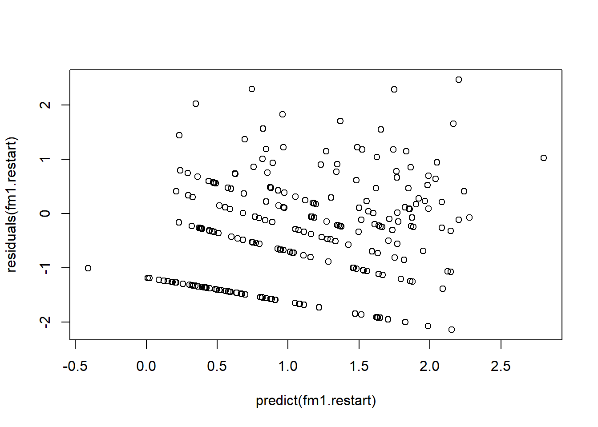
car::Anova(fm1.restart, type = 2)## Analysis of Deviance Table (Type II Wald chisquare tests)
##
## Response: total.flowers
## Chisq Df Pr(>Chisq)
## treatment 4.4979 1 0.033936 *
## flowering 61.5249 1 4.372e-15 ***
## flowers.pot 6.9018 1 0.008611 **
## ---
## Signif. codes: 0 '***' 0.001 '**' 0.01 '*' 0.05 '.' 0.1 ' ' 1m1 <- fm1.restart
#interactive model
m2 <- glmer.nb(total.flowers ~ treatment * flowering + flowers.pot + offset(log(dec.Length)) + (1|repID), data = byrep)## Warning in checkConv(attr(opt, "derivs"), opt$par, ctrl = control
## $checkConv, : Model failed to converge with max|grad| = 0.00373763 (tol =
## 0.001, component 1)fm1 <- m2
#recomputing
diag.vals <- getME(fm1,"theta")[getME(fm1,"lower") == 0]
any(diag.vals < 1e-6) # FALSE## [1] FALSE#recompute Hessian
devfun <- update(fm1, devFunOnly=TRUE)
if (isLMM(fm1)) {
pars <- getME(fm1,"theta")
} else {
## GLMM: requires both random and fixed parameters
pars <- getME(fm1, c("theta","fixef"))
}
if (require("numDeriv")) {
cat("hess:\n"); print(hess <- hessian(devfun, unlist(pars)))
cat("grad:\n"); print(grad <- grad(devfun, unlist(pars)))
cat("scaled gradient:\n")
print(scgrad <- solve(chol(hess), grad))
}## hess:
## [,1] [,2] [,3] [,4] [,5] [,6]
## [1,] 159.63804 125.68334 49.20946 59.14354 1260.4368 28.17539
## [2,] 125.68334 294.28485 145.68026 135.97319 3018.6437 64.98445
## [3,] 49.20946 145.68026 146.14266 64.86403 1463.2532 65.17268
## [4,] 59.14354 135.97319 64.86403 143.66420 1483.4893 69.07667
## [5,] 1260.43678 3018.64368 1463.25317 1483.48930 32527.8197 706.05791
## [6,] 28.17539 64.98445 65.17268 69.07667 706.0579 69.20138
## grad:
## [1] -0.015445632 -0.017989996 -0.007628908 -0.006358848 -0.176909908
## [6] -0.003234626
## scaled gradient:
## [1] -0.0018397265 0.0463913865 -0.0026348766 0.0047164220 -0.0046498689
## [6] -0.0007277885#restart model from different point
fm1.restart <- update(fm1, start=pars)## Warning in checkConv(attr(opt, "derivs"), opt$par, ctrl = control
## $checkConv, : Model failed to converge with max|grad| = 0.00209247 (tol =
## 0.001, component 1)#still issues
all <- allFit(fm1.restart)## bobyqa : [OK]
## Nelder_Mead :## Warning in checkConv(attr(opt, "derivs"), opt$par, ctrl = control
## $checkConv, : Model failed to converge with max|grad| = 0.00214766 (tol =
## 0.001, component 1)## [OK]
## nlminbw : [OK]
## nmkbw :## Warning in checkConv(attr(opt, "derivs"), opt$par, ctrl = control
## $checkConv, : Model failed to converge with max|grad| = 0.015294 (tol =
## 0.001, component 1)## [OK]
## optimx.L-BFGS-B :## Warning in checkConv(attr(opt, "derivs"), opt$par, ctrl = control
## $checkConv, : Model failed to converge with max|grad| = 0.019059 (tol =
## 0.001, component 1)## [OK]
## nloptwrap.NLOPT_LN_NELDERMEAD :## Warning in checkConv(attr(opt, "derivs"), opt$par, ctrl = control
## $checkConv, : Model failed to converge with max|grad| = 0.027357 (tol =
## 0.001, component 1)## [OK]
## nloptwrap.NLOPT_LN_BOBYQA :## Warning in checkConv(attr(opt, "derivs"), opt$par, ctrl = control
## $checkConv, : Model failed to converge with max|grad| = 0.027357 (tol =
## 0.001, component 1)## [OK]summary(all)## $which.OK
## bobyqa Nelder_Mead
## TRUE TRUE
## nlminbw nmkbw
## TRUE TRUE
## optimx.L-BFGS-B nloptwrap.NLOPT_LN_NELDERMEAD
## TRUE TRUE
## nloptwrap.NLOPT_LN_BOBYQA
## TRUE
##
## $msgs
## $msgs$bobyqa
## NULL
##
## $msgs$Nelder_Mead
## [1] "Model failed to converge with max|grad| = 0.00214766 (tol = 0.001, component 1)"
##
## $msgs$nlminbw
## NULL
##
## $msgs$nmkbw
## [1] "Model failed to converge with max|grad| = 0.015294 (tol = 0.001, component 1)"
##
## $msgs$`optimx.L-BFGS-B`
## [1] "Model failed to converge with max|grad| = 0.019059 (tol = 0.001, component 1)"
##
## $msgs$nloptwrap.NLOPT_LN_NELDERMEAD
## [1] "Model failed to converge with max|grad| = 0.027357 (tol = 0.001, component 1)"
##
## $msgs$nloptwrap.NLOPT_LN_BOBYQA
## [1] "Model failed to converge with max|grad| = 0.027357 (tol = 0.001, component 1)"
##
##
## $fixef
## (Intercept) treatmentshrub floweringbloom
## bobyqa 0.9766913 -0.3752166 -1.274207
## Nelder_Mead 0.9766965 -0.3752066 -1.274208
## nlminbw 0.9766868 -0.3751997 -1.274193
## nmkbw 0.9767053 -0.3753043 -1.274162
## optimx.L-BFGS-B 0.9766399 -0.3751786 -1.274157
## nloptwrap.NLOPT_LN_NELDERMEAD 0.9767681 -0.3753913 -1.274563
## nloptwrap.NLOPT_LN_BOBYQA 0.9767681 -0.3753913 -1.274563
## flowers.pot treatmentshrub:floweringbloom
## bobyqa 0.06938141 0.05607775
## Nelder_Mead 0.06938011 0.05606635
## nlminbw 0.06938111 0.05604513
## nmkbw 0.06938926 0.05601954
## optimx.L-BFGS-B 0.06945332 0.05602744
## nloptwrap.NLOPT_LN_NELDERMEAD 0.06941238 0.05636720
## nloptwrap.NLOPT_LN_BOBYQA 0.06941238 0.05636720
##
## $llik
## bobyqa Nelder_Mead
## -549.7777 -549.7777
## nlminbw nmkbw
## -549.7777 -549.7777
## optimx.L-BFGS-B nloptwrap.NLOPT_LN_NELDERMEAD
## -549.7778 -549.7777
## nloptwrap.NLOPT_LN_BOBYQA
## -549.7777
##
## $sdcor
## repID.(Intercept)
## bobyqa 0.3220719
## Nelder_Mead 0.3220711
## nlminbw 0.3220745
## nmkbw 0.3220591
## optimx.L-BFGS-B 0.3200612
## nloptwrap.NLOPT_LN_NELDERMEAD 0.3217991
## nloptwrap.NLOPT_LN_BOBYQA 0.3217991
##
## $theta
## repID.(Intercept)
## bobyqa 0.3220719
## Nelder_Mead 0.3220711
## nlminbw 0.3220745
## nmkbw 0.3220591
## optimx.L-BFGS-B 0.3200612
## nloptwrap.NLOPT_LN_NELDERMEAD 0.3217991
## nloptwrap.NLOPT_LN_BOBYQA 0.3217991
##
## $times
## user.self sys.self elapsed user.child
## bobyqa 0.72 0.00 0.71 NA
## Nelder_Mead 0.28 0.00 0.28 NA
## nlminbw 0.28 0.00 0.28 NA
## nmkbw 0.62 0.02 0.67 NA
## optimx.L-BFGS-B 1.82 0.02 1.96 NA
## nloptwrap.NLOPT_LN_NELDERMEAD 0.45 0.00 0.51 NA
## nloptwrap.NLOPT_LN_BOBYQA 0.17 0.00 0.17 NA
## sys.child
## bobyqa NA
## Nelder_Mead NA
## nlminbw NA
## nmkbw NA
## optimx.L-BFGS-B NA
## nloptwrap.NLOPT_LN_NELDERMEAD NA
## nloptwrap.NLOPT_LN_BOBYQA NA
##
## $feval
## bobyqa Nelder_Mead
## 943 221
## nlminbw nmkbw
## NA 288
## optimx.L-BFGS-B nloptwrap.NLOPT_LN_NELDERMEAD
## 10 67
## nloptwrap.NLOPT_LN_BOBYQA
## 67#3 models converged
#bobyqa is the real MVP
#lsmeans(fm1.restart, pairwise~treatment*flowering)
AIC(m1, m2)## df AIC
## m1 6 1111.588
## m2 7 1113.555#extract the fit that works so can use AIC WOOHOO!
m2 <- all$bobyqa
summary(m2)## Generalized linear mixed model fit by maximum likelihood (Laplace
## Approximation) [glmerMod]
## Family: Negative Binomial(1.0221) ( log )
## Formula:
## total.flowers ~ treatment * flowering + flowers.pot + offset(log(dec.Length)) +
## (1 | repID)
## Data: byrep
## Control: ctrl
##
## AIC BIC logLik deviance df.resid
## 1113.6 1137.8 -549.8 1099.6 228
##
## Scaled residuals:
## Min 1Q Median 3Q Max
## -0.9566 -0.7455 -0.2594 0.3440 4.7447
##
## Random effects:
## Groups Name Variance Std.Dev.
## repID (Intercept) 0.1037 0.3221
## Number of obs: 235, groups: repID, 122
##
## Fixed effects:
## Estimate Std. Error z value Pr(>|z|)
## (Intercept) 0.97669 0.29824 3.275 0.00106 **
## treatmentshrub -0.37522 0.21793 -1.722 0.08512 .
## floweringbloom -1.27421 0.21840 -5.834 5.4e-09 ***
## flowers.pot 0.06938 0.02639 2.629 0.00857 **
## treatmentshrub:floweringbloom 0.05608 0.31136 0.180 0.85707
## ---
## Signif. codes: 0 '***' 0.001 '**' 0.01 '*' 0.05 '.' 0.1 ' ' 1
##
## Correlation of Fixed Effects:
## (Intr) trtmnt flwrng flwrs.
## tretmntshrb -0.377
## flowerngblm -0.197 0.457
## flowers.pot -0.834 -0.008 -0.171
## trtmntshrb: 0.246 -0.656 -0.685 0.007null <- glmer.nb(total.flowers ~ flowers.pot + offset(log(dec.Length)) + (1|repID), data = byrep)## Warning in checkConv(attr(opt, "derivs"), opt$par, ctrl = control
## $checkConv, : Model failed to converge with max|grad| = 0.00867956 (tol =
## 0.001, component 1)## Warning in checkConv(attr(opt, "derivs"), opt$par, ctrl = control
## $checkConv, : Model failed to converge with max|grad| = 0.00116282 (tol =
## 0.001, component 1)fm1 <- null
#recomputing
diag.vals <- getME(fm1,"theta")[getME(fm1,"lower") == 0]
any(diag.vals < 1e-6) # FALSE## [1] FALSE#recompute Hessian
devfun <- update(fm1, devFunOnly=TRUE)
if (isLMM(fm1)) {
pars <- getME(fm1,"theta")
} else {
## GLMM: requires both random and fixed parameters
pars <- getME(fm1, c("theta","fixef"))
}
if (require("numDeriv")) {
cat("hess:\n"); print(hess <- hessian(devfun, unlist(pars)))
cat("grad:\n"); print(grad <- grad(devfun, unlist(pars)))
cat("scaled gradient:\n")
print(scgrad <- solve(chol(hess), grad))
}## hess:
## [,1] [,2] [,3]
## [1,] 149.4948 104.3418 1015.585
## [2,] 104.3418 234.1306 2357.531
## [3,] 1015.5848 2357.5308 26182.704
## grad:
## [1] -0.007497819 -0.007282014 -0.071497986
## scaled gradient:
## [1] -0.0007066095 0.0142449304 -0.0014497865#restart model from different point
fm1.restart <- update(fm1, start=pars)## Warning in checkConv(attr(opt, "derivs"), opt$par, ctrl = control
## $checkConv, : Model failed to converge with max|grad| = 0.00114715 (tol =
## 0.001, component 1)all.null <- allFit(fm1.restart)## bobyqa : [OK]
## Nelder_Mead : [OK]
## nlminbw :## Warning in checkConv(attr(opt, "derivs"), opt$par, ctrl = control
## $checkConv, : Model failed to converge with max|grad| = 0.00140461 (tol =
## 0.001, component 1)## [OK]
## nmkbw :## Warning in checkConv(attr(opt, "derivs"), opt$par, ctrl = control
## $checkConv, : Model failed to converge with max|grad| = 0.00835416 (tol =
## 0.001, component 1)## [OK]
## optimx.L-BFGS-B :## Warning in checkConv(attr(opt, "derivs"), opt$par, ctrl = control
## $checkConv, : Model failed to converge with max|grad| = 0.0132618 (tol =
## 0.001, component 1)## [OK]
## nloptwrap.NLOPT_LN_NELDERMEAD :## Warning in checkConv(attr(opt, "derivs"), opt$par, ctrl = control
## $checkConv, : Model failed to converge with max|grad| = 0.00186639 (tol =
## 0.001, component 1)## [OK]
## nloptwrap.NLOPT_LN_BOBYQA :## Warning in checkConv(attr(opt, "derivs"), opt$par, ctrl = control
## $checkConv, : Model failed to converge with max|grad| = 0.00186639 (tol =
## 0.001, component 1)## [OK]summary(all.null)## $which.OK
## bobyqa Nelder_Mead
## TRUE TRUE
## nlminbw nmkbw
## TRUE TRUE
## optimx.L-BFGS-B nloptwrap.NLOPT_LN_NELDERMEAD
## TRUE TRUE
## nloptwrap.NLOPT_LN_BOBYQA
## TRUE
##
## $msgs
## $msgs$bobyqa
## NULL
##
## $msgs$Nelder_Mead
## NULL
##
## $msgs$nlminbw
## [1] "Model failed to converge with max|grad| = 0.00140461 (tol = 0.001, component 1)"
##
## $msgs$nmkbw
## [1] "Model failed to converge with max|grad| = 0.00835416 (tol = 0.001, component 1)"
##
## $msgs$`optimx.L-BFGS-B`
## [1] "Model failed to converge with max|grad| = 0.0132618 (tol = 0.001, component 1)"
##
## $msgs$nloptwrap.NLOPT_LN_NELDERMEAD
## [1] "Model failed to converge with max|grad| = 0.00186639 (tol = 0.001, component 1)"
##
## $msgs$nloptwrap.NLOPT_LN_BOBYQA
## [1] "Model failed to converge with max|grad| = 0.00186639 (tol = 0.001, component 1)"
##
##
## $fixef
## (Intercept) flowers.pot
## bobyqa 0.7559404 0.02793070
## Nelder_Mead 0.7559531 0.02793002
## nlminbw 0.7556863 0.02795642
## nmkbw 0.7558643 0.02794163
## optimx.L-BFGS-B 0.7559282 0.02795434
## nloptwrap.NLOPT_LN_NELDERMEAD 0.7560486 0.02791489
## nloptwrap.NLOPT_LN_BOBYQA 0.7560486 0.02791489
##
## $llik
## bobyqa Nelder_Mead
## -578.3832 -578.3832
## nlminbw nmkbw
## -578.3832 -578.3832
## optimx.L-BFGS-B nloptwrap.NLOPT_LN_NELDERMEAD
## -578.3832 -578.3832
## nloptwrap.NLOPT_LN_BOBYQA
## -578.3832
##
## $sdcor
## repID.(Intercept)
## bobyqa 0.3069380
## Nelder_Mead 0.3069308
## nlminbw 0.3069375
## nmkbw 0.3069438
## optimx.L-BFGS-B 0.3062909
## nloptwrap.NLOPT_LN_NELDERMEAD 0.3070367
## nloptwrap.NLOPT_LN_BOBYQA 0.3070367
##
## $theta
## repID.(Intercept)
## bobyqa 0.3069380
## Nelder_Mead 0.3069308
## nlminbw 0.3069375
## nmkbw 0.3069438
## optimx.L-BFGS-B 0.3062909
## nloptwrap.NLOPT_LN_NELDERMEAD 0.3070367
## nloptwrap.NLOPT_LN_BOBYQA 0.3070367
##
## $times
## user.self sys.self elapsed user.child
## bobyqa 0.48 0 0.48 NA
## Nelder_Mead 0.16 0 0.16 NA
## nlminbw 0.07 0 0.08 NA
## nmkbw 0.39 0 0.39 NA
## optimx.L-BFGS-B 0.84 0 0.96 NA
## nloptwrap.NLOPT_LN_NELDERMEAD 0.11 0 0.11 NA
## nloptwrap.NLOPT_LN_BOBYQA 0.11 0 0.11 NA
## sys.child
## bobyqa NA
## Nelder_Mead NA
## nlminbw NA
## nmkbw NA
## optimx.L-BFGS-B NA
## nloptwrap.NLOPT_LN_NELDERMEAD NA
## nloptwrap.NLOPT_LN_BOBYQA NA
##
## $feval
## bobyqa Nelder_Mead
## 254 106
## nlminbw nmkbw
## NA 102
## optimx.L-BFGS-B nloptwrap.NLOPT_LN_NELDERMEAD
## 12 30
## nloptwrap.NLOPT_LN_BOBYQA
## 30null <- all.null$bobyqa
anova(null, m1,m2)## Data: byrep
## Models:
## null: total.flowers ~ flowers.pot + offset(log(dec.Length)) + (1 |
## null: repID)
## m1: total.flowers ~ treatment + flowering + flowers.pot + offset(log(dec.Length)) +
## m1: (1 | repID)
## m2: total.flowers ~ treatment * flowering + flowers.pot + offset(log(dec.Length)) +
## m2: (1 | repID)
## Df AIC BIC logLik deviance Chisq Chi Df Pr(>Chisq)
## null 4 1164.8 1178.6 -578.38 1156.8
## m1 6 1111.6 1132.3 -549.79 1099.6 57.1788 2 3.835e-13 ***
## m2 7 1113.6 1137.8 -549.78 1099.6 0.0322 1 0.8576
## ---
## Signif. codes: 0 '***' 0.001 '**' 0.01 '*' 0.05 '.' 0.1 ' ' 1AIC(m1,m2, null)## df AIC
## m1 6 1111.588
## m2 7 1113.555
## null 4 1164.766summary(m2)## Generalized linear mixed model fit by maximum likelihood (Laplace
## Approximation) [glmerMod]
## Family: Negative Binomial(1.0221) ( log )
## Formula:
## total.flowers ~ treatment * flowering + flowers.pot + offset(log(dec.Length)) +
## (1 | repID)
## Data: byrep
## Control: ctrl
##
## AIC BIC logLik deviance df.resid
## 1113.6 1137.8 -549.8 1099.6 228
##
## Scaled residuals:
## Min 1Q Median 3Q Max
## -0.9566 -0.7455 -0.2594 0.3440 4.7447
##
## Random effects:
## Groups Name Variance Std.Dev.
## repID (Intercept) 0.1037 0.3221
## Number of obs: 235, groups: repID, 122
##
## Fixed effects:
## Estimate Std. Error z value Pr(>|z|)
## (Intercept) 0.97669 0.29824 3.275 0.00106 **
## treatmentshrub -0.37522 0.21793 -1.722 0.08512 .
## floweringbloom -1.27421 0.21840 -5.834 5.4e-09 ***
## flowers.pot 0.06938 0.02639 2.629 0.00857 **
## treatmentshrub:floweringbloom 0.05608 0.31136 0.180 0.85707
## ---
## Signif. codes: 0 '***' 0.001 '**' 0.01 '*' 0.05 '.' 0.1 ' ' 1
##
## Correlation of Fixed Effects:
## (Intr) trtmnt flwrng flwrs.
## tretmntshrb -0.377
## flowerngblm -0.197 0.457
## flowers.pot -0.834 -0.008 -0.171
## trtmntshrb: 0.246 -0.656 -0.685 0.007car::Anova(m2, type = 3)## Analysis of Deviance Table (Type III Wald chisquare tests)
##
## Response: total.flowers
## Chisq Df Pr(>Chisq)
## (Intercept) 10.7246 1 0.001057 **
## treatment 2.9643 1 0.085122 .
## flowering 34.0384 1 5.403e-09 ***
## flowers.pot 6.9100 1 0.008571 **
## treatment:flowering 0.0324 1 0.857071
## ---
## Signif. codes: 0 '***' 0.001 '**' 0.01 '*' 0.05 '.' 0.1 ' ' 1## modeling total visits
#base additive model
m3 <- glmer.nb(total.visits ~ treatment + flowering + flowers.pot + offset(log(dec.Length)) + (1|repID), data = byrep)## Warning in checkConv(attr(opt, "derivs"), opt$par, ctrl = control
## $checkConv, : Model failed to converge with max|grad| = 0.061105 (tol =
## 0.001, component 1)## Warning in checkConv(attr(opt, "derivs"), opt$par, ctrl = control$checkConv, : Model is nearly unidentifiable: very large eigenvalue
## - Rescale variables?## Warning in checkConv(attr(opt, "derivs"), opt$par, ctrl = control
## $checkConv, : Model failed to converge with max|grad| = 0.00127043 (tol =
## 0.001, component 1)## Warning in checkConv(attr(opt, "derivs"), opt$par, ctrl = control
## $checkConv, : Model failed to converge with max|grad| = 0.00101398 (tol =
## 0.001, component 1)## Warning in checkConv(attr(opt, "derivs"), opt$par, ctrl = control
## $checkConv, : Model failed to converge with max|grad| = 0.00334587 (tol =
## 0.001, component 1)## Warning in checkConv(attr(opt, "derivs"), opt$par, ctrl = control
## $checkConv, : Model failed to converge with max|grad| = 0.001583 (tol =
## 0.001, component 1)## Warning in checkConv(attr(opt, "derivs"), opt$par, ctrl = control
## $checkConv, : Model failed to converge with max|grad| = 0.0012582 (tol =
## 0.001, component 1)fm1 <- m3
devfun <- update(fm1, devFunOnly=TRUE)
if (isLMM(fm1)) {
pars <- getME(fm1,"theta")
} else {
## GLMM: requires both random and fixed parameters
pars <- getME(fm1, c("theta","fixef"))
}
if (require("numDeriv")) {
cat("hess:\n"); print(hess <- hessian(devfun, unlist(pars)))
cat("grad:\n"); print(grad <- grad(devfun, unlist(pars)))
cat("scaled gradient:\n")
print(scgrad <- solve(chol(hess), grad))
}## hess:
## [,1] [,2] [,3] [,4] [,5]
## [1,] 131.69489 115.8203 43.61891 44.50394 1135.734
## [2,] 115.82028 392.2286 187.86013 164.52975 3935.871
## [3,] 43.61891 187.8601 187.86019 77.60842 1894.350
## [4,] 44.50394 164.5297 77.60842 171.90022 1782.523
## [5,] 1135.73403 3935.8713 1894.35034 1782.52265 43307.538
## grad:
## [1] -0.0005504472 -0.0038266778 -0.0010230458 -0.0008277728 -0.0370475363
## scaled gradient:
## [1] 5.459891e-06 5.713110e-03 -5.357464e-05 6.989585e-04 -6.141398e-04m3.restart <- update(fm1, start=pars)
#all <- allFit(m3.restart)
#summary(all)
summary(m3.restart)## Generalized linear mixed model fit by maximum likelihood (Laplace
## Approximation) [glmerMod]
## Family: Negative Binomial(1.494) ( log )
## Formula:
## total.visits ~ treatment + flowering + flowers.pot + offset(log(dec.Length)) +
## (1 | repID)
## Data: byrep
##
## AIC BIC logLik deviance df.resid
## 1000.7 1021.5 -494.4 988.7 229
##
## Scaled residuals:
## Min 1Q Median 3Q Max
## -1.1060 -0.7913 -0.2358 0.4510 4.3775
##
## Random effects:
## Groups Name Variance Std.Dev.
## repID (Intercept) 0.0461 0.2147
## Number of obs: 235, groups: repID, 122
##
## Fixed effects:
## Estimate Std. Error z value Pr(>|z|)
## (Intercept) 0.95102 0.25572 3.719 0.0002 ***
## treatmentshrub -0.32583 0.14402 -2.262 0.0237 *
## floweringbloom -1.25130 0.14271 -8.768 <2e-16 ***
## flowers.pot 0.04736 0.02336 2.028 0.0426 *
## ---
## Signif. codes: 0 '***' 0.001 '**' 0.01 '*' 0.05 '.' 0.1 ' ' 1
##
## Correlation of Fixed Effects:
## (Intr) trtmnt flwrng
## tretmntshrb -0.280
## flowerngblm -0.053 0.019
## flowers.pot -0.868 -0.015 -0.210car::Anova(m3.restart, type = 2)## Analysis of Deviance Table (Type II Wald chisquare tests)
##
## Response: total.visits
## Chisq Df Pr(>Chisq)
## treatment 5.1183 1 0.02367 *
## flowering 76.8832 1 < 2e-16 ***
## flowers.pot 4.1109 1 0.04261 *
## ---
## Signif. codes: 0 '***' 0.001 '**' 0.01 '*' 0.05 '.' 0.1 ' ' 1overdisp_fun(m3.restart)## chisq ratio rdf p
## 228.7379098 0.9945127 230.0000000 0.5111087shapiro.test(residuals(m3.restart))##
## Shapiro-Wilk normality test
##
## data: residuals(m3.restart)
## W = 0.97851, p-value = 0.001227m3 <- m3.restart
#main hypothesis interactive model
m5 <- glmer.nb(total.visits ~ treatment * flowering + flowers.pot + offset(log(dec.Length)) + (1|repID), data = byrep)## Warning in checkConv(attr(opt, "derivs"), opt$par, ctrl = control
## $checkConv, : Model failed to converge with max|grad| = 0.0612162 (tol =
## 0.001, component 1)## Warning in checkConv(attr(opt, "derivs"), opt$par, ctrl = control$checkConv, : Model is nearly unidentifiable: very large eigenvalue
## - Rescale variables?## Warning in checkConv(attr(opt, "derivs"), opt$par, ctrl = control
## $checkConv, : Model failed to converge with max|grad| = 0.00265439 (tol =
## 0.001, component 1)## Warning in checkConv(attr(opt, "derivs"), opt$par, ctrl = control
## $checkConv, : Model failed to converge with max|grad| = 0.00119887 (tol =
## 0.001, component 1)## Warning in checkConv(attr(opt, "derivs"), opt$par, ctrl = control
## $checkConv, : Model failed to converge with max|grad| = 0.00129344 (tol =
## 0.001, component 1)## Warning in checkConv(attr(opt, "derivs"), opt$par, ctrl = control
## $checkConv, : Model failed to converge with max|grad| = 0.00193866 (tol =
## 0.001, component 1)fm1 <- m5
devfun <- update(fm1, devFunOnly=TRUE)
if (isLMM(fm1)) {
pars <- getME(fm1,"theta")
} else {
## GLMM: requires both random and fixed parameters
pars <- getME(fm1, c("theta","fixef"))
}
if (require("numDeriv")) {
cat("hess:\n"); print(hess <- hessian(devfun, unlist(pars)))
cat("grad:\n"); print(grad <- grad(devfun, unlist(pars)))
cat("scaled gradient:\n")
print(scgrad <- solve(chol(hess), grad))
}## hess:
## [,1] [,2] [,3] [,4] [,5] [,6]
## [1,] 137.43749 118.02556 44.67479 45.38942 1158.1828 18.82259
## [2,] 118.02556 393.35968 188.90883 164.92333 3947.8462 77.75848
## [3,] 44.67479 188.90883 188.73274 77.75848 1902.7597 77.75848
## [4,] 45.38942 164.92333 77.75848 172.74437 1787.5177 81.07442
## [5,] 1158.18280 3947.84617 1902.75973 1787.51770 43447.8474 848.53688
## [6,] 18.82259 77.75848 77.75848 81.07442 848.5369 81.07442
## grad:
## [1] -0.0005843609 -0.0042596992 -0.0013339259 -0.0008197536 -0.0412160197
## [6] -0.0002820125
## scaled gradient:
## [1] 9.979133e-06 6.345227e-03 -7.025469e-05 8.119219e-04 -6.819206e-04
## [6] -5.559834e-05m5.restart <- update(fm1, start=pars)
#all <- allFit(m3.restart)
#summary(all)
summary(m5.restart)## Generalized linear mixed model fit by maximum likelihood (Laplace
## Approximation) [glmerMod]
## Family: Negative Binomial(1.513) ( log )
## Formula:
## total.visits ~ treatment * flowering + flowers.pot + offset(log(dec.Length)) +
## (1 | repID)
## Data: byrep
##
## AIC BIC logLik deviance df.resid
## 1002.7 1026.9 -494.3 988.7 228
##
## Scaled residuals:
## Min 1Q Median 3Q Max
## -1.1121 -0.7931 -0.2291 0.4583 4.3919
##
## Random effects:
## Groups Name Variance Std.Dev.
## repID (Intercept) 0.04848 0.2202
## Number of obs: 235, groups: repID, 122
##
## Fixed effects:
## Estimate Std. Error z value Pr(>|z|)
## (Intercept) 0.95592 0.26199 3.649 0.000264 ***
## treatmentshrub -0.33984 0.18559 -1.831 0.067076 .
## floweringbloom -1.26759 0.19398 -6.535 6.38e-11 ***
## flowers.pot 0.04735 0.02330 2.032 0.042161 *
## treatmentshrub:floweringbloom 0.03522 0.27856 0.126 0.899375
## ---
## Signif. codes: 0 '***' 0.001 '**' 0.01 '*' 0.05 '.' 0.1 ' ' 1
##
## Correlation of Fixed Effects:
## (Intr) trtmnt flwrng flwrs.
## tretmntshrb -0.356
## flowerngblm -0.193 0.442
## flowers.pot -0.846 -0.008 -0.150
## trtmntshrb: 0.228 -0.632 -0.680 -0.006m5 <- m5.restart
#null model
null <- glmer.nb(total.visits ~ flowers.pot + offset(log(dec.Length)) + (1|repID), data = byrep)## Warning in checkConv(attr(opt, "derivs"), opt$par, ctrl = control
## $checkConv, : Model failed to converge with max|grad| = 0.00126432 (tol =
## 0.001, component 1)fm1 <- null
devfun <- update(fm1, devFunOnly=TRUE)
if (isLMM(fm1)) {
pars <- getME(fm1,"theta")
} else {
## GLMM: requires both random and fixed parameters
pars <- getME(fm1, c("theta","fixef"))
}
if (require("numDeriv")) {
cat("hess:\n"); print(hess <- hessian(devfun, unlist(pars)))
cat("grad:\n"); print(grad <- grad(devfun, unlist(pars)))
cat("scaled gradient:\n")
print(scgrad <- solve(chol(hess), grad))
}## hess:
## [,1] [,2] [,3]
## [1,] 51.27997 68.38341 700.2488
## [2,] 68.38341 297.60198 2980.1098
## [3,] 700.24881 2980.10975 32705.6299
## grad:
## [1] 0.0027320740 -0.0006796017 -0.0056649437
## scaled gradient:
## [1] 0.0004907154 0.0010034268 -0.0001059869null.restart <- update(fm1, start=pars)
null <- null.restart
anova(m3,m5, null)## Data: byrep
## Models:
## null: total.visits ~ flowers.pot + offset(log(dec.Length)) + (1 | repID)
## m3: total.visits ~ treatment + flowering + flowers.pot + offset(log(dec.Length)) +
## m3: (1 | repID)
## m5: total.visits ~ treatment * flowering + flowers.pot + offset(log(dec.Length)) +
## m5: (1 | repID)
## Df AIC BIC logLik deviance Chisq Chi Df Pr(>Chisq)
## null 4 1066.0 1079.8 -529.00 1058.0
## m3 6 1000.7 1021.5 -494.35 988.7 69.2940 2 8.974e-16 ***
## m5 7 1002.7 1026.9 -494.35 988.7 0.0072 1 0.9326
## ---
## Signif. codes: 0 '***' 0.001 '**' 0.01 '*' 0.05 '.' 0.1 ' ' 1AIC(m3, m5, null)## df AIC
## m3 6 1000.703
## m5 7 1002.696
## null 4 1065.997car::Anova(m3, type = 2)## Analysis of Deviance Table (Type II Wald chisquare tests)
##
## Response: total.visits
## Chisq Df Pr(>Chisq)
## treatment 5.1183 1 0.02367 *
## flowering 76.8832 1 < 2e-16 ***
## flowers.pot 4.1109 1 0.04261 *
## ---
## Signif. codes: 0 '***' 0.001 '**' 0.01 '*' 0.05 '.' 0.1 ' ' 1ggplot(byrep, aes(treatment, flowers.per.hour)) + geom_boxplot()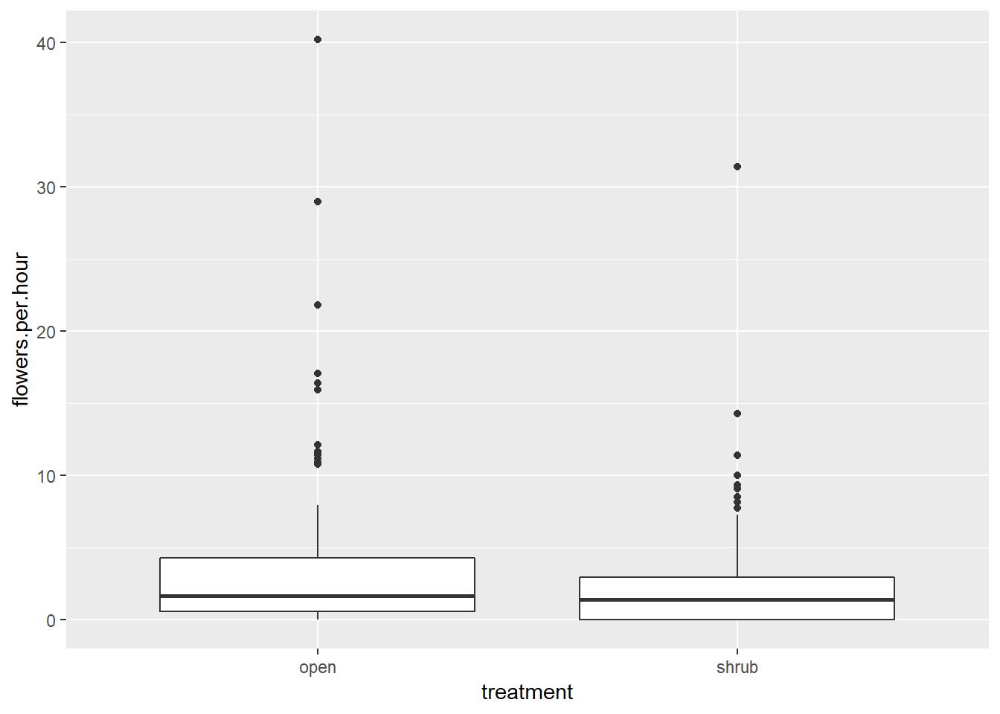
ggplot(byrep, aes(flowering, flowers.per.hour)) + geom_boxplot() + facet_grid(~treatment)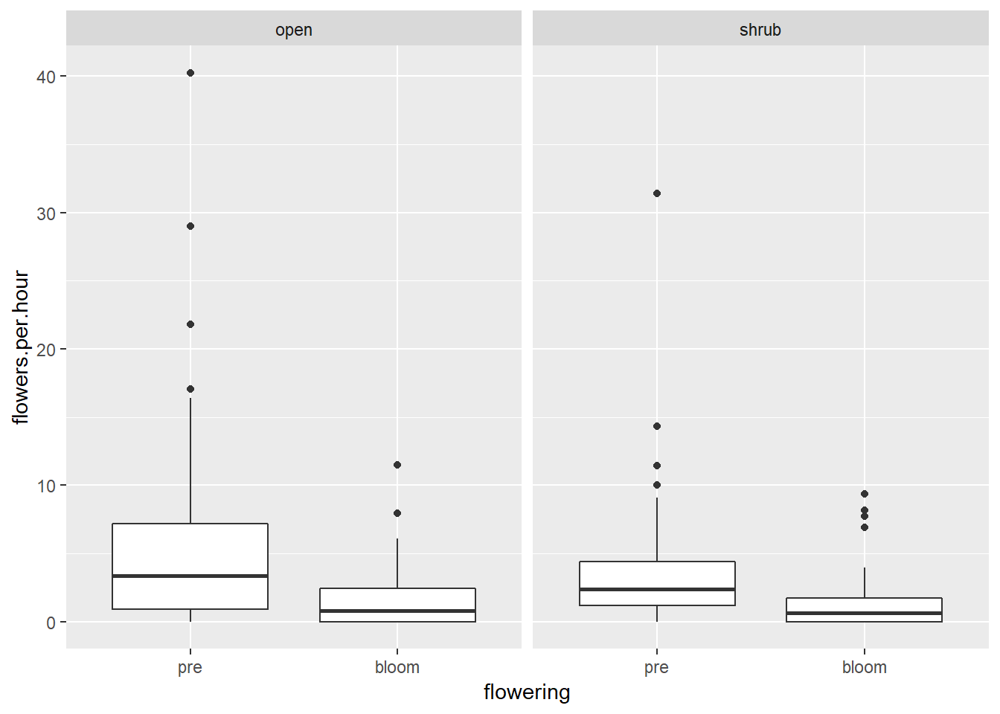
#testing importance of covariates
#using TMB because glmer will not coverge.
base <- glmmTMB(total.flowers ~ treatment + flowering + flowers.pot + offset(log(dec.Length)) + (1|repID), family = "nbinom2", data = byrep)
summary(base)## Family: nbinom2 ( log )
## Formula:
## total.flowers ~ treatment + flowering + flowers.pot + offset(log(dec.Length)) +
## (1 | repID)
## Data: byrep
##
## AIC BIC logLik deviance df.resid
## 1111.4 1132.2 -549.7 1099.4 229
##
## Random effects:
##
## Conditional model:
## Groups Name Variance Std.Dev.
## repID (Intercept) 0.1137 0.3372
## Number of obs: 235, groups: repID, 122
##
## Overdispersion parameter for nbinom2 family (): 1.03
##
## Conditional model:
## Estimate Std. Error z value Pr(>|z|)
## (Intercept) 0.99295 0.28935 3.432 0.00060 ***
## treatmentshrub -0.35032 0.16682 -2.100 0.03573 *
## floweringbloom -1.25514 0.16057 -7.817 5.41e-15 ***
## flowers.pot 0.06992 0.02667 2.622 0.00874 **
## ---
## Signif. codes: 0 '***' 0.001 '**' 0.01 '*' 0.05 '.' 0.1 ' ' 1c1 <- glmmTMB(total.flowers ~ treatment + flowering + flowers.pot + understory.richness+ offset(log(dec.Length)) + (1|repID), family = "nbinom2", data = byrep)
summary(c1)## Family: nbinom2 ( log )
## Formula:
## total.flowers ~ treatment + flowering + flowers.pot + understory.richness +
## offset(log(dec.Length)) + (1 | repID)
## Data: byrep
##
## AIC BIC logLik deviance df.resid
## 1092.6 1116.7 -539.3 1078.6 224
##
## Random effects:
##
## Conditional model:
## Groups Name Variance Std.Dev.
## repID (Intercept) 0.1321 0.3635
## Number of obs: 231, groups: repID, 122
##
## Overdispersion parameter for nbinom2 family (): 1.1
##
## Conditional model:
## Estimate Std. Error z value Pr(>|z|)
## (Intercept) 0.50760 0.35732 1.421 0.1554
## treatmentshrub -0.38831 0.16723 -2.322 0.0202 *
## floweringbloom -1.19232 0.16523 -7.216 5.35e-13 ***
## flowers.pot 0.06941 0.02695 2.576 0.0100 *
## understory.richness 0.18934 0.09021 2.099 0.0358 *
## ---
## Signif. codes: 0 '***' 0.001 '**' 0.01 '*' 0.05 '.' 0.1 ' ' 1c1.1 <- glmmTMB(total.flowers ~ treatment + flowering + flowers.pot + understory.richness+ offset(log(dec.Length)) + (1|repID), family = "nbinom1", data = byrep)
summary(c1.1)## Family: nbinom1 ( log )
## Formula:
## total.flowers ~ treatment + flowering + flowers.pot + understory.richness +
## offset(log(dec.Length)) + (1 | repID)
## Data: byrep
##
## AIC BIC logLik deviance df.resid
## 1098.1 1122.2 -542.0 1084.1 224
##
## Random effects:
##
## Conditional model:
## Groups Name Variance Std.Dev.
## repID (Intercept) 5.185e-09 7.201e-05
## Number of obs: 231, groups: repID, 122
##
## Overdispersion parameter for nbinom1 family (): 4.26
##
## Conditional model:
## Estimate Std. Error z value Pr(>|z|)
## (Intercept) 0.46139 0.32209 1.433 0.15200
## treatmentshrub -0.28933 0.13231 -2.187 0.02876 *
## floweringbloom -0.96031 0.14132 -6.795 1.08e-11 ***
## flowers.pot 0.05704 0.02185 2.611 0.00904 **
## understory.richness 0.24002 0.07824 3.068 0.00216 **
## ---
## Signif. codes: 0 '***' 0.001 '**' 0.01 '*' 0.05 '.' 0.1 ' ' 1AIC(c1, c1.1)## df AIC
## c1 7 1092.593
## c1.1 7 1098.089#nbinom2 is better
c2 <- glmmTMB(total.flowers ~ treatment + flowering + flowers.pot + het.annual.floral.density + offset(log(dec.Length)) + (1|repID), family = nbinom2(link = "log"), data = byrep)
summary(c2)## Family: nbinom2 ( log )
## Formula:
## total.flowers ~ treatment + flowering + flowers.pot + het.annual.floral.density +
## offset(log(dec.Length)) + (1 | repID)
## Data: byrep
##
## AIC BIC logLik deviance df.resid
## 1088.0 1112.1 -537.0 1074.0 223
##
## Random effects:
##
## Conditional model:
## Groups Name Variance Std.Dev.
## repID (Intercept) 0.1376 0.3709
## Number of obs: 230, groups: repID, 122
##
## Overdispersion parameter for nbinom2 family (): 1.09
##
## Conditional model:
## Estimate Std. Error z value Pr(>|z|)
## (Intercept) 0.81221 0.29875 2.719 0.00655 **
## treatmentshrub -0.36598 0.16944 -2.160 0.03077 *
## floweringbloom -1.23964 0.16353 -7.581 3.44e-14 ***
## flowers.pot 0.08084 0.02711 2.981 0.00287 **
## het.annual.floral.density 0.04013 0.02342 1.713 0.08664 .
## ---
## Signif. codes: 0 '***' 0.001 '**' 0.01 '*' 0.05 '.' 0.1 ' ' 1c2.1 <- glmmTMB(total.flowers ~ treatment + flowering + flowers.pot + het.annual.floral.density + offset(log(dec.Length)) + (1|repID), family = "nbinom1", data = byrep)
AIC(c2, c2.1)## df AIC
## c2 7 1088.024
## c2.1 7 1094.671summary(c2)## Family: nbinom2 ( log )
## Formula:
## total.flowers ~ treatment + flowering + flowers.pot + het.annual.floral.density +
## offset(log(dec.Length)) + (1 | repID)
## Data: byrep
##
## AIC BIC logLik deviance df.resid
## 1088.0 1112.1 -537.0 1074.0 223
##
## Random effects:
##
## Conditional model:
## Groups Name Variance Std.Dev.
## repID (Intercept) 0.1376 0.3709
## Number of obs: 230, groups: repID, 122
##
## Overdispersion parameter for nbinom2 family (): 1.09
##
## Conditional model:
## Estimate Std. Error z value Pr(>|z|)
## (Intercept) 0.81221 0.29875 2.719 0.00655 **
## treatmentshrub -0.36598 0.16944 -2.160 0.03077 *
## floweringbloom -1.23964 0.16353 -7.581 3.44e-14 ***
## flowers.pot 0.08084 0.02711 2.981 0.00287 **
## het.annual.floral.density 0.04013 0.02342 1.713 0.08664 .
## ---
## Signif. codes: 0 '***' 0.001 '**' 0.01 '*' 0.05 '.' 0.1 ' ' 1c2.v <- glmmTMB(total.visits ~ treatment + flowering + flowers.pot + het.annual.floral.density + offset(log(dec.Length)) + (1|repID), family = nbinom2(link = "log"), data = byrep)
summary(c2.v)## Family: nbinom2 ( log )
## Formula:
## total.visits ~ treatment + flowering + flowers.pot + het.annual.floral.density +
## offset(log(dec.Length)) + (1 | repID)
## Data: byrep
##
## AIC BIC logLik deviance df.resid
## 976.5 1000.6 -481.2 962.5 223
##
## Random effects:
##
## Conditional model:
## Groups Name Variance Std.Dev.
## repID (Intercept) 0.07118 0.2668
## Number of obs: 230, groups: repID, 122
##
## Overdispersion parameter for nbinom2 family (): 1.63
##
## Conditional model:
## Estimate Std. Error z value Pr(>|z|)
## (Intercept) 0.76550 0.26270 2.914 0.00357 **
## treatmentshrub -0.33019 0.14706 -2.245 0.02475 *
## floweringbloom -1.24571 0.14513 -8.584 < 2e-16 ***
## flowers.pot 0.05943 0.02374 2.503 0.01230 *
## het.annual.floral.density 0.04086 0.01984 2.059 0.03950 *
## ---
## Signif. codes: 0 '***' 0.001 '**' 0.01 '*' 0.05 '.' 0.1 ' ' 1c3 <- glmmTMB(total.flowers ~ treatment + flowering + flowers.pot + het.shrub.blooming.neighbours + offset(log(dec.Length)) + (1|repID), family = "nbinom2", data = byrep)
summary(c3)## Family: nbinom2 ( log )
## Formula:
## total.flowers ~ treatment + flowering + flowers.pot + het.shrub.blooming.neighbours +
## offset(log(dec.Length)) + (1 | repID)
## Data: byrep
##
## AIC BIC logLik deviance df.resid
## 1095.5 1119.6 -540.8 1081.5 224
##
## Random effects:
##
## Conditional model:
## Groups Name Variance Std.Dev.
## repID (Intercept) 0.1183 0.344
## Number of obs: 231, groups: repID, 122
##
## Overdispersion parameter for nbinom2 family (): 1.06
##
## Conditional model:
## Estimate Std. Error z value Pr(>|z|)
## (Intercept) 0.94775 0.29061 3.261 0.00111 **
## treatmentshrub -0.32888 0.16998 -1.935 0.05301 .
## floweringbloom -1.16615 0.18601 -6.269 3.63e-10 ***
## flowers.pot 0.07598 0.02703 2.811 0.00494 **
## het.shrub.blooming.neighbours -0.04940 0.04093 -1.207 0.22744
## ---
## Signif. codes: 0 '***' 0.001 '**' 0.01 '*' 0.05 '.' 0.1 ' ' 1c2.v <- glmmTMB(total.visits ~ treatment + flowering + flowers.pot + het.shrub.blooming.neighbours + offset(log(dec.Length)) + (1|repID), family = "nbinom2", data = byrep)
summary(c2.v)## Family: nbinom2 ( log )
## Formula:
## total.visits ~ treatment + flowering + flowers.pot + het.shrub.blooming.neighbours +
## offset(log(dec.Length)) + (1 | repID)
## Data: byrep
##
## AIC BIC logLik deviance df.resid
## 986.5 1010.6 -486.2 972.5 224
##
## Random effects:
##
## Conditional model:
## Groups Name Variance Std.Dev.
## repID (Intercept) 0.0557 0.236
## Number of obs: 231, groups: repID, 122
##
## Overdispersion parameter for nbinom2 family (): 1.53
##
## Conditional model:
## Estimate Std. Error z value Pr(>|z|)
## (Intercept) 0.92071 0.25682 3.585 0.000337 ***
## treatmentshrub -0.31539 0.14829 -2.127 0.033435 *
## floweringbloom -1.20875 0.16707 -7.235 4.66e-13 ***
## flowers.pot 0.05296 0.02376 2.229 0.025799 *
## het.shrub.blooming.neighbours -0.03124 0.03744 -0.835 0.403997
## ---
## Signif. codes: 0 '***' 0.001 '**' 0.01 '*' 0.05 '.' 0.1 ' ' 1RTU visitation modelling
Models for testing RTU-specificity
#rtu modelling: look at species-specificity
library(dplyr)
library(ggplot2)
library(lme4)
library(lsmeans)
library(sjPlot)## Warning: package 'sjPlot' was built under R version 3.4.4library(jtools)## Warning: package 'jtools' was built under R version 3.4.4source(system.file("utils", "allFit.R", package="lme4"))
library(glmmTMB)
library(tidyr)
byrtu <- read.csv("rtu_by_rep.csv")
byrtu$repID <- paste(byrtu$PlantID, byrtu$treatment)
byrtu$treatment <- relevel(byrtu$treatment, "open")
byrtu$flowering <- relevel(byrtu$flowering, "pre")
#Full model
mFullPQ <- MASS::glmmPQL(total.visits~flowering * rtu * treatment + flowers.pot + offset(log(dec.Length)), random = ~1|repID, family="quasipoisson", data = byrtu)## iteration 1## iteration 2## iteration 3## iteration 4## iteration 5## iteration 6## iteration 7## iteration 8## iteration 9## iteration 10car::Anova(mFullPQ, type = 3)## Analysis of Deviance Table (Type III tests)
##
## Response: total.visits
## Chisq Df Pr(>Chisq)
## (Intercept) 16.5596 1 4.714e-05 ***
## flowering 11.2812 1 0.0007829 ***
## rtu 131.3404 5 < 2.2e-16 ***
## treatment 3.6569 1 0.0558390 .
## flowers.pot 4.5640 1 0.0326507 *
## flowering:rtu 53.0033 5 3.358e-10 ***
## flowering:treatment 2.3436 1 0.1258002
## rtu:treatment 3.8289 5 0.5743031
## flowering:rtu:treatment 4.1995 5 0.5210663
## ---
## Signif. codes: 0 '***' 0.001 '**' 0.01 '*' 0.05 '.' 0.1 ' ' 1mFullPQv <- MASS::glmmPQL(total.flowers~flowering * rtu * treatment + flowers.pot + offset(log(dec.Length)), random = ~1|repID, family="quasipoisson", data = byrtu)## iteration 1## iteration 2## iteration 3## iteration 4## iteration 5## iteration 6## iteration 7## iteration 8## iteration 9## iteration 10car::Anova(mFullPQv, type = 3)## Analysis of Deviance Table (Type III tests)
##
## Response: total.flowers
## Chisq Df Pr(>Chisq)
## (Intercept) 8.4350 1 0.003681 **
## flowering 16.3114 1 5.374e-05 ***
## rtu 121.6834 5 < 2.2e-16 ***
## treatment 6.7008 1 0.009637 **
## flowers.pot 9.4194 1 0.002147 **
## flowering:rtu 56.9111 5 5.275e-11 ***
## flowering:treatment 3.6394 1 0.056426 .
## rtu:treatment 5.4996 5 0.357984
## flowering:rtu:treatment 7.5190 5 0.184812
## ---
## Signif. codes: 0 '***' 0.001 '**' 0.01 '*' 0.05 '.' 0.1 ' ' 1mQ <- MASS::glmmPQL(total.flowers~flowering * rtu + treatment + flowers.pot + offset(log(dec.Length)), random = ~1|repID, family="quasipoisson", data = byrtu)## iteration 1## iteration 2## iteration 3## iteration 4## iteration 5## iteration 6## iteration 7## iteration 8## iteration 9## iteration 10summary(mQ)## Linear mixed-effects model fit by maximum likelihood
## Data: byrtu
## AIC BIC logLik
## NA NA NA
##
## Random effects:
## Formula: ~1 | repID
## (Intercept) Residual
## StdDev: 0.5928136 1.756631
##
## Variance function:
## Structure: fixed weights
## Formula: ~invwt
## Fixed effects: total.flowers ~ flowering * rtu + treatment + flowers.pot + offset(log(dec.Length))
## Value Std.Error DF t-value p-value
## (Intercept) -1.065088 0.31 1276 -3.402195 0.0007
## floweringbloom -1.729417 0.44 1276 -3.913995 0.0001
## rtubombylid -0.807923 0.35 1276 -2.315110 0.0208
## rtuhoneybee -2.116256 0.59 1276 -3.581115 0.0004
## rtulep -3.725693 1.26 1276 -2.949200 0.0032
## rtuother 0.145508 0.26 1276 0.549903 0.5825
## rtusyrphid 1.663378 0.21 1276 7.870473 0.0000
## treatmentshrub -0.337480 0.17 120 -2.036839 0.0439
## flowers.pot 0.064325 0.02 1276 2.792144 0.0053
## floweringbloom:rtubombylid 1.683391 0.59 1276 2.876219 0.0041
## floweringbloom:rtuhoneybee -23.267473 77838.03 1276 -0.000299 0.9998
## floweringbloom:rtulep 4.131159 1.36 1276 3.032681 0.0025
## floweringbloom:rtuother 1.749109 0.50 1276 3.503232 0.0005
## floweringbloom:rtusyrphid -1.326906 0.56 1276 -2.376259 0.0176
## Correlation:
## (Intr) flwrng rtbmby rthnyb rtulep rtuthr
## floweringbloom -0.216
## rtubombylid -0.344 0.244
## rtuhoneybee -0.203 0.144 0.182
## rtulep -0.095 0.067 0.085 0.050
## rtuother -0.453 0.321 0.407 0.240 0.112
## rtusyrphid -0.568 0.402 0.509 0.301 0.141 0.671
## treatmentshrub -0.257 -0.003 0.000 0.000 0.000 0.000
## flowers.pot -0.723 -0.080 0.000 0.000 0.000 0.000
## floweringbloom:rtubombylid 0.205 -0.748 -0.596 -0.109 -0.051 -0.242
## floweringbloom:rtuhoneybee 0.000 0.000 0.000 0.000 0.000 0.000
## floweringbloom:rtulep 0.088 -0.321 -0.079 -0.047 -0.927 -0.104
## floweringbloom:rtuother 0.240 -0.877 -0.216 -0.127 -0.060 -0.530
## floweringbloom:rtusyrphid 0.215 -0.784 -0.193 -0.114 -0.053 -0.254
## rtsyrp trtmnt flwrs. flwrngblm:rtb
## floweringbloom
## rtubombylid
## rtuhoneybee
## rtulep
## rtuother
## rtusyrphid
## treatmentshrub 0.000
## flowers.pot 0.000 0.024
## floweringbloom:rtubombylid -0.304 0.000 0.000
## floweringbloom:rtuhoneybee 0.000 0.000 0.000 0.000
## floweringbloom:rtulep -0.130 0.000 0.000 0.243
## floweringbloom:rtuother -0.356 0.000 0.000 0.662
## floweringbloom:rtusyrphid -0.378 0.000 0.000 0.592
## flwrngblm:rth flwrngblm:rtl flwrngblm:rtt
## floweringbloom
## rtubombylid
## rtuhoneybee
## rtulep
## rtuother
## rtusyrphid
## treatmentshrub
## flowers.pot
## floweringbloom:rtubombylid
## floweringbloom:rtuhoneybee
## floweringbloom:rtulep 0.000
## floweringbloom:rtuother 0.000 0.284
## floweringbloom:rtusyrphid 0.000 0.254 0.694
##
## Standardized Within-Group Residuals:
## Min Q1 Med Q3 Max
## -2.58297328 -0.35124351 -0.22054878 -0.04730295 16.81942078
##
## Number of Observations: 1410
## Number of Groups: 122lsmeans(mQ, pairwise~flowering|rtu)## $lsmeans
## rtu = bee:
## flowering lsmean SE df lower.CL upper.CL
## pre -0.3116507 2.030589e-01 120 -7.136932e-01 9.039172e-02
## bloom -2.0410676 4.003113e-01 120 -2.833656e+00 -1.248479e+00
##
## rtu = bombylid:
## flowering lsmean SE df lower.CL upper.CL
## pre -1.1195734 2.965087e-01 120 -1.706640e+00 -5.325068e-01
## bloom -1.1655989 2.633352e-01 120 -1.686984e+00 -6.442135e-01
##
## rtu = honeybee:
## flowering lsmean SE df lower.CL upper.CL
## pre -2.4279062 5.615623e-01 120 -3.539761e+00 -1.316052e+00
## bloom -27.4247964 7.783803e+04 120 -1.541413e+05 1.540865e+05
##
## rtu = lep:
## flowering lsmean SE df lower.CL upper.CL
## pre -4.0373442 1.249813e+00 120 -6.511886e+00 -1.562802e+00
## bloom -1.6356025 3.290960e-01 120 -2.287190e+00 -9.840153e-01
##
## rtu = other:
## flowering lsmean SE df lower.CL upper.CL
## pre -0.1661432 1.901261e-01 120 -5.425796e-01 2.102933e-01
## bloom -0.1464508 1.668773e-01 120 -4.768563e-01 1.839547e-01
##
## rtu = syrphid:
## flowering lsmean SE df lower.CL upper.CL
## pre 1.3517276 1.039138e-01 120 1.145986e+00 1.557470e+00
## bloom -1.7045954 3.401836e-01 120 -2.378135e+00 -1.031055e+00
##
## Results are averaged over the levels of: treatment
## Results are given on the log (not the response) scale.
## Confidence level used: 0.95
##
## $contrasts
## rtu = bee:
## contrast estimate SE df t.ratio p.value
## pre - bloom 1.72941690 4.418547e-01 1276 3.914 0.0001
##
## rtu = bombylid:
## contrast estimate SE df t.ratio p.value
## pre - bloom 0.04602546 3.886082e-01 1276 0.118 0.9057
##
## rtu = honeybee:
## contrast estimate SE df t.ratio p.value
## pre - bloom 24.99689016 7.783803e+04 1276 0.000 0.9997
##
## rtu = lep:
## contrast estimate SE df t.ratio p.value
## pre - bloom -2.40174164 1.289996e+00 1276 -1.862 0.0629
##
## rtu = other:
## contrast estimate SE df t.ratio p.value
## pre - bloom -0.01969237 2.403112e-01 1276 -0.082 0.9347
##
## rtu = syrphid:
## contrast estimate SE df t.ratio p.value
## pre - bloom 3.05632296 3.468089e-01 1276 8.813 <.0001
##
## Results are averaged over the levels of: treatment
## Results are given on the log (not the response) scale.car::Anova(mQ, type = 3)## Analysis of Deviance Table (Type III tests)
##
## Response: total.flowers
## Chisq Df Pr(>Chisq)
## (Intercept) 11.6910 1 0.000628 ***
## flowering 15.4730 1 8.369e-05 ***
## rtu 197.0575 5 < 2.2e-16 ***
## treatment 4.1903 1 0.040655 *
## flowers.pot 7.8743 1 0.005014 **
## flowering:rtu 70.0222 5 1.014e-13 ***
## ---
## Signif. codes: 0 '***' 0.001 '**' 0.01 '*' 0.05 '.' 0.1 ' ' 1mQt <- MASS::glmmPQL(total.flowers~treatment * rtu + flowering + flowers.pot + offset(log(dec.Length)), random = ~1|repID, family="quasipoisson", data = byrtu)## iteration 1## iteration 2## iteration 3## iteration 4## iteration 5## iteration 6## iteration 7## iteration 8## iteration 9## iteration 10summary(mQt)## Linear mixed-effects model fit by maximum likelihood
## Data: byrtu
## AIC BIC logLik
## NA NA NA
##
## Random effects:
## Formula: ~1 | repID
## (Intercept) Residual
## StdDev: 0.5750516 1.846181
##
## Variance function:
## Structure: fixed weights
## Formula: ~invwt
## Fixed effects: total.flowers ~ treatment * rtu + flowering + flowers.pot + offset(log(dec.Length))
## Value Std.Error DF t-value p-value
## (Intercept) -1.013293 0.33 1276 -3.048126 0.0024
## treatmentshrub -0.768393 0.41 120 -1.855772 0.0659
## rtubombylid -0.405465 0.35 1276 -1.172759 0.2411
## rtuhoneybee -26.651751 81279.74 1276 -0.000328 0.9997
## rtulep -1.280934 0.47 1276 -2.731322 0.0064
## rtuother 0.567521 0.27 1276 2.073396 0.0383
## rtusyrphid 1.396657 0.24 1276 5.718842 0.0000
## floweringbloom -1.247982 0.14 1276 -8.751229 0.0000
## flowers.pot 0.063954 0.02 1276 2.693338 0.0072
## treatmentshrub:rtubombylid 0.582396 0.57 1276 1.023756 0.3061
## treatmentshrub:rtuhoneybee 25.520349 81279.74 1276 0.000314 0.9997
## treatmentshrub:rtulep 0.331853 0.79 1276 0.422179 0.6730
## treatmentshrub:rtuother 0.623465 0.47 1276 1.330074 0.1837
## treatmentshrub:rtusyrphid 0.334142 0.44 1276 0.765836 0.4439
## Correlation:
## (Intr) trtmnt rtbmby rthnyb rtulep rtuthr
## treatmentshrub -0.401
## rtubombylid -0.416 0.334
## rtuhoneybee 0.000 0.000 0.000
## rtulep -0.307 0.246 0.295 0.000
## rtuother -0.525 0.422 0.505 0.000 0.372
## rtusyrphid -0.589 0.473 0.566 0.000 0.417 0.715
## floweringbloom 0.060 -0.004 0.000 0.000 0.000 0.000
## flowers.pot -0.703 0.010 0.000 0.000 0.000 0.000
## treatmentshrub:rtubombylid 0.253 -0.674 -0.608 0.000 -0.179 -0.307
## treatmentshrub:rtuhoneybee 0.000 0.000 0.000 -1.000 0.000 0.000
## treatmentshrub:rtulep 0.183 -0.488 -0.176 0.000 -0.597 -0.222
## treatmentshrub:rtuother 0.307 -0.819 -0.295 0.000 -0.218 -0.584
## treatmentshrub:rtusyrphid 0.330 -0.879 -0.317 0.000 -0.234 -0.400
## rtsyrp flwrng flwrs. trtmntshrb:rtb
## treatmentshrub
## rtubombylid
## rtuhoneybee
## rtulep
## rtuother
## rtusyrphid
## floweringbloom 0.000
## flowers.pot 0.000 -0.250
## treatmentshrub:rtubombylid -0.344 0.000 0.000
## treatmentshrub:rtuhoneybee 0.000 0.000 0.000 0.000
## treatmentshrub:rtulep -0.249 0.000 0.000 0.355
## treatmentshrub:rtuother -0.418 0.000 0.000 0.596
## treatmentshrub:rtusyrphid -0.560 0.000 0.000 0.640
## trtmntshrb:rth trtmntshrb:rtl trtmntshrb:rtt
## treatmentshrub
## rtubombylid
## rtuhoneybee
## rtulep
## rtuother
## rtusyrphid
## floweringbloom
## flowers.pot
## treatmentshrub:rtubombylid
## treatmentshrub:rtuhoneybee
## treatmentshrub:rtulep 0.000
## treatmentshrub:rtuother 0.000 0.431
## treatmentshrub:rtusyrphid 0.000 0.463 0.777
##
## Standardized Within-Group Residuals:
## Min Q1 Med Q3 Max
## -2.1365223 -0.3818842 -0.2169337 -0.0918830 13.5691480
##
## Number of Observations: 1410
## Number of Groups: 122#RTU by microsite not significant
#lsmeans(mQt, pairwise~treatment|rtu)
#lsmeans on insignificant interaction shows syrphid flies as significant though
#total plant visits
mPQ <- MASS::glmmPQL(total.visits~flowering * rtu + treatment + flowers.pot + offset(log(dec.Length)), random = ~1|repID, family="quasipoisson", data = byrtu)## iteration 1## iteration 2## iteration 3## iteration 4## iteration 5## iteration 6## iteration 7## iteration 8## iteration 9## iteration 10summary(mPQ)## Linear mixed-effects model fit by maximum likelihood
## Data: byrtu
## AIC BIC logLik
## NA NA NA
##
## Random effects:
## Formula: ~1 | repID
## (Intercept) Residual
## StdDev: 0.4928517 1.427885
##
## Variance function:
## Structure: fixed weights
## Formula: ~invwt
## Fixed effects: total.visits ~ flowering * rtu + treatment + flowers.pot + offset(log(dec.Length))
## Value Std.Error DF t-value p-value
## (Intercept) -1.438304 0.31 1276 -4.652000 0.0000
## floweringbloom -1.683054 0.48 1276 -3.477724 0.0005
## rtubombylid -0.251314 0.32 1276 -0.777056 0.4373
## rtuhoneybee -2.197225 0.68 1276 -3.248034 0.0012
## rtulep -3.113515 1.04 1276 -3.002363 0.0027
## rtuother 0.725937 0.26 1276 2.785781 0.0054
## rtusyrphid 1.986351 0.23 1276 8.707323 0.0000
## treatmentshrub -0.311383 0.15 120 -2.141549 0.0343
## flowers.pot 0.042763 0.02 1276 2.008388 0.0448
## floweringbloom:rtubombylid 1.287406 0.60 1276 2.150947 0.0317
## floweringbloom:rtuhoneybee -22.651870 65302.36 1276 -0.000347 0.9997
## floweringbloom:rtulep 3.760142 1.17 1276 3.223484 0.0013
## floweringbloom:rtuother 1.548997 0.52 1276 2.957261 0.0032
## floweringbloom:rtusyrphid -1.439807 0.59 1276 -2.441985 0.0147
## Correlation:
## (Intr) flwrng rtbmby rthnyb rtulep rtuthr
## floweringbloom -0.266
## rtubombylid -0.458 0.292
## rtuhoneybee -0.219 0.140 0.209
## rtulep -0.143 0.091 0.136 0.065
## rtuother -0.568 0.363 0.543 0.260 0.169
## rtusyrphid -0.649 0.415 0.620 0.297 0.193 0.770
## treatmentshrub -0.228 -0.002 0.000 0.000 0.000 0.000
## flowers.pot -0.671 -0.061 0.000 0.000 0.000 0.000
## floweringbloom:rtubombylid 0.247 -0.804 -0.540 -0.113 -0.074 -0.293
## floweringbloom:rtuhoneybee 0.000 0.000 0.000 0.000 0.000 0.000
## floweringbloom:rtulep 0.127 -0.413 -0.121 -0.058 -0.889 -0.151
## floweringbloom:rtuother 0.283 -0.919 -0.270 -0.129 -0.084 -0.497
## floweringbloom:rtusyrphid 0.251 -0.816 -0.240 -0.115 -0.075 -0.298
## rtsyrp trtmnt flwrs. flwrngblm:rtb
## floweringbloom
## rtubombylid
## rtuhoneybee
## rtulep
## rtuother
## rtusyrphid
## treatmentshrub 0.000
## flowers.pot 0.000 0.023
## floweringbloom:rtubombylid -0.335 0.000 0.000
## floweringbloom:rtuhoneybee 0.000 0.000 0.000 0.000
## floweringbloom:rtulep -0.172 0.000 0.000 0.334
## floweringbloom:rtuother -0.383 0.000 0.000 0.743
## floweringbloom:rtusyrphid -0.387 0.000 0.000 0.660
## flwrngblm:rth flwrngblm:rtl flwrngblm:rtt
## floweringbloom
## rtubombylid
## rtuhoneybee
## rtulep
## rtuother
## rtusyrphid
## treatmentshrub
## flowers.pot
## floweringbloom:rtubombylid
## floweringbloom:rtuhoneybee
## floweringbloom:rtulep 0.000
## floweringbloom:rtuother 0.000 0.381
## floweringbloom:rtusyrphid 0.000 0.339 0.754
##
## Standardized Within-Group Residuals:
## Min Q1 Med Q3 Max
## -2.14498460 -0.36739988 -0.22953853 -0.05722121 15.25618116
##
## Number of Observations: 1410
## Number of Groups: 122car::Anova(mPQ, type = 3)## Analysis of Deviance Table (Type III tests)
##
## Response: total.visits
## Chisq Df Pr(>Chisq)
## (Intercept) 21.8581 1 2.936e-06 ***
## flowering 12.2159 1 0.0004739 ***
## rtu 217.5031 5 < 2.2e-16 ***
## treatment 4.6322 1 0.0313768 *
## flowers.pot 4.0741 1 0.0435461 *
## flowering:rtu 70.3599 5 8.624e-14 ***
## ---
## Signif. codes: 0 '***' 0.001 '**' 0.01 '*' 0.05 '.' 0.1 ' ' 1lsmeans(mPQ, pairwise~flowering|rtu)## $lsmeans
## rtu = bee:
## flowering lsmean SE df lower.CL upper.CL
## pre -0.8866116 2.196184e-01 120 -1.321441e+00 -4.517825e-01
## bloom -2.5696655 4.359771e-01 120 -3.432870e+00 -1.706461e+00
##
## rtu = bombylid:
## flowering lsmean SE df lower.CL upper.CL
## pre -1.1379260 2.476029e-01 120 -1.628162e+00 -6.476896e-01
## bloom -1.5335735 2.632409e-01 120 -2.054772e+00 -1.012375e+00
##
## rtu = honeybee:
## flowering lsmean SE df lower.CL upper.CL
## pre -3.0838362 6.436851e-01 120 -4.358288e+00 -1.809384e+00
## bloom -27.4187600 6.530236e+04 120 -1.293215e+05 1.292667e+05
##
## rtu = lep:
## flowering lsmean SE df lower.CL upper.CL
## pre -4.0001269 1.015934e+00 120 -6.011605e+00 -1.988649e+00
## bloom -1.9230383 3.176927e-01 120 -2.552048e+00 -1.294029e+00
##
## rtu = other:
## flowering lsmean SE df lower.CL upper.CL
## pre -0.1606746 1.568853e-01 120 -4.712965e-01 1.499473e-01
## bloom -0.2947319 1.487025e-01 120 -5.891526e-01 -3.112505e-04
##
## rtu = syrphid:
## flowering lsmean SE df lower.CL upper.CL
## pre 1.0997395 9.353236e-02 120 9.145519e-01 1.284927e+00
## bloom -2.0231218 3.335431e-01 120 -2.683514e+00 -1.362730e+00
##
## Results are averaged over the levels of: treatment
## Results are given on the log (not the response) scale.
## Confidence level used: 0.95
##
## $contrasts
## rtu = bee:
## contrast estimate SE df t.ratio p.value
## pre - bloom 1.6830539 4.839527e-01 1276 3.478 0.0005
##
## rtu = bombylid:
## contrast estimate SE df t.ratio p.value
## pre - bloom 0.3956475 3.556753e-01 1276 1.112 0.2662
##
## rtu = honeybee:
## contrast estimate SE df t.ratio p.value
## pre - bloom 24.3349238 6.530236e+04 1276 0.000 0.9997
##
## rtu = lep:
## contrast estimate SE df t.ratio p.value
## pre - bloom -2.0770886 1.062522e+00 1276 -1.955 0.0508
##
## rtu = other:
## contrast estimate SE df t.ratio p.value
## pre - bloom 0.1340573 2.064640e-01 1276 0.649 0.5163
##
## rtu = syrphid:
## contrast estimate SE df t.ratio p.value
## pre - bloom 3.1228613 3.404428e-01 1276 9.173 <.0001
##
## Results are averaged over the levels of: treatment
## Results are given on the log (not the response) scale.mPt <- MASS::glmmPQL(total.visits~treatment * rtu + flowering + flowers.pot + offset(log(dec.Length)), random = ~1|repID, family="quasipoisson", data = byrtu)## iteration 1## iteration 2## iteration 3## iteration 4## iteration 5## iteration 6## iteration 7## iteration 8## iteration 9## iteration 10summary(mPt)## Linear mixed-effects model fit by maximum likelihood
## Data: byrtu
## AIC BIC logLik
## NA NA NA
##
## Random effects:
## Formula: ~1 | repID
## (Intercept) Residual
## StdDev: 0.4644511 1.519879
##
## Variance function:
## Structure: fixed weights
## Formula: ~invwt
## Fixed effects: total.visits ~ treatment * rtu + flowering + flowers.pot + offset(log(dec.Length))
## Value Std.Error DF t-value p-value
## (Intercept) -1.426490 0.34 1276 -4.175374 0.0000
## treatmentshrub -0.561738 0.44 120 -1.290744 0.1993
## rtubombylid -0.057158 0.37 1276 -0.156475 0.8757
## rtuhoneybee -26.003756 68441.79 1276 -0.000380 0.9997
## rtulep -0.944462 0.48 1276 -1.963083 0.0499
## rtuother 1.143869 0.29 1276 3.912890 0.0001
## rtusyrphid 1.768339 0.28 1276 6.419979 0.0000
## floweringbloom -1.261155 0.13 1276 -9.353829 0.0000
## flowers.pot 0.042595 0.02 1276 1.928981 0.0540
## treatmentshrub:rtubombylid 0.527162 0.57 1276 0.927552 0.3538
## treatmentshrub:rtuhoneybee 24.617462 68441.79 1276 0.000360 0.9997
## treatmentshrub:rtulep 0.145954 0.78 1276 0.187279 0.8515
## treatmentshrub:rtuother 0.326307 0.48 1276 0.681974 0.4954
## treatmentshrub:rtusyrphid 0.148583 0.46 1276 0.324479 0.7456
## Correlation:
## (Intr) trtmnt rtbmby rthnyb rtulep rtuthr
## treatmentshrub -0.468
## rtubombylid -0.519 0.408
## rtuhoneybee 0.000 0.000 0.000
## rtulep -0.394 0.310 0.369 0.000
## rtuother -0.649 0.509 0.607 0.000 0.461
## rtusyrphid -0.689 0.541 0.644 0.000 0.489 0.805
## floweringbloom 0.037 -0.003 0.000 0.000 0.000 0.000
## flowers.pot -0.632 0.008 0.000 0.000 0.000 0.000
## treatmentshrub:rtubombylid 0.334 -0.734 -0.643 0.000 -0.237 -0.390
## treatmentshrub:rtuhoneybee 0.000 0.000 0.000 -1.000 0.000 0.000
## treatmentshrub:rtulep 0.243 -0.535 -0.228 0.000 -0.617 -0.284
## treatmentshrub:rtuother 0.396 -0.871 -0.371 0.000 -0.282 -0.611
## treatmentshrub:rtusyrphid 0.414 -0.911 -0.387 0.000 -0.294 -0.484
## rtsyrp flwrng flwrs. trtmntshrb:rtb
## treatmentshrub
## rtubombylid
## rtuhoneybee
## rtulep
## rtuother
## rtusyrphid
## floweringbloom 0.000
## flowers.pot 0.000 -0.223
## treatmentshrub:rtubombylid -0.414 0.000 0.000
## treatmentshrub:rtuhoneybee 0.000 0.000 0.000 0.000
## treatmentshrub:rtulep -0.302 0.000 0.000 0.410
## treatmentshrub:rtuother -0.492 0.000 0.000 0.667
## treatmentshrub:rtusyrphid -0.602 0.000 0.000 0.697
## trtmntshrb:rth trtmntshrb:rtl trtmntshrb:rtt
## treatmentshrub
## rtubombylid
## rtuhoneybee
## rtulep
## rtuother
## rtusyrphid
## floweringbloom
## flowers.pot
## treatmentshrub:rtubombylid
## treatmentshrub:rtuhoneybee
## treatmentshrub:rtulep 0.000
## treatmentshrub:rtuother 0.000 0.487
## treatmentshrub:rtusyrphid 0.000 0.509 0.828
##
## Standardized Within-Group Residuals:
## Min Q1 Med Q3 Max
## -1.73014082 -0.39844129 -0.22147561 -0.08206282 15.03477730
##
## Number of Observations: 1410
## Number of Groups: 122car::Anova(mPt, type = 3)## Analysis of Deviance Table (Type III tests)
##
## Response: total.visits
## Chisq Df Pr(>Chisq)
## (Intercept) 17.6086 1 2.714e-05 ***
## treatment 1.6827 1 0.19456
## rtu 103.2255 5 < 2.2e-16 ***
## flowering 88.3716 1 < 2.2e-16 ***
## flowers.pot 3.7583 1 0.05255 .
## treatment:rtu 1.3753 5 0.92699
## ---
## Signif. codes: 0 '***' 0.001 '**' 0.01 '*' 0.05 '.' 0.1 ' ' 1#lsmeans(mPt, pairwise~treatment|rtu)
#treatment not significant, pairwaise constrast for syrphids isProportion of flowers visited and visit duration modelling
#observation level modelling
library(dplyr)
library(ggplot2)
library(lme4)
library(lsmeans)
library(sjPlot)
library(jtools)
source(system.file("utils", "allFit.R", package="lme4"))
library(glmmTMB)
library(tidyr)
byobs <- read.csv("byobs_cleaned.csv")
#observation level rtu data
rtu.key <- read.csv("Clean Data/video_rtu_key.csv")
rtu.data <- left_join(rtu.key, byobs, by = "highest.rtu")
rtu.data <- dplyr::select(rtu.data, rtu.ag, plant.id, microsite, flowering, video.date, video.length, flower.fov, total.time, flowers.visits, unique.fl.visited, uniID, dec.total.time)
rtu.data$repID <- paste(rtu.data$plant.id, rtu.data$microsite)
rtu.data$microsite <-as.factor(rtu.data$microsite)
rtu.data$microsite <- relevel(rtu.data$microsite, "open")
rtu.data$flowering <- relevel(rtu.data$flowering, "pre")
#count.rtu.fl <- rtu.data %>% group_by(uniID, rtu.ag) %>% summarise(total.flowers = sum(flowers.visits), total.visits = n())
ggplot(rtu.data, aes(microsite, dec.total.time)) + geom_boxplot() + facet_grid(~flowering)## Warning: Removed 1 rows containing non-finite values (stat_boxplot).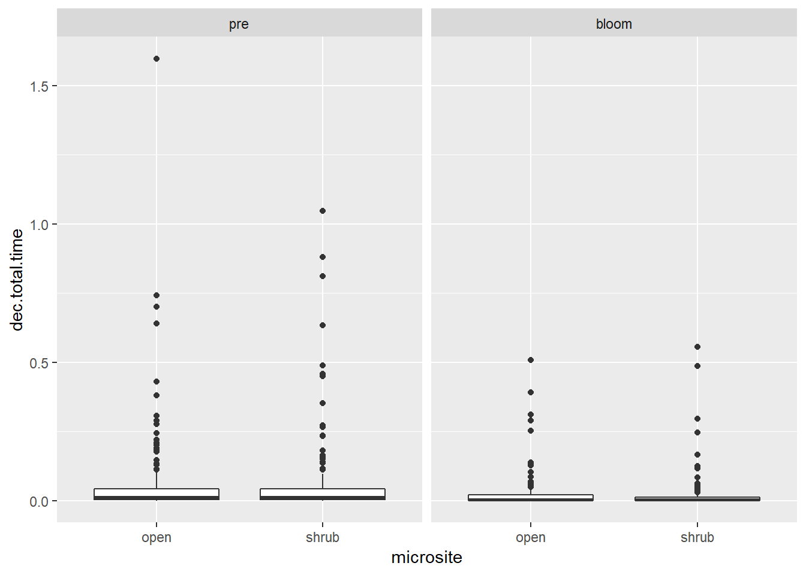
ggplot(rtu.data, aes(flowering, dec.total.time)) + geom_boxplot() + facet_grid(~microsite)## Warning: Removed 1 rows containing non-finite values (stat_boxplot).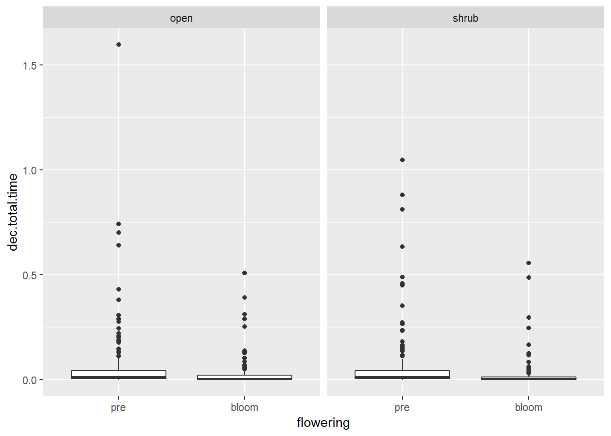
ggplot(rtu.data, aes(dec.total.time)) + geom_density()## Warning: Removed 1 rows containing non-finite values (stat_density).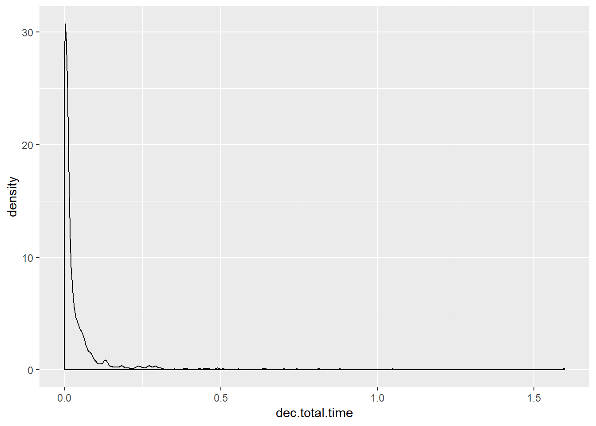
l1 <- lmer((dec.total.time)^(1/3) ~ flowering + microsite + (1|repID), data = rtu.data)
shapiro.test(resid(l1))##
## Shapiro-Wilk normality test
##
## data: resid(l1)
## W = 0.89078, p-value < 2.2e-16AIC(l1, m1)## Warning in AIC.default(l1, m1): models are not all fitted to the same
## number of observations## df AIC
## l1 5 -485.4569
## m1 6 1111.5875m1 <- glmer(dec.total.time ~ flowering + microsite + flower.fov + (1|repID), family = Gamma(link = "log"), data = rtu.data)
#m1 <- glmer(dec.total.time ~ flowering * microsite + flower.fov + (1|repID), family = Gamma(link = "log"), data = rtu.data)
car::Anova(m1, type =2)## Analysis of Deviance Table (Type II Wald chisquare tests)
##
## Response: dec.total.time
## Chisq Df Pr(>Chisq)
## flowering 23.1788 1 1.476e-06 ***
## microsite 0.0464 1 0.8295
## flower.fov 0.0467 1 0.8288
## ---
## Signif. codes: 0 '***' 0.001 '**' 0.01 '*' 0.05 '.' 0.1 ' ' 1summary(m1)## Generalized linear mixed model fit by maximum likelihood (Laplace
## Approximation) [glmerMod]
## Family: Gamma ( log )
## Formula: dec.total.time ~ flowering + microsite + flower.fov + (1 | repID)
## Data: rtu.data
##
## AIC BIC logLik deviance df.resid
## -3515.2 -3487.9 1763.6 -3527.2 690
##
## Scaled residuals:
## Min 1Q Median 3Q Max
## -0.6691 -0.6042 -0.3871 0.2013 5.6547
##
## Random effects:
## Groups Name Variance Std.Dev.
## repID (Intercept) 2.044 1.430
## Residual 2.225 1.492
## Number of obs: 696, groups: repID, 118
##
## Fixed effects:
## Estimate Std. Error t value Pr(>|z|)
## (Intercept) -3.384358 0.311197 -10.875 < 2e-16 ***
## floweringbloom -0.777931 0.161583 -4.814 1.48e-06 ***
## micrositeshrub -0.047260 0.219448 -0.215 0.829
## flower.fov -0.006253 0.028924 -0.216 0.829
## ---
## Signif. codes: 0 '***' 0.001 '**' 0.01 '*' 0.05 '.' 0.1 ' ' 1
##
## Correlation of Fixed Effects:
## (Intr) flwrng mcrsts
## flowerngblm 0.014
## microstshrb -0.379 0.049
## flower.fov -0.850 -0.191 0.043shapiro.test(resid(m1))##
## Shapiro-Wilk normality test
##
## data: resid(m1)
## W = 0.97937, p-value = 2.462e-08plot(resid(m1))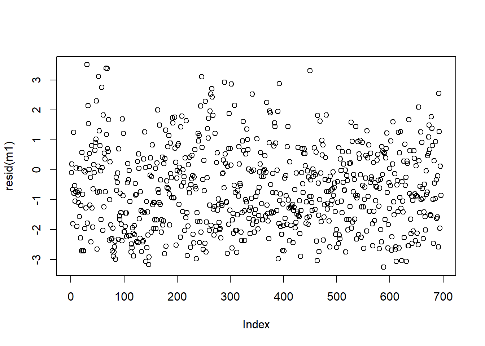
plot(resid(m1)~predict(m1))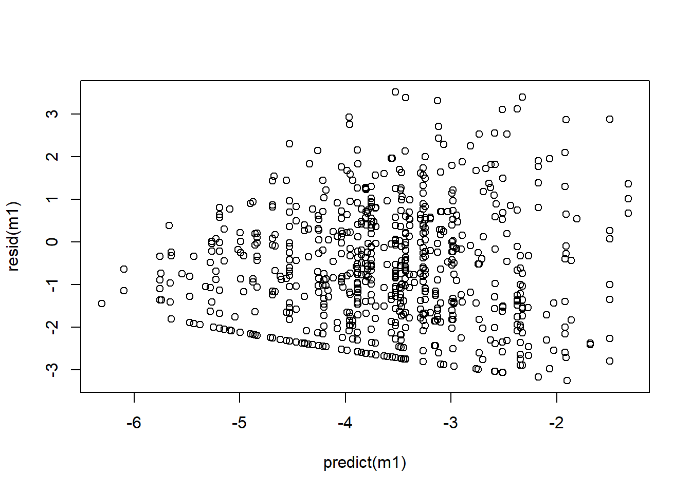
m2 <- glmer(dec.total.time ~ (1|repID), family = Gamma(link = "log"), data = rtu.data)
anova(m1, m2)## Data: rtu.data
## Models:
## m2: dec.total.time ~ (1 | repID)
## m1: dec.total.time ~ flowering + microsite + flower.fov + (1 | repID)
## Df AIC BIC logLik deviance Chisq Chi Df Pr(>Chisq)
## m2 3 -3497.8 -3484.2 1751.9 -3503.8
## m1 6 -3515.2 -3487.9 1763.6 -3527.2 23.366 3 3.388e-05 ***
## ---
## Signif. codes: 0 '***' 0.001 '**' 0.01 '*' 0.05 '.' 0.1 ' ' 1t1 <- glmmTMB(dec.total.time ~ flowering * rtu.ag + (1|repID), family = Gamma(link = "log"), data = rtu.data)## Warning in fitTMB(TMBStruc): Model convergence problem; non-positive-
## definite Hessian matrix. See vignette('troubleshooting')summary(t1)## Family: Gamma ( log )
## Formula: dec.total.time ~ flowering * rtu.ag + (1 | repID)
## Data: rtu.data
##
## AIC BIC logLik deviance df.resid
## NA NA NA NA 682
##
## Random effects:
##
## Conditional model:
## Groups Name Variance Std.Dev.
## repID (Intercept) 0.5782 0.7604
## Number of obs: 696, groups: repID, 118
##
## Dispersion estimate for Gamma family (sigma^2): 1.82
##
## Conditional model:
## Estimate Std. Error z value Pr(>|z|)
## (Intercept) -3.4393 NA NA NA
## floweringbloom -0.4748 NA NA NA
## rtu.agbombylid -1.0581 NA NA NA
## rtu.aghoneybee -0.7210 NA NA NA
## rtu.aglep -2.2015 NA NA NA
## rtu.agother 1.3361 NA NA NA
## rtu.agsyrphid -0.2399 NA NA NA
## floweringbloom:rtu.agbombylid -0.5107 NA NA NA
## floweringbloom:rtu.aghoneybee 0.0000 NA NA NA
## floweringbloom:rtu.aglep -0.1883 NA NA NA
## floweringbloom:rtu.agother -0.7896 NA NA NA
## floweringbloom:rtu.agsyrphid -0.8074 NA NA NAfixef(t1)##
## Conditional model:
## (Intercept) floweringbloom
## -3.4393 -0.4748
## rtu.agbombylid rtu.aghoneybee
## -1.0581 -0.7210
## rtu.aglep rtu.agother
## -2.2015 1.3361
## rtu.agsyrphid floweringbloom:rtu.agbombylid
## -0.2399 -0.5107
## floweringbloom:rtu.aghoneybee floweringbloom:rtu.aglep
## 0.0000 -0.1883
## floweringbloom:rtu.agother floweringbloom:rtu.agsyrphid
## -0.7896 -0.8074ggplot(rtu.data, aes(microsite, dec.total.time, fill = rtu.ag)) + geom_boxplot() + facet_grid(~flowering)## Warning: Removed 1 rows containing non-finite values (stat_boxplot).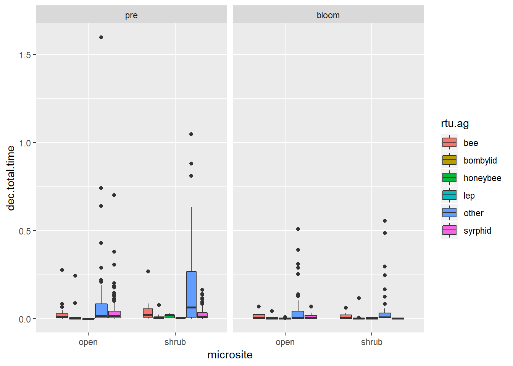
bee <- filter(rtu.data, rtu.ag == "bee")
l1 <- lmer(log(dec.total.time) ~ flowering + (1|repID), data = bee)
shapiro.test(resid(l1))##
## Shapiro-Wilk normality test
##
## data: resid(l1)
## W = 0.96239, p-value = 0.07822plot(resid(l1)~predict(l1))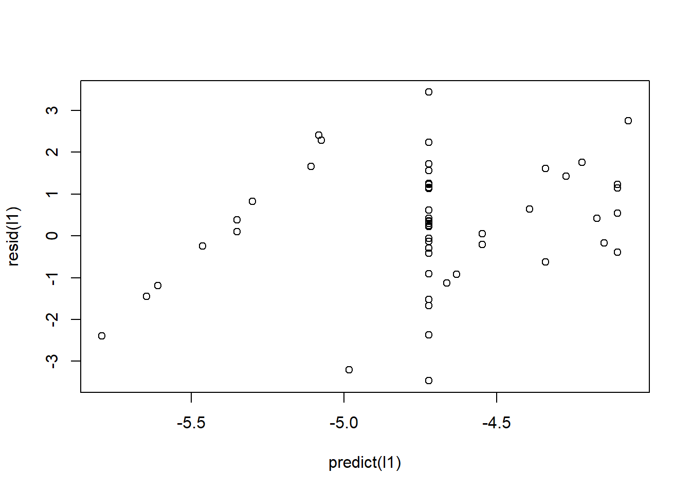
l2 <- lmer(log(dec.total.time) ~ (1|repID), data = bee)
anova(l1, l2)## refitting model(s) with ML (instead of REML)## Data: bee
## Models:
## l2: log(dec.total.time) ~ (1 | repID)
## l1: log(dec.total.time) ~ flowering + (1 | repID)
## Df AIC BIC logLik deviance Chisq Chi Df Pr(>Chisq)
## l2 3 230.88 236.95 -112.44 224.88
## l1 4 230.94 239.04 -111.47 222.94 1.935 1 0.1642car::Anova(l1, type = 2)## Analysis of Deviance Table (Type II Wald chisquare tests)
##
## Response: log(dec.total.time)
## Chisq Df Pr(>Chisq)
## flowering 1.9017 1 0.1679summary(l1)## Linear mixed model fit by REML ['lmerMod']
## Formula: log(dec.total.time) ~ flowering + (1 | repID)
## Data: bee
##
## REML criterion at convergence: 223
##
## Scaled residuals:
## Min 1Q Median 3Q Max
## -2.0102 -0.5250 0.1364 0.6824 1.9945
##
## Random effects:
## Groups Name Variance Std.Dev.
## repID (Intercept) 0.4556 0.675
## Residual 2.9727 1.724
## Number of obs: 56, groups: repID, 22
##
## Fixed effects:
## Estimate Std. Error t value
## (Intercept) -4.4914 0.3858 -11.643
## floweringbloom -0.9341 0.6774 -1.379
##
## Correlation of Fixed Effects:
## (Intr)
## flowerngblm -0.555shapiro.test(bee$dec.total.time)##
## Shapiro-Wilk normality test
##
## data: bee$dec.total.time
## W = 0.52219, p-value = 3.119e-12ggplot(bee, aes(dec.total.time)) + geom_density()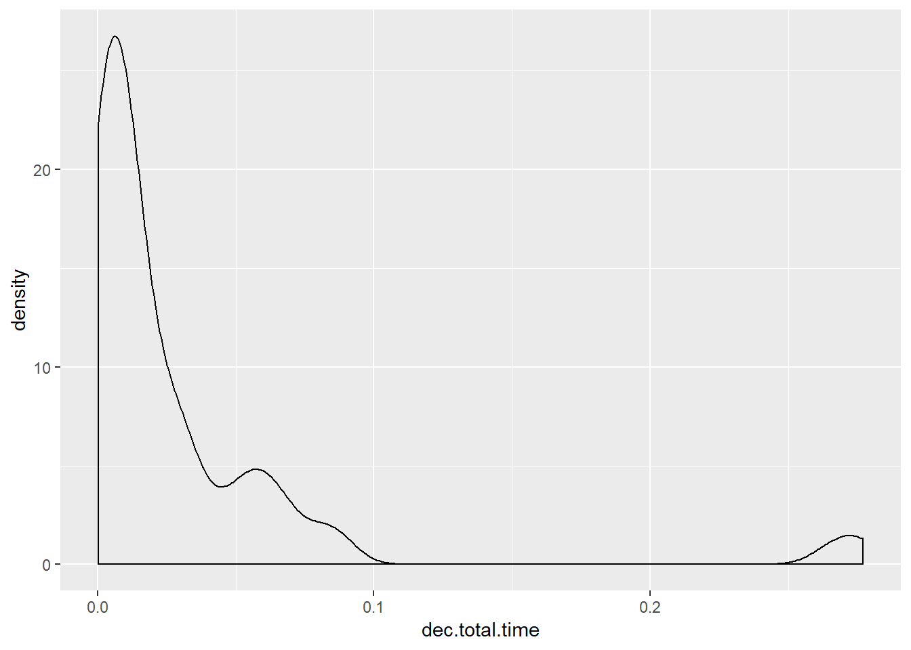
other <- filter(rtu.data, rtu.ag == "other")
l1 <- lmer(log(dec.total.time) ~ flowering + (1|repID), data = other)
l2 <- lmer(log(dec.total.time) ~ (1|repID), data = other)
shapiro.test(resid(l1))##
## Shapiro-Wilk normality test
##
## data: resid(l1)
## W = 0.98307, p-value = 0.01693plot(resid(l1)~predict(l1))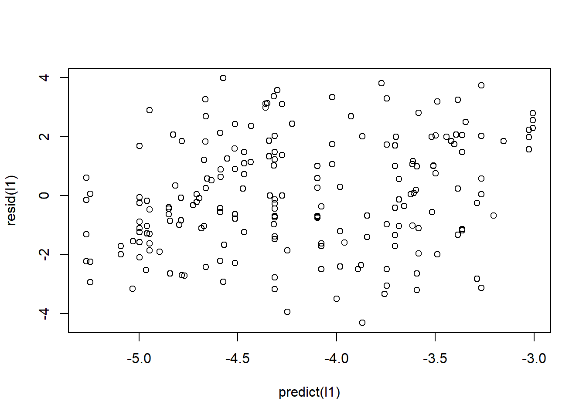
summary(l1)## Linear mixed model fit by REML ['lmerMod']
## Formula: log(dec.total.time) ~ flowering + (1 | repID)
## Data: other
##
## REML criterion at convergence: 847.9
##
## Scaled residuals:
## Min 1Q Median 3Q Max
## -2.22004 -0.68109 -0.07687 0.78332 2.04824
##
## Random effects:
## Groups Name Variance Std.Dev.
## repID (Intercept) 0.411 0.6411
## Residual 3.786 1.9457
## Number of obs: 199, groups: repID, 72
##
## Fixed effects:
## Estimate Std. Error t value
## (Intercept) -3.6192 0.2341 -15.461
## floweringbloom -1.0703 0.3055 -3.503
##
## Correlation of Fixed Effects:
## (Intr)
## flowerngblm -0.712car::Anova(l1)## Analysis of Deviance Table (Type II Wald chisquare tests)
##
## Response: log(dec.total.time)
## Chisq Df Pr(>Chisq)
## flowering 12.274 1 0.0004592 ***
## ---
## Signif. codes: 0 '***' 0.001 '**' 0.01 '*' 0.05 '.' 0.1 ' ' 1anova(l1, l2)## refitting model(s) with ML (instead of REML)## Data: other
## Models:
## l2: log(dec.total.time) ~ (1 | repID)
## l1: log(dec.total.time) ~ flowering + (1 | repID)
## Df AIC BIC logLik deviance Chisq Chi Df Pr(>Chisq)
## l2 3 863.53 873.41 -428.77 857.53
## l1 4 853.55 866.73 -422.78 845.55 11.979 1 0.0005382 ***
## ---
## Signif. codes: 0 '***' 0.001 '**' 0.01 '*' 0.05 '.' 0.1 ' ' 1rtu.data <- mutate(rtu.data, prop.visited = unique.fl.visited/flower.fov)
ggplot(rtu.data, aes(prop.visited, color = flowering)) + geom_density()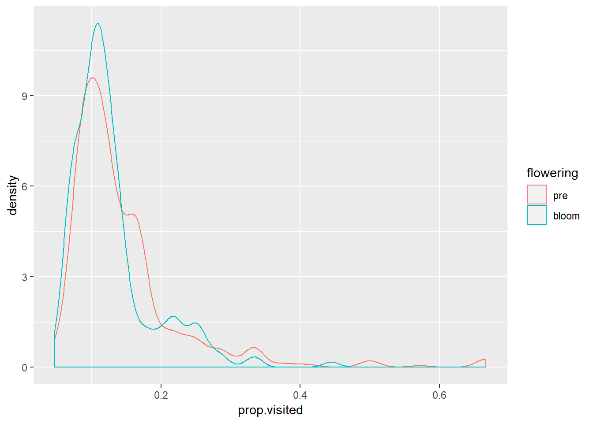
m1 <- glmer(prop.visited ~ flowering * microsite + (1|repID), family = Gamma(link = "log"), data = rtu.data)## Warning in checkConv(attr(opt, "derivs"), opt$par, ctrl = control
## $checkConv, : Model failed to converge with max|grad| = 0.0328888 (tol =
## 0.001, component 1)summary(m1)## Generalized linear mixed model fit by maximum likelihood (Laplace
## Approximation) [glmerMod]
## Family: Gamma ( log )
## Formula: prop.visited ~ flowering * microsite + (1 | repID)
## Data: rtu.data
##
## AIC BIC logLik deviance df.resid
## -2232.0 -2204.7 1122.0 -2244.0 691
##
## Scaled residuals:
## Min 1Q Median 3Q Max
## -1.3628 -0.5477 -0.2410 0.1671 5.1510
##
## Random effects:
## Groups Name Variance Std.Dev.
## repID (Intercept) 0.06192 0.2488
## Residual 0.16590 0.4073
## Number of obs: 697, groups: repID, 118
##
## Fixed effects:
## Estimate Std. Error t value Pr(>|z|)
## (Intercept) -2.024390 0.002139 -946.58 <2e-16 ***
## floweringbloom -0.035083 0.002131 -16.46 <2e-16 ***
## micrositeshrub 0.082485 0.002128 38.76 <2e-16 ***
## floweringbloom:micrositeshrub -0.205954 0.002132 -96.58 <2e-16 ***
## ---
## Signif. codes: 0 '***' 0.001 '**' 0.01 '*' 0.05 '.' 0.1 ' ' 1
##
## Correlation of Fixed Effects:
## (Intr) flwrng mcrsts
## flowerngblm 0.000
## microstshrb 0.000 0.001
## flwrngblm:m 0.004 -0.001 0.001
## convergence code: 0
## Model failed to converge with max|grad| = 0.0328888 (tol = 0.001, component 1)shapiro.test(resid(m1))##
## Shapiro-Wilk normality test
##
## data: resid(m1)
## W = 0.92391, p-value < 2.2e-16car::Anova(m1, type = 2)## Analysis of Deviance Table (Type II Wald chisquare tests)
##
## Response: prop.visited
## Chisq Df Pr(>Chisq)
## flowering 273.45 1 < 2.2e-16 ***
## microsite 1511.73 1 < 2.2e-16 ***
## flowering:microsite 9327.97 1 < 2.2e-16 ***
## ---
## Signif. codes: 0 '***' 0.001 '**' 0.01 '*' 0.05 '.' 0.1 ' ' 1fm1 <- m1
#recomputing
diag.vals <- getME(fm1,"theta")[getME(fm1,"lower") == 0]
any(diag.vals < 1e-6) # FALSE## [1] FALSE#recompute Hessian
devfun <- update(fm1, devFunOnly=TRUE)
if (isLMM(fm1)) {
pars <- getME(fm1,"theta")
} else {
## GLMM: requires both random and fixed parameters
pars <- getME(fm1, c("theta","fixef"))
}
if (require("numDeriv")) {
cat("hess:\n"); print(hess <- hessian(devfun, unlist(pars)))
cat("grad:\n"); print(grad <- grad(devfun, unlist(pars)))
cat("scaled gradient:\n")
print(scgrad <- solve(chol(hess), grad))
}## hess:
## [,1] [,2] [,3] [,4] [,5]
## [1,] 870.827199 8.196514 -823.2341 -398.5758 -77.1454
## [2,] 8.196514 1394.943416 221.5745 583.5030 135.2703
## [3,] -823.234076 221.574543 31769.8668 -6652.9173 -1942.8486
## [4,] -398.575848 583.503015 -6652.9173 6369.4441 -947.9216
## [5,] -77.145401 135.270312 -1942.8486 -947.9216 1509.4387
## grad:
## [1] 348.6709 104.6608 6087.6331 489.6667 1036.3647
## scaled gradient:
## [1] 63.71927 -16.03564 41.61330 20.13871 36.08181fm1.restart <- update(fm1, start=pars)## Warning in checkConv(attr(opt, "derivs"), opt$par, ctrl = control
## $checkConv, : Model failed to converge with max|grad| = 0.0331233 (tol =
## 0.001, component 1)all <- allFit(fm1.restart)## bobyqa : [OK]
## Nelder_Mead :## Warning in checkConv(attr(opt, "derivs"), opt$par, ctrl = control
## $checkConv, : Model failed to converge with max|grad| = 0.0331024 (tol =
## 0.001, component 1)## [OK]
## nlminbw : [OK]
## nmkbw :## Warning in checkConv(attr(opt, "derivs"), opt$par, ctrl = control
## $checkConv, : Model failed to converge with max|grad| = 0.0331646 (tol =
## 0.001, component 1)## [OK]
## optimx.L-BFGS-B : [OK]
## nloptwrap.NLOPT_LN_NELDERMEAD :## Warning in checkConv(attr(opt, "derivs"), opt$par, ctrl = control
## $checkConv, : Model failed to converge with max|grad| = 0.0174294 (tol =
## 0.001, component 1)## [OK]
## nloptwrap.NLOPT_LN_BOBYQA :## Warning in checkConv(attr(opt, "derivs"), opt$par, ctrl = control
## $checkConv, : Model failed to converge with max|grad| = 0.0174294 (tol =
## 0.001, component 1)## [OK]summary(all)## $which.OK
## bobyqa Nelder_Mead
## TRUE TRUE
## nlminbw nmkbw
## TRUE TRUE
## optimx.L-BFGS-B nloptwrap.NLOPT_LN_NELDERMEAD
## TRUE TRUE
## nloptwrap.NLOPT_LN_BOBYQA
## TRUE
##
## $msgs
## $msgs$bobyqa
## NULL
##
## $msgs$Nelder_Mead
## [1] "Model failed to converge with max|grad| = 0.0331024 (tol = 0.001, component 1)"
##
## $msgs$nlminbw
## NULL
##
## $msgs$nmkbw
## [1] "Model failed to converge with max|grad| = 0.0331646 (tol = 0.001, component 1)"
##
## $msgs$`optimx.L-BFGS-B`
## NULL
##
## $msgs$nloptwrap.NLOPT_LN_NELDERMEAD
## [1] "Model failed to converge with max|grad| = 0.0174294 (tol = 0.001, component 1)"
##
## $msgs$nloptwrap.NLOPT_LN_BOBYQA
## [1] "Model failed to converge with max|grad| = 0.0174294 (tol = 0.001, component 1)"
##
##
## $fixef
## (Intercept) floweringbloom micrositeshrub
## bobyqa -2.022814 -0.03537548 0.08050042
## Nelder_Mead -2.024325 -0.03469503 0.08224810
## nlminbw -2.022816 -0.03537535 0.08050253
## nmkbw -2.024318 -0.03482081 0.08223021
## optimx.L-BFGS-B -2.022809 -0.03536779 0.08049376
## nloptwrap.NLOPT_LN_NELDERMEAD -2.022750 -0.03565766 0.08095880
## nloptwrap.NLOPT_LN_BOBYQA -2.022750 -0.03565766 0.08095880
## floweringbloom:micrositeshrub
## bobyqa -0.2044297
## Nelder_Mead -0.2061833
## nlminbw -0.2044307
## nmkbw -0.2061000
## optimx.L-BFGS-B -0.2044241
## nloptwrap.NLOPT_LN_NELDERMEAD -0.2046892
## nloptwrap.NLOPT_LN_BOBYQA -0.2046892
##
## $llik
## bobyqa Nelder_Mead
## 1121.983 1121.984
## nlminbw nmkbw
## 1121.983 1121.984
## optimx.L-BFGS-B nloptwrap.NLOPT_LN_NELDERMEAD
## 1121.983 1121.983
## nloptwrap.NLOPT_LN_BOBYQA
## 1121.983
##
## $sdcor
## repID.(Intercept) sigma
## bobyqa 0.2492065 0.4070958
## Nelder_Mead 0.2487983 0.4073149
## nlminbw 0.2492065 0.4070959
## nmkbw 0.2487973 0.4073187
## optimx.L-BFGS-B 0.2492016 0.4070968
## nloptwrap.NLOPT_LN_NELDERMEAD 0.2491854 0.4070922
## nloptwrap.NLOPT_LN_BOBYQA 0.2491854 0.4070922
##
## $theta
## repID.(Intercept)
## bobyqa 0.6121569
## Nelder_Mead 0.6108254
## nlminbw 0.6121567
## nmkbw 0.6108172
## optimx.L-BFGS-B 0.6121434
## nloptwrap.NLOPT_LN_NELDERMEAD 0.6121106
## nloptwrap.NLOPT_LN_BOBYQA 0.6121106
##
## $times
## user.self sys.self elapsed user.child
## bobyqa 0.36 0 0.37 NA
## Nelder_Mead 0.51 0 0.52 NA
## nlminbw 0.47 0 0.47 NA
## nmkbw 0.67 0 0.69 NA
## optimx.L-BFGS-B 1.10 0 1.10 NA
## nloptwrap.NLOPT_LN_NELDERMEAD 0.23 0 0.23 NA
## nloptwrap.NLOPT_LN_BOBYQA 0.23 0 0.23 NA
## sys.child
## bobyqa NA
## Nelder_Mead NA
## nlminbw NA
## nmkbw NA
## optimx.L-BFGS-B NA
## nloptwrap.NLOPT_LN_NELDERMEAD NA
## nloptwrap.NLOPT_LN_BOBYQA NA
##
## $feval
## bobyqa Nelder_Mead
## 143 227
## nlminbw nmkbw
## NA 299
## optimx.L-BFGS-B nloptwrap.NLOPT_LN_NELDERMEAD
## 18 63
## nloptwrap.NLOPT_LN_BOBYQA
## 63m1 <- all$bobyqa
car::Anova(m1, type = 3)## Analysis of Deviance Table (Type III Wald chisquare tests)
##
## Response: prop.visited
## Chisq Df Pr(>Chisq)
## (Intercept) 1275.0507 1 < 2.2e-16 ***
## flowering 0.5335 1 0.465150
## microsite 1.0051 1 0.316090
## flowering:microsite 7.0691 1 0.007842 **
## ---
## Signif. codes: 0 '***' 0.001 '**' 0.01 '*' 0.05 '.' 0.1 ' ' 1summary(m1)## Generalized linear mixed model fit by maximum likelihood (Laplace
## Approximation) [glmerMod]
## Family: Gamma ( log )
## Formula: prop.visited ~ flowering * microsite + (1 | repID)
## Data: rtu.data
## Control: ctrl
##
## AIC BIC logLik deviance df.resid
## -2232.0 -2204.7 1122.0 -2244.0 691
##
## Scaled residuals:
## Min 1Q Median 3Q Max
## -1.3640 -0.5478 -0.2402 0.1660 5.1543
##
## Random effects:
## Groups Name Variance Std.Dev.
## repID (Intercept) 0.0621 0.2492
## Residual 0.1657 0.4071
## Number of obs: 697, groups: repID, 118
##
## Fixed effects:
## Estimate Std. Error t value Pr(>|z|)
## (Intercept) -2.02281 0.05665 -35.708 < 2e-16 ***
## floweringbloom -0.03538 0.04843 -0.730 0.46515
## micrositeshrub 0.08050 0.08030 1.003 0.31609
## floweringbloom:micrositeshrub -0.20443 0.07689 -2.659 0.00784 **
## ---
## Signif. codes: 0 '***' 0.001 '**' 0.01 '*' 0.05 '.' 0.1 ' ' 1
##
## Correlation of Fixed Effects:
## (Intr) flwrng mcrsts
## flowerngblm -0.320
## microstshrb -0.706 0.227
## flwrngblm:m 0.204 -0.633 -0.328lsmeans(m1, pairwise~flowering*microsite)## $lsmeans
## flowering microsite lsmean SE df asymp.LCL asymp.UCL
## pre open -2.022814 0.05664899 NA -2.133844 -1.911784
## bloom open -2.058189 0.06163324 NA -2.178988 -1.937390
## pre shrub -1.942313 0.05683296 NA -2.053704 -1.830923
## bloom shrub -2.182118 0.06714109 NA -2.313712 -2.050524
##
## Results are given on the log (not the response) scale.
## Confidence level used: 0.95
##
## $contrasts
## contrast estimate SE df z.ratio p.value
## pre,open - bloom,open 0.03537548 0.04843350 NA 0.730 0.8849
## pre,open - pre,shrub -0.08050042 0.08029773 NA -1.003 0.7479
## pre,open - bloom,shrub 0.15930471 0.08775466 NA 1.815 0.2660
## bloom,open - pre,shrub -0.11587589 0.08384195 NA -1.382 0.5106
## bloom,open - bloom,shrub 0.12392924 0.09113159 NA 1.360 0.5247
## pre,shrub - bloom,shrub 0.23980513 0.05952906 NA 4.028 0.0003
##
## Results are given on the log (not the response) scale.
## P value adjustment: tukey method for comparing a family of 4 estimatesshapiro.test(rtu.data$prop.visited)##
## Shapiro-Wilk normality test
##
## data: rtu.data$prop.visited
## W = 0.70279, p-value < 2.2e-16m1 <- glmer(prop.visited ~ flowering * rtu.ag + (1|repID), family = Gamma(link = "log"), data = rtu.data)## fixed-effect model matrix is rank deficient so dropping 1 column / coefficient## Warning in checkConv(attr(opt, "derivs"), opt$par, ctrl = control
## $checkConv, : Model failed to converge with max|grad| = 0.083817 (tol =
## 0.001, component 1)fm1 <- m1
#recomputing
diag.vals <- getME(fm1,"theta")[getME(fm1,"lower") == 0]
any(diag.vals < 1e-6) # FALSE## [1] FALSE#recompute Hessian
devfun <- update(fm1, devFunOnly=TRUE)## fixed-effect model matrix is rank deficient so dropping 1 column / coefficientif (isLMM(fm1)) {
pars <- getME(fm1,"theta")
} else {
## GLMM: requires both random and fixed parameters
pars <- getME(fm1, c("theta","fixef"))
}
if (require("numDeriv")) {
cat("hess:\n"); print(hess <- hessian(devfun, unlist(pars)))
cat("grad:\n"); print(grad <- grad(devfun, unlist(pars)))
cat("scaled gradient:\n")
print(scgrad <- solve(chol(hess), grad))
}## hess:
## [,1] [,2] [,3] [,4] [,5]
## [1,] 846.355064 7.514548 64.005008 -3.547318e+01 1.286184e+01
## [2,] 7.514548 1561.900692 530.806057 1.858811e+02 2.098010e+01
## [3,] 64.005008 530.806057 1664.548705 2.315726e+02 -4.137320e-01
## [4,] -35.473175 185.881060 231.572606 6.745218e+02 3.397158e-03
## [5,] 12.861842 20.980100 -0.413732 3.397158e-03 3.954137e+01
## [6,] 12.788153 82.866222 191.791287 -2.280525e+01 -7.214636e-01
## [7,] -17.315174 512.149120 676.003895 -2.102184e+02 1.468308e-03
## [8,] 19.020701 684.624901 -636.862050 -2.213141e+02 -1.691134e+01
## [9,] -10.529302 83.899531 291.173485 3.762691e+02 5.906078e-04
## [10,] 14.744635 80.471972 194.645186 -2.280652e+01 -4.308052e-04
## [11,] 49.643296 276.990185 943.359074 -1.027821e+02 -1.556843e-02
## [12,] 5.003265 57.590138 126.050924 -1.134940e+01 -2.506377e-04
## [,6] [,7] [,8] [,9] [,10]
## [1,] 1.278815e+01 -1.731517e+01 19.02070 -1.052930e+01 1.474463e+01
## [2,] 8.286622e+01 5.121491e+02 684.62490 8.389953e+01 8.047197e+01
## [3,] 1.917913e+02 6.760039e+02 -636.86205 2.911735e+02 1.946452e+02
## [4,] -2.280525e+01 -2.102184e+02 -221.31413 3.762691e+02 -2.280652e+01
## [5,] -7.214636e-01 1.468308e-03 -16.91134 5.906078e-04 -4.308052e-04
## [6,] 3.082542e+02 -7.543377e+01 -115.34093 -1.895174e+01 2.761415e+02
## [7,] -7.543377e+01 1.665530e+03 -773.76817 -1.122436e+02 -6.449850e+01
## [8,] -1.153409e+02 -7.737682e+02 2032.75451 -1.593976e+02 -9.882446e+01
## [9,] -1.895174e+01 -1.122436e+02 -159.39764 3.843752e+02 -1.895183e+01
## [10,] 2.761415e+02 -6.449850e+01 -98.82446 -1.895183e+01 2.761416e+02
## [11,] -5.518163e+01 9.377327e+02 -443.60091 -6.592028e+01 -5.300669e+01
## [12,] -1.071760e-04 -3.916421e+01 123.03826 -6.552191e+00 -1.563015e-04
## [,11] [,12]
## [1,] 49.64329638 5.003265e+00
## [2,] 276.99018547 5.759014e+01
## [3,] 943.35907373 1.260509e+02
## [4,] -102.78211021 -1.134940e+01
## [5,] -0.01556843 -2.506377e-04
## [6,] -55.18163043 -1.071760e-04
## [7,] 937.73269761 -3.916421e+01
## [8,] -443.60090557 1.230383e+02
## [9,] -65.92028276 -6.552191e+00
## [10,] -53.00668554 -1.563015e-04
## [11,] 1113.62320348 -2.901186e+01
## [12,] -29.01186188 1.756337e+02
## grad:
## [1] -1.63063542 -0.42689182 -0.47175879 0.25250339 -0.02992613
## [6] 0.08282830 -1.50681298 -0.81046085 -0.41873356 -0.10699500
## [11] -0.87790343 -0.01789481
## scaled gradient:
## [1] -0.056679220 0.023259096 0.056975821 -0.015307970 -0.031431495
## [6] -0.027049650 -0.054661415 -0.026488430 -0.083810099 -0.070216377
## [11] -0.067708864 -0.002169911fm1.restart <- update(fm1, start=pars)## fixed-effect model matrix is rank deficient so dropping 1 column / coefficient## Warning in checkConv(attr(opt, "derivs"), opt$par, ctrl = control
## $checkConv, : Model failed to converge with max|grad| = 0.00280151 (tol =
## 0.001, component 1)all <- allFit(fm1.restart)## bobyqa :## fixed-effect model matrix is rank deficient so dropping 1 column / coefficient## [OK]
## Nelder_Mead :## fixed-effect model matrix is rank deficient so dropping 1 column / coefficient## [OK]
## nlminbw :## fixed-effect model matrix is rank deficient so dropping 1 column / coefficient## [OK]
## nmkbw :## fixed-effect model matrix is rank deficient so dropping 1 column / coefficient## Warning in checkConv(attr(opt, "derivs"), opt$par, ctrl = control
## $checkConv, : Model failed to converge with max|grad| = 0.00493342 (tol =
## 0.001, component 1)## [OK]
## optimx.L-BFGS-B :## fixed-effect model matrix is rank deficient so dropping 1 column / coefficient## Warning in checkConv(attr(opt, "derivs"), opt$par, ctrl = control
## $checkConv, : Model failed to converge with max|grad| = 0.00135917 (tol =
## 0.001, component 1)## [OK]
## nloptwrap.NLOPT_LN_NELDERMEAD :## fixed-effect model matrix is rank deficient so dropping 1 column / coefficient## Warning in checkConv(attr(opt, "derivs"), opt$par, ctrl = control
## $checkConv, : Model failed to converge with max|grad| = 0.0996815 (tol =
## 0.001, component 1)## [OK]
## nloptwrap.NLOPT_LN_BOBYQA :## fixed-effect model matrix is rank deficient so dropping 1 column / coefficient## Warning in checkConv(attr(opt, "derivs"), opt$par, ctrl = control
## $checkConv, : Model failed to converge with max|grad| = 0.0996815 (tol =
## 0.001, component 1)## [OK]summary(all)## $which.OK
## bobyqa Nelder_Mead
## TRUE TRUE
## nlminbw nmkbw
## TRUE TRUE
## optimx.L-BFGS-B nloptwrap.NLOPT_LN_NELDERMEAD
## TRUE TRUE
## nloptwrap.NLOPT_LN_BOBYQA
## TRUE
##
## $msgs
## $msgs$bobyqa
## NULL
##
## $msgs$Nelder_Mead
## NULL
##
## $msgs$nlminbw
## NULL
##
## $msgs$nmkbw
## [1] "Model failed to converge with max|grad| = 0.00493342 (tol = 0.001, component 1)"
##
## $msgs$`optimx.L-BFGS-B`
## [1] "Model failed to converge with max|grad| = 0.00135917 (tol = 0.001, component 1)"
##
## $msgs$nloptwrap.NLOPT_LN_NELDERMEAD
## [1] "Model failed to converge with max|grad| = 0.0996815 (tol = 0.001, component 1)"
##
## $msgs$nloptwrap.NLOPT_LN_BOBYQA
## [1] "Model failed to converge with max|grad| = 0.0996815 (tol = 0.001, component 1)"
##
##
## $fixef
## (Intercept) floweringbloom rtu.agbombylid
## bobyqa -1.790437 -0.1160637 -0.2474701
## Nelder_Mead -1.790639 -0.1156943 -0.2472413
## nlminbw -1.790437 -0.1160548 -0.2474726
## nmkbw -1.790819 -0.1152638 -0.2471441
## optimx.L-BFGS-B -1.790543 -0.1159694 -0.2473416
## nloptwrap.NLOPT_LN_NELDERMEAD -1.789298 -0.1126066 -0.2481273
## nloptwrap.NLOPT_LN_BOBYQA -1.789298 -0.1126066 -0.2481273
## rtu.aghoneybee rtu.aglep rtu.agother
## bobyqa 0.1862434 -0.3295900 -0.3004357
## Nelder_Mead 0.1864870 -0.3293346 -0.3002058
## nlminbw 0.1862752 -0.3295567 -0.3004362
## nmkbw 0.1867848 -0.3293455 -0.3000150
## optimx.L-BFGS-B 0.1861917 -0.3293832 -0.3003388
## nloptwrap.NLOPT_LN_NELDERMEAD 0.1839626 -0.3247325 -0.3015177
## nloptwrap.NLOPT_LN_BOBYQA 0.1839626 -0.3247325 -0.3015177
## rtu.agsyrphid floweringbloom:rtu.agbombylid
## bobyqa -0.1732757 0.2022344
## Nelder_Mead -0.1730864 0.2018443
## nlminbw -0.1732750 0.2022271
## nmkbw -0.1728734 0.2014668
## optimx.L-BFGS-B -0.1731837 0.2020870
## nloptwrap.NLOPT_LN_NELDERMEAD -0.1744577 0.1987831
## nloptwrap.NLOPT_LN_BOBYQA -0.1744577 0.1987831
## floweringbloom:rtu.aglep
## bobyqa 0.06941068
## Nelder_Mead 0.06898258
## nlminbw 0.06936565
## nmkbw 0.06870780
## optimx.L-BFGS-B 0.06918277
## nloptwrap.NLOPT_LN_NELDERMEAD 0.05860838
## nloptwrap.NLOPT_LN_BOBYQA 0.05860838
## floweringbloom:rtu.agother
## bobyqa 0.03346540
## Nelder_Mead 0.03305938
## nlminbw 0.03345503
## nmkbw 0.03264174
## optimx.L-BFGS-B 0.03336508
## nloptwrap.NLOPT_LN_NELDERMEAD 0.02970350
## nloptwrap.NLOPT_LN_BOBYQA 0.02970350
## floweringbloom:rtu.agsyrphid
## bobyqa 0.006737307
## Nelder_Mead 0.006398832
## nlminbw 0.006724621
## nmkbw 0.005946304
## optimx.L-BFGS-B 0.006636456
## nloptwrap.NLOPT_LN_NELDERMEAD 0.003656895
## nloptwrap.NLOPT_LN_BOBYQA 0.003656895
##
## $llik
## bobyqa Nelder_Mead
## 1131.719 1131.719
## nlminbw nmkbw
## 1131.719 1131.719
## optimx.L-BFGS-B nloptwrap.NLOPT_LN_NELDERMEAD
## 1131.719 1131.717
## nloptwrap.NLOPT_LN_BOBYQA
## 1131.717
##
## $sdcor
## repID.(Intercept) sigma
## bobyqa 0.2321535 0.3976727
## Nelder_Mead 0.2321531 0.3976750
## nlminbw 0.2321536 0.3976725
## nmkbw 0.2321476 0.3976746
## optimx.L-BFGS-B 0.2321572 0.3976752
## nloptwrap.NLOPT_LN_NELDERMEAD 0.2321981 0.3976300
## nloptwrap.NLOPT_LN_BOBYQA 0.2321981 0.3976300
##
## $theta
## repID.(Intercept)
## bobyqa 0.5837803
## Nelder_Mead 0.5837761
## nlminbw 0.5837808
## nmkbw 0.5837627
## optimx.L-BFGS-B 0.5837859
## nloptwrap.NLOPT_LN_NELDERMEAD 0.5839551
## nloptwrap.NLOPT_LN_BOBYQA 0.5839551
##
## $times
## user.self sys.self elapsed user.child
## bobyqa 3.04 0.02 3.06 NA
## Nelder_Mead 2.04 0.00 2.05 NA
## nlminbw 3.51 0.00 3.52 NA
## nmkbw 2.72 0.00 2.72 NA
## optimx.L-BFGS-B 4.01 0.00 4.02 NA
## nloptwrap.NLOPT_LN_NELDERMEAD 0.96 0.00 0.99 NA
## nloptwrap.NLOPT_LN_BOBYQA 0.90 0.00 0.90 NA
## sys.child
## bobyqa NA
## Nelder_Mead NA
## nlminbw NA
## nmkbw NA
## optimx.L-BFGS-B NA
## nloptwrap.NLOPT_LN_NELDERMEAD NA
## nloptwrap.NLOPT_LN_BOBYQA NA
##
## $feval
## bobyqa Nelder_Mead
## 1299 699
## nlminbw nmkbw
## NA 964
## optimx.L-BFGS-B nloptwrap.NLOPT_LN_NELDERMEAD
## 58 118
## nloptwrap.NLOPT_LN_BOBYQA
## 118m2 <- all$bobyqa
summary(m2)## Generalized linear mixed model fit by maximum likelihood (Laplace
## Approximation) [glmerMod]
## Family: Gamma ( log )
## Formula: prop.visited ~ flowering * rtu.ag + (1 | repID)
## Data: rtu.data
## Control: ctrl
##
## AIC BIC logLik deviance df.resid
## -2237.4 -2178.3 1131.7 -2263.4 684
##
## Scaled residuals:
## Min 1Q Median 3Q Max
## -1.5652 -0.5614 -0.2376 0.2642 5.5008
##
## Random effects:
## Groups Name Variance Std.Dev.
## repID (Intercept) 0.0539 0.2322
## Residual 0.1581 0.3977
## Number of obs: 697, groups: repID, 118
##
## Fixed effects:
## Estimate Std. Error t value Pr(>|z|)
## (Intercept) -1.790437 0.089614 -19.979 < 2e-16 ***
## floweringbloom -0.116064 0.140156 -0.828 0.40761
## rtu.agbombylid -0.247470 0.112323 -2.203 0.02758 *
## rtu.aghoneybee 0.186243 0.240711 0.774 0.43910
## rtu.aglep -0.329590 0.262264 -1.257 0.20886
## rtu.agother -0.300436 0.095633 -3.142 0.00168 **
## rtu.agsyrphid -0.173276 0.085192 -2.034 0.04196 *
## floweringbloom:rtu.agbombylid 0.202234 0.174650 1.158 0.24689
## floweringbloom:rtu.aglep 0.069411 0.297303 0.233 0.81540
## floweringbloom:rtu.agother 0.033465 0.153065 0.219 0.82693
## floweringbloom:rtu.agsyrphid 0.006737 0.171338 0.039 0.96863
## ---
## Signif. codes: 0 '***' 0.001 '**' 0.01 '*' 0.05 '.' 0.1 ' ' 1
##
## Correlation of Fixed Effects:
## (Intr) flwrng rt.gbm rt.ghn rt.glp rt.gth rt.gsy
## flowerngblm -0.562
## rtu.gbmbyld -0.668 0.425
## rtu.aghonyb -0.340 0.207 0.235
## rtu.aglep -0.290 0.191 0.216 0.124
## rtu.agother -0.828 0.536 0.639 0.296 0.293
## rtu.gsyrphd -0.888 0.569 0.659 0.335 0.307 0.840
## flwrngblm:rt.gb 0.423 -0.788 -0.644 -0.152 -0.142 -0.408 -0.412
## flwrngblm:rt.gl 0.249 -0.463 -0.193 -0.108 -0.885 -0.262 -0.265
## flwrngblm:rt.gt 0.523 -0.923 -0.408 -0.190 -0.189 -0.632 -0.529
## flwrngblm:rt.gs 0.430 -0.770 -0.327 -0.167 -0.157 -0.423 -0.492
## flwrngblm:rt.gb flwrngblm:rt.gl flwrngblm:rt.gt
## flowerngblm
## rtu.gbmbyld
## rtu.aghonyb
## rtu.aglep
## rtu.agother
## rtu.gsyrphd
## flwrngblm:rt.gb
## flwrngblm:rt.gl 0.370
## flwrngblm:rt.gt 0.736 0.442
## flwrngblm:rt.gs 0.602 0.360 0.716
## fit warnings:
## fixed-effect model matrix is rank deficient so dropping 1 column / coefficientlsmeans(m2, pairwise~flowering*rtu.ag)## $lsmeans
## flowering rtu.ag lsmean SE df asymp.LCL asymp.UCL
## pre bee -1.790437 0.08961406 NA -1.966077 -1.614797
## bloom bee -1.906501 0.11648288 NA -2.134803 -1.678199
## pre bombylid -2.037907 0.08480227 NA -2.204117 -1.871698
## bloom bombylid -1.951736 0.07765494 NA -2.103937 -1.799536
## pre honeybee -1.604194 0.22653616 NA -2.048196 -1.160191
## bloom honeybee nonEst NA NA NA NA
## pre lep -2.120027 0.25137283 NA -2.612709 -1.627345
## bloom lep -2.166680 0.08922016 NA -2.341548 -1.991812
## pre other -2.090873 0.05462502 NA -2.197936 -1.983810
## bloom other -2.173471 0.05073977 NA -2.272919 -2.074023
## pre syrphid -1.963713 0.04155109 NA -2.045151 -1.882274
## bloom syrphid -2.073039 0.10982825 NA -2.288299 -1.857780
##
## Results are given on the log (not the response) scale.
## Confidence level used: 0.95
##
## $contrasts
## contrast estimate SE df z.ratio
## pre,bee - bloom,bee 0.116063740 0.14015579 NA 0.828
## pre,bee - pre,bombylid 0.247470052 0.11232267 NA 2.203
## pre,bee - bloom,bombylid 0.161299362 0.11094755 NA 1.454
## pre,bee - pre,honeybee -0.186243368 0.24071090 NA -0.774
## pre,bee - bloom,honeybee nonEst NA NA NA
## pre,bee - pre,lep 0.329589991 0.26226354 NA 1.257
## pre,bee - bloom,lep 0.376243054 0.11989416 NA 3.138
## pre,bee - pre,other 0.300435733 0.09563263 NA 3.142
## pre,bee - bloom,other 0.383034069 0.09210939 NA 4.158
## pre,bee - pre,syrphid 0.173275676 0.08519221 NA 2.034
## pre,bee - bloom,syrphid 0.282602109 0.13601459 NA 2.078
## bloom,bee - pre,bombylid 0.131406312 0.13745027 NA 0.956
## bloom,bee - bloom,bombylid 0.045235623 0.13363876 NA 0.338
## bloom,bee - pre,honeybee -0.302307108 0.25224775 NA -1.198
## bloom,bee - bloom,honeybee nonEst NA NA NA
## bloom,bee - pre,lep 0.213526252 0.27268959 NA 0.783
## bloom,bee - bloom,lep 0.260179315 0.13867327 NA 1.876
## bloom,bee - pre,other 0.184371993 0.12005204 NA 1.536
## bloom,bee - bloom,other 0.266970330 0.11863605 NA 2.250
## bloom,bee - pre,syrphid 0.057211937 0.11533824 NA 0.496
## bloom,bee - bloom,syrphid 0.166538370 0.14920248 NA 1.116
## pre,bombylid - bloom,bombylid -0.086170689 0.10763514 NA -0.801
## pre,bombylid - pre,honeybee -0.433713420 0.24051267 NA -1.803
## pre,bombylid - bloom,honeybee nonEst NA NA NA
## pre,bombylid - pre,lep 0.082119940 0.26205517 NA 0.313
## pre,bombylid - bloom,lep 0.128773003 0.11736849 NA 1.097
## pre,bombylid - pre,other 0.052965681 0.08958528 NA 0.591
## pre,bombylid - bloom,other 0.135564018 0.08955148 NA 1.514
## pre,bombylid - pre,syrphid -0.074194375 0.08522586 NA -0.871
## pre,bombylid - bloom,syrphid 0.035132057 0.13317772 NA 0.264
## bloom,bombylid - pre,honeybee -0.347542731 0.23747023 NA -1.464
## bloom,bombylid - bloom,honeybee nonEst NA NA NA
## bloom,bombylid - pre,lep 0.168290629 0.25942467 NA 0.649
## bloom,bombylid - bloom,lep 0.214943692 0.10872794 NA 1.977
## bloom,bombylid - pre,other 0.139136370 0.08346817 NA 1.667
## bloom,bombylid - bloom,other 0.221734707 0.08045135 NA 2.756
## bloom,bombylid - pre,syrphid 0.011976314 0.07494612 NA 0.160
## bloom,bombylid - bloom,syrphid 0.121302747 0.12781764 NA 0.949
## pre,honeybee - bloom,honeybee nonEst NA NA NA
## pre,honeybee - pre,lep 0.515833360 0.33333655 NA 1.547
## pre,honeybee - bloom,lep 0.562486423 0.24139184 NA 2.330
## pre,honeybee - pre,other 0.486679101 0.23119609 NA 2.105
## pre,honeybee - bloom,other 0.569277438 0.22992187 NA 2.476
## pre,honeybee - pre,syrphid 0.359519045 0.22682238 NA 1.585
## pre,honeybee - bloom,syrphid 0.468845478 0.24994927 NA 1.876
## bloom,honeybee - pre,lep nonEst NA NA NA
## bloom,honeybee - bloom,lep nonEst NA NA NA
## bloom,honeybee - pre,other nonEst NA NA NA
## bloom,honeybee - bloom,other nonEst NA NA NA
## bloom,honeybee - pre,syrphid nonEst NA NA NA
## bloom,honeybee - bloom,syrphid nonEst NA NA NA
## pre,lep - bloom,lep 0.046653063 0.26356674 NA 0.177
## pre,lep - pre,other -0.029154259 0.25146863 NA -0.116
## pre,lep - bloom,other 0.053444078 0.25233057 NA 0.212
## pre,lep - pre,syrphid -0.156314315 0.24962078 NA -0.626
## pre,lep - bloom,syrphid -0.046987882 0.27136283 NA -0.173
## bloom,lep - pre,other -0.075807322 0.09668489 NA -0.784
## bloom,lep - bloom,other 0.006791015 0.09201669 NA 0.074
## bloom,lep - pre,syrphid -0.202967378 0.08790997 NA -2.309
## bloom,lep - bloom,syrphid -0.093640945 0.13667511 NA -0.685
## pre,other - bloom,other 0.082598337 0.05883731 NA 1.404
## pre,other - pre,syrphid -0.127160056 0.05207573 NA -2.442
## pre,other - bloom,syrphid -0.017833624 0.11595530 NA -0.154
## bloom,other - pre,syrphid -0.209758393 0.04738275 NA -4.427
## bloom,other - bloom,syrphid -0.100431960 0.11285142 NA -0.890
## pre,syrphid - bloom,syrphid 0.109326433 0.10952987 NA 0.998
## p.value
## 0.9996
## 0.5472
## 0.9526
## 0.9998
## NA
## 0.9842
## 0.0737
## 0.0730
## 0.0019
## 0.6700
## 0.6389
## 0.9985
## 1.0000
## 0.9892
## NA
## 0.9998
## 0.7743
## 0.9308
## 0.5126
## 1.0000
## 0.9941
## 0.9997
## 0.8167
## NA
## 1.0000
## 0.9949
## 1.0000
## 0.9372
## 0.9994
## 1.0000
## 0.9503
## NA
## 1.0000
## 0.7094
## 0.8833
## 0.1991
## 1.0000
## 0.9986
## NA
## 0.9272
## 0.4548
## 0.6192
## 0.3551
## 0.9149
## 0.7746
## NA
## NA
## NA
## NA
## NA
## NA
## 1.0000
## 1.0000
## 1.0000
## 1.0000
## 1.0000
## 0.9998
## 1.0000
## 0.4701
## 0.9999
## 0.9631
## 0.3775
## 1.0000
## 0.0006
## 0.9992
## 0.9978
##
## Results are given on the log (not the response) scale.
## P value adjustment: tukey method for comparing a family of 12 estimatesm2null <- glmer(prop.visited ~ (1|repID), family = Gamma(link = "log"), data = rtu.data)
anova(m2, m2null)## Data: rtu.data
## Models:
## m2null: prop.visited ~ (1 | repID)
## m2: prop.visited ~ flowering * rtu.ag + (1 | repID)
## Df AIC BIC logLik deviance Chisq Chi Df Pr(>Chisq)
## m2null 3 -2221.5 -2207.8 1113.7 -2227.5
## m2 13 -2237.4 -2178.3 1131.7 -2263.4 35.968 10 8.525e-05 ***
## ---
## Signif. codes: 0 '***' 0.001 '**' 0.01 '*' 0.05 '.' 0.1 ' ' 1ggplot(rtu.data, aes(microsite, prop.visited)) + geom_boxplot() + facet_grid(~flowering)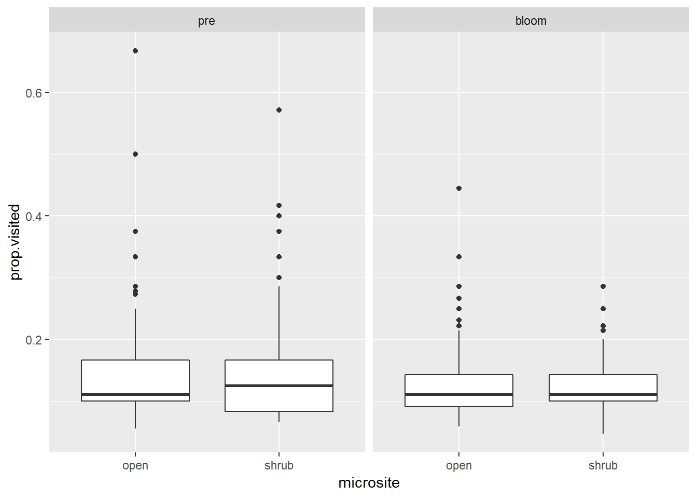
#now RTU microsite
m3 <- glmer(prop.visited ~ microsite * rtu.ag + (1|repID), family = Gamma(link = "log"), data = rtu.data)## fixed-effect model matrix is rank deficient so dropping 1 column / coefficient## Warning in checkConv(attr(opt, "derivs"), opt$par, ctrl = control
## $checkConv, : Model failed to converge with max|grad| = 0.136882 (tol =
## 0.001, component 1)fm1 <- m3
#recomputing
diag.vals <- getME(fm1,"theta")[getME(fm1,"lower") == 0]
any(diag.vals < 1e-6) # FALSE## [1] FALSE#recompute Hessian
devfun <- update(fm1, devFunOnly=TRUE)## fixed-effect model matrix is rank deficient so dropping 1 column / coefficientif (isLMM(fm1)) {
pars <- getME(fm1,"theta")
} else {
## GLMM: requires both random and fixed parameters
pars <- getME(fm1, c("theta","fixef"))
}
if (require("numDeriv")) {
cat("hess:\n"); print(hess <- hessian(devfun, unlist(pars)))
cat("grad:\n"); print(grad <- grad(devfun, unlist(pars)))
cat("scaled gradient:\n")
print(scgrad <- solve(chol(hess), grad))
}## hess:
## [,1] [,2] [,3] [,4] [,5]
## [1,] 847.008529 11.68201 3.624139 -3.611785e+01 1.271982e+01
## [2,] 11.682012 1585.66745 793.386797 1.882894e+02 2.125372e+01
## [3,] 3.624139 793.38680 793.388705 1.037334e+02 2.125725e+01
## [4,] -36.117855 188.28939 103.733391 6.831206e+02 1.205684e-03
## [5,] 12.719822 21.25372 21.257252 1.205684e-03 3.963987e+01
## [6,] 11.474206 84.50125 33.092375 -2.260949e+01 -7.951158e-01
## [7,] -8.031940 520.39334 249.525230 -2.105865e+02 -1.083113e-03
## [8,] 18.343464 694.58767 337.223535 -2.256582e+02 -1.655796e+01
## [9,] -4.660260 103.73596 103.733059 2.725115e+02 5.529564e-04
## [10,] 11.389688 33.09101 33.092406 -8.034778e+00 -7.950542e-01
## [11,] 24.689769 249.51511 249.524849 -9.066132e+01 -1.832267e-03
## [12,] -35.165057 337.23747 337.225007 -5.597283e+01 -1.655506e+01
## [,6] [,7] [,8] [,9] [,10]
## [1,] 11.4742060 -8.031940e+00 18.34346 -4.660260e+00 11.3896877
## [2,] 84.5012511 5.203933e+02 694.58767 1.037360e+02 33.0910132
## [3,] 33.0923746 2.495252e+02 337.22354 1.037331e+02 33.0924057
## [4,] -22.6094861 -2.105865e+02 -225.65819 2.725115e+02 -8.0347781
## [5,] -0.7951158 -1.083113e-03 -16.55796 5.529564e-04 -0.7950542
## [6,] 309.5664399 -7.517982e+01 -115.80232 -8.034987e+00 125.2924011
## [7,] -75.1798155 1.671197e+03 -770.37303 -9.066375e+01 -31.7134175
## [8,] -115.8023166 -7.703730e+02 2045.34387 -5.596809e+01 -44.3640321
## [9,] -8.0349865 -9.066375e+01 -55.96809 2.725121e+02 -8.0350365
## [10,] 125.2924011 -3.171342e+01 -44.36403 -8.035037e+00 125.2924235
## [11,] -31.7138816 6.808592e+02 -252.80988 -9.066312e+01 -31.7137151
## [12,] -44.3626707 -2.528045e+02 841.99177 -5.597051e+01 -44.3628863
## [,11] [,12]
## [1,] 2.468977e+01 -35.16506
## [2,] 2.495151e+02 337.23747
## [3,] 2.495248e+02 337.22501
## [4,] -9.066132e+01 -55.97283
## [5,] -1.832267e-03 -16.55506
## [6,] -3.171388e+01 -44.36267
## [7,] 6.808592e+02 -252.80453
## [8,] -2.528099e+02 841.99177
## [9,] -9.066312e+01 -55.97051
## [10,] -3.171372e+01 -44.36289
## [11,] 6.808571e+02 -252.80187
## [12,] -2.528019e+02 841.98144
## grad:
## [1] -0.81775785 0.25606265 -0.66691081 0.38890209 0.05010678
## [6] -0.13839864 0.86911934 -1.61068160 0.04284435 -0.18667110
## [11] 0.24077950 -1.33826787
## scaled gradient:
## [1] -0.027172891 0.014028499 0.079300615 0.022839430 -0.107829866
## [6] 0.009329580 0.019889055 -0.001530797 -0.108656520 -0.136878089
## [11] -0.105223199 -0.133447362fm1.restart <- update(fm1, start=pars)## fixed-effect model matrix is rank deficient so dropping 1 column / coefficient## Warning in checkConv(attr(opt, "derivs"), opt$par, ctrl = control
## $checkConv, : Model failed to converge with max|grad| = 0.00128679 (tol =
## 0.001, component 1)all <- allFit(fm1.restart)## bobyqa :## fixed-effect model matrix is rank deficient so dropping 1 column / coefficient## [OK]
## Nelder_Mead :## fixed-effect model matrix is rank deficient so dropping 1 column / coefficient## Warning in checkConv(attr(opt, "derivs"), opt$par, ctrl = control
## $checkConv, : Model failed to converge with max|grad| = 0.00126332 (tol =
## 0.001, component 1)## [OK]
## nlminbw :## fixed-effect model matrix is rank deficient so dropping 1 column / coefficient## [OK]
## nmkbw :## fixed-effect model matrix is rank deficient so dropping 1 column / coefficient## Warning in checkConv(attr(opt, "derivs"), opt$par, ctrl = control
## $checkConv, : Model failed to converge with max|grad| = 0.00137259 (tol =
## 0.001, component 1)## [OK]
## optimx.L-BFGS-B :## fixed-effect model matrix is rank deficient so dropping 1 column / coefficient## Warning in checkConv(attr(opt, "derivs"), opt$par, ctrl = control
## $checkConv, : Model failed to converge with max|grad| = 0.0020823 (tol =
## 0.001, component 1)## [OK]
## nloptwrap.NLOPT_LN_NELDERMEAD :## fixed-effect model matrix is rank deficient so dropping 1 column / coefficient## Warning in checkConv(attr(opt, "derivs"), opt$par, ctrl = control
## $checkConv, : Model failed to converge with max|grad| = 0.0139078 (tol =
## 0.001, component 1)## [OK]
## nloptwrap.NLOPT_LN_BOBYQA :## fixed-effect model matrix is rank deficient so dropping 1 column / coefficient## Warning in checkConv(attr(opt, "derivs"), opt$par, ctrl = control
## $checkConv, : Model failed to converge with max|grad| = 0.0139078 (tol =
## 0.001, component 1)## [OK]summary(all)## $which.OK
## bobyqa Nelder_Mead
## TRUE TRUE
## nlminbw nmkbw
## TRUE TRUE
## optimx.L-BFGS-B nloptwrap.NLOPT_LN_NELDERMEAD
## TRUE TRUE
## nloptwrap.NLOPT_LN_BOBYQA
## TRUE
##
## $msgs
## $msgs$bobyqa
## NULL
##
## $msgs$Nelder_Mead
## [1] "Model failed to converge with max|grad| = 0.00126332 (tol = 0.001, component 1)"
##
## $msgs$nlminbw
## NULL
##
## $msgs$nmkbw
## [1] "Model failed to converge with max|grad| = 0.00137259 (tol = 0.001, component 1)"
##
## $msgs$`optimx.L-BFGS-B`
## [1] "Model failed to converge with max|grad| = 0.0020823 (tol = 0.001, component 1)"
##
## $msgs$nloptwrap.NLOPT_LN_NELDERMEAD
## [1] "Model failed to converge with max|grad| = 0.0139078 (tol = 0.001, component 1)"
##
## $msgs$nloptwrap.NLOPT_LN_BOBYQA
## [1] "Model failed to converge with max|grad| = 0.0139078 (tol = 0.001, component 1)"
##
##
## $fixef
## (Intercept) micrositeshrub rtu.agbombylid
## bobyqa -1.654513 -0.2956277 -0.3373347
## Nelder_Mead -1.654340 -0.2958225 -0.3375204
## nlminbw -1.654529 -0.2955987 -0.3373185
## nmkbw -1.654513 -0.2956578 -0.3373366
## optimx.L-BFGS-B -1.654547 -0.2955529 -0.3373496
## nloptwrap.NLOPT_LN_NELDERMEAD -1.653874 -0.2959111 -0.3375772
## nloptwrap.NLOPT_LN_BOBYQA -1.653874 -0.2959111 -0.3375772
## rtu.aghoneybee rtu.aglep rtu.agother
## bobyqa 0.3531146 -0.4733697 -0.4737969
## Nelder_Mead 0.3531902 -0.4735311 -0.4739884
## nlminbw 0.3530701 -0.4733503 -0.4737819
## nmkbw 0.3530880 -0.4733837 -0.4737843
## optimx.L-BFGS-B 0.3526992 -0.4732155 -0.4737610
## nloptwrap.NLOPT_LN_NELDERMEAD 0.3537793 -0.4734949 -0.4739351
## nloptwrap.NLOPT_LN_BOBYQA 0.3537793 -0.4734949 -0.4739351
## rtu.agsyrphid micrositeshrub:rtu.agbombylid
## bobyqa -0.3420691 0.2888491
## Nelder_Mead -0.3422476 0.2890462
## nlminbw -0.3420548 0.2888175
## nmkbw -0.3420800 0.2888314
## optimx.L-BFGS-B -0.3420321 0.2888823
## nloptwrap.NLOPT_LN_NELDERMEAD -0.3423870 0.2886390
## nloptwrap.NLOPT_LN_BOBYQA -0.3423870 0.2886390
## micrositeshrub:rtu.aglep
## bobyqa 0.2056867
## Nelder_Mead 0.2058590
## nlminbw 0.2056521
## nmkbw 0.2057385
## optimx.L-BFGS-B 0.2053787
## nloptwrap.NLOPT_LN_NELDERMEAD 0.2048571
## nloptwrap.NLOPT_LN_BOBYQA 0.2048571
## micrositeshrub:rtu.agother
## bobyqa 0.2655202
## Nelder_Mead 0.2657527
## nlminbw 0.2654932
## nmkbw 0.2655271
## optimx.L-BFGS-B 0.2654550
## nloptwrap.NLOPT_LN_NELDERMEAD 0.2653276
## nloptwrap.NLOPT_LN_BOBYQA 0.2653276
## micrositeshrub:rtu.agsyrphid
## bobyqa 0.3526713
## Nelder_Mead 0.3528805
## nlminbw 0.3526455
## nmkbw 0.3527150
## optimx.L-BFGS-B 0.3525934
## nloptwrap.NLOPT_LN_NELDERMEAD 0.3526076
## nloptwrap.NLOPT_LN_BOBYQA 0.3526076
##
## $llik
## bobyqa Nelder_Mead
## 1133.061 1133.061
## nlminbw nmkbw
## 1133.061 1133.061
## optimx.L-BFGS-B nloptwrap.NLOPT_LN_NELDERMEAD
## 1133.061 1133.061
## nloptwrap.NLOPT_LN_BOBYQA
## 1133.061
##
## $sdcor
## repID.(Intercept) sigma
## bobyqa 0.2283094 0.3944602
## Nelder_Mead 0.2283095 0.3944574
## nlminbw 0.2283104 0.3944602
## nmkbw 0.2283131 0.3944599
## optimx.L-BFGS-B 0.2283120 0.3944620
## nloptwrap.NLOPT_LN_NELDERMEAD 0.2283070 0.3944313
## nloptwrap.NLOPT_LN_BOBYQA 0.2283070 0.3944313
##
## $theta
## repID.(Intercept)
## bobyqa 0.5787896
## Nelder_Mead 0.5787938
## nlminbw 0.5787920
## nmkbw 0.5787992
## optimx.L-BFGS-B 0.5787933
## nloptwrap.NLOPT_LN_NELDERMEAD 0.5788258
## nloptwrap.NLOPT_LN_BOBYQA 0.5788258
##
## $times
## user.self sys.self elapsed user.child
## bobyqa 2.06 0 2.11 NA
## Nelder_Mead 1.81 0 1.86 NA
## nlminbw 2.28 0 2.31 NA
## nmkbw 2.09 0 2.09 NA
## optimx.L-BFGS-B 3.19 0 3.19 NA
## nloptwrap.NLOPT_LN_NELDERMEAD 0.82 0 0.81 NA
## nloptwrap.NLOPT_LN_BOBYQA 0.86 0 0.86 NA
## sys.child
## bobyqa NA
## Nelder_Mead NA
## nlminbw NA
## nmkbw NA
## optimx.L-BFGS-B NA
## nloptwrap.NLOPT_LN_NELDERMEAD NA
## nloptwrap.NLOPT_LN_BOBYQA NA
##
## $feval
## bobyqa Nelder_Mead
## 693 524
## nlminbw nmkbw
## NA 685
## optimx.L-BFGS-B nloptwrap.NLOPT_LN_NELDERMEAD
## 28 93
## nloptwrap.NLOPT_LN_BOBYQA
## 93m3 <- all$bobyqa
summary(m3)## Generalized linear mixed model fit by maximum likelihood (Laplace
## Approximation) [glmerMod]
## Family: Gamma ( log )
## Formula: prop.visited ~ microsite * rtu.ag + (1 | repID)
## Data: rtu.data
## Control: ctrl
##
## AIC BIC logLik deviance df.resid
## -2240.1 -2181.0 1133.1 -2266.1 684
##
## Scaled residuals:
## Min 1Q Median 3Q Max
## -1.6979 -0.5453 -0.1892 0.2048 5.2960
##
## Random effects:
## Groups Name Variance Std.Dev.
## repID (Intercept) 0.05213 0.2283
## Residual 0.15560 0.3945
## Number of obs: 697, groups: repID, 118
##
## Fixed effects:
## Estimate Std. Error t value Pr(>|z|)
## (Intercept) -1.6545 0.1142 -14.490 < 2e-16 ***
## micrositeshrub -0.2956 0.1499 -1.973 0.04852 *
## rtu.agbombylid -0.3373 0.1226 -2.752 0.00592 **
## rtu.aghoneybee 0.3531 0.2415 1.462 0.14375
## rtu.aglep -0.4734 0.1472 -3.215 0.00131 **
## rtu.agother -0.4738 0.1117 -4.243 2.2e-05 ***
## rtu.agsyrphid -0.3421 0.1079 -3.172 0.00152 **
## micrositeshrub:rtu.agbombylid 0.2888 0.1717 1.682 0.09253 .
## micrositeshrub:rtu.aglep 0.2057 0.2111 0.974 0.32988
## micrositeshrub:rtu.agother 0.2655 0.1486 1.787 0.07399 .
## micrositeshrub:rtu.agsyrphid 0.3527 0.1410 2.502 0.01235 *
## ---
## Signif. codes: 0 '***' 0.001 '**' 0.01 '*' 0.05 '.' 0.1 ' ' 1
##
## Correlation of Fixed Effects:
## (Intr) mcrsts rt.gbm rt.ghn rt.glp rt.gth rt.gsy
## microstshrb -0.762
## rtu.gbmbyld -0.770 0.587
## rtu.aghonyb 0.003 -0.228 -0.005
## rtu.aglep -0.670 0.511 0.600 -0.002
## rtu.agother -0.863 0.658 0.788 -0.004 0.672
## rtu.gsyrphd -0.875 0.667 0.800 -0.002 0.686 0.896
## mcrstshrb:rt.gb 0.549 -0.719 -0.714 0.176 -0.429 -0.563 -0.571
## mcrstshrb:rt.gl 0.468 -0.591 -0.421 0.148 -0.698 -0.470 -0.479
## mcrstshrb:rt.gt 0.649 -0.829 -0.593 0.199 -0.505 -0.752 -0.674
## mcrstshrb:rt.gs 0.669 -0.844 -0.612 0.218 -0.525 -0.686 -0.765
## mcrstshrb:rt.gb mcrstshrb:rt.gl mcrstshrb:rt.gt
## microstshrb
## rtu.gbmbyld
## rtu.aghonyb
## rtu.aglep
## rtu.agother
## rtu.gsyrphd
## mcrstshrb:rt.gb
## mcrstshrb:rt.gl 0.504
## mcrstshrb:rt.gt 0.723 0.589
## mcrstshrb:rt.gs 0.721 0.602 0.844
## fit warnings:
## fixed-effect model matrix is rank deficient so dropping 1 column / coefficientlsmeans(m3, pairwise~microsite*rtu.ag)## $lsmeans
## microsite rtu.ag lsmean SE df asymp.LCL asymp.UCL
## open bee -1.654513 0.11418465 NA -1.878311 -1.430715
## shrub bee -1.950141 0.09696199 NA -2.140183 -1.760099
## open bombylid -1.991848 0.08075223 NA -2.150119 -1.833576
## shrub bombylid -1.998626 0.09175693 NA -2.178467 -1.818786
## open honeybee nonEst NA NA NA NA
## shrub honeybee -1.597026 0.22677218 NA -2.041492 -1.152561
## open lep -2.127883 0.11045568 NA -2.344372 -1.911394
## shrub lep -2.217824 0.13191322 NA -2.476369 -1.959279
## open other -2.128310 0.05918104 NA -2.244303 -2.012317
## shrub other -2.158417 0.06413695 NA -2.284124 -2.032711
## open syrphid -1.996582 0.05587041 NA -2.106086 -1.887078
## shrub syrphid -1.939539 0.05942379 NA -2.056007 -1.823070
##
## Results are given on the log (not the response) scale.
## Confidence level used: 0.95
##
## $contrasts
## contrast estimate SE df z.ratio
## open,bee - shrub,bee 0.2956276573 0.14985202 NA 1.973
## open,bee - open,bombylid 0.3373346514 0.12256770 NA 2.752
## open,bee - shrub,bombylid 0.3441132058 0.14651352 NA 2.349
## open,bee - open,honeybee nonEst NA NA NA
## open,bee - shrub,honeybee -0.0574869201 0.25355693 NA -0.227
## open,bee - open,lep 0.4733697023 0.14724349 NA 3.215
## open,bee - shrub,lep 0.5633106534 0.17433386 NA 3.231
## open,bee - open,other 0.4737968665 0.11166278 NA 4.243
## open,bee - shrub,other 0.5039043466 0.13091459 NA 3.849
## open,bee - open,syrphid 0.3420691106 0.10785656 NA 3.172
## open,bee - shrub,syrphid 0.2850254482 0.12878960 NA 2.213
## shrub,bee - open,bombylid 0.0417069941 0.12615312 NA 0.331
## shrub,bee - shrub,bombylid 0.0484855485 0.12020937 NA 0.403
## shrub,bee - open,honeybee nonEst NA NA NA
## shrub,bee - shrub,honeybee -0.3531145774 0.24153215 NA -1.462
## shrub,bee - open,lep 0.1777420450 0.14698298 NA 1.209
## shrub,bee - shrub,lep 0.2676829961 0.15108510 NA 1.772
## shrub,bee - open,other 0.1781692092 0.11358834 NA 1.569
## shrub,bee - shrub,other 0.2082766893 0.09790312 NA 2.127
## shrub,bee - open,syrphid 0.0464414533 0.11193343 NA 0.415
## shrub,bee - shrub,syrphid -0.0106022091 0.09076039 NA -0.117
## open,bombylid - shrub,bombylid 0.0067785545 0.12221348 NA 0.055
## open,bombylid - open,honeybee nonEst NA NA NA
## open,bombylid - shrub,honeybee -0.3948215715 0.24089088 NA -1.639
## open,bombylid - open,lep 0.1360350509 0.12259911 NA 1.110
## open,bombylid - shrub,lep 0.2259760021 0.15473968 NA 1.460
## open,bombylid - open,other 0.1364622151 0.07698542 NA 1.773
## open,bombylid - shrub,other 0.1665696953 0.10315326 NA 1.615
## open,bombylid - open,syrphid 0.0047344593 0.07415790 NA 0.064
## open,bombylid - shrub,syrphid -0.0523092032 0.10021837 NA -0.522
## shrub,bombylid - open,honeybee nonEst NA NA NA
## shrub,bombylid - shrub,honeybee -0.4016001260 0.24177578 NA -1.661
## shrub,bombylid - open,lep 0.1292564964 0.14359931 NA 0.900
## shrub,bombylid - shrub,lep 0.2191974476 0.15004047 NA 1.461
## shrub,bombylid - open,other 0.1296836607 0.10918274 NA 1.188
## shrub,bombylid - shrub,other 0.1597911408 0.09347639 NA 1.709
## shrub,bombylid - open,syrphid -0.0020440952 0.10744288 NA -0.019
## shrub,bombylid - shrub,syrphid -0.0590877576 0.09455611 NA -0.625
## open,honeybee - shrub,honeybee nonEst NA NA NA
## open,honeybee - open,lep nonEst NA NA NA
## open,honeybee - shrub,lep nonEst NA NA NA
## open,honeybee - open,other nonEst NA NA NA
## open,honeybee - shrub,other nonEst NA NA NA
## open,honeybee - open,syrphid nonEst NA NA NA
## open,honeybee - shrub,syrphid nonEst NA NA NA
## shrub,honeybee - open,lep 0.5308566224 0.25220463 NA 2.105
## shrub,honeybee - shrub,lep 0.6207975736 0.25742634 NA 2.412
## shrub,honeybee - open,other 0.5312837866 0.23440374 NA 2.267
## shrub,honeybee - shrub,other 0.5613912668 0.23199483 NA 2.420
## shrub,honeybee - open,syrphid 0.3995560308 0.23341944 NA 1.712
## shrub,honeybee - shrub,syrphid 0.3425123683 0.22770807 NA 1.504
## open,lep - shrub,lep 0.0899409512 0.17203545 NA 0.523
## open,lep - open,other 0.0004271642 0.10980099 NA 0.004
## open,lep - shrub,other 0.0305346444 0.12772068 NA 0.239
## open,lep - open,syrphid -0.1313005916 0.10732476 NA -1.223
## open,lep - shrub,syrphid -0.1883442541 0.12543347 NA -1.502
## shrub,lep - open,other -0.0895137870 0.14459661 NA -0.619
## shrub,lep - shrub,other -0.0594063068 0.13290699 NA -0.447
## shrub,lep - open,syrphid -0.2212415428 0.14319762 NA -1.545
## shrub,lep - shrub,syrphid -0.2782852052 0.13056337 NA -2.131
## open,other - shrub,other 0.0301074801 0.08727658 NA 0.345
## open,other - open,syrphid -0.1317277558 0.05018389 NA -2.625
## open,other - shrub,syrphid -0.1887714183 0.08385587 NA -2.251
## shrub,other - open,syrphid -0.1618352360 0.08503134 NA -1.903
## shrub,other - shrub,syrphid -0.2188788984 0.06367091 NA -3.438
## open,syrphid - shrub,syrphid -0.0570436624 0.08160285 NA -0.699
## p.value
## 0.7122
## 0.2009
## 0.4416
## NA
## 1.0000
## 0.0588
## 0.0559
## 0.0013
## 0.0066
## 0.0669
## 0.5399
## 1.0000
## 1.0000
## NA
## 0.9507
## 0.9884
## 0.8336
## 0.9205
## 0.6029
## 1.0000
## 1.0000
## 1.0000
## NA
## 0.8948
## 0.9943
## 0.9510
## 0.8332
## 0.9041
## 1.0000
## 1.0000
## NA
## 0.8858
## 0.9991
## 0.9509
## 0.9900
## 0.8644
## 1.0000
## 1.0000
## NA
## NA
## NA
## NA
## NA
## NA
## NA
## 0.6193
## 0.3979
## 0.5008
## 0.3923
## 0.8633
## 0.9399
## 1.0000
## 1.0000
## 1.0000
## 0.9872
## 0.9406
## 1.0000
## 1.0000
## 0.9280
## 0.5999
## 1.0000
## 0.2655
## 0.5120
## 0.7575
## 0.0290
## 0.9999
##
## Results are given on the log (not the response) scale.
## P value adjustment: tukey method for comparing a family of 12 estimatesanova(m3, m2null)## Data: rtu.data
## Models:
## m2null: prop.visited ~ (1 | repID)
## m3: prop.visited ~ microsite * rtu.ag + (1 | repID)
## Df AIC BIC logLik deviance Chisq Chi Df Pr(>Chisq)
## m2null 3 -2221.5 -2207.8 1113.7 -2227.5
## m3 13 -2240.1 -2181.0 1133.1 -2266.1 38.652 10 2.921e-05 ***
## ---
## Signif. codes: 0 '***' 0.001 '**' 0.01 '*' 0.05 '.' 0.1 ' ' 1m1 <- glmmTMB(prop.visited ~ microsite * flowering* + (1|repID), ziformula=~0,family="Gamma", data = rtu.data)
bee <- filter(rtu.data, rtu.ag == "bee")
shapiro.test(bee$prop.visited)##
## Shapiro-Wilk normality test
##
## data: bee$prop.visited
## W = 0.76028, p-value = 3.458e-08l1 <- lmer(log(prop.visited) ~ microsite *flowering + (1|repID), data = bee)
shapiro.test(resid(l1))##
## Shapiro-Wilk normality test
##
## data: resid(l1)
## W = 0.91855, p-value = 0.00105plot(resid(l1)~predict(l1))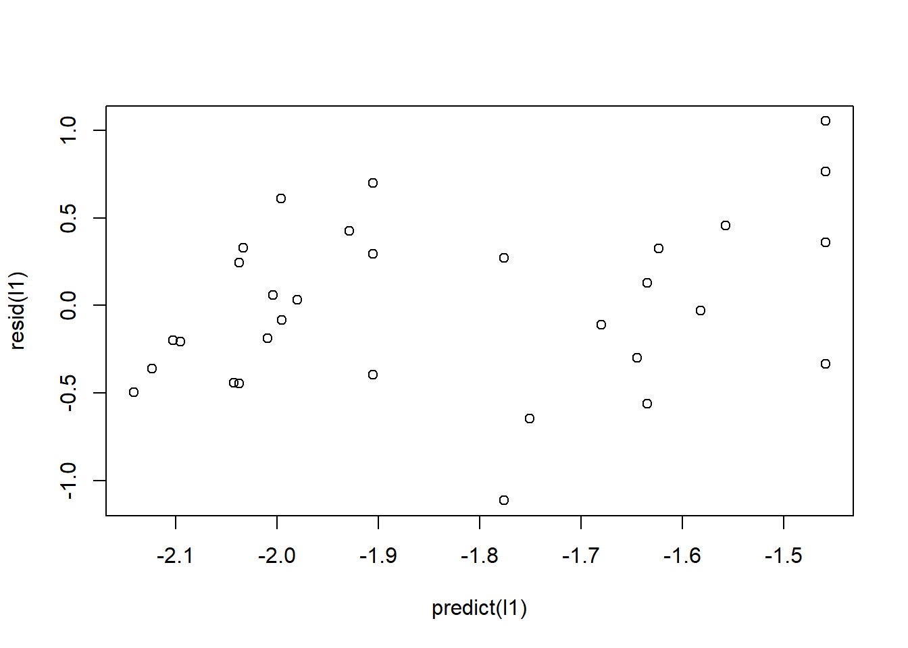
qqnorm(resid(l1))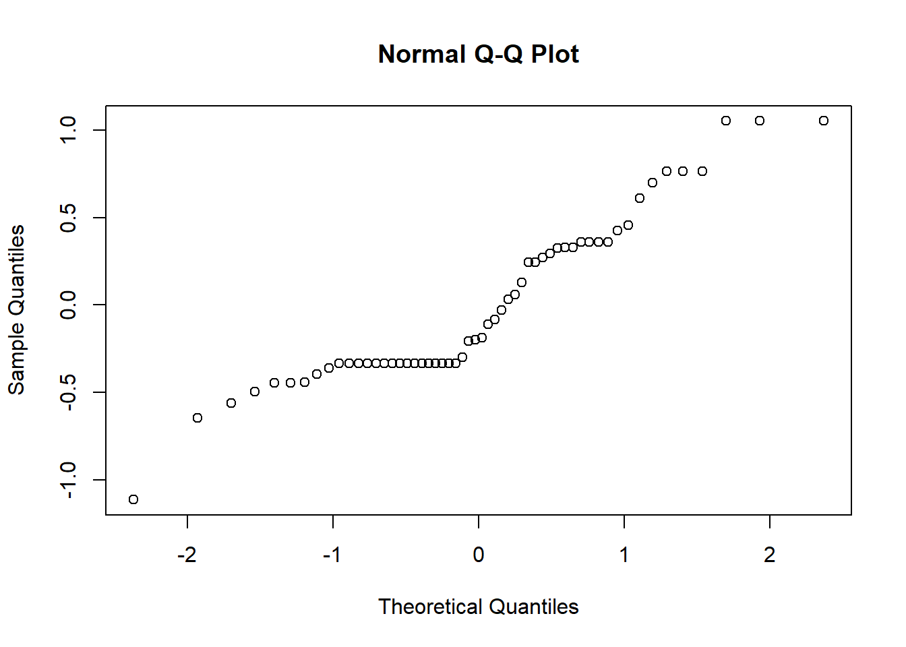
summary(l1)## Linear mixed model fit by REML ['lmerMod']
## Formula: log(prop.visited) ~ microsite * flowering + (1 | repID)
## Data: bee
##
## REML criterion at convergence: 89.7
##
## Scaled residuals:
## Min 1Q Median 3Q Max
## -2.1968 -0.6560 -0.3828 0.6632 2.0775
##
## Random effects:
## Groups Name Variance Std.Dev.
## repID (Intercept) 0.03373 0.1837
## Residual 0.25719 0.5071
## Number of obs: 56, groups: repID, 22
##
## Fixed effects:
## Estimate Std. Error t value
## (Intercept) -1.66587 0.15273 -10.907
## micrositeshrub -0.31863 0.22094 -1.442
## floweringbloom 0.08754 0.31361 0.279
## micrositeshrub:floweringbloom -0.17912 0.40555 -0.442
##
## Correlation of Fixed Effects:
## (Intr) mcrsts flwrng
## microstshrb -0.691
## flowerngblm -0.472 0.326
## mcrstshrb:f 0.365 -0.532 -0.773lsmeans(l1, pairwise~flowering+microsite)## Loading required namespace: lmerTest## $lsmeans
## flowering microsite lsmean SE df lower.CL upper.CL
## pre open -1.665873 0.1527309 5.21 -2.053803 -1.2779430
## bloom open -1.578330 0.2765184 35.59 -2.280676 -0.8759852
## pre shrub -1.984501 0.1596442 24.15 -2.389990 -1.5790108
## bloom shrub -2.076078 0.2036818 45.14 -2.593421 -1.5587348
##
## Degrees-of-freedom method: satterthwaite
## Results are given on the log (not the response) scale.
## Confidence level used: 0.95
##
## $contrasts
## contrast estimate SE df t.ratio p.value
## pre,open - bloom,open -0.08754268 0.3136057 23.61 -0.279 0.9922
## pre,open - pre,shrub 0.31862744 0.2209367 10.46 1.442 0.5024
## pre,open - bloom,shrub 0.41020490 0.2545840 18.81 1.611 0.3964
## bloom,open - pre,shrub 0.40617012 0.3192941 32.40 1.272 0.5868
## bloom,open - bloom,shrub 0.49774758 0.3434366 39.00 1.449 0.4772
## pre,shrub - bloom,shrub 0.09157746 0.2571351 39.53 0.356 0.9843
##
## Results are given on the log (not the response) scale.
## P value adjustment: tukey method for comparing a family of 4 estimatesl2 <- lmer(log(dec.total.time) ~ (1|repID), data = bee)
anova(l1, l2)## refitting model(s) with ML (instead of REML)## Data: bee
## Models:
## l2: log(dec.total.time) ~ (1 | repID)
## l1: log(prop.visited) ~ microsite * flowering + (1 | repID)
## Df AIC BIC logLik deviance Chisq Chi Df Pr(>Chisq)
## l2 3 230.875 236.95 -112.438 224.875
## l1 6 95.393 107.55 -41.697 83.393 141.48 3 < 2.2e-16 ***
## ---
## Signif. codes: 0 '***' 0.001 '**' 0.01 '*' 0.05 '.' 0.1 ' ' 1ggplot(rtu.data, aes(microsite, prop.visited, fill = rtu.ag)) + geom_boxplot() + facet_grid(~flowering, labeller=labeller(flowering = labels)) + scale_fill_brewer(palette= "Spectral") + theme_Publication() + xlab("Microsite") + ylab("Proportion of flowers visited") + labs(fill="") + theme(legend.text = element_text(size = 16)) + scale_fill_manual("", values = c("bee" ="#D53E4F", "bombylid"= "#FC8D59", "honeybee"= "#FEE08B", "lep"= "#D3D3D3", "other"= "#99D594", "syrphid" = "#3288BD"), labels = c("Solitary Bee", "Bombyliidae", "Honeybee", "Lepidoptera", "Other", "Syrphidae"))## Warning: package 'ggthemes' was built under R version 3.4.4## Warning: `legend.margin` must be specified using `margin()`. For the old
## behavior use legend.spacing## Scale for 'fill' is already present. Adding another scale for 'fill',
## which will replace the existing scale.## Warning in grid.Call(C_textBounds, as.graphicsAnnot(x$label), x$x, x$y, :
## font family not found in Windows font database## Warning in grid.Call(C_textBounds, as.graphicsAnnot(x$label), x$x, x$y, :
## font family not found in Windows font database
## Warning in grid.Call(C_textBounds, as.graphicsAnnot(x$label), x$x, x$y, :
## font family not found in Windows font database
## Warning in grid.Call(C_textBounds, as.graphicsAnnot(x$label), x$x, x$y, :
## font family not found in Windows font database
## Warning in grid.Call(C_textBounds, as.graphicsAnnot(x$label), x$x, x$y, :
## font family not found in Windows font database## Warning in grid.Call.graphics(C_text, as.graphicsAnnot(x$label), x$x, x
## $y, : font family not found in Windows font database## Warning in grid.Call(C_textBounds, as.graphicsAnnot(x$label), x$x, x$y, :
## font family not found in Windows font database
## Warning in grid.Call(C_textBounds, as.graphicsAnnot(x$label), x$x, x$y, :
## font family not found in Windows font database## Warning in grid.Call.graphics(C_text, as.graphicsAnnot(x$label), x$x, x
## $y, : font family not found in Windows font database## Warning in grid.Call(C_textBounds, as.graphicsAnnot(x$label), x$x, x$y, :
## font family not found in Windows font database
## Warning in grid.Call(C_textBounds, as.graphicsAnnot(x$label), x$x, x$y, :
## font family not found in Windows font database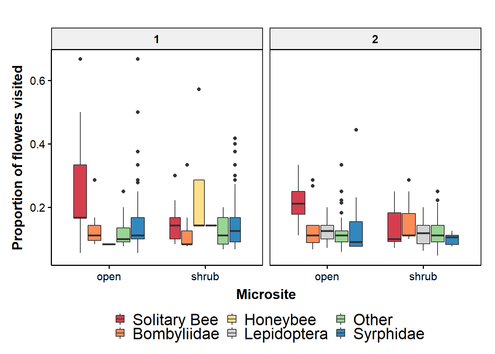
filter(rtu.data, dec.total.time<1.5) %>% ggplot(aes(microsite, dec.total.time, fill = rtu.ag)) + geom_boxplot() + facet_grid(~flowering, labeller=labeller(flowering = labels)) + scale_fill_brewer(palette= "Spectral") + theme_Publication() + xlab("Microsite") + ylab("Duration of visit (decimal time)") + labs(fill="") + theme(legend.text = element_text(size = 16)) + scale_fill_manual("", values = c("bee" ="#D53E4F", "bombylid"= "#FC8D59", "honeybee"= "#FEE08B", "lep"= "#D3D3D3", "other"= "#99D594", "syrphid" = "#3288BD"), labels = c("Solitary Bee", "Bombyliidae", "Honeybee", "Lepidoptera", "Other", "Syrphidae"))## Warning: `legend.margin` must be specified using `margin()`. For the old
## behavior use legend.spacing## Scale for 'fill' is already present. Adding another scale for 'fill',
## which will replace the existing scale.## Warning in grid.Call(C_textBounds, as.graphicsAnnot(x$label), x$x, x$y, :
## font family not found in Windows font database
## Warning in grid.Call(C_textBounds, as.graphicsAnnot(x$label), x$x, x$y, :
## font family not found in Windows font database
## Warning in grid.Call(C_textBounds, as.graphicsAnnot(x$label), x$x, x$y, :
## font family not found in Windows font database
## Warning in grid.Call(C_textBounds, as.graphicsAnnot(x$label), x$x, x$y, :
## font family not found in Windows font database
## Warning in grid.Call(C_textBounds, as.graphicsAnnot(x$label), x$x, x$y, :
## font family not found in Windows font database## Warning in grid.Call.graphics(C_text, as.graphicsAnnot(x$label), x$x, x
## $y, : font family not found in Windows font database## Warning in grid.Call(C_textBounds, as.graphicsAnnot(x$label), x$x, x$y, :
## font family not found in Windows font database
## Warning in grid.Call(C_textBounds, as.graphicsAnnot(x$label), x$x, x$y, :
## font family not found in Windows font database## Warning in grid.Call.graphics(C_text, as.graphicsAnnot(x$label), x$x, x
## $y, : font family not found in Windows font database## Warning in grid.Call(C_textBounds, as.graphicsAnnot(x$label), x$x, x$y, :
## font family not found in Windows font database
## Warning in grid.Call(C_textBounds, as.graphicsAnnot(x$label), x$x, x$y, :
## font family not found in Windows font database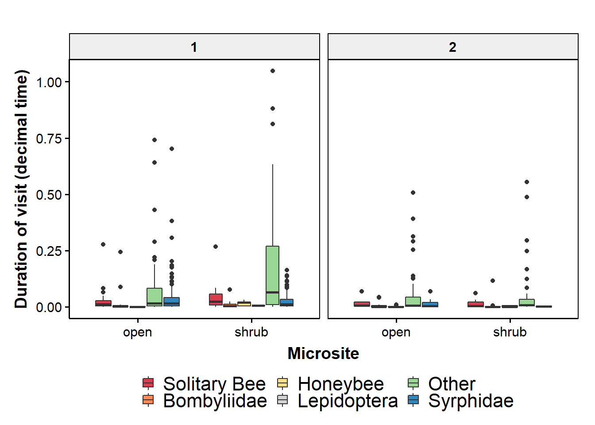
ggplot(rtu.data, aes(flowering, dec.total.time, fill = rtu.ag)) + geom_boxplot()## Warning: Removed 1 rows containing non-finite values (stat_boxplot).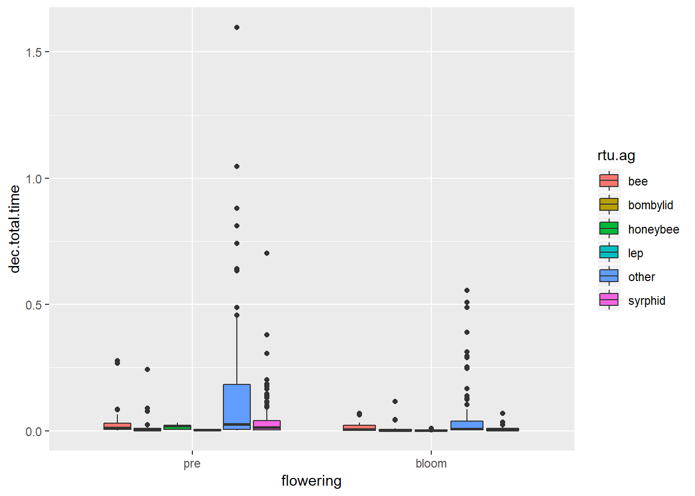
Vegetation Modelling
GLMM for vegetation covariates
#stats for veg
#glmms for vegation covariates: percent.cover, annual richness, annual bloom density, blooming shrub and cactus density
library(dplyr)
library(ggplot2)
library(tidyr)
library(lme4)
library(sjPlot)
library(lsmeans)
se <- function(x) sd(x)/sqrt(length(x)) ## SE
source(system.file("utils", "allFit.R", package="lme4"))
visits <- read.csv("byrep_cleaned.csv")
metadata <- read.csv("Clean Data/metadata_nobeetle.csv")
#only care about the veg
visits <- dplyr::select(visits, uniID, treatment, flowering, het.shrub.blooming.neighbours, het.cactus.blooming.neighbours, understory.richness, het.annual.floral.density, PlantID)
visits$flowering <- relevel(visits$flowering, "pre")
metadata$blooming <- relevel(metadata$blooming, "pre")
metadata <- dplyr::select(metadata, uniID, plant.id, treatment, blooming, percent.cover, date)
metadata$repID <- paste(metadata$plant.id, metadata$treatment)
visits$repID <- paste(visits$PlantID, visits$treatment)
#percent.cover
shapiro.test(metadata$percent.cover)##
## Shapiro-Wilk normality test
##
## data: metadata$percent.cover
## W = 0.84516, p-value = 2.406e-14mean(metadata$percent.cover)## [1] 18.82456sd(metadata$percent.cover)## [1] 19.50229ggplot(metadata, aes(percent.cover)) + geom_density()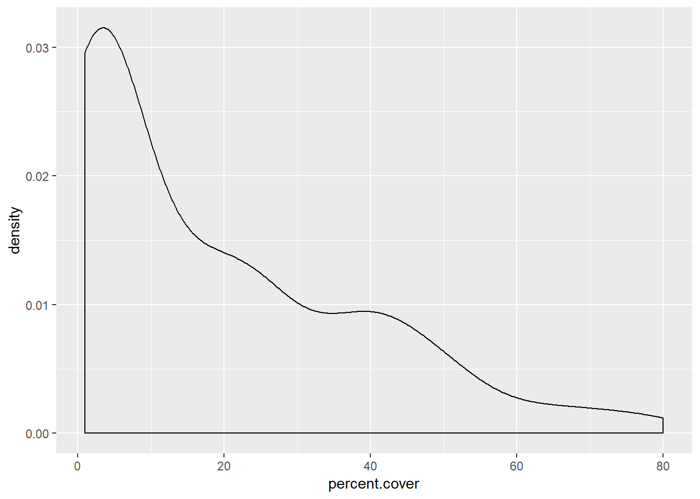
g1.nb <- glmer.nb(percent.cover ~ treatment + blooming + (1|repID), data = metadata)
g1.nb1 <- glmer.nb(percent.cover ~ treatment * blooming + (1|repID), data = metadata)
g1.nb.null <- glmer.nb(percent.cover ~ 1 + (1|repID), data = metadata)
g1.ps <- glmer(percent.cover ~ treatment * blooming + (1|repID), family = poisson, data = metadata)
summary(g1.ps)## Generalized linear mixed model fit by maximum likelihood (Laplace
## Approximation) [glmerMod]
## Family: poisson ( log )
## Formula: percent.cover ~ treatment * blooming + (1 | repID)
## Data: metadata
##
## AIC BIC logLik deviance df.resid
## 1732.7 1749.8 -861.3 1722.7 223
##
## Scaled residuals:
## Min 1Q Median 3Q Max
## -3.4918 -0.9251 -0.1950 0.8110 4.3947
##
## Random effects:
## Groups Name Variance Std.Dev.
## repID (Intercept) 0.348 0.59
## Number of obs: 228, groups: repID, 126
##
## Fixed effects:
## Estimate Std. Error z value Pr(>|z|)
## (Intercept) 1.63187 0.09800 16.652 <2e-16 ***
## treatmentshrub 1.70561 0.12558 13.582 <2e-16 ***
## bloomingpost -0.87112 0.09906 -8.794 <2e-16 ***
## treatmentshrub:bloomingpost 0.92094 0.10462 8.803 <2e-16 ***
## ---
## Signif. codes: 0 '***' 0.001 '**' 0.01 '*' 0.05 '.' 0.1 ' ' 1
##
## Correlation of Fixed Effects:
## (Intr) trtmnt blmngp
## tretmntshrb -0.776
## bloomingpst -0.356 0.279
## trtmntshrb: 0.337 -0.312 -0.947overdisp_fun(g1.ps)## chisq ratio rdf p
## 4.239920e+02 1.901309e+00 2.230000e+02 1.210164e-14summary(g1.nb)## Generalized linear mixed model fit by maximum likelihood (Laplace
## Approximation) [glmerMod]
## Family: Negative Binomial(3.7999) ( log )
## Formula: percent.cover ~ treatment + blooming + (1 | repID)
## Data: metadata
##
## AIC BIC logLik deviance df.resid
## 1553.9 1571.1 -772.0 1543.9 223
##
## Scaled residuals:
## Min 1Q Median 3Q Max
## -1.5609 -0.6787 -0.2420 0.4861 4.2883
##
## Random effects:
## Groups Name Variance Std.Dev.
## repID (Intercept) 0.1616 0.402
## Number of obs: 228, groups: repID, 126
##
## Fixed effects:
## Estimate Std. Error z value Pr(>|z|)
## (Intercept) 1.43216 0.09681 14.793 < 2e-16 ***
## treatmentshrub 2.14419 0.11424 18.770 < 2e-16 ***
## bloomingpost -0.28083 0.08482 -3.311 0.00093 ***
## ---
## Signif. codes: 0 '***' 0.001 '**' 0.01 '*' 0.05 '.' 0.1 ' ' 1
##
## Correlation of Fixed Effects:
## (Intr) trtmnt
## tretmntshrb -0.657
## bloomingpst -0.378 -0.105summary(g1.nb1)## Generalized linear mixed model fit by maximum likelihood (Laplace
## Approximation) [glmerMod]
## Family: Negative Binomial(4.7211) ( log )
## Formula: percent.cover ~ treatment * blooming + (1 | repID)
## Data: metadata
##
## AIC BIC logLik deviance df.resid
## 1534.3 1554.8 -761.1 1522.3 222
##
## Scaled residuals:
## Min 1Q Median 3Q Max
## -1.6956 -0.6370 -0.1554 0.5549 3.7794
##
## Random effects:
## Groups Name Variance Std.Dev.
## repID (Intercept) 0.1776 0.4214
## Number of obs: 228, groups: repID, 126
##
## Fixed effects:
## Estimate Std. Error z value Pr(>|z|)
## (Intercept) 1.6500 0.1061 15.550 < 2e-16 ***
## treatmentshrub 1.7599 0.1368 12.861 < 2e-16 ***
## bloomingpost -0.7933 0.1357 -5.846 5.02e-09 ***
## treatmentshrub:bloomingpost 0.7941 0.1663 4.776 1.79e-06 ***
## ---
## Signif. codes: 0 '***' 0.001 '**' 0.01 '*' 0.05 '.' 0.1 ' ' 1
##
## Correlation of Fixed Effects:
## (Intr) trtmnt blmngp
## tretmntshrb -0.764
## bloomingpst -0.550 0.427
## trtmntshrb: 0.457 -0.568 -0.815summary(g1.nb.null)## Generalized linear mixed model fit by maximum likelihood (Laplace
## Approximation) [glmerMod]
## Family: Negative Binomial(3.8424) ( log )
## Formula: percent.cover ~ 1 + (1 | repID)
## Data: metadata
##
## AIC BIC logLik deviance df.resid
## 1730.5 1740.8 -862.2 1724.5 225
##
## Scaled residuals:
## Min 1Q Median 3Q Max
## -1.4212 -0.5315 -0.1194 0.4819 1.6622
##
## Random effects:
## Groups Name Variance Std.Dev.
## repID (Intercept) 1.388 1.178
## Number of obs: 228, groups: repID, 126
##
## Fixed effects:
## Estimate Std. Error z value Pr(>|z|)
## (Intercept) 2.2999 0.1151 19.99 <2e-16 ***
## ---
## Signif. codes: 0 '***' 0.001 '**' 0.01 '*' 0.05 '.' 0.1 ' ' 1AIC(g1.ps, g1.nb1)## df AIC
## g1.ps 5 1732.660
## g1.nb1 6 1534.263anova(g1.nb, g1.nb1, g1.nb.null)## Data: metadata
## Models:
## g1.nb.null: percent.cover ~ 1 + (1 | repID)
## g1.nb: percent.cover ~ treatment + blooming + (1 | repID)
## g1.nb1: percent.cover ~ treatment * blooming + (1 | repID)
## Df AIC BIC logLik deviance Chisq Chi Df Pr(>Chisq)
## g1.nb.null 3 1730.5 1740.8 -862.24 1724.5
## g1.nb 5 1553.9 1571.1 -771.97 1543.9 180.544 2 < 2.2e-16 ***
## g1.nb1 6 1534.3 1554.8 -761.13 1522.3 21.668 1 3.242e-06 ***
## ---
## Signif. codes: 0 '***' 0.001 '**' 0.01 '*' 0.05 '.' 0.1 ' ' 1AIC(g1.nb, g1.nb1, g1.nb.null)## df AIC
## g1.nb 5 1553.931
## g1.nb1 6 1534.263
## g1.nb.null 3 1730.475car::Anova(g1.nb, type = 2)## Analysis of Deviance Table (Type II Wald chisquare tests)
##
## Response: percent.cover
## Chisq Df Pr(>Chisq)
## treatment 352.305 1 < 2e-16 ***
## blooming 10.962 1 0.00093 ***
## ---
## Signif. codes: 0 '***' 0.001 '**' 0.01 '*' 0.05 '.' 0.1 ' ' 1car::Anova(g1.nb1, type = 3)## Analysis of Deviance Table (Type III Wald chisquare tests)
##
## Response: percent.cover
## Chisq Df Pr(>Chisq)
## (Intercept) 241.796 1 < 2.2e-16 ***
## treatment 165.399 1 < 2.2e-16 ***
## blooming 34.180 1 5.024e-09 ***
## treatment:blooming 22.806 1 1.792e-06 ***
## ---
## Signif. codes: 0 '***' 0.001 '**' 0.01 '*' 0.05 '.' 0.1 ' ' 1shapiro.test(residuals(g1.nb1))##
## Shapiro-Wilk normality test
##
## data: residuals(g1.nb1)
## W = 0.98905, p-value = 0.08048overdisp_fun(g1.nb1)## chisq ratio rdf p
## 164.4211476 0.7373146 223.0000000 0.9987775sjt.glmer(g1.nb1)| percent.cover | ||||
| IRR | CI | p | ||
| Fixed Parts | ||||
| (Intercept) | 5.21 | 4.23 – 6.41 | <.001 | |
| treatmentshrub | 5.81 | 4.44 – 7.60 | <.001 | |
| bloomingpost | 0.45 | 0.35 – 0.59 | <.001 | |
| treatmentshrub:bloomingpost | 2.21 | 1.60 – 3.07 | <.001 | |
| Random Parts | ||||
| τ00, repID | 0.178 | |||
| NrepID | 126 | |||
| ICCrepID | 0.064 | |||
| Observations | 228 | |||
| Deviance | 167.480 | |||
ph <- lsmeans(g1.nb1, pairwise~treatment*blooming, adjust="tukey")
summary(ph)## $lsmeans
## treatment blooming lsmean SE df asymp.LCL asymp.UCL
## open pre 1.6499789 0.10610947 NA 1.4420081 1.857950
## shrub pre 3.4098587 0.08836419 NA 3.2366681 3.583049
## open post 0.8566644 0.11763413 NA 0.6261057 1.087223
## shrub post 3.4106879 0.08590020 NA 3.2423266 3.579049
##
## Results are given on the log (not the response) scale.
## Confidence level used: 0.95
##
## $contrasts
## contrast estimate SE df z.ratio p.value
## open,pre - shrub,pre -1.7598798669 0.13684131 NA -12.861 <.0001
## open,pre - open,post 0.7933144852 0.13569350 NA 5.846 <.0001
## open,pre - shrub,post -1.7607090637 0.13423058 NA -13.117 <.0001
## shrub,pre - open,post 2.5531943521 0.14582956 NA 17.508 <.0001
## shrub,pre - shrub,post -0.0008291968 0.09628795 NA -0.009 1.0000
## open,post - shrub,post -2.5540235489 0.14327508 NA -17.826 <.0001
##
## Results are given on the log (not the response) scale.
## P value adjustment: tukey method for comparing a family of 4 estimatesggplot(metadata, aes(treatment, percent.cover)) + geom_boxplot() + facet_grid(~blooming)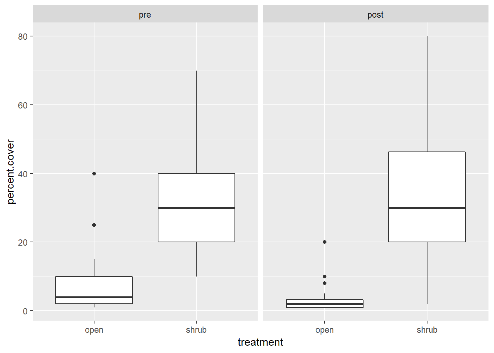
plot(fitted(g1.nb1), residuals(g1.nb1), xlab = "Fitted Values", ylab = "Residuals")
abline(h = 0, lty = 2)
lines(smooth.spline(fitted(g1.nb1), residuals(g1.nb1)))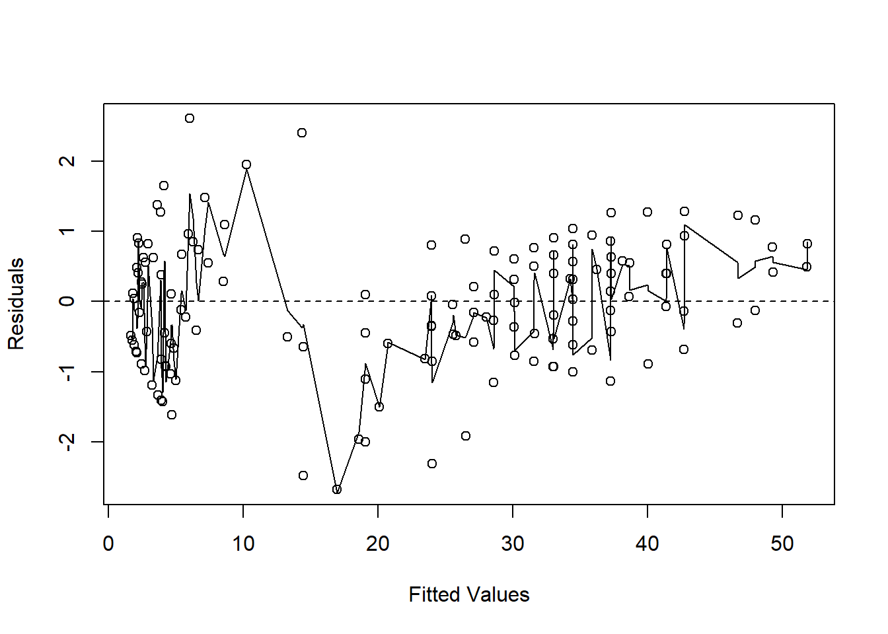
ggplot(metadata, aes(treatment, percent.cover)) + geom_boxplot() + facet_grid(~blooming, labeller=labeller(blooming = labels)) + theme_Publication() + xlab("Microsite") + ylab("Percent Annual Cover")## Warning: `legend.margin` must be specified using `margin()`. For the old
## behavior use legend.spacing## Warning in grid.Call(C_textBounds, as.graphicsAnnot(x$label), x$x, x$y, :
## font family not found in Windows font database
## Warning in grid.Call(C_textBounds, as.graphicsAnnot(x$label), x$x, x$y, :
## font family not found in Windows font database
## Warning in grid.Call(C_textBounds, as.graphicsAnnot(x$label), x$x, x$y, :
## font family not found in Windows font database## Warning in grid.Call.graphics(C_text, as.graphicsAnnot(x$label), x$x, x
## $y, : font family not found in Windows font database## Warning in grid.Call(C_textBounds, as.graphicsAnnot(x$label), x$x, x$y, :
## font family not found in Windows font database
## Warning in grid.Call(C_textBounds, as.graphicsAnnot(x$label), x$x, x$y, :
## font family not found in Windows font database## Warning in grid.Call.graphics(C_text, as.graphicsAnnot(x$label), x$x, x
## $y, : font family not found in Windows font database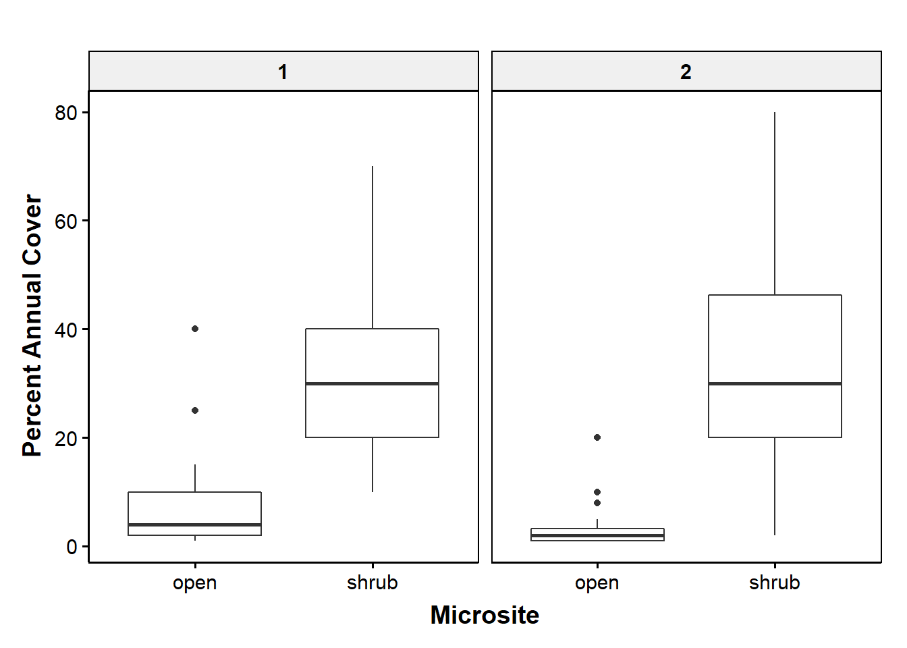
#richness
mean(visits$understory.richness, na.rm = TRUE)## [1] 2.376623sd(visits$understory.richness, na.rm = TRUE)## [1] 0.8703667shapiro.test(visits$understory.richness)##
## Shapiro-Wilk normality test
##
## data: visits$understory.richness
## W = 0.88912, p-value = 5.431e-12ggplot(visits, aes(understory.richness)) + geom_density()## Warning: Removed 4 rows containing non-finite values (stat_density).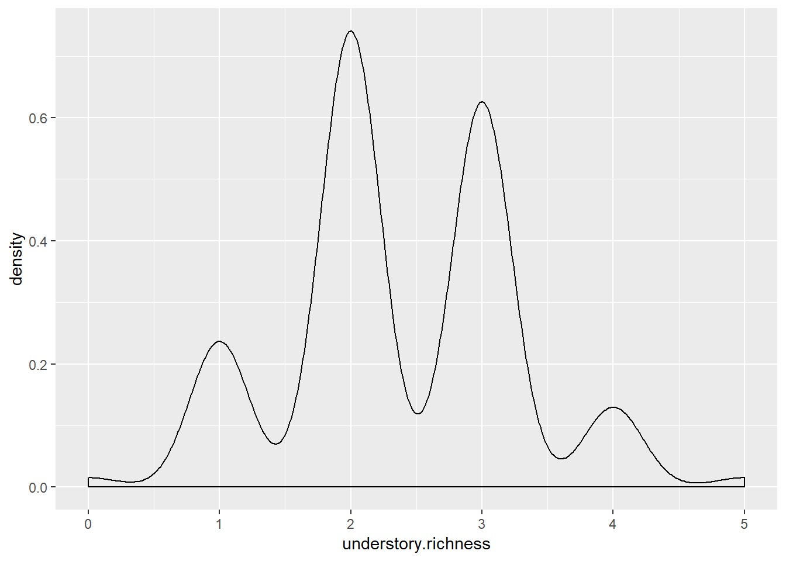
g2 <- glmer(understory.richness ~ treatment + flowering + (1|repID), family = poisson(link="log"), data = visits)
g2.2 <- glmer(understory.richness ~ treatment * flowering + (1|repID), family = poisson(link="log"), data = visits)
g2.null <- glmer(understory.richness ~ 1 + (1|repID), family = poisson(link="log"), data = visits)
summary(g2.null)## Generalized linear mixed model fit by maximum likelihood (Laplace
## Approximation) [glmerMod]
## Family: poisson ( log )
## Formula: understory.richness ~ 1 + (1 | repID)
## Data: visits
##
## AIC BIC logLik deviance df.resid
## 707.0 713.9 -351.5 703.0 229
##
## Scaled residuals:
## Min 1Q Median 3Q Max
## -1.5416 -0.2443 -0.2443 0.4044 1.7017
##
## Random effects:
## Groups Name Variance Std.Dev.
## repID (Intercept) 0 0
## Number of obs: 231, groups: repID, 122
##
## Fixed effects:
## Estimate Std. Error z value Pr(>|z|)
## (Intercept) 0.86568 0.04268 20.28 <2e-16 ***
## ---
## Signif. codes: 0 '***' 0.001 '**' 0.01 '*' 0.05 '.' 0.1 ' ' 1summary(g2)## Generalized linear mixed model fit by maximum likelihood (Laplace
## Approximation) [glmerMod]
## Family: poisson ( log )
## Formula: understory.richness ~ treatment + flowering + (1 | repID)
## Data: visits
##
## AIC BIC logLik deviance df.resid
## 707.6 721.3 -349.8 699.6 227
##
## Scaled residuals:
## Min 1Q Median 3Q Max
## -1.51239 -0.28764 -0.08821 0.47124 1.62890
##
## Random effects:
## Groups Name Variance Std.Dev.
## repID (Intercept) 0 0
## Number of obs: 231, groups: repID, 122
##
## Fixed effects:
## Estimate Std. Error z value Pr(>|z|)
## (Intercept) 0.89619 0.07359 12.179 <2e-16 ***
## treatmentshrub 0.07186 0.08546 0.841 0.4
## floweringbloom -0.14068 0.08560 -1.643 0.1
## ---
## Signif. codes: 0 '***' 0.001 '**' 0.01 '*' 0.05 '.' 0.1 ' ' 1
##
## Correlation of Fixed Effects:
## (Intr) trtmnt
## tretmntshrb -0.612
## flowerngblm -0.541 0.004summary(g2.2)## Generalized linear mixed model fit by maximum likelihood (Laplace
## Approximation) [glmerMod]
## Family: poisson ( log )
## Formula: understory.richness ~ treatment * flowering + (1 | repID)
## Data: visits
##
## AIC BIC logLik deviance df.resid
## 709.6 726.8 -349.8 699.6 226
##
## Scaled residuals:
## Min 1Q Median 3Q Max
## -1.50860 -0.28086 -0.09593 0.48001 1.64024
##
## Random effects:
## Groups Name Variance Std.Dev.
## repID (Intercept) 0 0
## Number of obs: 231, groups: repID, 122
##
## Fixed effects:
## Estimate Std. Error z value Pr(>|z|)
## (Intercept) 0.89142 0.08482 10.510 <2e-16 ***
## treatmentshrub 0.08090 0.11664 0.694 0.488
## floweringbloom -0.13045 0.12406 -1.052 0.293
## treatmentshrub:floweringbloom -0.01951 0.17140 -0.114 0.909
## ---
## Signif. codes: 0 '***' 0.001 '**' 0.01 '*' 0.05 '.' 0.1 ' ' 1
##
## Correlation of Fixed Effects:
## (Intr) trtmnt flwrng
## tretmntshrb -0.727
## flowerngblm -0.684 0.497
## trtmntshrb: 0.495 -0.681 -0.724anova(g2, g2.null, g2.2, test = "Chisq")## Data: visits
## Models:
## g2.null: understory.richness ~ 1 + (1 | repID)
## g2: understory.richness ~ treatment + flowering + (1 | repID)
## g2.2: understory.richness ~ treatment * flowering + (1 | repID)
## Df AIC BIC logLik deviance Chisq Chi Df Pr(>Chisq)
## g2.null 2 707.01 713.89 -351.50 703.01
## g2 4 707.58 721.35 -349.79 699.58 3.4279 2 0.1802
## g2.2 5 709.56 726.78 -349.78 699.56 0.0130 1 0.9094AIC(g2, g2.null, g2.2)## df AIC
## g2 4 707.5776
## g2.null 2 707.0055
## g2.2 5 709.5646car::Anova(g2, type = 2)## Analysis of Deviance Table (Type II Wald chisquare tests)
##
## Response: understory.richness
## Chisq Df Pr(>Chisq)
## treatment 0.7071 1 0.4004
## flowering 2.7010 1 0.1003shapiro.test(residuals(g2))##
## Shapiro-Wilk normality test
##
## data: residuals(g2)
## W = 0.96145, p-value = 6.924e-06overdisp_fun(g2)## chisq ratio rdf p
## 69.3246027 0.3053947 227.0000000 1.0000000sjt.glmer(g2)| understory.richness | ||||
| IRR | CI | p | ||
| Fixed Parts | ||||
| (Intercept) | 2.45 | 2.12 – 2.83 | <.001 | |
| treatment (shrub) | 1.07 | 0.91 – 1.27 | .400 | |
| flowering (bloom) | 0.87 | 0.73 – 1.03 | .100 | |
| Random Parts | ||||
| τ00, repID | 0.000 | |||
| NrepID | 122 | |||
| ICCrepID | 0.000 | |||
| Observations | 231 | |||
| Deviance | 76.238 | |||
ggplot(visits, aes(treatment, understory.richness)) + geom_boxplot() + facet_grid(~flowering, labeller=labeller(flowering = labels)) + theme_Publication() + xlab("Microsite") + ylab("Annual Species Richness")## Warning: `legend.margin` must be specified using `margin()`. For the old
## behavior use legend.spacing## Warning: Removed 4 rows containing non-finite values (stat_boxplot).## Warning in grid.Call(C_textBounds, as.graphicsAnnot(x$label), x$x, x$y, :
## font family not found in Windows font database
## Warning in grid.Call(C_textBounds, as.graphicsAnnot(x$label), x$x, x$y, :
## font family not found in Windows font database
## Warning in grid.Call(C_textBounds, as.graphicsAnnot(x$label), x$x, x$y, :
## font family not found in Windows font database## Warning in grid.Call.graphics(C_text, as.graphicsAnnot(x$label), x$x, x
## $y, : font family not found in Windows font database## Warning in grid.Call(C_textBounds, as.graphicsAnnot(x$label), x$x, x$y, :
## font family not found in Windows font database
## Warning in grid.Call(C_textBounds, as.graphicsAnnot(x$label), x$x, x$y, :
## font family not found in Windows font database## Warning in grid.Call.graphics(C_text, as.graphicsAnnot(x$label), x$x, x
## $y, : font family not found in Windows font database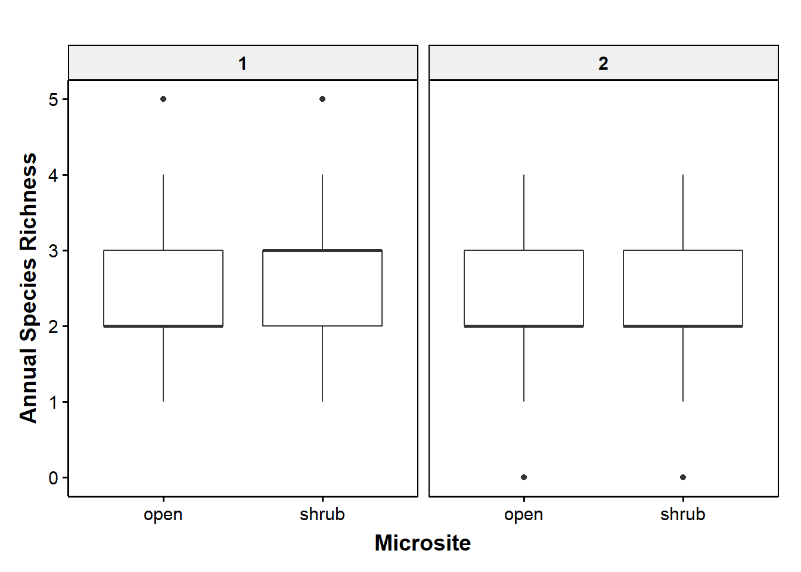
plot(fitted(g2), residuals(g2), xlab = "Fitted Values", ylab = "Residuals")
abline(h = 0, lty = 2)
lines(smooth.spline(fitted(g2), residuals(g2)))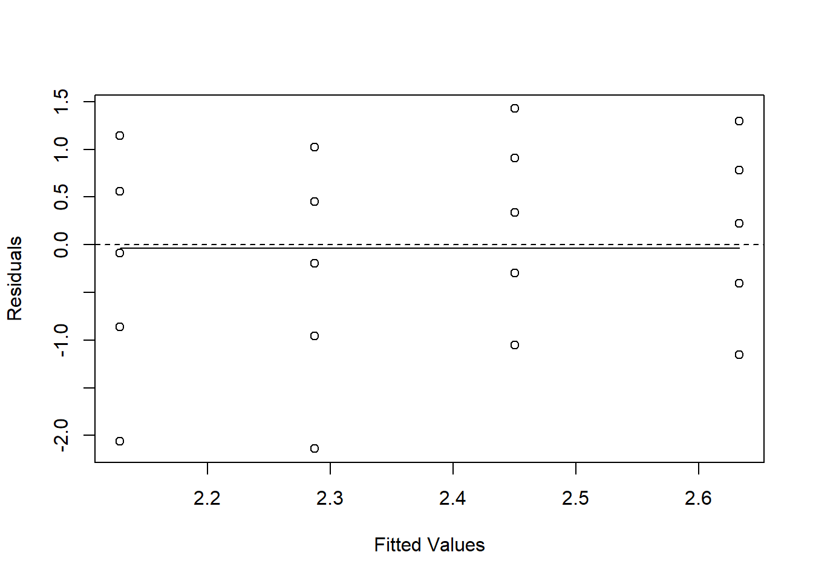
#floral density
mean(visits$het.annual.floral.density, na.rm = TRUE)## [1] 0.9695652sd(visits$het.annual.floral.density, na.rm = TRUE)## [1] 3.121126ggplot(visits, aes(het.annual.floral.density)) + geom_density()## Warning: Removed 5 rows containing non-finite values (stat_density).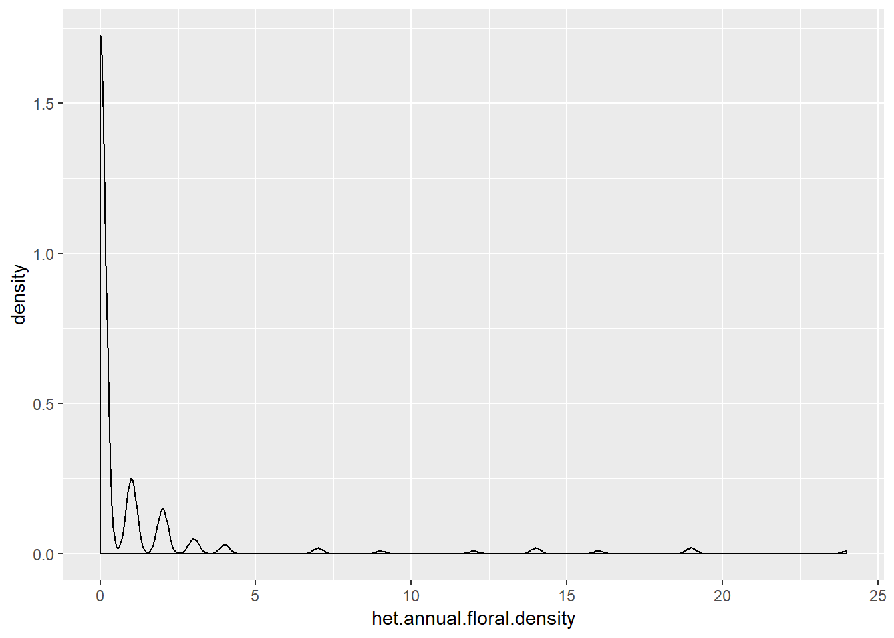
g3.nb <- glmer.nb(het.annual.floral.density ~ flowering * treatment + (1|repID), data = visits)## Warning in checkConv(attr(opt, "derivs"), opt$par, ctrl = control
## $checkConv, : Model failed to converge with max|grad| = 0.00705003 (tol =
## 0.001, component 1)#model breaks. Recompute gradient & Hessian
fm1 <- g3.nb
devfun <- update(fm1, devFunOnly=TRUE)
if (isLMM(fm1)) {
pars <- getME(fm1,"theta")
} else {
## GLMM: requires both random and fixed parameters
pars <- getME(fm1, c("theta","fixef"))
}
if (require("numDeriv")) {
cat("hess:\n"); print(hess <- hessian(devfun, unlist(pars)))
cat("grad:\n"); print(grad <- grad(devfun, unlist(pars)))
cat("scaled gradient:\n")
print(scgrad <- solve(chol(hess), grad))
}## hess:
## [,1] [,2] [,3] [,4] [,5]
## [1,] 4.758039e+00 8.595713e-06 9.242793e-06 3.322288e-04 1.486579e-05
## [2,] 8.595713e-06 5.968441e+01 2.584398e+01 2.922560e+01 1.206899e+01
## [3,] 9.242793e-06 2.584398e+01 2.584398e+01 1.206899e+01 1.206899e+01
## [4,] 3.322288e-04 2.922560e+01 1.206899e+01 2.922560e+01 1.206899e+01
## [5,] 1.486579e-05 1.206899e+01 1.206899e+01 1.206899e+01 1.206899e+01
## grad:
## [1] 0.000000e+00 -4.874500e-07 7.445957e-06 3.705210e-05 1.164499e-05
## scaled gradient:
## [1] -4.964867e-10 -4.439062e-06 -6.210272e-07 6.970011e-06 6.091980e-06## compare with internal calculations:
fm1@optinfo$derivs## $gradient
## [1] 0.000000e+00 -5.994139e-07 7.515268e-06 3.579459e-05 1.186578e-05
##
## $Hessian
## [,1] [,2] [,3] [,4] [,5]
## [1,] 4.784042 0.00000 0.00000 0.00000 0.00000
## [2,] 0.000000 59.68397 25.84390 29.22555 12.06896
## [3,] 0.000000 25.84390 25.84376 12.06897 12.06897
## [4,] 0.000000 29.22555 12.06897 29.22540 12.06897
## [5,] 0.000000 12.06896 12.06897 12.06897 12.06893fm1.restart <- update(fm1, start=pars)
#restart
summary(fm1.restart)## Generalized linear mixed model fit by maximum likelihood (Laplace
## Approximation) [glmerMod]
## Family: Negative Binomial(0.1613) ( log )
## Formula: het.annual.floral.density ~ flowering * treatment + (1 | repID)
## Data: visits
##
## AIC BIC logLik deviance df.resid
## 496.4 517.1 -242.2 484.4 224
##
## Scaled residuals:
## Min 1Q Median 3Q Max
## -0.3826 -0.3813 -0.3507 -0.1858 5.8248
##
## Random effects:
## Groups Name Variance Std.Dev.
## repID (Intercept) 3.644e-17 6.037e-09
## Number of obs: 230, groups: repID, 122
##
## Fixed effects:
## Estimate Std. Error z value Pr(>|z|)
## (Intercept) 0.45676 0.34624 1.319 0.1871
## floweringbloom -1.11481 0.51486 -2.165 0.0304 *
## treatmentshrub -0.06838 0.48627 -0.141 0.8882
## floweringbloom:treatmentshrub -0.50079 0.73985 -0.677 0.4985
## ---
## Signif. codes: 0 '***' 0.001 '**' 0.01 '*' 0.05 '.' 0.1 ' ' 1
##
## Correlation of Fixed Effects:
## (Intr) flwrng trtmnt
## flowerngblm -0.673
## tretmntshrb -0.712 0.479
## flwrngblm:t 0.468 -0.696 -0.657all <- allFit(fm1.restart)## bobyqa : [OK]
## Nelder_Mead : [OK]
## nlminbw : [OK]
## nmkbw : [OK]
## optimx.L-BFGS-B :## Warning in max(logpar): no non-missing arguments to max; returning -Inf## Warning in min(logpar): no non-missing arguments to min; returning Inf## [OK]
## nloptwrap.NLOPT_LN_NELDERMEAD : [OK]
## nloptwrap.NLOPT_LN_BOBYQA : [OK]summary(all)## $which.OK
## bobyqa Nelder_Mead
## TRUE TRUE
## nlminbw nmkbw
## TRUE FALSE
## optimx.L-BFGS-B nloptwrap.NLOPT_LN_NELDERMEAD
## TRUE TRUE
## nloptwrap.NLOPT_LN_BOBYQA
## TRUE
##
## $msgs
## $msgs$bobyqa
## NULL
##
## $msgs$Nelder_Mead
## NULL
##
## $msgs$nlminbw
## NULL
##
## $msgs$`optimx.L-BFGS-B`
## NULL
##
## $msgs$nloptwrap.NLOPT_LN_NELDERMEAD
## NULL
##
## $msgs$nloptwrap.NLOPT_LN_BOBYQA
## NULL
##
##
## $fixef
## (Intercept) floweringbloom treatmentshrub
## bobyqa 0.4567572 -1.114812 -0.06838636
## Nelder_Mead 0.4567565 -1.114813 -0.06838441
## nlminbw 0.4567565 -1.114813 -0.06838441
## optimx.L-BFGS-B 0.4567567 -1.114813 -0.06838564
## nloptwrap.NLOPT_LN_NELDERMEAD 0.4567565 -1.114813 -0.06838441
## nloptwrap.NLOPT_LN_BOBYQA 0.4567565 -1.114813 -0.06838441
## floweringbloom:treatmentshrub
## bobyqa -0.5007888
## Nelder_Mead -0.5007881
## nlminbw -0.5007881
## optimx.L-BFGS-B -0.5007885
## nloptwrap.NLOPT_LN_NELDERMEAD -0.5007881
## nloptwrap.NLOPT_LN_BOBYQA -0.5007881
##
## $llik
## bobyqa Nelder_Mead
## -242.2178 -242.2178
## nlminbw optimx.L-BFGS-B
## -242.2178 -242.2178
## nloptwrap.NLOPT_LN_NELDERMEAD nloptwrap.NLOPT_LN_BOBYQA
## -242.2178 -242.2178
##
## $sdcor
## repID.(Intercept)
## bobyqa 0
## Nelder_Mead 0
## nlminbw 0
## optimx.L-BFGS-B 0
## nloptwrap.NLOPT_LN_NELDERMEAD 0
## nloptwrap.NLOPT_LN_BOBYQA 0
##
## $theta
## repID.(Intercept)
## bobyqa 0
## Nelder_Mead 0
## nlminbw 0
## optimx.L-BFGS-B 0
## nloptwrap.NLOPT_LN_NELDERMEAD 0
## nloptwrap.NLOPT_LN_BOBYQA 0
##
## $times
## user.self sys.self elapsed user.child
## bobyqa 0.11 0 0.11 NA
## Nelder_Mead 0.16 0 0.16 NA
## nlminbw 0.10 0 0.09 NA
## optimx.L-BFGS-B 0.72 0 0.72 NA
## nloptwrap.NLOPT_LN_NELDERMEAD 0.13 0 0.13 NA
## nloptwrap.NLOPT_LN_BOBYQA 0.12 0 0.12 NA
## sys.child
## bobyqa NA
## Nelder_Mead NA
## nlminbw NA
## optimx.L-BFGS-B NA
## nloptwrap.NLOPT_LN_NELDERMEAD NA
## nloptwrap.NLOPT_LN_BOBYQA NA
##
## $feval
## bobyqa Nelder_Mead
## 31 144
## nlminbw optimx.L-BFGS-B
## NA 6
## nloptwrap.NLOPT_LN_NELDERMEAD nloptwrap.NLOPT_LN_BOBYQA
## 41 41g3.nb <- fm1.restart
g3.nb.1 <- glmer.nb(het.annual.floral.density ~ flowering + treatment + (1|repID), data = visits)
g3.nb.null <- glmer.nb(het.annual.floral.density ~ 1 + (1|repID), data = visits)## Warning in checkConv(attr(opt, "derivs"), opt$par, ctrl = control
## $checkConv, : Model failed to converge with max|grad| = 0.0243414 (tol =
## 0.001, component 1)## Warning in checkConv(attr(opt, "derivs"), opt$par, ctrl = control
## $checkConv, : Model failed to converge with max|grad| = 0.0175333 (tol =
## 0.001, component 1)## Warning in checkConv(attr(opt, "derivs"), opt$par, ctrl = control
## $checkConv, : Model failed to converge with max|grad| = 0.00518624 (tol =
## 0.001, component 1)## Warning in checkConv(attr(opt, "derivs"), opt$par, ctrl = control
## $checkConv, : unable to evaluate scaled gradient## Warning in checkConv(attr(opt, "derivs"), opt$par, ctrl = control
## $checkConv, : Model failed to converge: degenerate Hessian with 1 negative
## eigenvaluessummary(g3.nb)## Generalized linear mixed model fit by maximum likelihood (Laplace
## Approximation) [glmerMod]
## Family: Negative Binomial(0.1613) ( log )
## Formula: het.annual.floral.density ~ flowering * treatment + (1 | repID)
## Data: visits
##
## AIC BIC logLik deviance df.resid
## 496.4 517.1 -242.2 484.4 224
##
## Scaled residuals:
## Min 1Q Median 3Q Max
## -0.3826 -0.3813 -0.3507 -0.1858 5.8248
##
## Random effects:
## Groups Name Variance Std.Dev.
## repID (Intercept) 3.644e-17 6.037e-09
## Number of obs: 230, groups: repID, 122
##
## Fixed effects:
## Estimate Std. Error z value Pr(>|z|)
## (Intercept) 0.45676 0.34624 1.319 0.1871
## floweringbloom -1.11481 0.51486 -2.165 0.0304 *
## treatmentshrub -0.06838 0.48627 -0.141 0.8882
## floweringbloom:treatmentshrub -0.50079 0.73985 -0.677 0.4985
## ---
## Signif. codes: 0 '***' 0.001 '**' 0.01 '*' 0.05 '.' 0.1 ' ' 1
##
## Correlation of Fixed Effects:
## (Intr) flwrng trtmnt
## flowerngblm -0.673
## tretmntshrb -0.712 0.479
## flwrngblm:t 0.468 -0.696 -0.657summary(g3.nb.1)## Generalized linear mixed model fit by maximum likelihood (Laplace
## Approximation) [glmerMod]
## Family: Negative Binomial(0.1603) ( log )
## Formula: het.annual.floral.density ~ flowering + treatment + (1 | repID)
## Data: visits
##
## AIC BIC logLik deviance df.resid
## 494.9 512.1 -242.4 484.9 225
##
## Scaled residuals:
## Min 1Q Median 3Q Max
## -0.3834 -0.3782 -0.3443 -0.2078 6.4599
##
## Random effects:
## Groups Name Variance Std.Dev.
## repID (Intercept) 2.692e-10 1.641e-05
## Number of obs: 230, groups: repID, 122
##
## Fixed effects:
## Estimate Std. Error z value Pr(>|z|)
## (Intercept) 0.5717 0.3174 1.801 0.071679 .
## floweringbloom -1.3581 0.3715 -3.656 0.000256 ***
## treatmentshrub -0.2857 0.3685 -0.775 0.438240
## ---
## Signif. codes: 0 '***' 0.001 '**' 0.01 '*' 0.05 '.' 0.1 ' ' 1
##
## Correlation of Fixed Effects:
## (Intr) flwrng
## flowerngblm -0.576
## tretmntshrb -0.640 0.111summary(g3.nb.null)## Generalized linear mixed model fit by maximum likelihood (Laplace
## Approximation) [glmerMod]
## Family: Negative Binomial(0.157) ( log )
## Formula: het.annual.floral.density ~ 1 + (1 | repID)
## Data: visits
##
## AIC BIC logLik deviance df.resid
## 502.5 512.9 -248.3 496.5 227
##
## Scaled residuals:
## Min 1Q Median 3Q Max
## -0.3742 -0.3557 -0.3557 -0.1786 5.7929
##
## Random effects:
## Groups Name Variance Std.Dev.
## repID (Intercept) 0.3384 0.5818
## Number of obs: 230, groups: repID, 122
##
## Fixed effects:
## Estimate Std. Error z value Pr(>|z|)
## (Intercept) -0.3432 0.3359 -1.021 0.307anova(g3.nb, g3.nb.null, g3.nb.1, test = "Chisq")## Data: visits
## Models:
## g3.nb.null: het.annual.floral.density ~ 1 + (1 | repID)
## g3.nb.1: het.annual.floral.density ~ flowering + treatment + (1 | repID)
## g3.nb: het.annual.floral.density ~ flowering * treatment + (1 | repID)
## Df AIC BIC logLik deviance Chisq Chi Df Pr(>Chisq)
## g3.nb.null 3 502.54 512.85 -248.27 496.54
## g3.nb.1 5 494.89 512.08 -242.45 484.89 11.644 2 0.002961 **
## g3.nb 6 496.44 517.06 -242.22 484.44 0.457 1 0.499019
## ---
## Signif. codes: 0 '***' 0.001 '**' 0.01 '*' 0.05 '.' 0.1 ' ' 1car::Anova(g3.nb.1, type = 2)## Analysis of Deviance Table (Type II Wald chisquare tests)
##
## Response: het.annual.floral.density
## Chisq Df Pr(>Chisq)
## flowering 13.3646 1 0.0002564 ***
## treatment 0.6009 1 0.4382403
## ---
## Signif. codes: 0 '***' 0.001 '**' 0.01 '*' 0.05 '.' 0.1 ' ' 1AIC(g3.nb, g3.nb.1, g3.nb.null)## df AIC
## g3.nb 6 496.4356
## g3.nb.1 5 494.8926
## g3.nb.null 3 502.5370shapiro.test(residuals(g3.nb.1))##
## Shapiro-Wilk normality test
##
## data: residuals(g3.nb.1)
## W = 0.71799, p-value < 2.2e-16overdisp_fun(g3.nb.1)## chisq ratio rdf p
## 214.1961841 0.9477707 226.0000000 0.7032164sjt.glmer(g3.nb.1)| het.annual.floral.density | ||||
| IRR | CI | p | ||
| Fixed Parts | ||||
| (Intercept) | 1.77 | 0.95 – 3.30 | .072 | |
| flowering (bloom) | 0.26 | 0.12 – 0.53 | <.001 | |
| treatment (shrub) | 0.75 | 0.36 – 1.55 | .438 | |
| Random Parts | ||||
| τ00, repID | 0.000 | |||
| NrepID | 122 | |||
| ICCrepID | 0.000 | |||
| Observations | 230 | |||
| Deviance | 130.832 | |||
ggplot(visits, aes(treatment, het.annual.floral.density)) + geom_boxplot() + facet_grid(~flowering, labeller=labeller(flowering = labels)) + theme_Publication() + xlab("Microsite") + ylab("Heterospecific Annual Floral Density")## Warning: `legend.margin` must be specified using `margin()`. For the old
## behavior use legend.spacing## Warning: Removed 5 rows containing non-finite values (stat_boxplot).## Warning in grid.Call(C_textBounds, as.graphicsAnnot(x$label), x$x, x$y, :
## font family not found in Windows font database
## Warning in grid.Call(C_textBounds, as.graphicsAnnot(x$label), x$x, x$y, :
## font family not found in Windows font database
## Warning in grid.Call(C_textBounds, as.graphicsAnnot(x$label), x$x, x$y, :
## font family not found in Windows font database## Warning in grid.Call.graphics(C_text, as.graphicsAnnot(x$label), x$x, x
## $y, : font family not found in Windows font database## Warning in grid.Call(C_textBounds, as.graphicsAnnot(x$label), x$x, x$y, :
## font family not found in Windows font database
## Warning in grid.Call(C_textBounds, as.graphicsAnnot(x$label), x$x, x$y, :
## font family not found in Windows font database## Warning in grid.Call.graphics(C_text, as.graphicsAnnot(x$label), x$x, x
## $y, : font family not found in Windows font database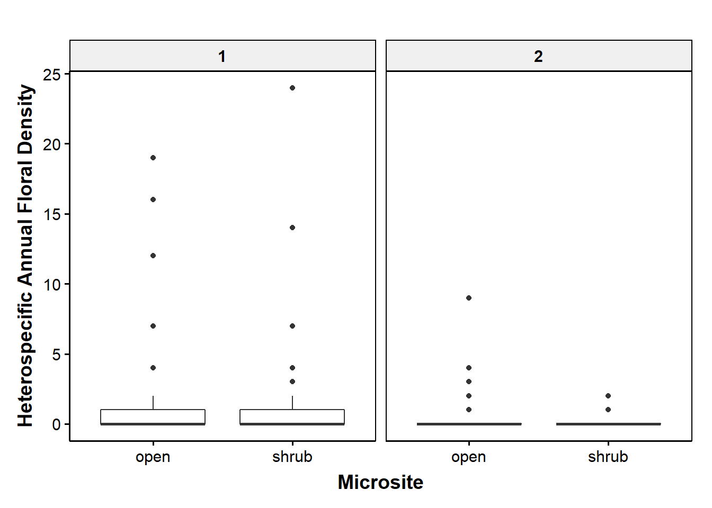
#blooming shrubs
mean(visits$het.shrub.blooming.neighbours, na.rm = TRUE)## [1] 1.744589sd(visits$het.shrub.blooming.neighbours, na.rm = TRUE)## [1] 2.375537ggplot(visits, aes(het.shrub.blooming.neighbours)) + geom_density(kernel = "gaussian")## Warning: Removed 4 rows containing non-finite values (stat_density).
g4.nb <- glmer.nb(het.shrub.blooming.neighbours ~ flowering * treatment + (1|repID), data = visits)## Warning in theta.ml(Y, mu, weights = object@resp$weights, limit = limit, :
## iteration limit reached#model breaks. Recompute gradient & Hessian
fm1 <- g4.nb
devfun <- update(fm1, devFunOnly=TRUE)
if (isLMM(fm1)) {
pars <- getME(fm1,"theta")
} else {
## GLMM: requires both random and fixed parameters
pars <- getME(fm1, c("theta","fixef"))
}
if (require("numDeriv")) {
cat("hess:\n"); print(hess <- hessian(devfun, unlist(pars)))
cat("grad:\n"); print(grad <- grad(devfun, unlist(pars)))
cat("scaled gradient:\n")
print(scgrad <- solve(chol(hess), grad))
}## hess:
## [,1] [,2] [,3] [,4] [,5]
## [1,] 281.50646 108.7155 85.12114 51.54893 40.19343
## [2,] 108.71550 245.5692 202.18286 131.09541 108.24088
## [3,] 85.12114 202.1829 274.21410 108.26280 151.49962
## [4,] 51.54893 131.0954 108.26280 131.12750 108.26280
## [5,] 40.19343 108.2409 151.49962 108.26280 151.49962
## grad:
## [1] -0.030695091 -0.005864015 -0.027144276 -0.004292018 -0.020064655
## scaled gradient:
## [1] -0.0017328397 0.0002128805 -0.0003600284 0.0026678053 -0.0039116162## compare with internal calculations:
fm1@optinfo$derivs## $gradient
## [1] 1.004878e-04 -7.841550e-05 1.435183e-04 6.070366e-05 5.285870e-05
##
## $Hessian
## [,1] [,2] [,3] [,4] [,5]
## [1,] 281.61510 108.8355 85.29443 51.57228 40.3108
## [2,] 108.83547 245.4550 202.24339 131.13286 108.2800
## [3,] 85.29443 202.2434 274.34338 108.27998 151.5917
## [4,] 51.57228 131.1329 108.27998 131.13251 108.2800
## [5,] 40.31080 108.2800 151.59169 108.27998 151.5907#restart model from optimum
fm1.restart <- update(fm1, start=pars)
summary(fm1.restart)## Generalized linear mixed model fit by maximum likelihood (Laplace
## Approximation) [glmerMod]
## Family: Negative Binomial(240.6108) ( log )
## Formula: het.shrub.blooming.neighbours ~ flowering * treatment + (1 |
## repID)
## Data: visits
##
## AIC BIC logLik deviance df.resid
## 740.0 760.6 -364.0 728.0 225
##
## Scaled residuals:
## Min 1Q Median 3Q Max
## -1.2623 -0.6189 -0.3621 0.4539 2.4650
##
## Random effects:
## Groups Name Variance Std.Dev.
## repID (Intercept) 0.5719 0.7563
## Number of obs: 231, groups: repID, 122
##
## Fixed effects:
## Estimate Std. Error z value Pr(>|z|)
## (Intercept) -1.02550 0.22295 -4.600 4.23e-06 ***
## floweringbloom 1.62615 0.20974 7.753 8.96e-15 ***
## treatmentshrub 0.30549 0.29074 1.051 0.293
## floweringbloom:treatmentshrub 0.07378 0.27601 0.267 0.789
## ---
## Signif. codes: 0 '***' 0.001 '**' 0.01 '*' 0.05 '.' 0.1 ' ' 1
##
## Correlation of Fixed Effects:
## (Intr) flwrng trtmnt
## flowerngblm -0.778
## tretmntshrb -0.736 0.593
## flwrngblm:t 0.588 -0.760 -0.782#test all optimizers
all.fm1 <- allFit(fm1.restart)## bobyqa : [OK]
## Nelder_Mead : [OK]
## nlminbw : [OK]
## nmkbw : [OK]
## optimx.L-BFGS-B : [OK]
## nloptwrap.NLOPT_LN_NELDERMEAD :## Warning in checkConv(attr(opt, "derivs"), opt$par, ctrl = control
## $checkConv, : Model failed to converge with max|grad| = 0.0115104 (tol =
## 0.001, component 1)## [OK]
## nloptwrap.NLOPT_LN_BOBYQA :## Warning in checkConv(attr(opt, "derivs"), opt$par, ctrl = control
## $checkConv, : Model failed to converge with max|grad| = 0.0115104 (tol =
## 0.001, component 1)## [OK]summary(all.fm1)## $which.OK
## bobyqa Nelder_Mead
## TRUE TRUE
## nlminbw nmkbw
## TRUE TRUE
## optimx.L-BFGS-B nloptwrap.NLOPT_LN_NELDERMEAD
## TRUE TRUE
## nloptwrap.NLOPT_LN_BOBYQA
## TRUE
##
## $msgs
## $msgs$bobyqa
## NULL
##
## $msgs$Nelder_Mead
## NULL
##
## $msgs$nlminbw
## NULL
##
## $msgs$nmkbw
## NULL
##
## $msgs$`optimx.L-BFGS-B`
## NULL
##
## $msgs$nloptwrap.NLOPT_LN_NELDERMEAD
## [1] "Model failed to converge with max|grad| = 0.0115104 (tol = 0.001, component 1)"
##
## $msgs$nloptwrap.NLOPT_LN_BOBYQA
## [1] "Model failed to converge with max|grad| = 0.0115104 (tol = 0.001, component 1)"
##
##
## $fixef
## (Intercept) floweringbloom treatmentshrub
## bobyqa -1.025515 1.626158 0.3055125
## Nelder_Mead -1.025530 1.626169 0.3055200
## nlminbw -1.025513 1.626160 0.3055080
## nmkbw -1.025610 1.626199 0.3056688
## optimx.L-BFGS-B -1.025496 1.626142 0.3054883
## nloptwrap.NLOPT_LN_NELDERMEAD -1.026976 1.627874 0.3072055
## nloptwrap.NLOPT_LN_BOBYQA -1.026976 1.627874 0.3072055
## floweringbloom:treatmentshrub
## bobyqa 0.07376578
## Nelder_Mead 0.07375613
## nlminbw 0.07376406
## nmkbw 0.07367139
## optimx.L-BFGS-B 0.07379071
## nloptwrap.NLOPT_LN_NELDERMEAD 0.07230324
## nloptwrap.NLOPT_LN_BOBYQA 0.07230324
##
## $llik
## bobyqa Nelder_Mead
## -363.9846 -363.9846
## nlminbw nmkbw
## -363.9846 -363.9846
## optimx.L-BFGS-B nloptwrap.NLOPT_LN_NELDERMEAD
## -363.9846 -363.9846
## nloptwrap.NLOPT_LN_BOBYQA
## -363.9846
##
## $sdcor
## repID.(Intercept)
## bobyqa 0.7562540
## Nelder_Mead 0.7562565
## nlminbw 0.7562508
## nmkbw 0.7562444
## optimx.L-BFGS-B 0.7562563
## nloptwrap.NLOPT_LN_NELDERMEAD 0.7561358
## nloptwrap.NLOPT_LN_BOBYQA 0.7561358
##
## $theta
## repID.(Intercept)
## bobyqa 0.7562540
## Nelder_Mead 0.7562565
## nlminbw 0.7562508
## nmkbw 0.7562444
## optimx.L-BFGS-B 0.7562563
## nloptwrap.NLOPT_LN_NELDERMEAD 0.7561358
## nloptwrap.NLOPT_LN_BOBYQA 0.7561358
##
## $times
## user.self sys.self elapsed user.child
## bobyqa 0.14 0 0.14 NA
## Nelder_Mead 0.22 0 0.22 NA
## nlminbw 0.12 0 0.12 NA
## nmkbw 0.26 0 0.26 NA
## optimx.L-BFGS-B 0.75 0 0.75 NA
## nloptwrap.NLOPT_LN_NELDERMEAD 0.11 0 0.11 NA
## nloptwrap.NLOPT_LN_BOBYQA 0.10 0 0.11 NA
## sys.child
## bobyqa NA
## Nelder_Mead NA
## nlminbw NA
## nmkbw NA
## optimx.L-BFGS-B NA
## nloptwrap.NLOPT_LN_NELDERMEAD NA
## nloptwrap.NLOPT_LN_BOBYQA NA
##
## $feval
## bobyqa Nelder_Mead
## 121 183
## nlminbw nmkbw
## NA 196
## optimx.L-BFGS-B nloptwrap.NLOPT_LN_NELDERMEAD
## 18 53
## nloptwrap.NLOPT_LN_BOBYQA
## 53#most optimizer run on model yielding same coefficients
g4.nb.1 <- glmer.nb(het.shrub.blooming.neighbours ~ flowering + treatment + (1|repID), data = visits)## Warning in theta.ml(Y, mu, weights = object@resp$weights, limit = limit, :
## iteration limit reachedg4.nb.null <- glmer.nb(het.shrub.blooming.neighbours ~ 1 + (1|repID), data = visits)
summary(g4.nb)## Generalized linear mixed model fit by maximum likelihood (Laplace
## Approximation) [glmerMod]
## Family: Negative Binomial(240.6108) ( log )
## Formula: het.shrub.blooming.neighbours ~ flowering * treatment + (1 |
## repID)
## Data: visits
##
## AIC BIC logLik deviance df.resid
## 740.0 760.6 -364.0 728.0 225
##
## Scaled residuals:
## Min 1Q Median 3Q Max
## -1.2623 -0.6190 -0.3621 0.4541 2.4646
##
## Random effects:
## Groups Name Variance Std.Dev.
## repID (Intercept) 0.5717 0.7561
## Number of obs: 231, groups: repID, 122
##
## Fixed effects:
## Estimate Std. Error z value Pr(>|z|)
## (Intercept) -1.02536 0.22287 -4.601 4.21e-06 ***
## floweringbloom 1.62602 0.20965 7.756 8.78e-15 ***
## treatmentshrub 0.30559 0.29064 1.051 0.293
## floweringbloom:treatmentshrub 0.07363 0.27587 0.267 0.790
## ---
## Signif. codes: 0 '***' 0.001 '**' 0.01 '*' 0.05 '.' 0.1 ' ' 1
##
## Correlation of Fixed Effects:
## (Intr) flwrng trtmnt
## flowerngblm -0.777
## tretmntshrb -0.737 0.593
## flwrngblm:t 0.588 -0.760 -0.782summary(g4.nb.1)## Generalized linear mixed model fit by maximum likelihood (Laplace
## Approximation) [glmerMod]
## Family: Negative Binomial(192.0887) ( log )
## Formula: het.shrub.blooming.neighbours ~ flowering + treatment + (1 |
## repID)
## Data: visits
##
## AIC BIC logLik deviance df.resid
## 738.0 755.3 -364.0 728.0 226
##
## Scaled residuals:
## Min 1Q Median 3Q Max
## -1.2586 -0.6261 -0.3548 0.4714 2.4250
##
## Random effects:
## Groups Name Variance Std.Dev.
## repID (Intercept) 0.5711 0.7557
## Number of obs: 231, groups: repID, 122
##
## Fixed effects:
## Estimate Std. Error z value Pr(>|z|)
## (Intercept) -1.0605 0.1808 -5.866 4.47e-09 ***
## floweringbloom 1.6688 0.1364 12.234 < 2e-16 ***
## treatmentshrub 0.3662 0.1812 2.021 0.0433 *
## ---
## Signif. codes: 0 '***' 0.001 '**' 0.01 '*' 0.05 '.' 0.1 ' ' 1
##
## Correlation of Fixed Effects:
## (Intr) flwrng
## flowerngblm -0.631
## tretmntshrb -0.552 0.006summary(g4.nb.null)## Generalized linear mixed model fit by maximum likelihood (Laplace
## Approximation) [glmerMod]
## Family: Negative Binomial(0.6952) ( log )
## Formula: het.shrub.blooming.neighbours ~ 1 + (1 | repID)
## Data: visits
##
## AIC BIC logLik deviance df.resid
## 832.8 843.1 -413.4 826.8 228
##
## Scaled residuals:
## Min 1Q Median 3Q Max
## -0.7050 -0.7050 -0.3009 0.5074 5.3569
##
## Random effects:
## Groups Name Variance Std.Dev.
## repID (Intercept) 0 0
## Number of obs: 231, groups: repID, 122
##
## Fixed effects:
## Estimate Std. Error z value Pr(>|z|)
## (Intercept) 0.55652 0.09332 5.963 2.47e-09 ***
## ---
## Signif. codes: 0 '***' 0.001 '**' 0.01 '*' 0.05 '.' 0.1 ' ' 1anova(g4.nb, g4.nb.null, g4.nb.1, test = "Chisq")## Data: visits
## Models:
## g4.nb.null: het.shrub.blooming.neighbours ~ 1 + (1 | repID)
## g4.nb.1: het.shrub.blooming.neighbours ~ flowering + treatment + (1 |
## g4.nb.1: repID)
## g4.nb: het.shrub.blooming.neighbours ~ flowering * treatment + (1 |
## g4.nb: repID)
## Df AIC BIC logLik deviance Chisq Chi Df Pr(>Chisq)
## g4.nb.null 3 832.76 843.09 -413.38 826.76
## g4.nb.1 5 738.04 755.26 -364.02 728.04 98.7187 2 <2e-16 ***
## g4.nb 6 739.97 760.63 -363.99 727.97 0.0709 1 0.7901
## ---
## Signif. codes: 0 '***' 0.001 '**' 0.01 '*' 0.05 '.' 0.1 ' ' 1car::Anova(g4.nb.1, type = 2)## Analysis of Deviance Table (Type II Wald chisquare tests)
##
## Response: het.shrub.blooming.neighbours
## Chisq Df Pr(>Chisq)
## flowering 149.6622 1 < 2e-16 ***
## treatment 4.0831 1 0.04331 *
## ---
## Signif. codes: 0 '***' 0.001 '**' 0.01 '*' 0.05 '.' 0.1 ' ' 1AIC(g4.nb, g4.nb.1, g4.nb.null)## df AIC
## g4.nb 6 739.9733
## g4.nb.1 5 738.0442
## g4.nb.null 3 832.7629shapiro.test(residuals(g4.nb.1))##
## Shapiro-Wilk normality test
##
## data: residuals(g4.nb.1)
## W = 0.97025, p-value = 9.007e-05overdisp_fun(g4.nb.1)## chisq ratio rdf p
## 138.5273790 0.6102528 227.0000000 0.9999993sjt.glmer(g4.nb.1)| het.shrub.blooming.neighbours | ||||
| IRR | CI | p | ||
| Fixed Parts | ||||
| (Intercept) | 0.35 | 0.24 – 0.49 | <.001 | |
| flowering (bloom) | 5.31 | 4.06 – 6.93 | <.001 | |
| treatment (shrub) | 1.44 | 1.01 – 2.06 | .043 | |
| Random Parts | ||||
| τ00, repID | 0.571 | |||
| NrepID | 122 | |||
| ICCrepID | 0.149 | |||
| Observations | 231 | |||
| Deviance | 174.837 | |||
#blooming cactus
mean(visits$het.cactus.blooming.neighbours, na.rm = TRUE)## [1] 0.1341991sd(visits$het.cactus.blooming.neighbours, na.rm = TRUE)## [1] 0.6214983ggplot(visits, aes(het.cactus.blooming.neighbours)) + geom_density(kernel = "gaussian")## Warning: Removed 4 rows containing non-finite values (stat_density).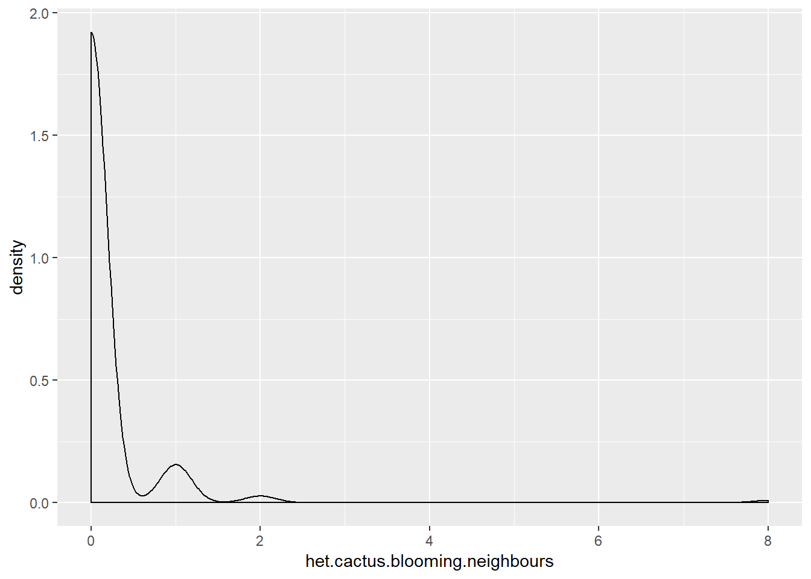
g5.nb <- glmer.nb(het.cactus.blooming.neighbours ~ flowering * treatment + (1|repID), data = visits)## Warning in theta.ml(Y, mu, weights = object@resp$weights, limit = limit, :
## iteration limit reachedfm1 <- g5.nb
devfun <- update(fm1, devFunOnly=TRUE)
if (isLMM(fm1)) {
pars <- getME(fm1,"theta")
} else {
## GLMM: requires both random and fixed parameters
pars <- getME(fm1, c("theta","fixef"))
}
if (require("numDeriv")) {
cat("hess:\n"); print(hess <- hessian(devfun, unlist(pars)))
cat("grad:\n"); print(grad <- grad(devfun, unlist(pars)))
cat("scaled gradient:\n")
print(scgrad <- solve(chol(hess), grad))
}## hess:
## [,1] [,2] [,3] [,4] [,5]
## [1,] 29.430685 22.31596 20.78059 10.64462 9.793257
## [2,] 22.315965 21.35519 19.86581 10.94885 10.067778
## [3,] 20.780590 19.86581 22.20388 10.06777 11.098248
## [4,] 10.644617 10.94885 10.06777 10.94885 10.067775
## [5,] 9.793257 10.06778 11.09825 10.06777 11.098248
## grad:
## [1] -1.128418e-03 3.101988e-05 -1.511798e-03 9.490486e-06 -3.295196e-04
## scaled gradient:
## [1] -0.0002157386 0.0005785681 -0.0006143219 0.0003220779 -0.0003416708## compare with internal calculations:
fm1@optinfo$derivs## $gradient
## [1] 1.662443e-05 2.437332e-05 1.352220e-05 2.138009e-05 1.287646e-05
##
## $Hessian
## [,1] [,2] [,3] [,4] [,5]
## [1,] 29.43319 22.31591 20.78543 10.64476 9.79442
## [2,] 22.31591 21.35563 19.86568 10.94894 10.06766
## [3,] 20.78543 19.86568 22.21203 10.06766 11.10011
## [4,] 10.64476 10.94894 10.06766 10.94864 10.06766
## [5,] 9.79442 10.06766 11.10011 10.06766 11.09984#restart model from optimum
fm1.restart <- update(fm1, start=pars)
summary(fm1.restart)## Generalized linear mixed model fit by maximum likelihood (Laplace
## Approximation) [glmerMod]
## Family: Negative Binomial(74.3305) ( log )
## Formula: het.cactus.blooming.neighbours ~ flowering * treatment + (1 |
## repID)
## Data: visits
##
## AIC BIC logLik deviance df.resid
## 159.5 180.1 -73.7 147.5 225
##
## Scaled residuals:
## Min 1Q Median 3Q Max
## -0.6032 -0.2047 -0.0651 -0.0496 3.6434
##
## Random effects:
## Groups Name Variance Std.Dev.
## repID (Intercept) 3.824 1.955
## Number of obs: 231, groups: repID, 122
##
## Fixed effects:
## Estimate Std. Error z value Pr(>|z|)
## (Intercept) -5.8385 1.2453 -4.688 2.75e-06 ***
## floweringbloom 2.8362 1.0301 2.753 0.0059 **
## treatmentshrub 0.3897 1.4966 0.260 0.7946
## floweringbloom:treatmentshrub -0.3253 1.4651 -0.222 0.8243
## ---
## Signif. codes: 0 '***' 0.001 '**' 0.01 '*' 0.05 '.' 0.1 ' ' 1
##
## Correlation of Fixed Effects:
## (Intr) flwrng trtmnt
## flowerngblm -0.778
## tretmntshrb -0.637 0.648
## flwrngblm:t 0.548 -0.703 -0.911#test all optimizers
all.fm1 <- allFit(fm1.restart)## bobyqa : [OK]
## Nelder_Mead : [OK]
## nlminbw : [OK]
## nmkbw :## Warning in checkConv(attr(opt, "derivs"), opt$par, ctrl = control
## $checkConv, : Model failed to converge with max|grad| = 0.00112725 (tol =
## 0.001, component 1)## [OK]
## optimx.L-BFGS-B : [OK]
## nloptwrap.NLOPT_LN_NELDERMEAD :## Warning in checkConv(attr(opt, "derivs"), opt$par, ctrl = control
## $checkConv, : Model failed to converge with max|grad| = 0.0042975 (tol =
## 0.001, component 1)## [OK]
## nloptwrap.NLOPT_LN_BOBYQA :## Warning in checkConv(attr(opt, "derivs"), opt$par, ctrl = control
## $checkConv, : Model failed to converge with max|grad| = 0.0042975 (tol =
## 0.001, component 1)## [OK]summary(all.fm1)## $which.OK
## bobyqa Nelder_Mead
## TRUE TRUE
## nlminbw nmkbw
## TRUE TRUE
## optimx.L-BFGS-B nloptwrap.NLOPT_LN_NELDERMEAD
## TRUE TRUE
## nloptwrap.NLOPT_LN_BOBYQA
## TRUE
##
## $msgs
## $msgs$bobyqa
## NULL
##
## $msgs$Nelder_Mead
## NULL
##
## $msgs$nlminbw
## NULL
##
## $msgs$nmkbw
## [1] "Model failed to converge with max|grad| = 0.00112725 (tol = 0.001, component 1)"
##
## $msgs$`optimx.L-BFGS-B`
## NULL
##
## $msgs$nloptwrap.NLOPT_LN_NELDERMEAD
## [1] "Model failed to converge with max|grad| = 0.0042975 (tol = 0.001, component 1)"
##
## $msgs$nloptwrap.NLOPT_LN_BOBYQA
## [1] "Model failed to converge with max|grad| = 0.0042975 (tol = 0.001, component 1)"
##
##
## $fixef
## (Intercept) floweringbloom treatmentshrub
## bobyqa -5.838535 2.836246 0.3896770
## Nelder_Mead -5.838514 2.836235 0.3896773
## nlminbw -5.838428 2.836175 0.3895669
## nmkbw -5.838478 2.836298 0.3892381
## optimx.L-BFGS-B -5.838676 2.836346 0.3895797
## nloptwrap.NLOPT_LN_NELDERMEAD -5.838787 2.836599 0.3916273
## nloptwrap.NLOPT_LN_BOBYQA -5.838787 2.836599 0.3916273
## floweringbloom:treatmentshrub
## bobyqa -0.3253034
## Nelder_Mead -0.3253106
## nlminbw -0.3251994
## nmkbw -0.3251673
## optimx.L-BFGS-B -0.3251544
## nloptwrap.NLOPT_LN_NELDERMEAD -0.3263962
## nloptwrap.NLOPT_LN_BOBYQA -0.3263962
##
## $llik
## bobyqa Nelder_Mead
## -73.7471 -73.7471
## nlminbw nmkbw
## -73.7471 -73.7471
## optimx.L-BFGS-B nloptwrap.NLOPT_LN_NELDERMEAD
## -73.7471 -73.7471
## nloptwrap.NLOPT_LN_BOBYQA
## -73.7471
##
## $sdcor
## repID.(Intercept)
## bobyqa 1.955376
## Nelder_Mead 1.955376
## nlminbw 1.955348
## nmkbw 1.955439
## optimx.L-BFGS-B 1.955392
## nloptwrap.NLOPT_LN_NELDERMEAD 1.954906
## nloptwrap.NLOPT_LN_BOBYQA 1.954906
##
## $theta
## repID.(Intercept)
## bobyqa 1.955376
## Nelder_Mead 1.955376
## nlminbw 1.955348
## nmkbw 1.955439
## optimx.L-BFGS-B 1.955392
## nloptwrap.NLOPT_LN_NELDERMEAD 1.954906
## nloptwrap.NLOPT_LN_BOBYQA 1.954906
##
## $times
## user.self sys.self elapsed user.child
## bobyqa 0.47 0 0.46 NA
## Nelder_Mead 0.36 0 0.36 NA
## nlminbw 0.14 0 0.14 NA
## nmkbw 1.14 0 1.14 NA
## optimx.L-BFGS-B 0.94 0 0.94 NA
## nloptwrap.NLOPT_LN_NELDERMEAD 0.25 0 0.25 NA
## nloptwrap.NLOPT_LN_BOBYQA 0.25 0 0.25 NA
## sys.child
## bobyqa NA
## Nelder_Mead NA
## nlminbw NA
## nmkbw NA
## optimx.L-BFGS-B NA
## nloptwrap.NLOPT_LN_NELDERMEAD NA
## nloptwrap.NLOPT_LN_BOBYQA NA
##
## $feval
## bobyqa Nelder_Mead
## 523 369
## nlminbw nmkbw
## NA 249
## optimx.L-BFGS-B nloptwrap.NLOPT_LN_NELDERMEAD
## 40 200
## nloptwrap.NLOPT_LN_BOBYQA
## 200#3 optimizers worked, insignificant interaction anyways
#HA ok this error was because this data is somehow not overdispersed
#g5.nb.1 <- glmer.nb(het.cactus.blooming.neighbours ~ flowering + treatment + (1|repID), data = visits)
g5.ps <- glmer(het.cactus.blooming.neighbours ~ flowering * treatment + (1|repID), family = poisson(link = "log"), data = visits)
g5.ps.1 <- glmer(het.cactus.blooming.neighbours ~ flowering + treatment + (1|repID), family = poisson(link = "log"), data = visits)
g5.ps.null <- glmer(het.cactus.blooming.neighbours ~ 1 + (1|repID), family = poisson(link ="log"), data = visits)
ggplot(visits, aes(treatment, het.shrub.blooming.neighbours)) + geom_boxplot() + facet_grid(~flowering, labeller=labeller(flowering = labels)) + theme_Publication() + xlab("Microsite") + ylab("Blooming Shrub Density within 2m")## Warning: `legend.margin` must be specified using `margin()`. For the old
## behavior use legend.spacing## Warning: Removed 4 rows containing non-finite values (stat_boxplot).## Warning in grid.Call(C_textBounds, as.graphicsAnnot(x$label), x$x, x$y, :
## font family not found in Windows font database
## Warning in grid.Call(C_textBounds, as.graphicsAnnot(x$label), x$x, x$y, :
## font family not found in Windows font database
## Warning in grid.Call(C_textBounds, as.graphicsAnnot(x$label), x$x, x$y, :
## font family not found in Windows font database## Warning in grid.Call.graphics(C_text, as.graphicsAnnot(x$label), x$x, x
## $y, : font family not found in Windows font database## Warning in grid.Call(C_textBounds, as.graphicsAnnot(x$label), x$x, x$y, :
## font family not found in Windows font database
## Warning in grid.Call(C_textBounds, as.graphicsAnnot(x$label), x$x, x$y, :
## font family not found in Windows font database## Warning in grid.Call.graphics(C_text, as.graphicsAnnot(x$label), x$x, x
## $y, : font family not found in Windows font database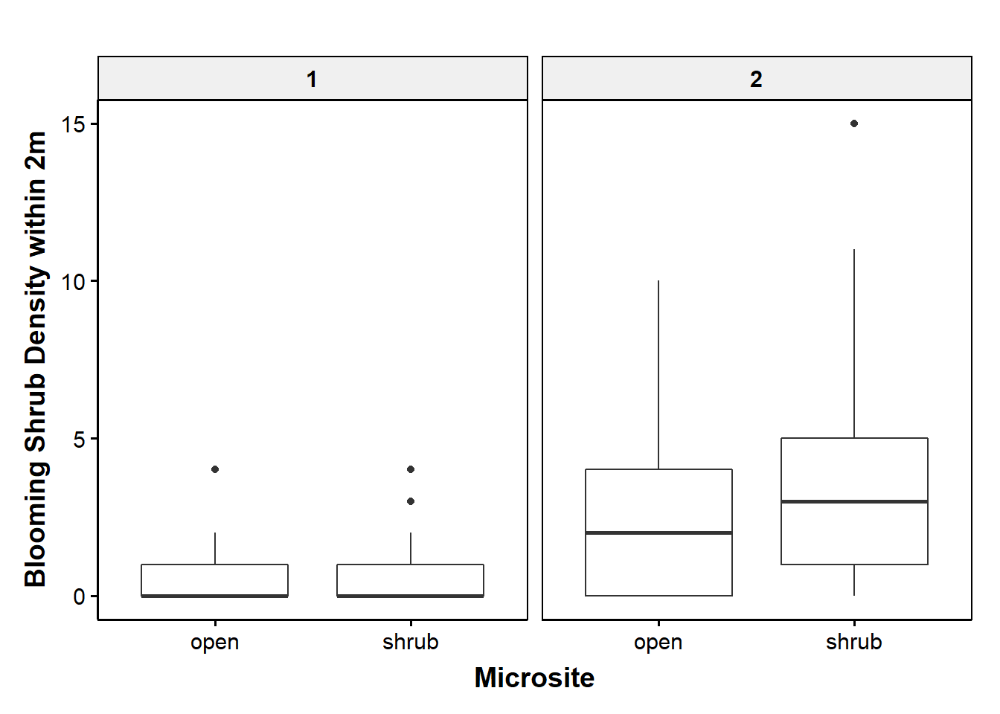
ggplot(visits, aes(treatment, het.cactus.blooming.neighbours)) + geom_boxplot() + facet_grid(~flowering, labeller=labeller(flowering = labels)) + theme_Publication() + xlab("Microsite") + ylab("Blooming Cactus Density within 2m")## Warning: `legend.margin` must be specified using `margin()`. For the old
## behavior use legend.spacing## Warning: Removed 4 rows containing non-finite values (stat_boxplot).## Warning in grid.Call(C_textBounds, as.graphicsAnnot(x$label), x$x, x$y, :
## font family not found in Windows font database
## Warning in grid.Call(C_textBounds, as.graphicsAnnot(x$label), x$x, x$y, :
## font family not found in Windows font database
## Warning in grid.Call(C_textBounds, as.graphicsAnnot(x$label), x$x, x$y, :
## font family not found in Windows font database## Warning in grid.Call.graphics(C_text, as.graphicsAnnot(x$label), x$x, x
## $y, : font family not found in Windows font database## Warning in grid.Call(C_textBounds, as.graphicsAnnot(x$label), x$x, x$y, :
## font family not found in Windows font database
## Warning in grid.Call(C_textBounds, as.graphicsAnnot(x$label), x$x, x$y, :
## font family not found in Windows font database## Warning in grid.Call.graphics(C_text, as.graphicsAnnot(x$label), x$x, x
## $y, : font family not found in Windows font database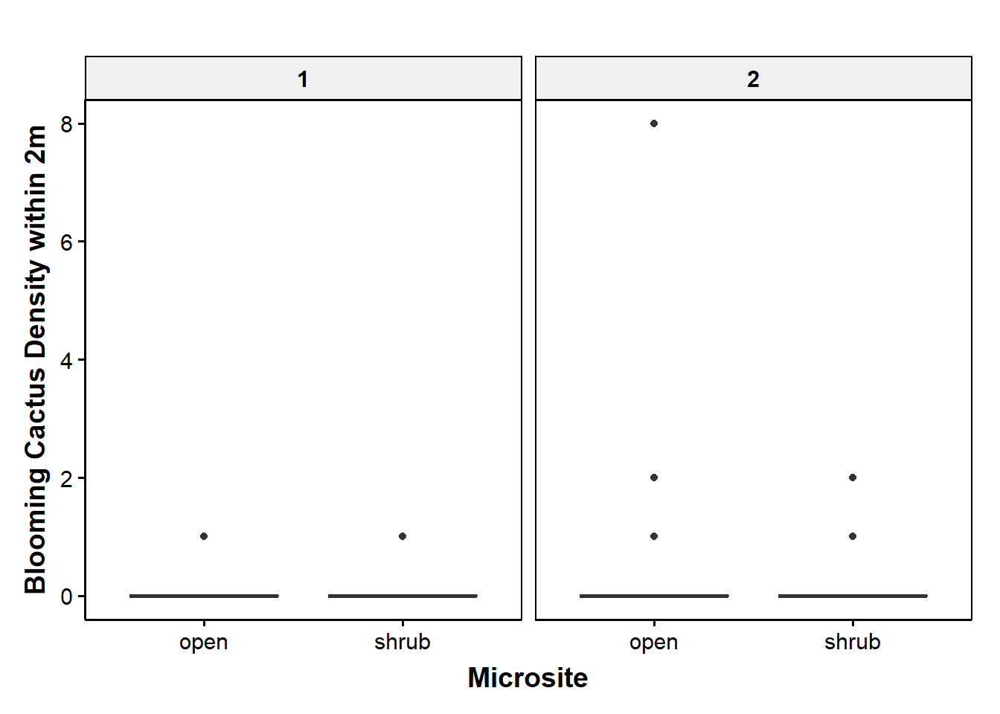
summary(g5.ps)## Generalized linear mixed model fit by maximum likelihood (Laplace
## Approximation) [glmerMod]
## Family: poisson ( log )
## Formula: het.cactus.blooming.neighbours ~ flowering * treatment + (1 |
## repID)
## Data: visits
##
## AIC BIC logLik deviance df.resid
## 157.5 174.7 -73.7 147.5 226
##
## Scaled residuals:
## Min 1Q Median 3Q Max
## -0.6090 -0.2047 -0.0650 -0.0494 3.6566
##
## Random effects:
## Groups Name Variance Std.Dev.
## repID (Intercept) 3.831 1.957
## Number of obs: 231, groups: repID, 122
##
## Fixed effects:
## Estimate Std. Error z value Pr(>|z|)
## (Intercept) -5.8452 1.2449 -4.695 2.66e-06 ***
## floweringbloom 2.8424 1.0296 2.761 0.00577 **
## treatmentshrub 0.3961 1.4973 0.265 0.79137
## floweringbloom:treatmentshrub -0.3329 1.4649 -0.227 0.82024
## ---
## Signif. codes: 0 '***' 0.001 '**' 0.01 '*' 0.05 '.' 0.1 ' ' 1
##
## Correlation of Fixed Effects:
## (Intr) flwrng trtmnt
## flowerngblm -0.778
## tretmntshrb -0.638 0.648
## flwrngblm:t 0.548 -0.703 -0.911summary(g5.ps.1)## Generalized linear mixed model fit by maximum likelihood (Laplace
## Approximation) [glmerMod]
## Family: poisson ( log )
## Formula: het.cactus.blooming.neighbours ~ flowering + treatment + (1 |
## repID)
## Data: visits
##
## AIC BIC logLik deviance df.resid
## 155.5 169.3 -73.8 147.5 227
##
## Scaled residuals:
## Min 1Q Median 3Q Max
## -0.6543 -0.2037 -0.0599 -0.0531 3.3669
##
## Random effects:
## Groups Name Variance Std.Dev.
## repID (Intercept) 3.83 1.957
## Number of obs: 231, groups: repID, 122
##
## Fixed effects:
## Estimate Std. Error z value Pr(>|z|)
## (Intercept) -5.70199 1.03650 -5.501 3.77e-08 ***
## floweringbloom 2.68982 0.73167 3.676 0.000237 ***
## treatmentshrub 0.08605 0.61835 0.139 0.889327
## ---
## Signif. codes: 0 '***' 0.001 '**' 0.01 '*' 0.05 '.' 0.1 ' ' 1
##
## Correlation of Fixed Effects:
## (Intr) flwrng
## flowerngblm -0.657
## tretmntshrb -0.388 0.001summary(g5.ps.null)## Generalized linear mixed model fit by maximum likelihood (Laplace
## Approximation) [glmerMod]
## Family: poisson ( log )
## Formula: het.cactus.blooming.neighbours ~ 1 + (1 | repID)
## Data: visits
##
## AIC BIC logLik deviance df.resid
## 180.0 186.9 -88.0 176.0 229
##
## Scaled residuals:
## Min 1Q Median 3Q Max
## -1.8363 -0.1503 -0.1503 -0.1503 2.5203
##
## Random effects:
## Groups Name Variance Std.Dev.
## repID (Intercept) 3.847 1.961
## Number of obs: 231, groups: repID, 122
##
## Fixed effects:
## Estimate Std. Error z value Pr(>|z|)
## (Intercept) -3.6166 0.6807 -5.313 1.08e-07 ***
## ---
## Signif. codes: 0 '***' 0.001 '**' 0.01 '*' 0.05 '.' 0.1 ' ' 1anova(g5.ps, g5.ps.null, g5.ps.1, test = "Chisq")## Data: visits
## Models:
## g5.ps.null: het.cactus.blooming.neighbours ~ 1 + (1 | repID)
## g5.ps.1: het.cactus.blooming.neighbours ~ flowering + treatment + (1 |
## g5.ps.1: repID)
## g5.ps: het.cactus.blooming.neighbours ~ flowering * treatment + (1 |
## g5.ps: repID)
## Df AIC BIC logLik deviance Chisq Chi Df Pr(>Chisq)
## g5.ps.null 2 179.99 186.87 -87.993 175.99
## g5.ps.1 4 155.55 169.32 -73.773 147.55 28.4391 2 6.676e-07 ***
## g5.ps 5 157.50 174.71 -73.747 147.50 0.0515 1 0.8206
## ---
## Signif. codes: 0 '***' 0.001 '**' 0.01 '*' 0.05 '.' 0.1 ' ' 1car::Anova(g5.ps.1, type = 2)## Analysis of Deviance Table (Type II Wald chisquare tests)
##
## Response: het.cactus.blooming.neighbours
## Chisq Df Pr(>Chisq)
## flowering 13.5151 1 0.0002367 ***
## treatment 0.0194 1 0.8893270
## ---
## Signif. codes: 0 '***' 0.001 '**' 0.01 '*' 0.05 '.' 0.1 ' ' 1AIC(g5.ps, g5.ps.1, g5.ps.null)## df AIC
## g5.ps 5 157.4947
## g5.ps.1 4 155.5462
## g5.ps.null 2 179.9853shapiro.test(residuals(g5.ps.1))##
## Shapiro-Wilk normality test
##
## data: residuals(g5.ps.1)
## W = 0.58843, p-value < 2.2e-16overdisp_fun(g5.ps.1)## chisq ratio rdf p
## 40.656836 0.179105 227.000000 1.000000sjt.glmer(g5.ps.1)| het.cactus.blooming.neighbours | ||||
| IRR | CI | p | ||
| Fixed Parts | ||||
| (Intercept) | 0.00 | 0.00 – 0.03 | <.001 | |
| flowering (bloom) | 14.73 | 3.51 – 61.80 | <.001 | |
| treatment (shrub) | 1.09 | 0.32 – 3.66 | .889 | |
| Random Parts | ||||
| τ00, repID | 3.830 | |||
| NrepID | 122 | |||
| ICCrepID | 0.793 | |||
| Observations | 231 | |||
| Deviance | 26.964 | |||
Pan traps
These are models for abundance, species richness for pan traps.
#models for pan trap data (abundance, diversity)
library(dplyr)
library(lme4)
library(ggplot2)
library(lsmeans)
library(vegan)
source(system.file("utils", "allFit.R", package="lme4"))
source("Scripts/functions.R")
#Melyrid's excluded
metadata <- read.csv("Clean Data/metadata_nobeetle.csv")
metadata$repID <- paste(metadata$plant.id, metadata$treatment)
metadata$blooming <- relevel(metadata$blooming, "pre")
sum(metadata$abun)## [1] 2144str(metadata)## 'data.frame': 228 obs. of 21 variables:
## $ X.1 : int 1 2 3 4 5 6 7 8 9 10 ...
## $ date : Factor w/ 19 levels "4.10.2017","4.11.2017",..: 1 1 1 1 1 1 1 1 1 1 ...
## $ mean.Solar : num 0.762 0.762 0.762 0.762 0.762 ...
## $ mean.Wind : num 5.15 5.15 5.15 5.15 5.15 5.15 5.15 5.15 5.15 5.15 ...
## $ mean.MaxWind : num 9.78 9.78 9.78 9.78 9.78 ...
## $ mean.Temp : num 18.4 18.4 18.4 18.4 18.4 ...
## $ plant.id : int 184 184 189 189 192 192 194 194 275 275 ...
## $ species : Factor w/ 1 level "larrea": 1 1 1 1 1 1 1 1 1 1 ...
## $ treatment : Factor w/ 2 levels "open","shrub": 1 2 1 2 1 2 1 2 1 2 ...
## $ blooming : Factor w/ 2 levels "pre","post": 1 1 1 1 1 1 1 1 1 1 ...
## $ percent.cover: int 10 70 2 25 15 40 3 40 2 20 ...
## $ rich : int 4 3 6 6 3 1 2 3 5 4 ...
## $ perennial : int NA NA NA NA NA NA NA NA NA NA ...
## $ X : Factor w/ 2 levels "","blue and white knocked over": 1 1 1 1 1 1 1 1 1 1 ...
## $ uniID : Factor w/ 228 levels "4.10.2017 184 open",..: 1 2 3 4 5 6 7 8 9 10 ...
## $ abun : int 12 14 18 16 21 30 13 11 0 27 ...
## $ H : num 1.31 1.22 2.43 1.75 1.72 ...
## $ Simpson : num 0.667 0.612 0.895 0.773 0.789 ...
## $ Species : int 5 5 13 8 7 12 6 6 0 10 ...
## $ Even : num 0.817 0.755 0.947 0.844 0.886 ...
## $ repID : chr "184 open" "184 shrub" "189 open" "189 shrub" ...ggplot(data = metadata, aes(abun)) + geom_freqpoly()## `stat_bin()` using `bins = 30`. Pick better value with `binwidth`.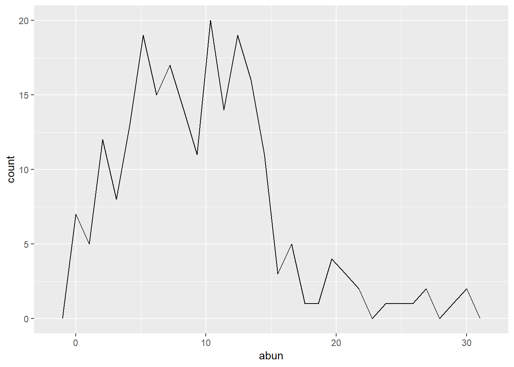
mean(metadata$abun)## [1] 9.403509sd(metadata$abun)## [1] 5.939073shapiro.test(metadata$abun)##
## Shapiro-Wilk normality test
##
## data: metadata$abun
## W = 0.9356, p-value = 1.843e-08ggplot(data = metadata, aes(treatment, abun)) + geom_boxplot() + facet_grid(~blooming)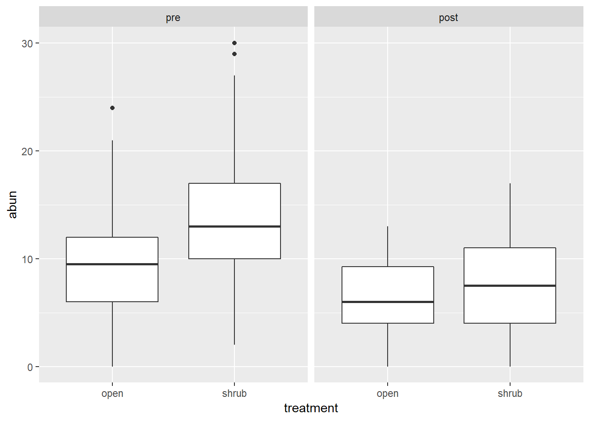
m1 <- glmer.nb(abun ~ treatment * blooming + (1|repID), data = metadata)
summary(m1)## Generalized linear mixed model fit by maximum likelihood (Laplace
## Approximation) [glmerMod]
## Family: Negative Binomial(4.9654) ( log )
## Formula: abun ~ treatment * blooming + (1 | repID)
## Data: metadata
##
## AIC BIC logLik deviance df.resid
## 1370.7 1391.3 -679.4 1358.7 222
##
## Scaled residuals:
## Min 1Q Median 3Q Max
## -1.81178 -0.65857 -0.09689 0.62500 2.67782
##
## Random effects:
## Groups Name Variance Std.Dev.
## repID (Intercept) 2.165e-11 4.653e-06
## Number of obs: 228, groups: repID, 126
##
## Fixed effects:
## Estimate Std. Error z value Pr(>|z|)
## (Intercept) 2.27060 0.07511 30.230 < 2e-16 ***
## treatmentshrub 0.40610 0.10317 3.936 8.28e-05 ***
## bloomingpost -0.39624 0.10750 -3.686 0.000228 ***
## treatmentshrub:bloomingpost -0.27673 0.14887 -1.859 0.063049 .
## ---
## Signif. codes: 0 '***' 0.001 '**' 0.01 '*' 0.05 '.' 0.1 ' ' 1
##
## Correlation of Fixed Effects:
## (Intr) trtmnt blmngp
## tretmntshrb -0.728
## bloomingpst -0.699 0.509
## trtmntshrb: 0.505 -0.693 -0.722lsmeans(m1, pairwise~blooming*treatment)## $lsmeans
## blooming treatment lsmean SE df asymp.LCL asymp.UCL
## pre open 2.270599 0.07511018 NA 2.123386 2.417812
## post open 1.874362 0.07690307 NA 1.723635 2.025089
## pre shrub 2.676699 0.07073451 NA 2.538061 2.815336
## post shrub 2.003732 0.07485807 NA 1.857013 2.150451
##
## Results are given on the log (not the response) scale.
## Confidence level used: 0.95
##
## $contrasts
## contrast estimate SE df z.ratio p.value
## pre,open - post,open 0.3962370 0.1074971 NA 3.686 0.0013
## pre,open - pre,shrub -0.4060998 0.1031742 NA -3.936 0.0005
## pre,open - post,shrub 0.2668669 0.1060437 NA 2.517 0.0574
## post,open - pre,shrub -0.8023367 0.1044866 NA -7.679 <.0001
## post,open - post,shrub -0.1293701 0.1073211 NA -1.205 0.6234
## pre,shrub - post,shrub 0.6729667 0.1029908 NA 6.534 <.0001
##
## Results are given on the log (not the response) scale.
## P value adjustment: tukey method for comparing a family of 4 estimatescar::Anova(m1, type = 3)## Analysis of Deviance Table (Type III Wald chisquare tests)
##
## Response: abun
## Chisq Df Pr(>Chisq)
## (Intercept) 913.8674 1 < 2.2e-16 ***
## treatment 15.4926 1 8.283e-05 ***
## blooming 13.5868 1 0.0002278 ***
## treatment:blooming 3.4553 1 0.0630487 .
## ---
## Signif. codes: 0 '***' 0.001 '**' 0.01 '*' 0.05 '.' 0.1 ' ' 1ggplot(metadata, aes(treatment, abun)) + geom_boxplot() + facet_grid(~blooming)m2 <- glmer.nb(abun ~ treatment + blooming + (1|repID), data = metadata)
summary(m2)## Generalized linear mixed model fit by maximum likelihood (Laplace
## Approximation) [glmerMod]
## Family: Negative Binomial(4.8347) ( log )
## Formula: abun ~ treatment + blooming + (1 | repID)
## Data: metadata
##
## AIC BIC logLik deviance df.resid
## 1372.2 1389.3 -681.1 1362.2 223
##
## Scaled residuals:
## Min 1Q Median 3Q Max
## -1.81674 -0.67562 -0.07008 0.55189 2.37524
##
## Random effects:
## Groups Name Variance Std.Dev.
## repID (Intercept) 1.988e-11 4.459e-06
## Number of obs: 228, groups: repID, 126
##
## Fixed effects:
## Estimate Std. Error z value Pr(>|z|)
## (Intercept) 2.34192 0.06597 35.500 < 2e-16 ***
## treatmentshrub 0.27310 0.07506 3.638 0.000275 ***
## bloomingpost -0.54087 0.07503 -7.208 5.67e-13 ***
## ---
## Signif. codes: 0 '***' 0.001 '**' 0.01 '*' 0.05 '.' 0.1 ' ' 1
##
## Correlation of Fixed Effects:
## (Intr) trtmnt
## tretmntshrb -0.618
## bloomingpst -0.566 0.036m3 <- glmer.nb(abun ~ (1|repID), data = metadata)
anova(m1, m2, m3, test = "Chisq")## Data: metadata
## Models:
## m3: abun ~ (1 | repID)
## m2: abun ~ treatment + blooming + (1 | repID)
## m1: abun ~ treatment * blooming + (1 | repID)
## Df AIC BIC logLik deviance Chisq Chi Df Pr(>Chisq)
## m3 3 1426.5 1436.8 -710.27 1420.5
## m2 5 1372.2 1389.3 -681.08 1362.2 58.3768 2 2.107e-13 ***
## m1 6 1370.7 1391.3 -679.37 1358.7 3.4254 1 0.0642 .
## ---
## Signif. codes: 0 '***' 0.001 '**' 0.01 '*' 0.05 '.' 0.1 ' ' 1AIC(m1, m2)## df AIC
## m1 6 1370.733
## m2 5 1372.159summary(m1)## Generalized linear mixed model fit by maximum likelihood (Laplace
## Approximation) [glmerMod]
## Family: Negative Binomial(4.9654) ( log )
## Formula: abun ~ treatment * blooming + (1 | repID)
## Data: metadata
##
## AIC BIC logLik deviance df.resid
## 1370.7 1391.3 -679.4 1358.7 222
##
## Scaled residuals:
## Min 1Q Median 3Q Max
## -1.81178 -0.65857 -0.09689 0.62500 2.67782
##
## Random effects:
## Groups Name Variance Std.Dev.
## repID (Intercept) 2.165e-11 4.653e-06
## Number of obs: 228, groups: repID, 126
##
## Fixed effects:
## Estimate Std. Error z value Pr(>|z|)
## (Intercept) 2.27060 0.07511 30.230 < 2e-16 ***
## treatmentshrub 0.40610 0.10317 3.936 8.28e-05 ***
## bloomingpost -0.39624 0.10750 -3.686 0.000228 ***
## treatmentshrub:bloomingpost -0.27673 0.14887 -1.859 0.063049 .
## ---
## Signif. codes: 0 '***' 0.001 '**' 0.01 '*' 0.05 '.' 0.1 ' ' 1
##
## Correlation of Fixed Effects:
## (Intr) trtmnt blmngp
## tretmntshrb -0.728
## bloomingpst -0.699 0.509
## trtmntshrb: 0.505 -0.693 -0.722m4 <- glmer.nb(abun ~ treatment + blooming + (1|repID), data = metadata)
summary(m4)## Generalized linear mixed model fit by maximum likelihood (Laplace
## Approximation) [glmerMod]
## Family: Negative Binomial(4.8347) ( log )
## Formula: abun ~ treatment + blooming + (1 | repID)
## Data: metadata
##
## AIC BIC logLik deviance df.resid
## 1372.2 1389.3 -681.1 1362.2 223
##
## Scaled residuals:
## Min 1Q Median 3Q Max
## -1.81674 -0.67562 -0.07008 0.55189 2.37524
##
## Random effects:
## Groups Name Variance Std.Dev.
## repID (Intercept) 1.988e-11 4.459e-06
## Number of obs: 228, groups: repID, 126
##
## Fixed effects:
## Estimate Std. Error z value Pr(>|z|)
## (Intercept) 2.34192 0.06597 35.500 < 2e-16 ***
## treatmentshrub 0.27310 0.07506 3.638 0.000275 ***
## bloomingpost -0.54087 0.07503 -7.208 5.67e-13 ***
## ---
## Signif. codes: 0 '***' 0.001 '**' 0.01 '*' 0.05 '.' 0.1 ' ' 1
##
## Correlation of Fixed Effects:
## (Intr) trtmnt
## tretmntshrb -0.618
## bloomingpst -0.566 0.036#with beetles
beetle <- read.csv("Clean Data/metadata_yesbeetle.csv")
beetle$repID <- paste(beetle$plant.id, beetle$treatment)
beetle$blooming <- relevel(beetle$blooming, "pre")
sum(beetle$abun)## [1] 3387str(beetle)## 'data.frame': 228 obs. of 21 variables:
## $ X.1 : int 1 2 3 4 5 6 7 8 9 10 ...
## $ date : Factor w/ 19 levels "4.10.2017","4.11.2017",..: 1 1 1 1 1 1 1 1 1 1 ...
## $ mean.Solar : num 0.762 0.762 0.762 0.762 0.762 ...
## $ mean.Wind : num 5.15 5.15 5.15 5.15 5.15 5.15 5.15 5.15 5.15 5.15 ...
## $ mean.MaxWind : num 9.78 9.78 9.78 9.78 9.78 ...
## $ mean.Temp : num 18.4 18.4 18.4 18.4 18.4 ...
## $ plant.id : int 184 184 189 189 192 192 194 194 275 275 ...
## $ species : Factor w/ 1 level "larrea": 1 1 1 1 1 1 1 1 1 1 ...
## $ treatment : Factor w/ 2 levels "open","shrub": 1 2 1 2 1 2 1 2 1 2 ...
## $ blooming : Factor w/ 2 levels "pre","post": 1 1 1 1 1 1 1 1 1 1 ...
## $ percent.cover: int 10 70 2 25 15 40 3 40 2 20 ...
## $ rich : int 4 3 6 6 3 1 2 3 5 4 ...
## $ perennial : int NA NA NA NA NA NA NA NA NA NA ...
## $ X : Factor w/ 2 levels "","blue and white knocked over": 1 1 1 1 1 1 1 1 1 1 ...
## $ uniID : Factor w/ 228 levels "4.10.2017 184 open",..: 1 2 3 4 5 6 7 8 9 10 ...
## $ abun : int 18 16 20 18 22 30 20 11 0 29 ...
## $ H : num 1.51 1.44 2.51 1.91 1.83 ...
## $ Simpson : num 0.741 0.688 0.905 0.809 0.806 ...
## $ Species : int 6 6 14 9 8 12 7 6 0 11 ...
## $ Even : num 0.844 0.804 0.951 0.868 0.88 ...
## $ repID : chr "184 open" "184 shrub" "189 open" "189 shrub" ...sum(beetle$H)## [1] 357.8503ggplot(data = beetle, aes(abun)) + geom_freqpoly()## `stat_bin()` using `bins = 30`. Pick better value with `binwidth`.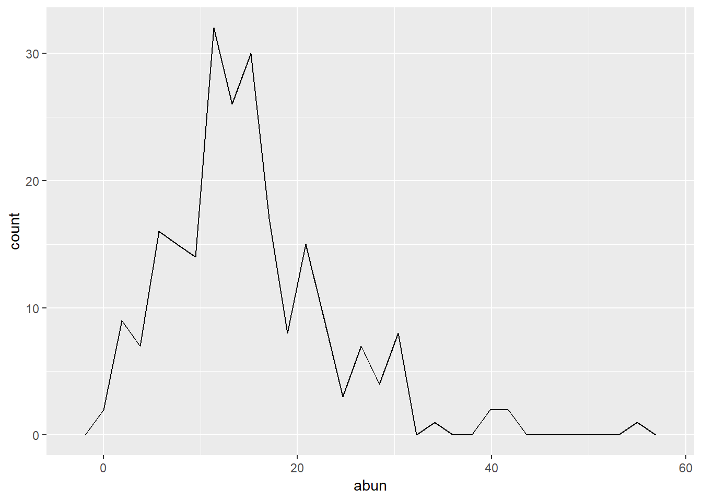
mean(beetle$abun)## [1] 14.85526sd(beetle$abun)## [1] 8.305357m1 <- glmer.nb(abun ~ blooming + treatment + (1|repID), data = beetle)
summary(m1)## Generalized linear mixed model fit by maximum likelihood (Laplace
## Approximation) [glmerMod]
## Family: Negative Binomial(5.3911) ( log )
## Formula: abun ~ blooming + treatment + (1 | repID)
## Data: beetle
##
## AIC BIC logLik deviance df.resid
## 1560.1 1577.3 -775.1 1550.1 223
##
## Scaled residuals:
## Min 1Q Median 3Q Max
## -2.02042 -0.65042 -0.06979 0.51975 3.09742
##
## Random effects:
## Groups Name Variance Std.Dev.
## repID (Intercept) 0.02596 0.1611
## Number of obs: 228, groups: repID, 126
##
## Fixed effects:
## Estimate Std. Error z value Pr(>|z|)
## (Intercept) 2.91426 0.06300 46.258 < 2e-16 ***
## bloomingpost -0.39280 0.06781 -5.792 6.93e-09 ***
## treatmentshrub -0.09872 0.07342 -1.345 0.179
## ---
## Signif. codes: 0 '***' 0.001 '**' 0.01 '*' 0.05 '.' 0.1 ' ' 1
##
## Correlation of Fixed Effects:
## (Intr) blmngp
## bloomingpst -0.531
## tretmntshrb -0.590 0.010car::Anova(m1, type = 2)## Analysis of Deviance Table (Type II Wald chisquare tests)
##
## Response: abun
## Chisq Df Pr(>Chisq)
## blooming 33.553 1 6.935e-09 ***
## treatment 1.808 1 0.1787
## ---
## Signif. codes: 0 '***' 0.001 '**' 0.01 '*' 0.05 '.' 0.1 ' ' 1cat_plot(m1, pred = blooming, modx = treatment)## Confidence intervals for merMod models is an experimental feature. The
## intervals reflect only the variance of the fixed effects, not the
## random effects.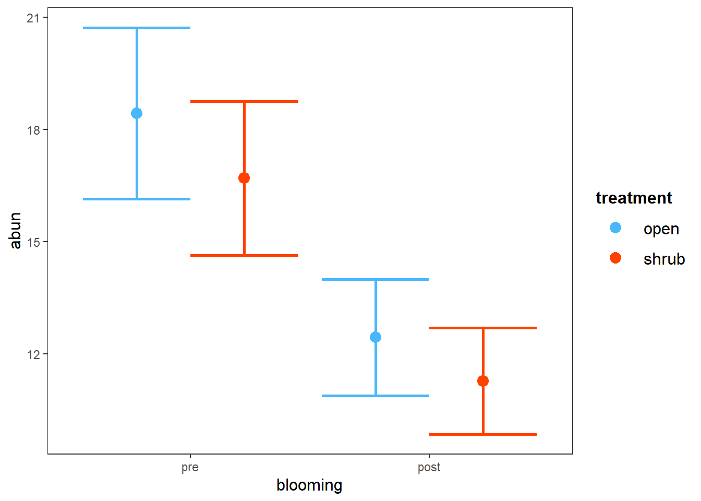
m2 <- glmer.nb(abun ~ blooming * treatment + (1|repID), data = beetle)
summary(m2)## Generalized linear mixed model fit by maximum likelihood (Laplace
## Approximation) [glmerMod]
## Family: Negative Binomial(5.402) ( log )
## Formula: abun ~ blooming * treatment + (1 | repID)
## Data: beetle
##
## AIC BIC logLik deviance df.resid
## 1561.8 1582.4 -774.9 1549.8 222
##
## Scaled residuals:
## Min 1Q Median 3Q Max
## -2.0171 -0.6449 -0.0626 0.5190 3.1798
##
## Random effects:
## Groups Name Variance Std.Dev.
## repID (Intercept) 0.02593 0.161
## Number of obs: 228, groups: repID, 126
##
## Fixed effects:
## Estimate Std. Error z value Pr(>|z|)
## (Intercept) 2.89606 0.07121 40.672 < 2e-16 ***
## bloomingpost -0.35695 0.09513 -3.752 0.000175 ***
## treatmentshrub -0.06227 0.09992 -0.623 0.533179
## bloomingpost:treatmentshrub -0.07255 0.13508 -0.537 0.591203
## ---
## Signif. codes: 0 '***' 0.001 '**' 0.01 '*' 0.05 '.' 0.1 ' ' 1
##
## Correlation of Fixed Effects:
## (Intr) blmngp trtmnt
## bloomingpst -0.663
## tretmntshrb -0.700 0.478
## blmngpst:tr 0.472 -0.702 -0.679m3 <- glmer.nb(abun ~ (1|repID), data = beetle)
summary(m3)## Generalized linear mixed model fit by maximum likelihood (Laplace
## Approximation) [glmerMod]
## Family: Negative Binomial(3.9114) ( log )
## Formula: abun ~ (1 | repID)
## Data: beetle
##
## AIC BIC logLik deviance df.resid
## 1586.9 1597.2 -790.5 1580.9 225
##
## Scaled residuals:
## Min 1Q Median 3Q Max
## -1.7596 -0.5751 -0.1013 0.4909 4.7551
##
## Random effects:
## Groups Name Variance Std.Dev.
## repID (Intercept) 0 0
## Number of obs: 228, groups: repID, 126
##
## Fixed effects:
## Estimate Std. Error z value Pr(>|z|)
## (Intercept) 2.69835 0.03764 71.69 <2e-16 ***
## ---
## Signif. codes: 0 '***' 0.001 '**' 0.01 '*' 0.05 '.' 0.1 ' ' 1anova(m1, m2, m3)## Data: beetle
## Models:
## m3: abun ~ (1 | repID)
## m1: abun ~ blooming + treatment + (1 | repID)
## m2: abun ~ blooming * treatment + (1 | repID)
## Df AIC BIC logLik deviance Chisq Chi Df Pr(>Chisq)
## m3 3 1586.9 1597.2 -790.46 1580.9
## m1 5 1560.1 1577.3 -775.05 1550.1 30.8081 2 2.042e-07 ***
## m2 6 1561.8 1582.4 -774.91 1549.8 0.2883 1 0.5913
## ---
## Signif. codes: 0 '***' 0.001 '**' 0.01 '*' 0.05 '.' 0.1 ' ' 1AIC(m1, m2, m3)## df AIC
## m1 5 1560.108
## m2 6 1561.820
## m3 3 1586.917summary(m1)## Generalized linear mixed model fit by maximum likelihood (Laplace
## Approximation) [glmerMod]
## Family: Negative Binomial(5.3911) ( log )
## Formula: abun ~ blooming + treatment + (1 | repID)
## Data: beetle
##
## AIC BIC logLik deviance df.resid
## 1560.1 1577.3 -775.1 1550.1 223
##
## Scaled residuals:
## Min 1Q Median 3Q Max
## -2.02042 -0.65042 -0.06979 0.51975 3.09742
##
## Random effects:
## Groups Name Variance Std.Dev.
## repID (Intercept) 0.02596 0.1611
## Number of obs: 228, groups: repID, 126
##
## Fixed effects:
## Estimate Std. Error z value Pr(>|z|)
## (Intercept) 2.91426 0.06300 46.258 < 2e-16 ***
## bloomingpost -0.39280 0.06781 -5.792 6.93e-09 ***
## treatmentshrub -0.09872 0.07342 -1.345 0.179
## ---
## Signif. codes: 0 '***' 0.001 '**' 0.01 '*' 0.05 '.' 0.1 ' ' 1
##
## Correlation of Fixed Effects:
## (Intr) blmngp
## bloomingpst -0.531
## tretmntshrb -0.590 0.010car::Anova(m1, Type = 2)## Analysis of Deviance Table (Type II Wald chisquare tests)
##
## Response: abun
## Chisq Df Pr(>Chisq)
## blooming 33.553 1 6.935e-09 ***
## treatment 1.808 1 0.1787
## ---
## Signif. codes: 0 '***' 0.001 '**' 0.01 '*' 0.05 '.' 0.1 ' ' 1#poisson not awesome
m2 <- glmer(abun ~ treatment + blooming + (1|repID), family = poisson(link="log"), data = beetle)
anova(m1, m2, test = "Chisq")## Data: beetle
## Models:
## m2: abun ~ treatment + blooming + (1 | repID)
## m1: abun ~ blooming + treatment + (1 | repID)
## Df AIC BIC logLik deviance Chisq Chi Df Pr(>Chisq)
## m2 4 1672.7 1686.4 -832.34 1664.7
## m1 5 1560.1 1577.3 -775.05 1550.1 114.58 1 < 2.2e-16 ***
## ---
## Signif. codes: 0 '***' 0.001 '**' 0.01 '*' 0.05 '.' 0.1 ' ' 1AIC(m1, m2)## df AIC
## m1 5 1560.108
## m2 4 1672.690#only beetles
onlybeetle <- read.csv("Clean Data/metadata_onlybeetle.csv")
onlybeetle$repID <- paste(onlybeetle$plant.id, onlybeetle$treatment)
onlybeetle$blooming <- relevel(onlybeetle$blooming, "pre")
sum(onlybeetle$abun)## [1] 1243str(beetle)## 'data.frame': 228 obs. of 21 variables:
## $ X.1 : int 1 2 3 4 5 6 7 8 9 10 ...
## $ date : Factor w/ 19 levels "4.10.2017","4.11.2017",..: 1 1 1 1 1 1 1 1 1 1 ...
## $ mean.Solar : num 0.762 0.762 0.762 0.762 0.762 ...
## $ mean.Wind : num 5.15 5.15 5.15 5.15 5.15 5.15 5.15 5.15 5.15 5.15 ...
## $ mean.MaxWind : num 9.78 9.78 9.78 9.78 9.78 ...
## $ mean.Temp : num 18.4 18.4 18.4 18.4 18.4 ...
## $ plant.id : int 184 184 189 189 192 192 194 194 275 275 ...
## $ species : Factor w/ 1 level "larrea": 1 1 1 1 1 1 1 1 1 1 ...
## $ treatment : Factor w/ 2 levels "open","shrub": 1 2 1 2 1 2 1 2 1 2 ...
## $ blooming : Factor w/ 2 levels "pre","post": 1 1 1 1 1 1 1 1 1 1 ...
## $ percent.cover: int 10 70 2 25 15 40 3 40 2 20 ...
## $ rich : int 4 3 6 6 3 1 2 3 5 4 ...
## $ perennial : int NA NA NA NA NA NA NA NA NA NA ...
## $ X : Factor w/ 2 levels "","blue and white knocked over": 1 1 1 1 1 1 1 1 1 1 ...
## $ uniID : Factor w/ 228 levels "4.10.2017 184 open",..: 1 2 3 4 5 6 7 8 9 10 ...
## $ abun : int 18 16 20 18 22 30 20 11 0 29 ...
## $ H : num 1.51 1.44 2.51 1.91 1.83 ...
## $ Simpson : num 0.741 0.688 0.905 0.809 0.806 ...
## $ Species : int 6 6 14 9 8 12 7 6 0 11 ...
## $ Even : num 0.844 0.804 0.951 0.868 0.88 ...
## $ repID : chr "184 open" "184 shrub" "189 open" "189 shrub" ...ggplot(data = onlybeetle, aes(abun)) + geom_freqpoly()## `stat_bin()` using `bins = 30`. Pick better value with `binwidth`.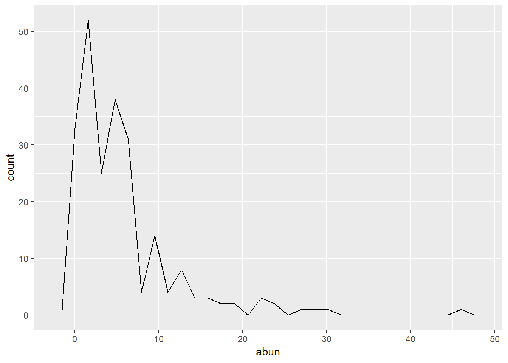
mean(onlybeetle$abun)## [1] 5.451754sd(onlybeetle$abun)## [1] 6.256088m1 <- glmer.nb(abun ~ blooming * treatment + (1|repID), data = onlybeetle)## Warning in checkConv(attr(opt, "derivs"), opt$par, ctrl = control
## $checkConv, : Model failed to converge with max|grad| = 0.00602362 (tol =
## 0.001, component 1)fm1 <- m1
diag.vals <- getME(fm1,"theta")[getME(fm1,"lower") == 0]
any(diag.vals < 1e-6) # FALSE## [1] FALSE#recompute Hessian
devfun <- update(fm1, devFunOnly=TRUE)
if (isLMM(fm1)) {
pars <- getME(fm1,"theta")
} else {
## GLMM: requires both random and fixed parameters
pars <- getME(fm1, c("theta","fixef"))
}
if (require("numDeriv")) {
cat("hess:\n"); print(hess <- hessian(devfun, unlist(pars)))
cat("grad:\n"); print(grad <- grad(devfun, unlist(pars)))
cat("scaled gradient:\n")
print(scgrad <- solve(chol(hess), grad))
}## hess:
## [,1] [,2] [,3] [,4] [,5]
## [1,] 374.77960 157.0054 81.92322 76.64419 44.14798
## [2,] 157.00542 410.0408 219.97279 186.27982 105.08265
## [3,] 81.92322 219.9728 253.81053 102.90786 138.40585
## [4,] 76.64419 186.2798 102.90786 190.45799 103.92094
## [5,] 44.14798 105.0826 138.40585 103.92094 117.99659
## grad:
## [1] 0.022310308 0.005822110 0.003832906 0.003828149 0.003172394
## scaled gradient:
## [1] 1.010061e-03 2.314011e-04 -1.907448e-04 -7.074646e-05 8.624951e-04## compare with internal calculations:
fm1@optinfo$derivs## $gradient
## [1] 5.751792e-04 -2.921979e-04 3.242349e-06 -2.700062e-05 1.885655e-04
##
## $Hessian
## [,1] [,2] [,3] [,4] [,5]
## [1,] 327.17220 160.5803 87.4977 86.88036 46.60773
## [2,] 160.58034 409.4758 219.6920 187.08856 104.69928
## [3,] 87.49770 219.6920 253.7533 104.69929 119.30774
## [4,] 86.88036 187.0886 104.6993 187.08862 104.69929
## [5,] 46.60773 104.6993 119.3077 104.69929 119.30775#restart model from different point
fm1.restart <- update(fm1, start=pars)
##no errors
#all <- allFit(fm1.restart)
summary(fm1.restart)## Generalized linear mixed model fit by maximum likelihood (Laplace
## Approximation) [glmerMod]
## Family: Negative Binomial(1.7805) ( log )
## Formula: abun ~ blooming * treatment + (1 | repID)
## Data: onlybeetle
##
## AIC BIC logLik deviance df.resid
## 1234.0 1254.5 -611.0 1222.0 222
##
## Scaled residuals:
## Min 1Q Median 3Q Max
## -1.2192 -0.6600 -0.1837 0.3996 3.0899
##
## Random effects:
## Groups Name Variance Std.Dev.
## repID (Intercept) 0.153 0.3912
## Number of obs: 228, groups: repID, 126
##
## Fixed effects:
## Estimate Std. Error z value Pr(>|z|)
## (Intercept) 2.0598 0.1299 15.860 < 2e-16 ***
## bloomingpost -0.2989 0.1633 -1.830 0.06727 .
## treatmentshrub -1.1920 0.1933 -6.168 6.93e-10 ***
## bloomingpost:treatmentshrub 0.6521 0.2442 2.670 0.00758 **
## ---
## Signif. codes: 0 '***' 0.001 '**' 0.01 '*' 0.05 '.' 0.1 ' ' 1
##
## Correlation of Fixed Effects:
## (Intr) blmngp trtmnt
## bloomingpst -0.646
## tretmntshrb -0.626 0.438
## blmngpst:tr 0.430 -0.669 -0.685m1 <- fm1.restart
summary(m1)## Generalized linear mixed model fit by maximum likelihood (Laplace
## Approximation) [glmerMod]
## Family: Negative Binomial(1.7805) ( log )
## Formula: abun ~ blooming * treatment + (1 | repID)
## Data: onlybeetle
##
## AIC BIC logLik deviance df.resid
## 1234.0 1254.5 -611.0 1222.0 222
##
## Scaled residuals:
## Min 1Q Median 3Q Max
## -1.2192 -0.6600 -0.1837 0.3996 3.0899
##
## Random effects:
## Groups Name Variance Std.Dev.
## repID (Intercept) 0.153 0.3912
## Number of obs: 228, groups: repID, 126
##
## Fixed effects:
## Estimate Std. Error z value Pr(>|z|)
## (Intercept) 2.0598 0.1299 15.860 < 2e-16 ***
## bloomingpost -0.2989 0.1633 -1.830 0.06727 .
## treatmentshrub -1.1920 0.1933 -6.168 6.93e-10 ***
## bloomingpost:treatmentshrub 0.6521 0.2442 2.670 0.00758 **
## ---
## Signif. codes: 0 '***' 0.001 '**' 0.01 '*' 0.05 '.' 0.1 ' ' 1
##
## Correlation of Fixed Effects:
## (Intr) blmngp trtmnt
## bloomingpst -0.646
## tretmntshrb -0.626 0.438
## blmngpst:tr 0.430 -0.669 -0.685car::Anova(m1, type = 3)## Analysis of Deviance Table (Type III Wald chisquare tests)
##
## Response: abun
## Chisq Df Pr(>Chisq)
## (Intercept) 251.5248 1 < 2.2e-16 ***
## blooming 3.3485 1 0.067267 .
## treatment 38.0394 1 6.933e-10 ***
## blooming:treatment 7.1290 1 0.007585 **
## ---
## Signif. codes: 0 '***' 0.001 '**' 0.01 '*' 0.05 '.' 0.1 ' ' 1lsmeans(m1, pairwise~blooming*treatment)## $lsmeans
## blooming treatment lsmean SE df asymp.LCL asymp.UCL
## pre open 2.0597570 0.1298750 NA 1.8052066 2.314307
## post open 1.7608480 0.1270542 NA 1.5118264 2.009870
## pre shrub 0.8677508 0.1509390 NA 0.5719157 1.163586
## post shrub 1.2209496 0.1364567 NA 0.9534994 1.488400
##
## Results are given on the log (not the response) scale.
## Confidence level used: 0.95
##
## $contrasts
## contrast estimate SE df z.ratio p.value
## pre,open - post,open 0.2989089 0.1633482 NA 1.830 0.2592
## pre,open - pre,shrub 1.1920062 0.1932688 NA 6.168 <.0001
## pre,open - post,shrub 0.8388073 0.1826136 NA 4.593 <.0001
## post,open - pre,shrub 0.8930973 0.1906721 NA 4.684 <.0001
## post,open - post,shrub 0.5398984 0.1799142 NA 3.001 0.0143
## pre,shrub - post,shrub -0.3531989 0.1815186 NA -1.946 0.2090
##
## Results are given on the log (not the response) scale.
## P value adjustment: tukey method for comparing a family of 4 estimatesm2 <- glmer.nb(abun ~ blooming + treatment + (1|repID), data = onlybeetle)## Warning in checkConv(attr(opt, "derivs"), opt$par, ctrl = control
## $checkConv, : Model failed to converge with max|grad| = 0.028498 (tol =
## 0.001, component 1)fm1 <- m2
diag.vals <- getME(fm1,"theta")[getME(fm1,"lower") == 0]
any(diag.vals < 1e-6) # FALSE## [1] FALSE#recompute Hessian
devfun <- update(fm1, devFunOnly=TRUE)
if (isLMM(fm1)) {
pars <- getME(fm1,"theta")
} else {
## GLMM: requires both random and fixed parameters
pars <- getME(fm1, c("theta","fixef"))
}
if (require("numDeriv")) {
cat("hess:\n"); print(hess <- hessian(devfun, unlist(pars)))
cat("grad:\n"); print(grad <- grad(devfun, unlist(pars)))
cat("scaled gradient:\n")
print(scgrad <- solve(chol(hess), grad))
}## hess:
## [,1] [,2] [,3] [,4]
## [1,] 347.07136 158.4380 80.80694 74.22022
## [2,] 158.43804 405.9389 213.19460 184.96801
## [3,] 80.80694 213.1946 241.70885 106.77299
## [4,] 74.22022 184.9680 106.77299 191.82729
## grad:
## [1] 0.017343517 0.004969494 0.002728324 0.002942829
## scaled gradient:
## [1] 8.065661e-04 2.771826e-05 2.183715e-04 2.847417e-04## compare with internal calculations:
fm1@optinfo$derivs## $gradient
## [1] 1.151834e-03 1.413378e-04 -3.000389e-04 -4.314757e-05
##
## $Hessian
## [,1] [,2] [,3] [,4]
## [1,] 311.42871 161.0856 85.45057 85.70089
## [2,] 161.08556 405.4627 213.09777 186.07122
## [3,] 85.45057 213.0978 241.72162 108.40545
## [4,] 85.70089 186.0712 108.40545 186.07114#restart model from different point
fm1.restart <- update(fm1, start=pars)
##no errors
#all <- allFit(fm1.restart)
summary(fm1.restart)## Generalized linear mixed model fit by maximum likelihood (Laplace
## Approximation) [glmerMod]
## Family: Negative Binomial(1.6471) ( log )
## Formula: abun ~ blooming + treatment + (1 | repID)
## Data: onlybeetle
##
## AIC BIC logLik deviance df.resid
## 1238.9 1256.1 -614.5 1228.9 223
##
## Scaled residuals:
## Min 1Q Median 3Q Max
## -1.1610 -0.6363 -0.1987 0.3878 3.6489
##
## Random effects:
## Groups Name Variance Std.Dev.
## repID (Intercept) 0.1368 0.3699
## Number of obs: 228, groups: repID, 126
##
## Fixed effects:
## Estimate Std. Error z value Pr(>|z|)
## (Intercept) 1.924014 0.116727 16.483 < 2e-16 ***
## bloomingpost -0.005723 0.124706 -0.046 0.963
## treatmentshrub -0.839554 0.141948 -5.915 3.33e-09 ***
## ---
## Signif. codes: 0 '***' 0.001 '**' 0.01 '*' 0.05 '.' 0.1 ' ' 1
##
## Correlation of Fixed Effects:
## (Intr) blmngp
## bloomingpst -0.510
## tretmntshrb -0.483 -0.093m2 <- fm1.restart
summary(m2)## Generalized linear mixed model fit by maximum likelihood (Laplace
## Approximation) [glmerMod]
## Family: Negative Binomial(1.6471) ( log )
## Formula: abun ~ blooming + treatment + (1 | repID)
## Data: onlybeetle
##
## AIC BIC logLik deviance df.resid
## 1238.9 1256.1 -614.5 1228.9 223
##
## Scaled residuals:
## Min 1Q Median 3Q Max
## -1.1610 -0.6363 -0.1987 0.3878 3.6489
##
## Random effects:
## Groups Name Variance Std.Dev.
## repID (Intercept) 0.1368 0.3699
## Number of obs: 228, groups: repID, 126
##
## Fixed effects:
## Estimate Std. Error z value Pr(>|z|)
## (Intercept) 1.924014 0.116727 16.483 < 2e-16 ***
## bloomingpost -0.005723 0.124706 -0.046 0.963
## treatmentshrub -0.839554 0.141948 -5.915 3.33e-09 ***
## ---
## Signif. codes: 0 '***' 0.001 '**' 0.01 '*' 0.05 '.' 0.1 ' ' 1
##
## Correlation of Fixed Effects:
## (Intr) blmngp
## bloomingpst -0.510
## tretmntshrb -0.483 -0.093m3 <- glmer.nb(abun ~ (1|repID), data = onlybeetle)
# cant do this not nested anova(m1, m2, m3, m4, test = "Chisq")
AIC(m1, m2, m3)## df AIC
## m1 6 1233.972
## m2 5 1238.927
## m3 3 1267.488anova(m1, m2, m3)## Data: onlybeetle
## Models:
## m3: abun ~ (1 | repID)
## m2: abun ~ blooming + treatment + (1 | repID)
## m1: abun ~ blooming * treatment + (1 | repID)
## Df AIC BIC logLik deviance Chisq Chi Df Pr(>Chisq)
## m3 3 1267.5 1277.8 -630.74 1261.5
## m2 5 1238.9 1256.1 -614.46 1228.9 32.5610 2 8.501e-08 ***
## m1 6 1234.0 1254.5 -610.99 1222.0 6.9548 1 0.00836 **
## ---
## Signif. codes: 0 '***' 0.001 '**' 0.01 '*' 0.05 '.' 0.1 ' ' 1car::Anova(m1, type = 3)## Analysis of Deviance Table (Type III Wald chisquare tests)
##
## Response: abun
## Chisq Df Pr(>Chisq)
## (Intercept) 251.5248 1 < 2.2e-16 ***
## blooming 3.3485 1 0.067267 .
## treatment 38.0394 1 6.933e-10 ***
## blooming:treatment 7.1290 1 0.007585 **
## ---
## Signif. codes: 0 '***' 0.001 '**' 0.01 '*' 0.05 '.' 0.1 ' ' 1summary(m1)## Generalized linear mixed model fit by maximum likelihood (Laplace
## Approximation) [glmerMod]
## Family: Negative Binomial(1.7805) ( log )
## Formula: abun ~ blooming * treatment + (1 | repID)
## Data: onlybeetle
##
## AIC BIC logLik deviance df.resid
## 1234.0 1254.5 -611.0 1222.0 222
##
## Scaled residuals:
## Min 1Q Median 3Q Max
## -1.2192 -0.6600 -0.1837 0.3996 3.0899
##
## Random effects:
## Groups Name Variance Std.Dev.
## repID (Intercept) 0.153 0.3912
## Number of obs: 228, groups: repID, 126
##
## Fixed effects:
## Estimate Std. Error z value Pr(>|z|)
## (Intercept) 2.0598 0.1299 15.860 < 2e-16 ***
## bloomingpost -0.2989 0.1633 -1.830 0.06727 .
## treatmentshrub -1.1920 0.1933 -6.168 6.93e-10 ***
## bloomingpost:treatmentshrub 0.6521 0.2442 2.670 0.00758 **
## ---
## Signif. codes: 0 '***' 0.001 '**' 0.01 '*' 0.05 '.' 0.1 ' ' 1
##
## Correlation of Fixed Effects:
## (Intr) blmngp trtmnt
## bloomingpst -0.646
## tretmntshrb -0.626 0.438
## blmngpst:tr 0.430 -0.669 -0.685car::Anova(m2, type = 2)## Analysis of Deviance Table (Type II Wald chisquare tests)
##
## Response: abun
## Chisq Df Pr(>Chisq)
## blooming 0.0021 1 0.9634
## treatment 34.9813 1 3.329e-09 ***
## ---
## Signif. codes: 0 '***' 0.001 '**' 0.01 '*' 0.05 '.' 0.1 ' ' 1AIC(m1)## [1] 1233.972anova(m1)## Analysis of Variance Table
## Df Sum Sq Mean Sq F value
## blooming 1 0.132 0.132 0.1320
## treatment 1 36.373 36.373 36.3726
## blooming:treatment 1 7.283 7.283 7.2833overdisp_fun(m3)## chisq ratio rdf p
## 171.5157545 0.7589193 226.0000000 0.9972104ggplot(metadata, aes(blooming, abun)) + geom_boxplot() + facet_grid(~treatment)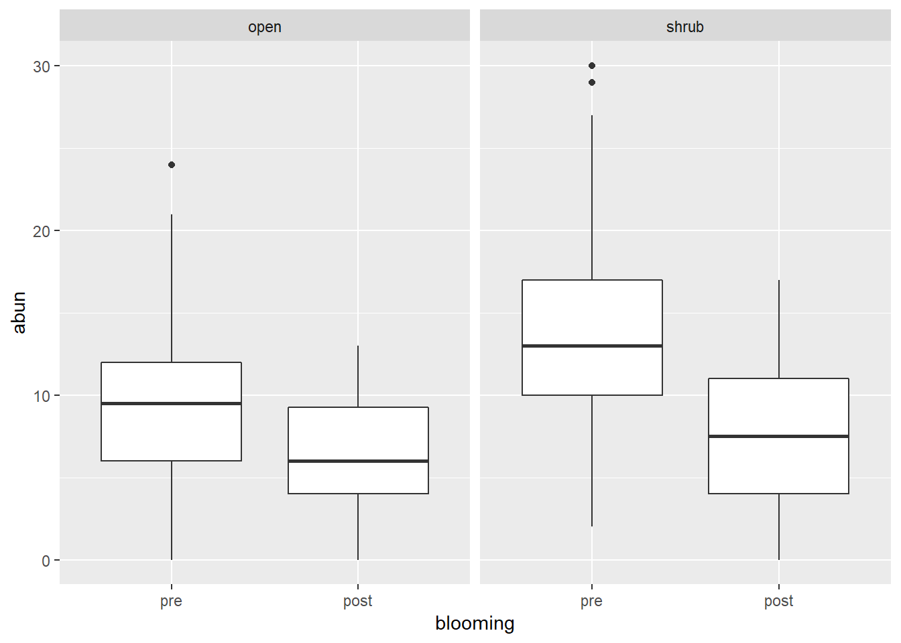
lsmeans(m1, pairwise~blooming*treatment)## $lsmeans
## blooming treatment lsmean SE df asymp.LCL asymp.UCL
## pre open 2.0597570 0.1298750 NA 1.8052066 2.314307
## post open 1.7608480 0.1270542 NA 1.5118264 2.009870
## pre shrub 0.8677508 0.1509390 NA 0.5719157 1.163586
## post shrub 1.2209496 0.1364567 NA 0.9534994 1.488400
##
## Results are given on the log (not the response) scale.
## Confidence level used: 0.95
##
## $contrasts
## contrast estimate SE df z.ratio p.value
## pre,open - post,open 0.2989089 0.1633482 NA 1.830 0.2592
## pre,open - pre,shrub 1.1920062 0.1932688 NA 6.168 <.0001
## pre,open - post,shrub 0.8388073 0.1826136 NA 4.593 <.0001
## post,open - pre,shrub 0.8930973 0.1906721 NA 4.684 <.0001
## post,open - post,shrub 0.5398984 0.1799142 NA 3.001 0.0143
## pre,shrub - post,shrub -0.3531989 0.1815186 NA -1.946 0.2090
##
## Results are given on the log (not the response) scale.
## P value adjustment: tukey method for comparing a family of 4 estimates#rescale percent cover
beetle$cover <- beetle$percent.cover/100
#Species Richness
#all insects
shapiro.test(beetle$Species)##
## Shapiro-Wilk normality test
##
## data: beetle$Species
## W = 0.98674, p-value = 0.03252#it's so close to normal I'm going to try linear models
s1 <- glmer(Species ~ blooming + treatment + (1|repID), family = poisson, data = beetle)
#s2 <- glmer.nb(Species ~ blooming + treatment + (1|repID), data = beetle)
s2 <- glmer(Species ~ blooming * treatment + (1|repID), family = poisson, data = beetle)
s3 <- glmer(Species ~ (1|repID), family = poisson, data = beetle)
AIC(s1, s2)## df AIC
## s1 4 1142.469
## s2 5 1143.046anova(s1, s2, s3)## Data: beetle
## Models:
## s3: Species ~ (1 | repID)
## s1: Species ~ blooming + treatment + (1 | repID)
## s2: Species ~ blooming * treatment + (1 | repID)
## Df AIC BIC logLik deviance Chisq Chi Df Pr(>Chisq)
## s3 2 1170.9 1177.7 -583.44 1166.9
## s1 4 1142.5 1156.2 -567.23 1134.5 32.4159 2 9.141e-08 ***
## s2 5 1143.0 1160.2 -566.52 1133.0 1.4229 1 0.2329
## ---
## Signif. codes: 0 '***' 0.001 '**' 0.01 '*' 0.05 '.' 0.1 ' ' 1overdisp_fun(s1)## chisq ratio rdf p
## 207.6378650 0.9269548 224.0000000 0.7766732summary(s1)## Generalized linear mixed model fit by maximum likelihood (Laplace
## Approximation) [glmerMod]
## Family: poisson ( log )
## Formula: Species ~ blooming + treatment + (1 | repID)
## Data: beetle
##
## AIC BIC logLik deviance df.resid
## 1142.5 1156.2 -567.2 1134.5 224
##
## Scaled residuals:
## Min 1Q Median 3Q Max
## -2.54264 -0.63569 0.07504 0.69769 2.71294
##
## Random effects:
## Groups Name Variance Std.Dev.
## repID (Intercept) 0.02127 0.1458
## Number of obs: 228, groups: repID, 126
##
## Fixed effects:
## Estimate Std. Error z value Pr(>|z|)
## (Intercept) 2.00417 0.04735 42.325 < 2e-16 ***
## bloomingpost -0.25442 0.05026 -5.063 4.14e-07 ***
## treatmentshrub 0.14541 0.05648 2.575 0.01 *
## ---
## Signif. codes: 0 '***' 0.001 '**' 0.01 '*' 0.05 '.' 0.1 ' ' 1
##
## Correlation of Fixed Effects:
## (Intr) blmngp
## bloomingpst -0.491
## tretmntshrb -0.630 0.001car::Anova(s1, Type = 2)## Analysis of Deviance Table (Type II Wald chisquare tests)
##
## Response: Species
## Chisq Df Pr(>Chisq)
## blooming 25.6295 1 4.137e-07 ***
## treatment 6.6289 1 0.01003 *
## ---
## Signif. codes: 0 '***' 0.001 '**' 0.01 '*' 0.05 '.' 0.1 ' ' 1ggplot(beetle, aes(blooming, Species)) + geom_boxplot() + facet_grid(~treatment)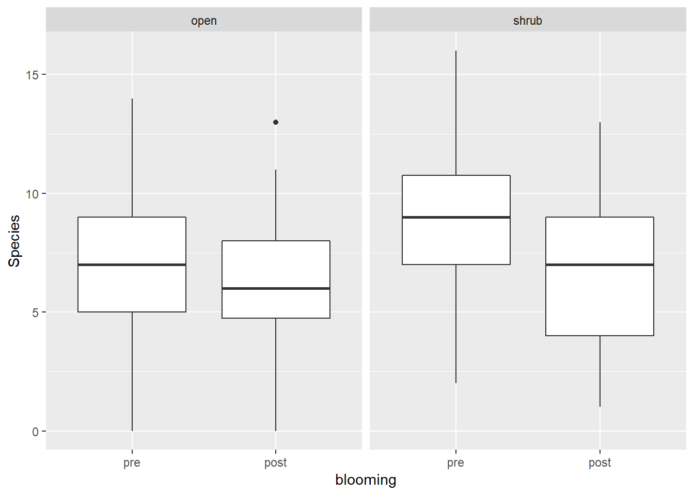
ggplot(beetle, aes(treatment, Species)) + geom_boxplot() + facet_grid(~blooming)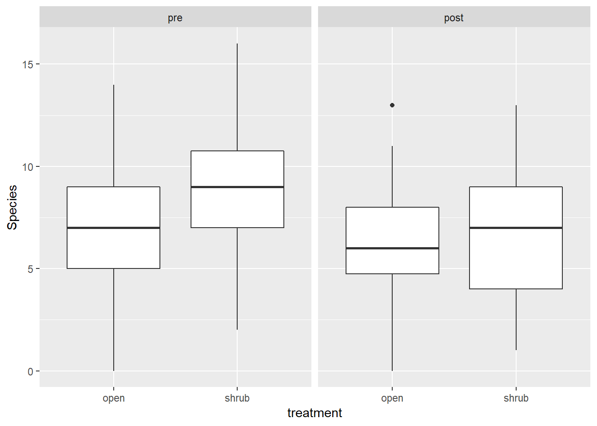
#species accumulation
insects <- read.csv("Clean Data/wide_yesbeetle.csv")
row.names(insects) <- insects$X
insects <- select(insects, -X)
plot(specaccum(insects), xlab = "# of samples", ylab = "# of species")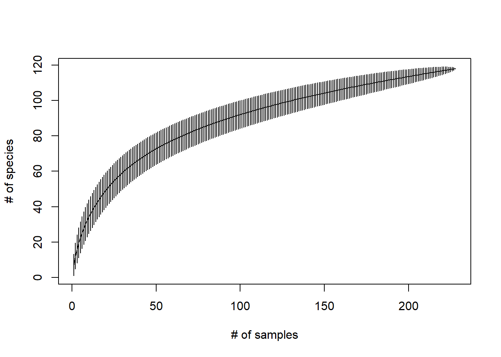
Pan traps simplified RTU viz and models
This chunk tests for differences in bees between treatments.
#code to run analyses based on guild but need to better clean species names first
library(dplyr)
library(tidyr)
library(vegan)
library(ggplot2)
long <- read.csv("pantraps_long.csv")
simp <- read.csv("sp_key.csv")
env <- read.csv("Clean Data/metadata_yesbeetle.csv")
count(simp, guild)## # A tibble: 19 x 2
## guild n
## <fct> <int>
## 1 ant 1
## 2 bee 19
## 3 beefly 3
## 4 beelte 1
## 5 beetle 7
## 6 fly 22
## 7 lacewing 1
## 8 lep 4
## 9 microbeefly 1
## 10 other 3
## 11 othoptera 1
## 12 parasitioid.wasp 23
## 13 predatory.wasp 9
## 14 spider 1
## 15 syrphid 2
## 16 thrip 1
## 17 true.bug 20
## 18 velvet ant 1
## 19 <NA> 3#sum(long$Quantity)
#counts <- count(long, highest.rtu)
#write.csv(counts, "sp_key.csv")
simp.rtu <- right_join(long, simp, by = "highest.rtu")## Warning: Column `highest.rtu` joining factors with different levels,
## coercing to character vectorsum(simp.rtu$Quantity)## [1] NAsimp.rtu <- filter(simp.rtu, guild != "NA" & guild != "NA")
sum(simp.rtu$Quantity)## [1] NAbees <- filter(simp.rtu, guild == "bee")
bees.ag <- bees %>% group_by(uniID, guild) %>% summarise(Quantity = sum(Quantity))
sum(bees.ag$Quantity)## [1] 144bee <- right_join(bees.ag, env, by = "uniID")
bee$Quantity[is.na(bee$Quantity)] <- 0
ggplot(bee, aes(treatment, Quantity)) + geom_boxplot() + facet_grid(~blooming)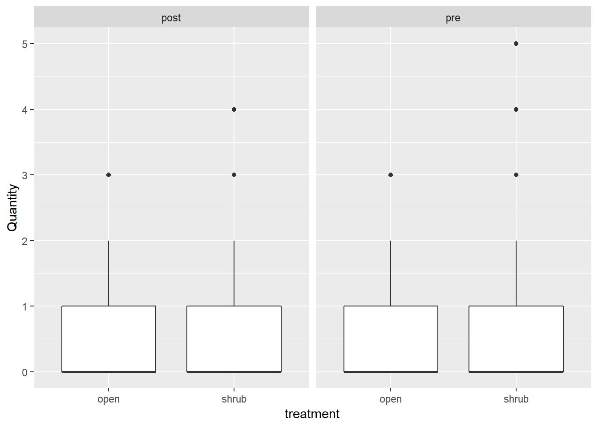
a1 <- aov(bee$Quantity ~ bee$blooming + bee$treatment)
summary(a1)## Df Sum Sq Mean Sq F value Pr(>F)
## bee$blooming 1 0.14 0.1369 0.161 0.688
## bee$treatment 1 0.07 0.0702 0.083 0.774
## Residuals 225 190.85 0.8482TukeyHSD(a1)## Tukey multiple comparisons of means
## 95% family-wise confidence level
##
## Fit: aov(formula = bee$Quantity ~ bee$blooming + bee$treatment)
##
## $`bee$blooming`
## diff lwr upr p adj
## pre-post 0.04907407 -0.191642 0.2897902 0.6882619
##
## $`bee$treatment`
## diff lwr upr p adj
## shrub-open 0.03508772 -0.2052947 0.2754702 0.7738904shapiro.test(bee$Quantity)##
## Shapiro-Wilk normality test
##
## data: bee$Quantity
## W = 0.70726, p-value < 2.2e-16ggplot(bee, aes(Quantity)) + geom_density()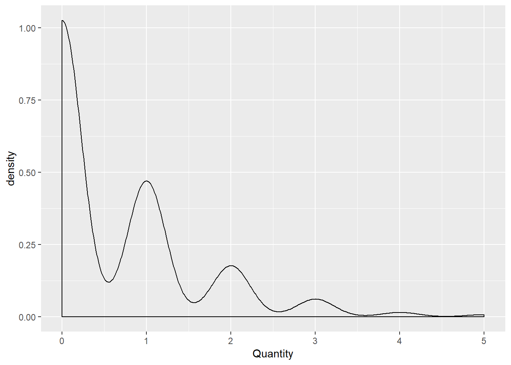
bee$repID <- paste(bee$plant.id, bee$treatment)
bee$blooming <- relevel(bee$blooming, "pre")
bee1 <- glmer(Quantity ~ blooming * treatment + (1|repID), family = poisson, data = bee)
bee2<- glmer(Quantity ~ blooming + treatment + (1|repID), family = poisson, data = bee)
beenull<- glmer(Quantity ~ (1|repID), family = poisson, data = bee)
overdisp_fun(bee1)## chisq ratio rdf p
## 171.5686880 0.7693663 223.0000000 0.9956091summary(bee1)## Generalized linear mixed model fit by maximum likelihood (Laplace
## Approximation) [glmerMod]
## Family: poisson ( log )
## Formula: Quantity ~ blooming * treatment + (1 | repID)
## Data: bee
##
## AIC BIC logLik deviance df.resid
## 502.6 519.8 -246.3 492.6 223
##
## Scaled residuals:
## Min 1Q Median 3Q Max
## -1.0919 -0.6627 -0.6218 0.6542 2.9639
##
## Random effects:
## Groups Name Variance Std.Dev.
## repID (Intercept) 0.3751 0.6125
## Number of obs: 228, groups: repID, 126
##
## Fixed effects:
## Estimate Std. Error z value Pr(>|z|)
## (Intercept) -0.62905 0.20181 -3.117 0.00183 **
## bloomingpost -0.02735 0.24373 -0.112 0.91066
## treatmentshrub 0.10710 0.26892 0.398 0.69044
## bloomingpost:treatmentshrub -0.16244 0.33883 -0.479 0.63164
## ---
## Signif. codes: 0 '***' 0.001 '**' 0.01 '*' 0.05 '.' 0.1 ' ' 1
##
## Correlation of Fixed Effects:
## (Intr) blmngp trtmnt
## bloomingpst -0.626
## tretmntshrb -0.688 0.483
## blmngpst:tr 0.459 -0.717 -0.646summary(bee2)## Generalized linear mixed model fit by maximum likelihood (Laplace
## Approximation) [glmerMod]
## Family: poisson ( log )
## Formula: Quantity ~ blooming + treatment + (1 | repID)
## Data: bee
##
## AIC BIC logLik deviance df.resid
## 500.9 514.6 -246.4 492.9 224
##
## Scaled residuals:
## Min 1Q Median 3Q Max
## -1.1147 -0.6503 -0.6090 0.6094 3.0644
##
## Random effects:
## Groups Name Variance Std.Dev.
## repID (Intercept) 0.3758 0.613
## Number of obs: 228, groups: repID, 126
##
## Fixed effects:
## Estimate Std. Error z value Pr(>|z|)
## (Intercept) -0.58555 0.17760 -3.297 0.000977 ***
## bloomingpost -0.11115 0.16970 -0.655 0.512467
## treatmentshrub 0.02389 0.20521 0.116 0.907306
## ---
## Signif. codes: 0 '***' 0.001 '**' 0.01 '*' 0.05 '.' 0.1 ' ' 1
##
## Correlation of Fixed Effects:
## (Intr) blmngp
## bloomingpst -0.464
## tretmntshrb -0.568 0.006car::Anova(bee2, type =2)## Analysis of Deviance Table (Type II Wald chisquare tests)
##
## Response: Quantity
## Chisq Df Pr(>Chisq)
## blooming 0.4290 1 0.5125
## treatment 0.0136 1 0.9073Visitation to L. tridentata
Insitu observation of visitation to L. tridentata
library(dplyr)
library(ggplot2)
#all.mag <- read.csv("Clean Data/insitu_2017.csv")
#create new csv for just larrea
#all.mag %>% filter(., s.species == "larrea") %>% write.csv("Clean Data/larreavisits.csv")
larrea <- read.csv("Clean Data/larreavisits.csv")
#v.species <- read.csv("F:/School/Chapter 2/larrea.visitation/v.species.csv")
#larrea <- left_join(larrea, v.species, by = "v.species")
cov <- read.csv("Clean Data/insitu_cov_larrea.csv")
sizes <- read.csv("Clean Data/video_larreadimensions.csv")
cov <- distinct(cov)
cov <- select(cov, -date)
cov$repID <- paste(cov$plant.id, "post")
larrea$repID <- paste(larrea$PlantID, larrea$pre.post)
cov <- inner_join(cov, sizes, by = "plant.id")## Warning: Column `plant.id` joining factors with different levels, coercing
## to character vectorcov <- select(cov, -plant.id)
larrea <- left_join(larrea, cov, by = "repID")
#fl.num <- select(larrea, repID, n.flowers) %>% distinct()
#N.FLOWER is only applicable to post. it was just easier to join this way!
count(larrea, pre.post)## # A tibble: 2 x 2
## pre.post n
## <fct> <int>
## 1 post 401
## 2 pre 138#how does floral visitation relate to #flowers
fl <- filter(larrea, part.used == "flower")
fl.count <- fl %>% count(repID)
lar.all <- left_join(cov, fl.count, by = "repID")
#there are 58 because
#attach neighbour density
pans <- read.csv("Clean Data/metadata_yesbeetle.csv")
pans$repID <- paste(pans$plant.id, pans$blooming)
pans <- filter(pans, blooming == "post" & treatment == "shrub")
lar.all <- left_join(lar.all, pans, by = "repID")
lar.all$n[is.na(lar.all$n)] <- 0
#join video covariates
vid.cov <- read.csv("Clean Data/video_cov.csv")
vid.cov$flowering <- gsub("bloom", "post", vid.cov$flowering)
vid.cov$repID <- paste(vid.cov$PlantID, vid.cov$flowering)
lar.all <- vid.cov %>% filter(flowering == "post" & treatment == "shrub") %>% left_join(lar.all, vid.cov, by = "repID")
ggplot(lar.all, aes(n)) + geom_density()## Warning: Removed 1 rows containing non-finite values (stat_density).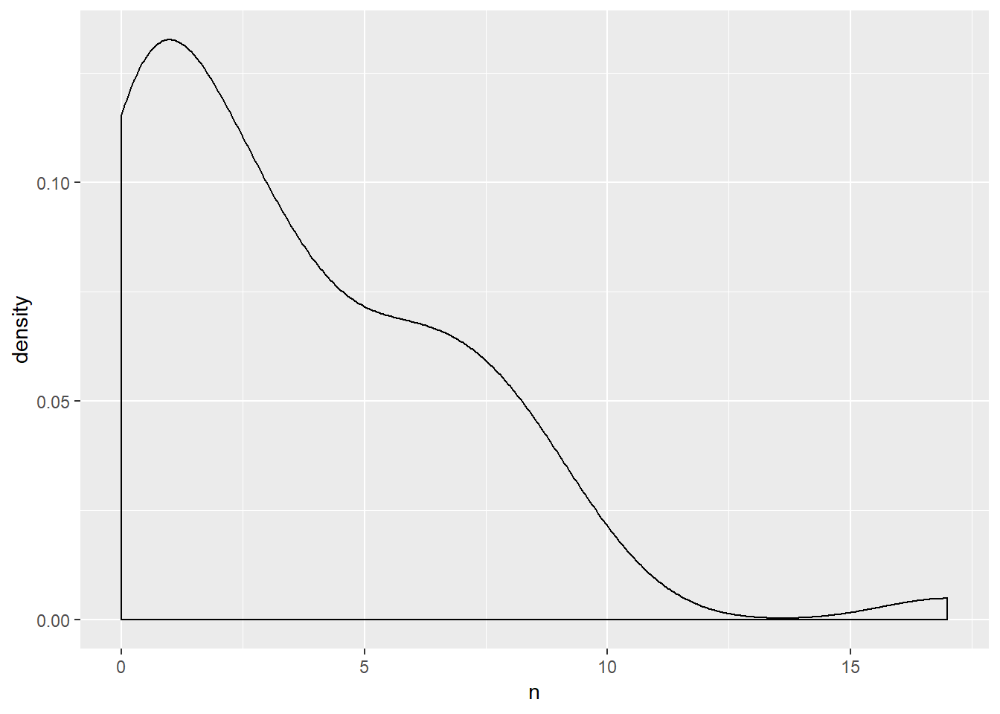
m1 <- glm(n ~ n.flowers + percent.cover, family = "poisson", data = lar.all)
summary(m1)##
## Call:
## glm(formula = n ~ n.flowers + percent.cover, family = "poisson",
## data = lar.all)
##
## Deviance Residuals:
## Min 1Q Median 3Q Max
## -2.7570 -1.6506 -0.5059 0.8332 5.1044
##
## Coefficients:
## Estimate Std. Error z value Pr(>|z|)
## (Intercept) 1.0226345 0.1873297 5.459 4.79e-08 ***
## n.flowers 0.0012891 0.0003107 4.148 3.35e-05 ***
## percent.cover -0.0057519 0.0037312 -1.542 0.123
## ---
## Signif. codes: 0 '***' 0.001 '**' 0.01 '*' 0.05 '.' 0.1 ' ' 1
##
## (Dispersion parameter for poisson family taken to be 1)
##
## Null deviance: 203.94 on 57 degrees of freedom
## Residual deviance: 184.12 on 55 degrees of freedom
## (2 observations deleted due to missingness)
## AIC: 330.49
##
## Number of Fisher Scoring iterations: 5count(larrea, pre.post)## # A tibble: 2 x 2
## pre.post n
## <fct> <int>
## 1 post 401
## 2 pre 138visitors <- fl %>% group_by(., pre.post, part.used) %>% count(., v.species)
sum(visitors$n)## [1] 197#modelling
cov <- left_join(cov, fl.count, by = "repID")
cov$n[is.na(cov$n)] <- 0
m1 <- glm(data = cov, family = "quasipoisson"(link="log"), n ~ n.flowers)
summary(m1)##
## Call:
## glm(formula = n ~ n.flowers, family = quasipoisson(link = "log"),
## data = cov)
##
## Deviance Residuals:
## Min 1Q Median 3Q Max
## -2.6742 -1.5054 -0.4227 0.8007 5.2371
##
## Coefficients:
## Estimate Std. Error t value Pr(>|t|)
## (Intercept) 0.7820540 0.2417340 3.235 0.00204 **
## n.flowers 0.0013408 0.0005728 2.341 0.02283 *
## ---
## Signif. codes: 0 '***' 0.001 '**' 0.01 '*' 0.05 '.' 0.1 ' ' 1
##
## (Dispersion parameter for quasipoisson family taken to be 3.367143)
##
## Null deviance: 198.46 on 57 degrees of freedom
## Residual deviance: 182.84 on 56 degrees of freedom
## AIC: NA
##
## Number of Fisher Scoring iterations: 5#overdisp_fun(m1)
car::Anova(m1)## Analysis of Deviance Table (Type II tests)
##
## Response: n
## LR Chisq Df Pr(>Chisq)
## n.flowers 4.6383 1 0.03127 *
## ---
## Signif. codes: 0 '***' 0.001 '**' 0.01 '*' 0.05 '.' 0.1 ' ' 1m2 <- glm(data = cov, family = "quasipoisson"(link="log"), n ~ n.flowers + height)
m3 <- glm(data = cov, family = "quasipoisson"(link="log"), n ~ height)
summary(m2)##
## Call:
## glm(formula = n ~ n.flowers + height, family = quasipoisson(link = "log"),
## data = cov)
##
## Deviance Residuals:
## Min 1Q Median 3Q Max
## -2.8819 -1.5538 -0.3812 1.0401 4.7540
##
## Coefficients:
## Estimate Std. Error t value Pr(>|t|)
## (Intercept) -8.865e-05 6.637e-01 0.000 0.9999
## n.flowers 1.069e-03 6.084e-04 1.756 0.0847 .
## height 4.010e-03 3.087e-03 1.299 0.1995
## ---
## Signif. codes: 0 '***' 0.001 '**' 0.01 '*' 0.05 '.' 0.1 ' ' 1
##
## (Dispersion parameter for quasipoisson family taken to be 3.265603)
##
## Null deviance: 197.77 on 56 degrees of freedom
## Residual deviance: 177.29 on 54 degrees of freedom
## (1 observation deleted due to missingness)
## AIC: NA
##
## Number of Fisher Scoring iterations: 5summary(m3)##
## Call:
## glm(formula = n ~ height, family = quasipoisson(link = "log"),
## data = cov)
##
## Deviance Residuals:
## Min 1Q Median 3Q Max
## -3.1211 -1.6240 -0.5905 1.1983 4.6031
##
## Coefficients:
## Estimate Std. Error t value Pr(>|t|)
## (Intercept) 0.044102 0.638327 0.069 0.945
## height 0.005400 0.002824 1.913 0.061 .
## ---
## Signif. codes: 0 '***' 0.001 '**' 0.01 '*' 0.05 '.' 0.1 ' ' 1
##
## (Dispersion parameter for quasipoisson family taken to be 3.209795)
##
## Null deviance: 197.77 on 56 degrees of freedom
## Residual deviance: 186.19 on 55 degrees of freedom
## (1 observation deleted due to missingness)
## AIC: NA
##
## Number of Fisher Scoring iterations: 5car::Anova(m3)## Analysis of Deviance Table (Type II tests)
##
## Response: n
## LR Chisq Df Pr(>Chisq)
## height 3.6066 1 0.05755 .
## ---
## Signif. codes: 0 '***' 0.001 '**' 0.01 '*' 0.05 '.' 0.1 ' ' 1ggplot(cov, aes(n.flowers, n)) + geom_point(shape = 1) + geom_smooth(color = "black", size = 0.5) + theme_Publication() + xlab("Floral abundance") + ylab("Visits per 15 min")## Warning: `legend.margin` must be specified using `margin()`. For the old
## behavior use legend.spacing## `geom_smooth()` using method = 'loess' and formula 'y ~ x'## Warning in grid.Call(C_textBounds, as.graphicsAnnot(x$label), x$x, x$y, :
## font family not found in Windows font database## Warning in grid.Call(C_textBounds, as.graphicsAnnot(x$label), x$x, x$y, :
## font family not found in Windows font database
## Warning in grid.Call(C_textBounds, as.graphicsAnnot(x$label), x$x, x$y, :
## font family not found in Windows font database
## Warning in grid.Call(C_textBounds, as.graphicsAnnot(x$label), x$x, x$y, :
## font family not found in Windows font database
## Warning in grid.Call(C_textBounds, as.graphicsAnnot(x$label), x$x, x$y, :
## font family not found in Windows font database
## Warning in grid.Call(C_textBounds, as.graphicsAnnot(x$label), x$x, x$y, :
## font family not found in Windows font database
## Warning in grid.Call(C_textBounds, as.graphicsAnnot(x$label), x$x, x$y, :
## font family not found in Windows font database## Warning in grid.Call.graphics(C_text, as.graphicsAnnot(x$label), x$x, x
## $y, : font family not found in Windows font database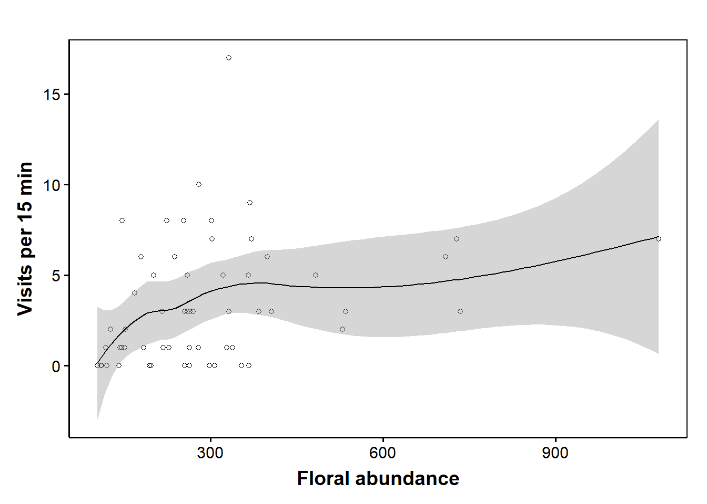
#cor.test(repcounts.all$n.flowers, repcounts.all$width)
cor.test(lar.all$n.flowers, lar.all$height)##
## Pearson's product-moment correlation
##
## data: lar.all$n.flowers and lar.all$height
## t = 2.6659, df = 56, p-value = 0.01002
## alternative hypothesis: true correlation is not equal to 0
## 95 percent confidence interval:
## 0.08463171 0.54651435
## sample estimates:
## cor
## 0.3355914#cor.test(repcounts.all$width, repcounts.all$height)Pollen
Models and figures for pollen transfer expt
#pollen counts & wrangling
library(ggplot2)
library(dplyr)
library(lme4)
library(cowplot)## Warning: package 'cowplot' was built under R version 3.4.4##
## Attaching package: 'cowplot'## The following object is masked from 'package:ggthemes':
##
## theme_map## The following objects are masked from 'package:sjPlot':
##
## plot_grid, save_plot## The following object is masked from 'package:ggplot2':
##
## ggsavecounts <- read.csv("Clean Data/Pollen_Corrected.csv")
cov <- read.csv("Clean Data/pollen_cov.csv")
counts$X <- as.numeric(as.character(counts$X)) ## Warning: NAs introduced by coercioncounts <- counts %>% replace(is.na(.), 0)
counts <- counts %>% mutate(all.con = rowSums(.[5:18]))
counts <- select(counts, Rep:Het.Grains, all.con)
counts.ag <- counts %>% group_by(Rep, Slide) %>% summarise(Het = sum(Het.Grains), Con = sum(all.con))
counts.ag <- counts.ag %>% mutate(., microsite = ifelse(substr(Rep,start = 1, stop = 1) == "S", "shrub", "open"))
counts.ag$Flower <- substr(counts.ag$Slide, 1, 1)
sum(counts.ag$Con)## [1] 16209sum(counts.ag$Het)## [1] 1719counts.ag <- right_join(counts.ag, cov, by = "Rep")
ggplot(data =counts.ag,(aes(microsite.x, Con))) + geom_boxplot()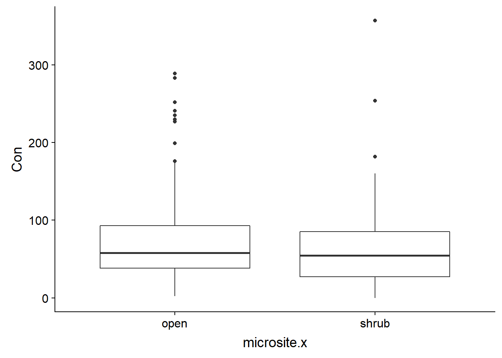
ggplot(data =counts.ag,(aes(microsite.x, Het))) + geom_boxplot()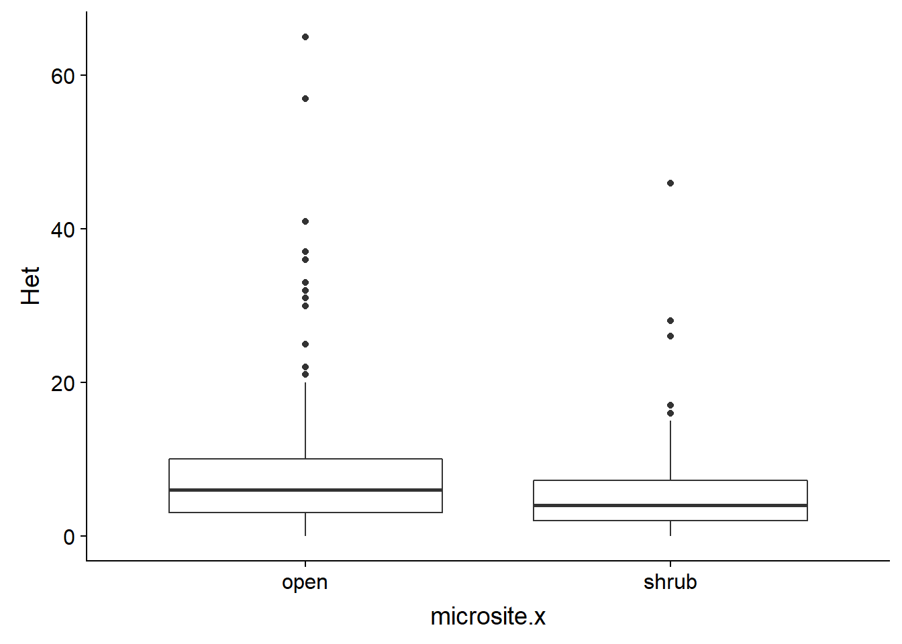
t.test(counts.ag$Con ~ counts.ag$microsite.x)##
## Welch Two Sample t-test
##
## data: counts.ag$Con by counts.ag$microsite.x
## t = 1.5147, df = 221.36, p-value = 0.1313
## alternative hypothesis: true difference in means is not equal to 0
## 95 percent confidence interval:
## -3.308033 25.285395
## sample estimates:
## mean in group open mean in group shrub
## 75.68696 64.69828ggplot(data = counts.ag, (aes(Con))) + geom_freqpoly()## `stat_bin()` using `bins = 30`. Pick better value with `binwidth`.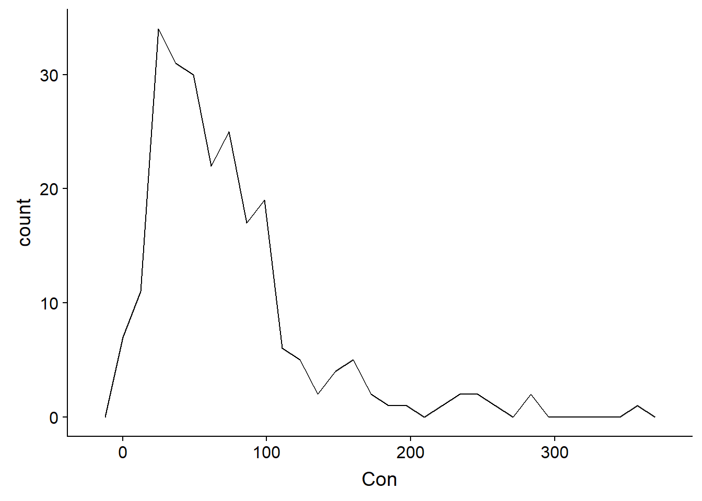
shapiro.test(counts.ag$Con)##
## Shapiro-Wilk normality test
##
## data: counts.ag$Con
## W = 0.82636, p-value = 2.363e-15#m1 <- glmer.nb(Con ~ d.flowers + dN1 + (1|Flower/Rep), data = counts.ag)
#m2 <- glmer(Het ~ d.S + dN1 + (1|Flower/Rep), family = poisson(link = "log"), data = counts.ag)
#summary(m1)
#summary(m2)
counts.ag$Flower <- paste(counts.ag$Rep, counts.ag$Flower)
counts.ag$Sample <- paste(counts.ag$Slide, counts.ag$Rep)
counts.ag$d.S <- counts.ag$d.S %>% replace(is.na(.), 0)
#m1 <- glmer.nb(Con ~ d.flowers + dN1 + d.S + (1|Sample/Flower/Rep), data = counts.ag)
#summary(m1)
m2 <- MASS::glmmPQL(Con~dN1 + d.flowers + d.S, ~1|Sample/Flower/Rep, family = quasipoisson, data = counts.ag)## iteration 1## iteration 2## iteration 3## iteration 4## iteration 5## iteration 6## iteration 7## iteration 8## iteration 9## iteration 10summary(m2)## Linear mixed-effects model fit by maximum likelihood
## Data: counts.ag
## AIC BIC logLik
## NA NA NA
##
## Random effects:
## Formula: ~1 | Sample
## (Intercept)
## StdDev: 0.3671512
##
## Formula: ~1 | Flower %in% Sample
## (Intercept)
## StdDev: 0.3717862
##
## Formula: ~1 | Rep %in% Flower %in% Sample
## (Intercept) Residual
## StdDev: 0.3674866 0.0004643699
##
## Variance function:
## Structure: fixed weights
## Formula: ~invwt
## Fixed effects: Con ~ dN1 + d.flowers + d.S
## Value Std.Error DF t-value p-value
## (Intercept) 3.849654 0.08697545 227 44.26139 0.0000
## dN1 0.001480 0.00076455 227 1.93610 0.0541
## d.flowers 0.008945 0.00637617 227 1.40287 0.1620
## d.S 0.000200 0.00021520 227 0.93007 0.3533
## Correlation:
## (Intr) dN1 d.flwr
## dN1 -0.629
## d.flowers -0.300 -0.170
## d.S -0.373 0.041 -0.213
##
## Standardized Within-Group Residuals:
## Min Q1 Med Q3 Max
## -2.469889e-04 -7.447681e-05 2.083552e-06 5.391885e-05 1.325677e-04
##
## Number of Observations: 231
## Number of Groups:
## Sample Flower %in% Sample
## 231 231
## Rep %in% Flower %in% Sample
## 231car::Anova(m2, type = 2)## Analysis of Deviance Table (Type II tests)
##
## Response: Con
## Chisq Df Pr(>Chisq)
## dN1 3.8146 1 0.05081 .
## d.flowers 2.0027 1 0.15702
## d.S 0.8803 1 0.34813
## ---
## Signif. codes: 0 '***' 0.001 '**' 0.01 '*' 0.05 '.' 0.1 ' ' 1cor.test(counts.ag$Con, counts.ag$Het)##
## Pearson's product-moment correlation
##
## data: counts.ag$Con and counts.ag$Het
## t = 2.3967, df = 229, p-value = 0.01735
## alternative hypothesis: true correlation is not equal to 0
## 95 percent confidence interval:
## 0.02791644 0.27985733
## sample estimates:
## cor
## 0.1564304mean(counts.ag$d.S)## [1] 183.2857mean(counts.ag$dN1)## [1] 79.37229mean(counts.ag$d.flowers)## [1] 7.025974m3 <- MASS::glmmPQL(Het~dN1 + d.flowers + d.S, ~1|Sample/Flower/Rep, family = quasipoisson, data = counts.ag)## iteration 1## iteration 2## iteration 3## iteration 4## iteration 5## iteration 6## iteration 7## iteration 8## iteration 9## iteration 10summary(m3)## Linear mixed-effects model fit by maximum likelihood
## Data: counts.ag
## AIC BIC logLik
## NA NA NA
##
## Random effects:
## Formula: ~1 | Sample
## (Intercept)
## StdDev: 0.4629229
##
## Formula: ~1 | Flower %in% Sample
## (Intercept)
## StdDev: 0.4617498
##
## Formula: ~1 | Rep %in% Flower %in% Sample
## (Intercept) Residual
## StdDev: 0.4627337 0.0001266436
##
## Variance function:
## Structure: fixed weights
## Formula: ~invwt
## Fixed effects: Het ~ dN1 + d.flowers + d.S
## Value Std.Error DF t-value p-value
## (Intercept) 1.6066755 0.10906162 227 14.731814 0.0000
## dN1 -0.0013985 0.00095869 227 -1.458799 0.1460
## d.flowers -0.0122049 0.00799531 227 -1.526505 0.1283
## d.S 0.0013047 0.00026984 227 4.834916 0.0000
## Correlation:
## (Intr) dN1 d.flwr
## dN1 -0.629
## d.flowers -0.300 -0.170
## d.S -0.373 0.041 -0.213
##
## Standardized Within-Group Residuals:
## Min Q1 Med Q3 Max
## -1.481197e-04 -5.600561e-05 -4.710926e-06 4.245597e-05 8.319447e-05
##
## Number of Observations: 231
## Number of Groups:
## Sample Flower %in% Sample
## 231 231
## Rep %in% Flower %in% Sample
## 231car::Anova(m3, type = 2)## Analysis of Deviance Table (Type II tests)
##
## Response: Het
## Chisq Df Pr(>Chisq)
## dN1 2.1656 1 0.1411
## d.flowers 2.3713 1 0.1236
## d.S 23.7883 1 1.075e-06 ***
## ---
## Signif. codes: 0 '***' 0.001 '**' 0.01 '*' 0.05 '.' 0.1 ' ' 1p3 <- ggplot(counts.ag, aes(dN1, Con)) + geom_point(shape = 1) + geom_smooth(colour = "black", size = 0.5) + geom_jitter(shape = 1) + theme_Publication() + xlab("Distance to Conspecific Neighbour") + ylab("Conspecific Pollen Deposition")## Warning: `legend.margin` must be specified using `margin()`. For the old
## behavior use legend.spacingp4 <- ggplot(counts.ag, aes(d.S, Het)) + geom_point(shape = 1) + geom_smooth(colour = "black", size = 0.5) + geom_jitter(shape = 1) + theme_Publication() + xlab("Distance to Larrea tridentata") + ylab("Heterospecific Pollen Deposition")## Warning: `legend.margin` must be specified using `margin()`. For the old
## behavior use legend.spacingplot_grid(p3, p4, labels = c("A", "B"), align = "h")## `geom_smooth()` using method = 'loess' and formula 'y ~ x'## `geom_smooth()` using method = 'loess' and formula 'y ~ x'## Warning in grid.Call(C_textBounds, as.graphicsAnnot(x$label), x$x, x$y, :
## font family not found in Windows font database## Warning in grid.Call(C_textBounds, as.graphicsAnnot(x$label), x$x, x$y, :
## font family not found in Windows font database
## Warning in grid.Call(C_textBounds, as.graphicsAnnot(x$label), x$x, x$y, :
## font family not found in Windows font database
## Warning in grid.Call(C_textBounds, as.graphicsAnnot(x$label), x$x, x$y, :
## font family not found in Windows font database
## Warning in grid.Call(C_textBounds, as.graphicsAnnot(x$label), x$x, x$y, :
## font family not found in Windows font database
## Warning in grid.Call(C_textBounds, as.graphicsAnnot(x$label), x$x, x$y, :
## font family not found in Windows font database
## Warning in grid.Call(C_textBounds, as.graphicsAnnot(x$label), x$x, x$y, :
## font family not found in Windows font database## Warning in grid.Call.graphics(C_text, as.graphicsAnnot(x$label), x$x, x
## $y, : font family not found in Windows font database## Warning in grid.Call(C_textBounds, as.graphicsAnnot(x$label), x$x, x$y, :
## font family not found in Windows font database
## Warning in grid.Call(C_textBounds, as.graphicsAnnot(x$label), x$x, x$y, :
## font family not found in Windows font database
## Warning in grid.Call(C_textBounds, as.graphicsAnnot(x$label), x$x, x$y, :
## font family not found in Windows font database
## Warning in grid.Call(C_textBounds, as.graphicsAnnot(x$label), x$x, x$y, :
## font family not found in Windows font database
## Warning in grid.Call(C_textBounds, as.graphicsAnnot(x$label), x$x, x$y, :
## font family not found in Windows font database
## Warning in grid.Call(C_textBounds, as.graphicsAnnot(x$label), x$x, x$y, :
## font family not found in Windows font database
## Warning in grid.Call(C_textBounds, as.graphicsAnnot(x$label), x$x, x$y, :
## font family not found in Windows font database## Warning in grid.Call.graphics(C_text, as.graphicsAnnot(x$label), x$x, x
## $y, : font family not found in Windows font database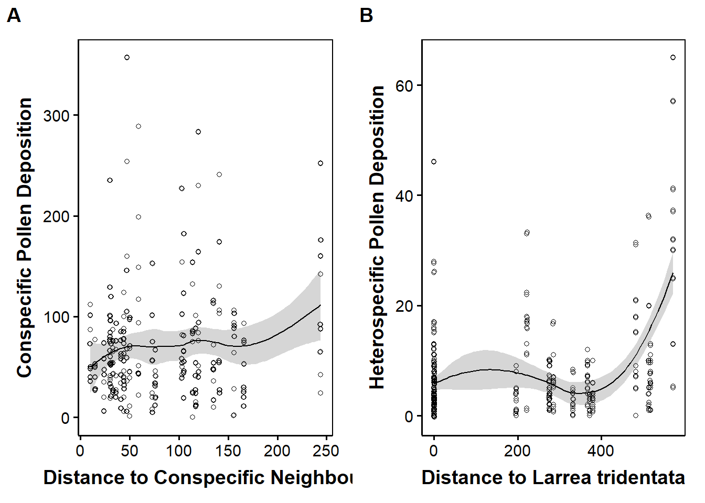
Figures
Script for making figures
#figures
library(ggplot2)
library(jtools)
library(dplyr)
visits <- read.csv("byrep_cleaned.csv")
byrtu <- read.csv("rtu_by_rep.csv")
metadata <- read.csv("Clean Data/metadata_nobeetle.csv")
nobeetle <- read.csv("Clean Data/metadata_nobeetle.csv")
incbeetle <- read.csv("Clean Data/metadata_yesbeetle.csv")
onlybeetle <- read.csv("Clean Data/metadata_onlybeetle.csv")
labels <- c(pre = "Pre-blooming", post = "Blooming", bloom = "Blooming")
visits$flowering <- relevel(visits$flowering, "pre")
metadata$blooming <- relevel(metadata$blooming, "pre")
incbeetle$blooming <- relevel(incbeetle$blooming, "pre")
onlybeetle$blooming <- relevel(onlybeetle$blooming, "pre")
byrtu$flowering <- relevel(byrtu$flowering, "pre")
ggplot(metadata, aes(treatment, percent.cover)) + geom_boxplot() + theme_Publication() + ylab("Percent Annual Vegetation Cover") + xlab("Microsite")## Warning: `legend.margin` must be specified using `margin()`. For the old
## behavior use legend.spacing## Warning in grid.Call(C_textBounds, as.graphicsAnnot(x$label), x$x, x$y, :
## font family not found in Windows font database
## Warning in grid.Call(C_textBounds, as.graphicsAnnot(x$label), x$x, x$y, :
## font family not found in Windows font database
## Warning in grid.Call(C_textBounds, as.graphicsAnnot(x$label), x$x, x$y, :
## font family not found in Windows font database
## Warning in grid.Call(C_textBounds, as.graphicsAnnot(x$label), x$x, x$y, :
## font family not found in Windows font database
## Warning in grid.Call(C_textBounds, as.graphicsAnnot(x$label), x$x, x$y, :
## font family not found in Windows font database
## Warning in grid.Call(C_textBounds, as.graphicsAnnot(x$label), x$x, x$y, :
## font family not found in Windows font database
## Warning in grid.Call(C_textBounds, as.graphicsAnnot(x$label), x$x, x$y, :
## font family not found in Windows font database## Warning in grid.Call.graphics(C_text, as.graphicsAnnot(x$label), x$x, x
## $y, : font family not found in Windows font database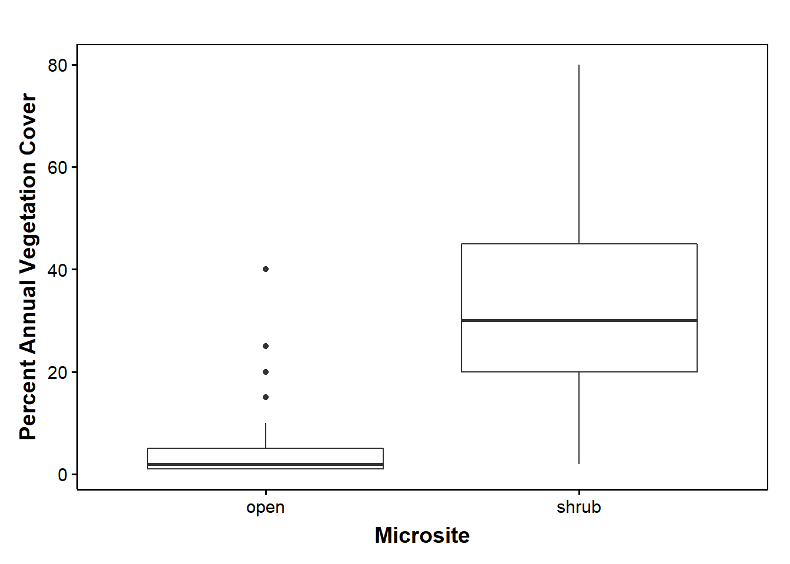
ggplot(metadata, aes(treatment, percent.cover)) + geom_boxplot() + theme_Publication() + ylab("Percent Annual Vegetation Cover") + xlab("Microsite") + facet_grid(~blooming,labeller=labeller(blooming = labels))## Warning: `legend.margin` must be specified using `margin()`. For the old
## behavior use legend.spacing## Warning in grid.Call(C_textBounds, as.graphicsAnnot(x$label), x$x, x$y, :
## font family not found in Windows font database
## Warning in grid.Call(C_textBounds, as.graphicsAnnot(x$label), x$x, x$y, :
## font family not found in Windows font database
## Warning in grid.Call(C_textBounds, as.graphicsAnnot(x$label), x$x, x$y, :
## font family not found in Windows font database## Warning in grid.Call.graphics(C_text, as.graphicsAnnot(x$label), x$x, x
## $y, : font family not found in Windows font database## Warning in grid.Call(C_textBounds, as.graphicsAnnot(x$label), x$x, x$y, :
## font family not found in Windows font database
## Warning in grid.Call(C_textBounds, as.graphicsAnnot(x$label), x$x, x$y, :
## font family not found in Windows font database## Warning in grid.Call.graphics(C_text, as.graphicsAnnot(x$label), x$x, x
## $y, : font family not found in Windows font database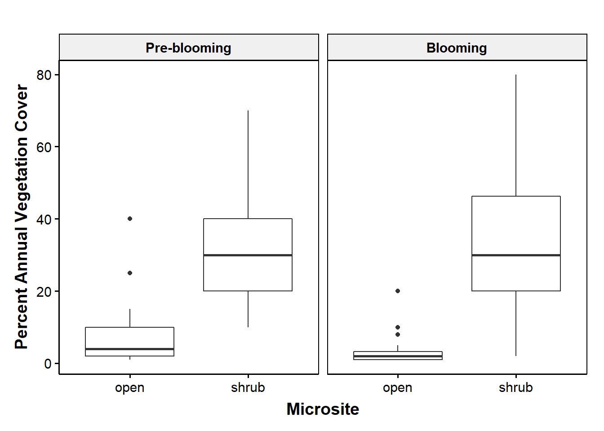
ggplot(metadata, aes(treatment, rich)) + geom_boxplot() + theme_Publication() + ylab("Annual Species Richness") + xlab("Microsite") ## Warning: `legend.margin` must be specified using `margin()`. For the old
## behavior use legend.spacing## Warning in grid.Call(C_textBounds, as.graphicsAnnot(x$label), x$x, x$y, :
## font family not found in Windows font database
## Warning in grid.Call(C_textBounds, as.graphicsAnnot(x$label), x$x, x$y, :
## font family not found in Windows font database
## Warning in grid.Call(C_textBounds, as.graphicsAnnot(x$label), x$x, x$y, :
## font family not found in Windows font database
## Warning in grid.Call(C_textBounds, as.graphicsAnnot(x$label), x$x, x$y, :
## font family not found in Windows font database
## Warning in grid.Call(C_textBounds, as.graphicsAnnot(x$label), x$x, x$y, :
## font family not found in Windows font database
## Warning in grid.Call(C_textBounds, as.graphicsAnnot(x$label), x$x, x$y, :
## font family not found in Windows font database
## Warning in grid.Call(C_textBounds, as.graphicsAnnot(x$label), x$x, x$y, :
## font family not found in Windows font database## Warning in grid.Call.graphics(C_text, as.graphicsAnnot(x$label), x$x, x
## $y, : font family not found in Windows font databaseggplot(visits, aes(treatment, understory.richness)) + geom_boxplot() + theme_Publication() + ylab("Annual Species Richness") + xlab("Microsite") + facet_grid(~flowering,labeller=labeller(flowering = labels)) ## Warning: `legend.margin` must be specified using `margin()`. For the old
## behavior use legend.spacing## Warning: Removed 4 rows containing non-finite values (stat_boxplot).## Warning in grid.Call(C_textBounds, as.graphicsAnnot(x$label), x$x, x$y, :
## font family not found in Windows font database
## Warning in grid.Call(C_textBounds, as.graphicsAnnot(x$label), x$x, x$y, :
## font family not found in Windows font database
## Warning in grid.Call(C_textBounds, as.graphicsAnnot(x$label), x$x, x$y, :
## font family not found in Windows font database## Warning in grid.Call.graphics(C_text, as.graphicsAnnot(x$label), x$x, x
## $y, : font family not found in Windows font database## Warning in grid.Call(C_textBounds, as.graphicsAnnot(x$label), x$x, x$y, :
## font family not found in Windows font database
## Warning in grid.Call(C_textBounds, as.graphicsAnnot(x$label), x$x, x$y, :
## font family not found in Windows font database## Warning in grid.Call.graphics(C_text, as.graphicsAnnot(x$label), x$x, x
## $y, : font family not found in Windows font databaseggplot(visits, aes(treatment, het.annual.floral.density)) + geom_boxplot() + theme_Publication() + ylab("Annual Floral Density") + xlab("Microsite") ## Warning: `legend.margin` must be specified using `margin()`. For the old
## behavior use legend.spacing## Warning: Removed 5 rows containing non-finite values (stat_boxplot).## Warning in grid.Call(C_textBounds, as.graphicsAnnot(x$label), x$x, x$y, :
## font family not found in Windows font database
## Warning in grid.Call(C_textBounds, as.graphicsAnnot(x$label), x$x, x$y, :
## font family not found in Windows font database
## Warning in grid.Call(C_textBounds, as.graphicsAnnot(x$label), x$x, x$y, :
## font family not found in Windows font database
## Warning in grid.Call(C_textBounds, as.graphicsAnnot(x$label), x$x, x$y, :
## font family not found in Windows font database
## Warning in grid.Call(C_textBounds, as.graphicsAnnot(x$label), x$x, x$y, :
## font family not found in Windows font database
## Warning in grid.Call(C_textBounds, as.graphicsAnnot(x$label), x$x, x$y, :
## font family not found in Windows font database
## Warning in grid.Call(C_textBounds, as.graphicsAnnot(x$label), x$x, x$y, :
## font family not found in Windows font database## Warning in grid.Call.graphics(C_text, as.graphicsAnnot(x$label), x$x, x
## $y, : font family not found in Windows font databaseggplot(visits, aes(treatment, het.annual.floral.density)) + geom_boxplot() + theme_Publication() + ylab("Annual Floral Density") + xlab("Microsite") + facet_grid(~flowering,labeller=labeller(flowering = labels)) ## Warning: `legend.margin` must be specified using `margin()`. For the old
## behavior use legend.spacing## Warning: Removed 5 rows containing non-finite values (stat_boxplot).## Warning in grid.Call(C_textBounds, as.graphicsAnnot(x$label), x$x, x$y, :
## font family not found in Windows font database
## Warning in grid.Call(C_textBounds, as.graphicsAnnot(x$label), x$x, x$y, :
## font family not found in Windows font database
## Warning in grid.Call(C_textBounds, as.graphicsAnnot(x$label), x$x, x$y, :
## font family not found in Windows font database## Warning in grid.Call.graphics(C_text, as.graphicsAnnot(x$label), x$x, x
## $y, : font family not found in Windows font database## Warning in grid.Call(C_textBounds, as.graphicsAnnot(x$label), x$x, x$y, :
## font family not found in Windows font database
## Warning in grid.Call(C_textBounds, as.graphicsAnnot(x$label), x$x, x$y, :
## font family not found in Windows font database## Warning in grid.Call.graphics(C_text, as.graphicsAnnot(x$label), x$x, x
## $y, : font family not found in Windows font databaseggplot(visits, aes(treatment, het.shrub.blooming.neighbours)) + geom_boxplot() + theme_Publication() + ylab("Blooming Shrubs within 2 m") + xlab("Microsite") ## Warning: `legend.margin` must be specified using `margin()`. For the old
## behavior use legend.spacing## Warning: Removed 4 rows containing non-finite values (stat_boxplot).## Warning in grid.Call(C_textBounds, as.graphicsAnnot(x$label), x$x, x$y, :
## font family not found in Windows font database
## Warning in grid.Call(C_textBounds, as.graphicsAnnot(x$label), x$x, x$y, :
## font family not found in Windows font database
## Warning in grid.Call(C_textBounds, as.graphicsAnnot(x$label), x$x, x$y, :
## font family not found in Windows font database
## Warning in grid.Call(C_textBounds, as.graphicsAnnot(x$label), x$x, x$y, :
## font family not found in Windows font database
## Warning in grid.Call(C_textBounds, as.graphicsAnnot(x$label), x$x, x$y, :
## font family not found in Windows font database
## Warning in grid.Call(C_textBounds, as.graphicsAnnot(x$label), x$x, x$y, :
## font family not found in Windows font database
## Warning in grid.Call(C_textBounds, as.graphicsAnnot(x$label), x$x, x$y, :
## font family not found in Windows font database## Warning in grid.Call.graphics(C_text, as.graphicsAnnot(x$label), x$x, x
## $y, : font family not found in Windows font databaseggplot(visits, aes(treatment, het.shrub.blooming.neighbours)) + geom_boxplot() + theme_Publication() + ylab("Blooming Shrubs within 2 m") + xlab("Microsite") + facet_grid(~flowering,labeller=labeller(flowering = labels)) ## Warning: `legend.margin` must be specified using `margin()`. For the old
## behavior use legend.spacing## Warning: Removed 4 rows containing non-finite values (stat_boxplot).## Warning in grid.Call(C_textBounds, as.graphicsAnnot(x$label), x$x, x$y, :
## font family not found in Windows font database
## Warning in grid.Call(C_textBounds, as.graphicsAnnot(x$label), x$x, x$y, :
## font family not found in Windows font database
## Warning in grid.Call(C_textBounds, as.graphicsAnnot(x$label), x$x, x$y, :
## font family not found in Windows font database## Warning in grid.Call.graphics(C_text, as.graphicsAnnot(x$label), x$x, x
## $y, : font family not found in Windows font database## Warning in grid.Call(C_textBounds, as.graphicsAnnot(x$label), x$x, x$y, :
## font family not found in Windows font database
## Warning in grid.Call(C_textBounds, as.graphicsAnnot(x$label), x$x, x$y, :
## font family not found in Windows font database## Warning in grid.Call.graphics(C_text, as.graphicsAnnot(x$label), x$x, x
## $y, : font family not found in Windows font databaseggplot(visits, aes(treatment, het.cactus.blooming.neighbours)) + geom_boxplot() + theme_Publication() + ylab("Blooming Cactus within 2 m") + xlab("Microsite") ## Warning: `legend.margin` must be specified using `margin()`. For the old
## behavior use legend.spacing## Warning: Removed 4 rows containing non-finite values (stat_boxplot).## Warning in grid.Call(C_textBounds, as.graphicsAnnot(x$label), x$x, x$y, :
## font family not found in Windows font database
## Warning in grid.Call(C_textBounds, as.graphicsAnnot(x$label), x$x, x$y, :
## font family not found in Windows font database
## Warning in grid.Call(C_textBounds, as.graphicsAnnot(x$label), x$x, x$y, :
## font family not found in Windows font database
## Warning in grid.Call(C_textBounds, as.graphicsAnnot(x$label), x$x, x$y, :
## font family not found in Windows font database
## Warning in grid.Call(C_textBounds, as.graphicsAnnot(x$label), x$x, x$y, :
## font family not found in Windows font database
## Warning in grid.Call(C_textBounds, as.graphicsAnnot(x$label), x$x, x$y, :
## font family not found in Windows font database
## Warning in grid.Call(C_textBounds, as.graphicsAnnot(x$label), x$x, x$y, :
## font family not found in Windows font database## Warning in grid.Call.graphics(C_text, as.graphicsAnnot(x$label), x$x, x
## $y, : font family not found in Windows font databaseggplot(visits, aes(treatment, het.cactus.blooming.neighbours)) + geom_boxplot() + theme_Publication() + ylab("Blooming Cactus within 2 m") + xlab("Microsite") + facet_grid(~flowering,labeller=labeller(flowering = labels)) ## Warning: `legend.margin` must be specified using `margin()`. For the old
## behavior use legend.spacing## Warning: Removed 4 rows containing non-finite values (stat_boxplot).## Warning in grid.Call(C_textBounds, as.graphicsAnnot(x$label), x$x, x$y, :
## font family not found in Windows font database
## Warning in grid.Call(C_textBounds, as.graphicsAnnot(x$label), x$x, x$y, :
## font family not found in Windows font database
## Warning in grid.Call(C_textBounds, as.graphicsAnnot(x$label), x$x, x$y, :
## font family not found in Windows font database## Warning in grid.Call.graphics(C_text, as.graphicsAnnot(x$label), x$x, x
## $y, : font family not found in Windows font database## Warning in grid.Call(C_textBounds, as.graphicsAnnot(x$label), x$x, x$y, :
## font family not found in Windows font database
## Warning in grid.Call(C_textBounds, as.graphicsAnnot(x$label), x$x, x$y, :
## font family not found in Windows font database## Warning in grid.Call.graphics(C_text, as.graphicsAnnot(x$label), x$x, x
## $y, : font family not found in Windows font databaseggplot(visits, aes(treatment, flowers.per.hour)) + geom_boxplot() + theme_Publication() + ylab("Flowers visited per hour") + xlab("Microsite") ## Warning: `legend.margin` must be specified using `margin()`. For the old
## behavior use legend.spacing## Warning in grid.Call(C_textBounds, as.graphicsAnnot(x$label), x$x, x$y, :
## font family not found in Windows font database
## Warning in grid.Call(C_textBounds, as.graphicsAnnot(x$label), x$x, x$y, :
## font family not found in Windows font database
## Warning in grid.Call(C_textBounds, as.graphicsAnnot(x$label), x$x, x$y, :
## font family not found in Windows font database
## Warning in grid.Call(C_textBounds, as.graphicsAnnot(x$label), x$x, x$y, :
## font family not found in Windows font database
## Warning in grid.Call(C_textBounds, as.graphicsAnnot(x$label), x$x, x$y, :
## font family not found in Windows font database
## Warning in grid.Call(C_textBounds, as.graphicsAnnot(x$label), x$x, x$y, :
## font family not found in Windows font database
## Warning in grid.Call(C_textBounds, as.graphicsAnnot(x$label), x$x, x$y, :
## font family not found in Windows font database## Warning in grid.Call.graphics(C_text, as.graphicsAnnot(x$label), x$x, x
## $y, : font family not found in Windows font databaseggplot(visits, aes(treatment, flowers.per.hour)) + geom_boxplot() + theme_Publication() + ylab("Flowers visited per hour") + xlab("Microsite") + facet_grid(~flowering,labeller=labeller(flowering = labels)) ## Warning: `legend.margin` must be specified using `margin()`. For the old
## behavior use legend.spacing## Warning in grid.Call(C_textBounds, as.graphicsAnnot(x$label), x$x, x$y, :
## font family not found in Windows font database
## Warning in grid.Call(C_textBounds, as.graphicsAnnot(x$label), x$x, x$y, :
## font family not found in Windows font database
## Warning in grid.Call(C_textBounds, as.graphicsAnnot(x$label), x$x, x$y, :
## font family not found in Windows font database## Warning in grid.Call.graphics(C_text, as.graphicsAnnot(x$label), x$x, x
## $y, : font family not found in Windows font database## Warning in grid.Call(C_textBounds, as.graphicsAnnot(x$label), x$x, x$y, :
## font family not found in Windows font database
## Warning in grid.Call(C_textBounds, as.graphicsAnnot(x$label), x$x, x$y, :
## font family not found in Windows font database## Warning in grid.Call.graphics(C_text, as.graphicsAnnot(x$label), x$x, x
## $y, : font family not found in Windows font databaseggplot(visits, aes(treatment, visits.per.hour)) + geom_boxplot() + theme_Publication() + ylab("Plant visits per hour") + xlab("Microsite") ## Warning: `legend.margin` must be specified using `margin()`. For the old
## behavior use legend.spacing## Warning in grid.Call(C_textBounds, as.graphicsAnnot(x$label), x$x, x$y, :
## font family not found in Windows font database
## Warning in grid.Call(C_textBounds, as.graphicsAnnot(x$label), x$x, x$y, :
## font family not found in Windows font database
## Warning in grid.Call(C_textBounds, as.graphicsAnnot(x$label), x$x, x$y, :
## font family not found in Windows font database
## Warning in grid.Call(C_textBounds, as.graphicsAnnot(x$label), x$x, x$y, :
## font family not found in Windows font database
## Warning in grid.Call(C_textBounds, as.graphicsAnnot(x$label), x$x, x$y, :
## font family not found in Windows font database
## Warning in grid.Call(C_textBounds, as.graphicsAnnot(x$label), x$x, x$y, :
## font family not found in Windows font database
## Warning in grid.Call(C_textBounds, as.graphicsAnnot(x$label), x$x, x$y, :
## font family not found in Windows font database## Warning in grid.Call.graphics(C_text, as.graphicsAnnot(x$label), x$x, x
## $y, : font family not found in Windows font databaseggplot(visits, aes(treatment, visits.per.hour)) + geom_boxplot() + theme_Publication() + ylab("Plant visits per hour") + xlab("Microsite") + facet_grid(~flowering,labeller=labeller(flowering = labels)) ## Warning: `legend.margin` must be specified using `margin()`. For the old
## behavior use legend.spacing## Warning in grid.Call(C_textBounds, as.graphicsAnnot(x$label), x$x, x$y, :
## font family not found in Windows font database
## Warning in grid.Call(C_textBounds, as.graphicsAnnot(x$label), x$x, x$y, :
## font family not found in Windows font database
## Warning in grid.Call(C_textBounds, as.graphicsAnnot(x$label), x$x, x$y, :
## font family not found in Windows font database## Warning in grid.Call.graphics(C_text, as.graphicsAnnot(x$label), x$x, x
## $y, : font family not found in Windows font database## Warning in grid.Call(C_textBounds, as.graphicsAnnot(x$label), x$x, x$y, :
## font family not found in Windows font database
## Warning in grid.Call(C_textBounds, as.graphicsAnnot(x$label), x$x, x$y, :
## font family not found in Windows font database## Warning in grid.Call.graphics(C_text, as.graphicsAnnot(x$label), x$x, x
## $y, : font family not found in Windows font database#rtu related figures
byrtu <- read.csv("rtu_by_rep.csv")
byobs <- read.csv("byobs_cleaned.csv")
rtu.key <- read.csv("Clean Data/video_rtu_key.csv")
rtu.data <- left_join(rtu.key, byobs, by = "highest.rtu")
#byrtu$treatment <- relevel(byrtu$treatment, "open")
byobs$flowering <- relevel(byobs$flowering, "pre")
ggplot(byobs, aes(microsite, dec.total.time)) + geom_boxplot() + facet_grid(~flowering) + theme_Publication() + ylab("Time spent per visit") + xlab("Microsite") + facet_grid(~flowering,labeller=labeller(flowering = labels)) ## Warning: `legend.margin` must be specified using `margin()`. For the old
## behavior use legend.spacing## Warning: Removed 1 rows containing non-finite values (stat_boxplot).## Warning in grid.Call(C_textBounds, as.graphicsAnnot(x$label), x$x, x$y, :
## font family not found in Windows font database
## Warning in grid.Call(C_textBounds, as.graphicsAnnot(x$label), x$x, x$y, :
## font family not found in Windows font database
## Warning in grid.Call(C_textBounds, as.graphicsAnnot(x$label), x$x, x$y, :
## font family not found in Windows font database## Warning in grid.Call.graphics(C_text, as.graphicsAnnot(x$label), x$x, x
## $y, : font family not found in Windows font database## Warning in grid.Call(C_textBounds, as.graphicsAnnot(x$label), x$x, x$y, :
## font family not found in Windows font database
## Warning in grid.Call(C_textBounds, as.graphicsAnnot(x$label), x$x, x$y, :
## font family not found in Windows font database## Warning in grid.Call.graphics(C_text, as.graphicsAnnot(x$label), x$x, x
## $y, : font family not found in Windows font databaseggplot(byobs, aes(microsite, prop.un.fl.visited)) + geom_boxplot() + facet_grid(~flowering) + theme_Publication() + ylab("Proportion of flowers visited per visit") + xlab("Microsite") + facet_grid(~flowering,labeller=labeller(flowering = labels)) ## Warning: `legend.margin` must be specified using `margin()`. For the old
## behavior use legend.spacing## Warning in grid.Call(C_textBounds, as.graphicsAnnot(x$label), x$x, x$y, :
## font family not found in Windows font database
## Warning in grid.Call(C_textBounds, as.graphicsAnnot(x$label), x$x, x$y, :
## font family not found in Windows font database
## Warning in grid.Call(C_textBounds, as.graphicsAnnot(x$label), x$x, x$y, :
## font family not found in Windows font database## Warning in grid.Call.graphics(C_text, as.graphicsAnnot(x$label), x$x, x
## $y, : font family not found in Windows font database## Warning in grid.Call(C_textBounds, as.graphicsAnnot(x$label), x$x, x$y, :
## font family not found in Windows font database
## Warning in grid.Call(C_textBounds, as.graphicsAnnot(x$label), x$x, x$y, :
## font family not found in Windows font database## Warning in grid.Call.graphics(C_text, as.graphicsAnnot(x$label), x$x, x
## $y, : font family not found in Windows font databaseggplot(rtu.data, aes(rtu.ag, dec.total.time)) + geom_boxplot() + facet_grid(flowering~microsite, labeller=labeller(flowering = labels)) + theme_Publication() + xlab("RTU") + ylab("Time spent per visit")## Warning: `legend.margin` must be specified using `margin()`. For the old
## behavior use legend.spacing## Warning: Removed 1 rows containing non-finite values (stat_boxplot).## Warning in grid.Call(C_textBounds, as.graphicsAnnot(x$label), x$x, x$y, :
## font family not found in Windows font database
## Warning in grid.Call(C_textBounds, as.graphicsAnnot(x$label), x$x, x$y, :
## font family not found in Windows font database
## Warning in grid.Call(C_textBounds, as.graphicsAnnot(x$label), x$x, x$y, :
## font family not found in Windows font database
## Warning in grid.Call(C_textBounds, as.graphicsAnnot(x$label), x$x, x$y, :
## font family not found in Windows font database
## Warning in grid.Call(C_textBounds, as.graphicsAnnot(x$label), x$x, x$y, :
## font family not found in Windows font database## Warning in grid.Call.graphics(C_text, as.graphicsAnnot(x$label), x$x, x
## $y, : font family not found in Windows font database
## Warning in grid.Call.graphics(C_text, as.graphicsAnnot(x$label), x$x, x
## $y, : font family not found in Windows font database
## Warning in grid.Call.graphics(C_text, as.graphicsAnnot(x$label), x$x, x
## $y, : font family not found in Windows font database
## Warning in grid.Call.graphics(C_text, as.graphicsAnnot(x$label), x$x, x
## $y, : font family not found in Windows font database## Warning in grid.Call(C_textBounds, as.graphicsAnnot(x$label), x$x, x$y, :
## font family not found in Windows font database
## Warning in grid.Call(C_textBounds, as.graphicsAnnot(x$label), x$x, x$y, :
## font family not found in Windows font database## Warning in grid.Call.graphics(C_text, as.graphicsAnnot(x$label), x$x, x
## $y, : font family not found in Windows font databaseggplot(metadata, aes(treatment, abun)) + geom_boxplot() + theme_Publication() + ylab("Insect Abundance") + xlab("Microsite")## Warning: `legend.margin` must be specified using `margin()`. For the old
## behavior use legend.spacing## Warning in grid.Call(C_textBounds, as.graphicsAnnot(x$label), x$x, x$y, :
## font family not found in Windows font database
## Warning in grid.Call(C_textBounds, as.graphicsAnnot(x$label), x$x, x$y, :
## font family not found in Windows font database
## Warning in grid.Call(C_textBounds, as.graphicsAnnot(x$label), x$x, x$y, :
## font family not found in Windows font database
## Warning in grid.Call(C_textBounds, as.graphicsAnnot(x$label), x$x, x$y, :
## font family not found in Windows font database
## Warning in grid.Call(C_textBounds, as.graphicsAnnot(x$label), x$x, x$y, :
## font family not found in Windows font database
## Warning in grid.Call(C_textBounds, as.graphicsAnnot(x$label), x$x, x$y, :
## font family not found in Windows font database
## Warning in grid.Call(C_textBounds, as.graphicsAnnot(x$label), x$x, x$y, :
## font family not found in Windows font database## Warning in grid.Call.graphics(C_text, as.graphicsAnnot(x$label), x$x, x
## $y, : font family not found in Windows font databaseggplot(metadata, aes(treatment, abun)) + geom_boxplot() + theme_Publication() + ylab("Arthopod Abundance") + xlab("Microsite") + facet_grid(~blooming,labeller=labeller(blooming = labels))## Warning: `legend.margin` must be specified using `margin()`. For the old
## behavior use legend.spacing## Warning in grid.Call(C_textBounds, as.graphicsAnnot(x$label), x$x, x$y, :
## font family not found in Windows font database
## Warning in grid.Call(C_textBounds, as.graphicsAnnot(x$label), x$x, x$y, :
## font family not found in Windows font database
## Warning in grid.Call(C_textBounds, as.graphicsAnnot(x$label), x$x, x$y, :
## font family not found in Windows font database## Warning in grid.Call.graphics(C_text, as.graphicsAnnot(x$label), x$x, x
## $y, : font family not found in Windows font database## Warning in grid.Call(C_textBounds, as.graphicsAnnot(x$label), x$x, x$y, :
## font family not found in Windows font database
## Warning in grid.Call(C_textBounds, as.graphicsAnnot(x$label), x$x, x$y, :
## font family not found in Windows font database## Warning in grid.Call.graphics(C_text, as.graphicsAnnot(x$label), x$x, x
## $y, : font family not found in Windows font databaseggplot(incbeetle, aes(treatment, abun)) + geom_boxplot() + theme_Publication() + ylab("Arthopod Abundance") + xlab("Microsite")## Warning: `legend.margin` must be specified using `margin()`. For the old
## behavior use legend.spacing## Warning in grid.Call(C_textBounds, as.graphicsAnnot(x$label), x$x, x$y, :
## font family not found in Windows font database
## Warning in grid.Call(C_textBounds, as.graphicsAnnot(x$label), x$x, x$y, :
## font family not found in Windows font database
## Warning in grid.Call(C_textBounds, as.graphicsAnnot(x$label), x$x, x$y, :
## font family not found in Windows font database
## Warning in grid.Call(C_textBounds, as.graphicsAnnot(x$label), x$x, x$y, :
## font family not found in Windows font database
## Warning in grid.Call(C_textBounds, as.graphicsAnnot(x$label), x$x, x$y, :
## font family not found in Windows font database
## Warning in grid.Call(C_textBounds, as.graphicsAnnot(x$label), x$x, x$y, :
## font family not found in Windows font database
## Warning in grid.Call(C_textBounds, as.graphicsAnnot(x$label), x$x, x$y, :
## font family not found in Windows font database## Warning in grid.Call.graphics(C_text, as.graphicsAnnot(x$label), x$x, x
## $y, : font family not found in Windows font databaseggplot(incbeetle, aes(treatment, abun)) + geom_boxplot() + theme_Publication() + ylab("Arthopod Abundance") + xlab("Microsite") + facet_grid(~blooming,labeller=labeller(blooming = labels))## Warning: `legend.margin` must be specified using `margin()`. For the old
## behavior use legend.spacing## Warning in grid.Call(C_textBounds, as.graphicsAnnot(x$label), x$x, x$y, :
## font family not found in Windows font database
## Warning in grid.Call(C_textBounds, as.graphicsAnnot(x$label), x$x, x$y, :
## font family not found in Windows font database
## Warning in grid.Call(C_textBounds, as.graphicsAnnot(x$label), x$x, x$y, :
## font family not found in Windows font database## Warning in grid.Call.graphics(C_text, as.graphicsAnnot(x$label), x$x, x
## $y, : font family not found in Windows font database## Warning in grid.Call(C_textBounds, as.graphicsAnnot(x$label), x$x, x$y, :
## font family not found in Windows font database
## Warning in grid.Call(C_textBounds, as.graphicsAnnot(x$label), x$x, x$y, :
## font family not found in Windows font database## Warning in grid.Call.graphics(C_text, as.graphicsAnnot(x$label), x$x, x
## $y, : font family not found in Windows font database#Just Melyridae
ggplot(onlybeetle, aes(treatment, abun)) + geom_boxplot() + theme_Publication() + ylab("Melyridae Abundance") + xlab("Microsite")## Warning: `legend.margin` must be specified using `margin()`. For the old
## behavior use legend.spacing## Warning in grid.Call(C_textBounds, as.graphicsAnnot(x$label), x$x, x$y, :
## font family not found in Windows font database
## Warning in grid.Call(C_textBounds, as.graphicsAnnot(x$label), x$x, x$y, :
## font family not found in Windows font database
## Warning in grid.Call(C_textBounds, as.graphicsAnnot(x$label), x$x, x$y, :
## font family not found in Windows font database
## Warning in grid.Call(C_textBounds, as.graphicsAnnot(x$label), x$x, x$y, :
## font family not found in Windows font database
## Warning in grid.Call(C_textBounds, as.graphicsAnnot(x$label), x$x, x$y, :
## font family not found in Windows font database
## Warning in grid.Call(C_textBounds, as.graphicsAnnot(x$label), x$x, x$y, :
## font family not found in Windows font database
## Warning in grid.Call(C_textBounds, as.graphicsAnnot(x$label), x$x, x$y, :
## font family not found in Windows font database## Warning in grid.Call.graphics(C_text, as.graphicsAnnot(x$label), x$x, x
## $y, : font family not found in Windows font databaseggplot(onlybeetle, aes(treatment, abun)) + geom_boxplot() + theme_Publication() + ylab("Melyridae Abundance") + xlab("Microsite") + facet_grid(~blooming,labeller=labeller(blooming = labels))## Warning: `legend.margin` must be specified using `margin()`. For the old
## behavior use legend.spacing## Warning in grid.Call(C_textBounds, as.graphicsAnnot(x$label), x$x, x$y, :
## font family not found in Windows font database
## Warning in grid.Call(C_textBounds, as.graphicsAnnot(x$label), x$x, x$y, :
## font family not found in Windows font database
## Warning in grid.Call(C_textBounds, as.graphicsAnnot(x$label), x$x, x$y, :
## font family not found in Windows font database## Warning in grid.Call.graphics(C_text, as.graphicsAnnot(x$label), x$x, x
## $y, : font family not found in Windows font database## Warning in grid.Call(C_textBounds, as.graphicsAnnot(x$label), x$x, x$y, :
## font family not found in Windows font database
## Warning in grid.Call(C_textBounds, as.graphicsAnnot(x$label), x$x, x$y, :
## font family not found in Windows font database## Warning in grid.Call.graphics(C_text, as.graphicsAnnot(x$label), x$x, x
## $y, : font family not found in Windows font database#Diversity figures
ggplot(incbeetle, aes(treatment, Species)) + geom_boxplot() + theme_Publication() + ylab("Insect Species Richness") + xlab("Microsite")## Warning: `legend.margin` must be specified using `margin()`. For the old
## behavior use legend.spacing## Warning in grid.Call(C_textBounds, as.graphicsAnnot(x$label), x$x, x$y, :
## font family not found in Windows font database
## Warning in grid.Call(C_textBounds, as.graphicsAnnot(x$label), x$x, x$y, :
## font family not found in Windows font database
## Warning in grid.Call(C_textBounds, as.graphicsAnnot(x$label), x$x, x$y, :
## font family not found in Windows font database
## Warning in grid.Call(C_textBounds, as.graphicsAnnot(x$label), x$x, x$y, :
## font family not found in Windows font database
## Warning in grid.Call(C_textBounds, as.graphicsAnnot(x$label), x$x, x$y, :
## font family not found in Windows font database
## Warning in grid.Call(C_textBounds, as.graphicsAnnot(x$label), x$x, x$y, :
## font family not found in Windows font database
## Warning in grid.Call(C_textBounds, as.graphicsAnnot(x$label), x$x, x$y, :
## font family not found in Windows font database## Warning in grid.Call.graphics(C_text, as.graphicsAnnot(x$label), x$x, x
## $y, : font family not found in Windows font database
ggplot(incbeetle, aes(treatment, Species)) + geom_boxplot() + theme_Publication() + ylab("Arthropod Species Richness") + xlab("Microsite") + facet_grid(~blooming,labeller=labeller(blooming = labels))## Warning: `legend.margin` must be specified using `margin()`. For the old
## behavior use legend.spacing## Warning in grid.Call(C_textBounds, as.graphicsAnnot(x$label), x$x, x$y, :
## font family not found in Windows font database
## Warning in grid.Call(C_textBounds, as.graphicsAnnot(x$label), x$x, x$y, :
## font family not found in Windows font database
## Warning in grid.Call(C_textBounds, as.graphicsAnnot(x$label), x$x, x$y, :
## font family not found in Windows font database## Warning in grid.Call.graphics(C_text, as.graphicsAnnot(x$label), x$x, x
## $y, : font family not found in Windows font database## Warning in grid.Call(C_textBounds, as.graphicsAnnot(x$label), x$x, x$y, :
## font family not found in Windows font database
## Warning in grid.Call(C_textBounds, as.graphicsAnnot(x$label), x$x, x$y, :
## font family not found in Windows font database## Warning in grid.Call.graphics(C_text, as.graphicsAnnot(x$label), x$x, x
## $y, : font family not found in Windows font databaseggplot(incbeetle, aes(treatment, H)) + geom_violin() + theme_Publication() + ylab("Shannon Diversity Index") + xlab("Microsite")## Warning: `legend.margin` must be specified using `margin()`. For the old
## behavior use legend.spacing## Warning in grid.Call(C_textBounds, as.graphicsAnnot(x$label), x$x, x$y, :
## font family not found in Windows font database
## Warning in grid.Call(C_textBounds, as.graphicsAnnot(x$label), x$x, x$y, :
## font family not found in Windows font database
## Warning in grid.Call(C_textBounds, as.graphicsAnnot(x$label), x$x, x$y, :
## font family not found in Windows font database
## Warning in grid.Call(C_textBounds, as.graphicsAnnot(x$label), x$x, x$y, :
## font family not found in Windows font database
## Warning in grid.Call(C_textBounds, as.graphicsAnnot(x$label), x$x, x$y, :
## font family not found in Windows font database
## Warning in grid.Call(C_textBounds, as.graphicsAnnot(x$label), x$x, x$y, :
## font family not found in Windows font database
## Warning in grid.Call(C_textBounds, as.graphicsAnnot(x$label), x$x, x$y, :
## font family not found in Windows font database## Warning in grid.Call.graphics(C_text, as.graphicsAnnot(x$label), x$x, x
## $y, : font family not found in Windows font databaseggplot(incbeetle, aes(treatment, H)) + geom_violin() + theme_Publication() + ylab("Shannon Diversity Index") + xlab("Microsite") + facet_grid(~blooming,labeller=labeller(blooming = labels))## Warning: `legend.margin` must be specified using `margin()`. For the old
## behavior use legend.spacing## Warning in grid.Call(C_textBounds, as.graphicsAnnot(x$label), x$x, x$y, :
## font family not found in Windows font database
## Warning in grid.Call(C_textBounds, as.graphicsAnnot(x$label), x$x, x$y, :
## font family not found in Windows font database
## Warning in grid.Call(C_textBounds, as.graphicsAnnot(x$label), x$x, x$y, :
## font family not found in Windows font database## Warning in grid.Call.graphics(C_text, as.graphicsAnnot(x$label), x$x, x
## $y, : font family not found in Windows font database## Warning in grid.Call(C_textBounds, as.graphicsAnnot(x$label), x$x, x$y, :
## font family not found in Windows font database
## Warning in grid.Call(C_textBounds, as.graphicsAnnot(x$label), x$x, x$y, :
## font family not found in Windows font database## Warning in grid.Call.graphics(C_text, as.graphicsAnnot(x$label), x$x, x
## $y, : font family not found in Windows font databaseggplot(incbeetle, aes(treatment, H)) + geom_boxplot() + theme_Publication() + ylab("Shannon Diversity Index") + xlab("Microsite") + facet_grid(~blooming,labeller=labeller(blooming = labels))## Warning: `legend.margin` must be specified using `margin()`. For the old
## behavior use legend.spacing## Warning in grid.Call(C_textBounds, as.graphicsAnnot(x$label), x$x, x$y, :
## font family not found in Windows font database
## Warning in grid.Call(C_textBounds, as.graphicsAnnot(x$label), x$x, x$y, :
## font family not found in Windows font database
## Warning in grid.Call(C_textBounds, as.graphicsAnnot(x$label), x$x, x$y, :
## font family not found in Windows font database## Warning in grid.Call.graphics(C_text, as.graphicsAnnot(x$label), x$x, x
## $y, : font family not found in Windows font database## Warning in grid.Call(C_textBounds, as.graphicsAnnot(x$label), x$x, x$y, :
## font family not found in Windows font database
## Warning in grid.Call(C_textBounds, as.graphicsAnnot(x$label), x$x, x$y, :
## font family not found in Windows font database## Warning in grid.Call.graphics(C_text, as.graphicsAnnot(x$label), x$x, x
## $y, : font family not found in Windows font database#visitation
ggplot(visits, aes(treatment, flowers.per.hour)) + geom_boxplot() + facet_grid(~flowering) + coord_flip()ggplot(byrtu, aes(flowering, flowers.per.hour)) + geom_boxplot() + facet_grid(~rtu, scales= "free") byrtu.fil <- filter(byrtu, rtu == "syrphid" | rtu == "lep" | rtu == "other")
ggplot(byrtu.fil, aes(flowering, flowers.per.hour)) + geom_boxplot() + facet_grid(~rtu, scales= "free") + coord_flip()library(caret)## Warning: package 'caret' was built under R version 3.4.4##
## Attaching package: 'caret'## The following object is masked from 'package:vegan':
##
## tolerancestr(byrtu)## 'data.frame': 1410 obs. of 22 variables:
## $ X : int 1 2 3 4 5 6 7 8 9 10 ...
## $ PlantID : Factor w/ 61 levels "104","114","146",..: 3 3 3 3 3 3 3 3 3 3 ...
## $ treatment : Factor w/ 2 levels "open","shrub": 1 1 1 1 1 1 2 2 2 2 ...
## $ flowering : Factor w/ 2 levels "bloom","pre": 2 2 2 2 2 2 2 2 2 2 ...
## $ Date : Factor w/ 20 levels "4.10.2017","4.11.2017",..: 1 1 1 1 1 1 1 1 1 1 ...
## $ TimeOut : Factor w/ 99 levels "","10:48","10:57",..: 58 58 58 58 58 58 58 58 58 58 ...
## $ flowers.shrub : int 0 0 0 0 0 0 0 0 0 0 ...
## $ flowers.pot : int 18 18 18 18 18 18 11 11 11 11 ...
## $ het.shrub.blooming.neighbours : int 0 0 0 0 0 0 0 0 0 0 ...
## $ het.cactus.blooming.neighbours: int 0 0 0 0 0 0 0 0 0 0 ...
## $ understory.richness : int 5 5 5 5 5 5 3 3 3 3 ...
## $ het.annual.floral.density : int 0 0 0 0 0 0 1 1 1 1 ...
## $ understory.assoc : Factor w/ 11 levels "","?","acamp",..: 8 8 8 8 8 8 8 8 8 8 ...
## $ uniID : Factor w/ 235 levels "LO14.10.2017",..: 1 1 1 1 1 1 117 117 117 117 ...
## $ rtu : Factor w/ 6 levels "bee","bombylid",..: 6 1 5 2 4 3 6 1 5 2 ...
## $ total.visits : int 18 2 0 0 0 0 6 1 0 0 ...
## $ total.flowers : int 35 5 0 0 0 0 8 2 0 0 ...
## $ Length : Factor w/ 225 levels "0:31:34","0:32:53",..: 120 120 120 120 120 120 185 185 185 185 ...
## $ pos.Length : Factor w/ 225 levels "2018-10-26 00:31:34",..: 120 120 120 120 120 120 185 185 185 185 ...
## $ dec.Length : num 1.38 1.38 1.38 1.38 1.38 ...
## $ visits.per.hour : num 13.04 1.45 0 0 0 ...
## $ flowers.per.hour : num 25.35 3.62 0 0 0 ...p <- byrtu %>% group_by(treatment, flowering, rtu) %>% dplyr::summarise(visits = sum(flowers.per.hour))
ggplot(p, aes(treatment, visits)) + geom_bar(aes(fill = rtu), stat = "identity", colour = "black") + facet_grid(~flowering, labeller=labeller(flowering = labels))+ theme_Publication() + xlab("Microsite") + ylab("Total Flowers Visited") + labs(fill="") + theme(legend.text = element_text(size = 16)) + scale_fill_brewer(palette= "Spectral") + scale_fill_manual("", values = c("bee" ="#D53E4F", "bombylid"= "#FC8D59", "honeybee"= "#FEE08B", "lep"= "#D3D3D3", "other"= "#99D594", "syrphid" = "#3288BD"), labels = c("Solitary Bee", "Bombyliidae", "Honeybee", "Lepidoptera", "Other", "Syrphidae"))## Warning: `legend.margin` must be specified using `margin()`. For the old
## behavior use legend.spacing## Scale for 'fill' is already present. Adding another scale for 'fill',
## which will replace the existing scale.## Warning in grid.Call(C_textBounds, as.graphicsAnnot(x$label), x$x, x$y, :
## font family not found in Windows font database## Warning in grid.Call(C_textBounds, as.graphicsAnnot(x$label), x$x, x$y, :
## font family not found in Windows font database
## Warning in grid.Call(C_textBounds, as.graphicsAnnot(x$label), x$x, x$y, :
## font family not found in Windows font database
## Warning in grid.Call(C_textBounds, as.graphicsAnnot(x$label), x$x, x$y, :
## font family not found in Windows font database
## Warning in grid.Call(C_textBounds, as.graphicsAnnot(x$label), x$x, x$y, :
## font family not found in Windows font database## Warning in grid.Call.graphics(C_text, as.graphicsAnnot(x$label), x$x, x
## $y, : font family not found in Windows font database## Warning in grid.Call(C_textBounds, as.graphicsAnnot(x$label), x$x, x$y, :
## font family not found in Windows font database
## Warning in grid.Call(C_textBounds, as.graphicsAnnot(x$label), x$x, x$y, :
## font family not found in Windows font database## Warning in grid.Call.graphics(C_text, as.graphicsAnnot(x$label), x$x, x
## $y, : font family not found in Windows font database## Warning in grid.Call(C_textBounds, as.graphicsAnnot(x$label), x$x, x$y, :
## font family not found in Windows font database
## Warning in grid.Call(C_textBounds, as.graphicsAnnot(x$label), x$x, x$y, :
## font family not found in Windows font databaseRII
This code bootstraps 95% confidence intervals
#Bootstrapping and RII calculations for all groups
#Microsites are matched!
#rii between microsites
library(dplyr)
library(tidyr)
library(ggplot2)
library(boot)## Warning: package 'boot' was built under R version 3.4.4##
## Attaching package: 'boot'## The following object is masked from 'package:lattice':
##
## melanomalibrary(cowplot)
rii.m <- function(x, j, var)
{
#parse out shrub and open
s1 <- subset(x, treatment == "shrub", select=var)
o1 <- subset(x, treatment == "open", select=var)
return1 <- (s1 - o1) / (s1+o1) # Rii formula
# attach factors
x1 <- x[seq(1, nrow(x), by = 2),]
return2 <- cbind(x1[j], return1)
return2[is.na(return2)] <- 0
print(return2)
}
rii.b <- function(x, j, var)
{
#parse out shrub and open
s1 <- subset(x, flowering == "bloom", select=var)
o1 <- subset(x, flowering == "pre", select=var)
return1 <- (s1 - o1) / (s1+o1) # Rii formula
# attach factors
x1 <- x[seq(1, nrow(x), by = 2),]
return2 <- cbind(x1[j], return1)
return2[is.na(return2)] <- 0
print(return2)
}
byrep <- read.csv("byrep_cleaned.csv")
metadata <- read.csv("Clean Data/metadata_nobeetle.csv")
yesbeetle <- read.csv("Clean Data/metadata_yesbeetle.csv")
pre <- filter(byrep, flowering == "pre")
pre <- dplyr::select(pre, Date, mean.Solar, mean.Wind, mean.Temp, PlantID, treatment, flowering, understory.richness, visits.per.hour, flowers.per.hour)
#split into 2 dataframes, rename the visitation columns and then rbind
#there are 2 unmatched reps
pre <- arrange(pre, PlantID)
pre <- filter(pre, PlantID != 266 & PlantID != 275 & PlantID != 276 & PlantID != 196)
pre.visits <- rii.m(pre, c(1:7), 8:10)## Date mean.Solar mean.Wind mean.Temp PlantID treatment flowering
## 1 4.20.2017 0.7987500 6.125000 17.86250 104 open pre
## 3 4.19.2017 0.7762500 6.025000 17.90000 114 open pre
## 5 4.10.2017 0.7625000 5.150000 18.35000 146 open pre
## 7 4.13.2017 0.7600000 6.112500 18.56250 180 open pre
## 9 4.19.2017 0.7762500 6.025000 17.90000 181 open pre
## 11 4.16.2017 0.7387500 5.175000 18.75000 182 open pre
## 13 4.19.2017 0.7762500 6.025000 17.90000 183 open pre
## 15 4.14.2017 0.7671429 6.242857 15.88571 184 open pre
## 17 4.16.2017 0.7387500 5.175000 18.75000 185 open pre
## 19 4.13.2017 0.7600000 6.112500 18.56250 186 open pre
## 21 4.10.2017 0.7625000 5.150000 18.35000 187 open pre
## 23 4.14.2017 0.7671429 6.242857 15.88571 188 open pre
## 25 4.12.2017 0.7587500 6.662500 18.61250 189 open pre
## 27 4.12.2017 0.7587500 6.662500 18.61250 190 open pre
## 29 4.11.2017 0.6100000 6.325000 18.57500 191 open pre
## 31 4.13.2017 0.7600000 6.112500 18.56250 192 open pre
## 33 4.10.2017 0.7625000 5.150000 18.35000 193 open pre
## 35 4.11.2017 0.6100000 6.325000 18.57500 194 open pre
## 37 4.14.2017 0.7671429 6.242857 15.88571 195 open pre
## 39 4.14.2017 0.7671429 6.242857 15.88571 197 open pre
## 41 4.19.2017 0.7762500 6.025000 17.90000 198 open pre
## 43 4.13.2017 0.7600000 6.112500 18.56250 199 open pre
## 45 4.20.2017 0.7987500 6.125000 17.86250 261 open pre
## 47 4.13.2017 0.7600000 6.112500 18.56250 262 open pre
## 49 4.12.2017 0.7587500 6.662500 18.61250 263 open pre
## 51 4.16.2017 0.7387500 5.175000 18.75000 264 open pre
## 53 4.11.2017 0.6100000 6.325000 18.57500 265 open pre
## 55 4.14.2017 0.7671429 6.242857 15.88571 268 open pre
## 57 4.14.2017 0.7671429 6.242857 15.88571 269 open pre
## 59 4.18.2017 0.6685714 6.014286 16.25714 270 open pre
## 61 4.18.2017 0.6685714 6.014286 16.25714 271 open pre
## 63 4.12.2017 0.7587500 6.662500 18.61250 272 open pre
## 65 4.10.2017 0.7625000 5.150000 18.35000 273 open pre
## 67 4.19.2017 0.7762500 6.025000 17.90000 274 open pre
## 69 4.15.2017 0.7687500 5.175000 18.50000 278 open pre
## 71 4.15.2017 0.7687500 5.175000 18.50000 280 open pre
## 73 4.19.2017 0.7762500 6.025000 17.90000 281 open pre
## 75 4.15.2017 0.7687500 5.175000 18.50000 282 open pre
## 77 4.18.2017 0.6685714 6.014286 16.25714 283 open pre
## 79 4.20.2017 0.7987500 6.125000 17.86250 285 open pre
## 81 4.16.2017 0.7387500 5.175000 18.75000 286 open pre
## 83 4.10.2017 0.7625000 5.150000 18.35000 288 open pre
## 85 4.11.2017 0.6100000 6.325000 18.57500 289 open pre
## 87 4.18.2017 0.6685714 6.014286 16.25714 290 open pre
## 89 4.16.2017 0.7387500 5.175000 18.75000 291 open pre
## 91 4.12.2017 0.7587500 6.662500 18.61250 293 open pre
## 93 4.15.2017 0.7687500 5.175000 18.50000 294 open pre
## 95 4.15.2017 0.7687500 5.175000 18.50000 295 open pre
## 97 4.12.2017 0.7587500 6.662500 18.61250 296 open pre
## 99 4.18.2017 0.6685714 6.014286 16.25714 297 open pre
## 101 4.18.2017 0.6685714 6.014286 16.25714 298 open pre
## 103 4.15.2017 0.7687500 5.175000 18.50000 299 open pre
## 105 4.13.2017 0.7600000 6.112500 18.56250 300 open pre
## 107 4.20.2017 0.7987500 6.125000 17.86250 301 open pre
## 109 4.20.2017 0.7987500 6.125000 17.86250 302 open pre
## 111 4.20.2017 0.7987500 6.125000 17.86250 303 open pre
## understory.richness visits.per.hour flowers.per.hour
## 1 -0.2000000 0.00000000 0.00000000
## 3 0.3333333 -0.32327375 -0.43086291
## 5 -0.2500000 -0.53995650 -0.64828245
## 7 0.1428571 -0.49268367 -0.37631269
## 9 0.2000000 0.09979235 0.09979235
## 11 0.2000000 0.09080377 0.41167651
## 13 0.0000000 1.00000000 1.00000000
## 15 0.2000000 1.00000000 1.00000000
## 17 0.0000000 -0.84112430 -0.84112430
## 19 0.0000000 -0.39470508 -0.44954263
## 21 0.0000000 -0.24053372 -0.39150535
## 23 0.0000000 -0.42573377 -0.53599233
## 25 0.3333333 0.07970170 -0.04068744
## 27 0.1428571 -0.01510029 0.07591301
## 29 0.3333333 -0.13339954 -0.32473562
## 31 -0.2000000 -0.85854322 -0.87413790
## 33 0.1428571 -0.53661648 -0.60419442
## 35 0.2000000 -0.16648570 0.02088555
## 37 0.2000000 0.06795422 0.06795422
## 39 -0.5000000 1.00000000 1.00000000
## 41 -0.1428571 -0.04021855 -0.04021855
## 43 -0.3333333 0.47209055 0.63381000
## 45 0.3333333 1.00000000 1.00000000
## 47 -0.2000000 -0.19191919 -0.19191919
## 49 0.0000000 -0.58408139 -0.70206837
## 51 0.3333333 -0.24078953 -0.15323474
## 53 0.0000000 0.36856445 0.31660500
## 55 -0.2000000 -0.86015705 -0.92754546
## 57 0.0000000 -0.46210327 -0.46210327
## 59 0.2000000 0.41789617 0.41789617
## 61 0.2000000 -0.06500618 -0.06500618
## 63 0.2000000 -0.38523645 -0.16953939
## 65 0.2000000 -0.49155244 -0.62027508
## 67 0.2000000 0.59512283 0.59512283
## 69 0.0000000 0.06763726 0.06763726
## 71 -0.2000000 -0.69652598 -0.38197977
## 73 0.0000000 -1.00000000 -1.00000000
## 75 0.2000000 -0.09849443 -0.09849443
## 77 0.3333333 0.21679413 0.21679413
## 79 -0.2000000 1.00000000 1.00000000
## 81 -0.3333333 -0.75099206 -0.75099206
## 83 0.0000000 -0.39427116 -0.39427116
## 85 0.4285714 1.00000000 1.00000000
## 87 0.0000000 0.00000000 0.00000000
## 89 0.0000000 -0.01779812 -0.01779812
## 91 -0.1428571 -1.00000000 -1.00000000
## 93 0.0000000 0.16324168 0.02087126
## 95 0.3333333 0.41225952 0.41225952
## 97 0.5000000 0.39944808 0.13930504
## 99 -0.5000000 -1.00000000 -1.00000000
## 101 0.0000000 0.00000000 0.00000000
## 103 -0.2000000 0.11282376 -0.16497997
## 105 0.0000000 0.06278348 0.06278348
## 107 -0.2000000 -1.00000000 -1.00000000
## 109 0.0000000 0.56896852 0.56896852
## 111 0.3333333 -0.33248225 -0.33248225post <- filter(byrep, flowering =="bloom")
post <- dplyr::select(post, Date, mean.Solar, mean.Wind, mean.Temp, PlantID, treatment, flowering, understory.richness, visits.per.hour, flowers.per.hour)
post <- arrange(post, PlantID)
post <- filter(post, PlantID != 198)
post <- distinct(post)
post.visits <- rii.m(post, c(1:7), 8:10)## Date mean.Solar mean.Wind mean.Temp PlantID treatment flowering
## 1 4.27.2017 0.6600000 4.125000 17.36250 104 open bloom
## 3 4.26.2017 0.6562500 5.187500 17.40000 114 open bloom
## 5 4.22.2017 0.7737500 5.425000 17.20000 146 open bloom
## 7 4.21.2017 0.7728571 7.128571 15.92857 180 open bloom
## 9 4.27.2017 0.6600000 4.125000 17.36250 181 open bloom
## 11 4.21.2017 0.7728571 7.128571 15.92857 182 open bloom
## 13 4.30.2017 0.8087500 4.787500 17.52500 183 open bloom
## 15 4.29.2017 0.8125000 5.000000 17.26250 184 open bloom
## 17 5.2.2017 0.7971429 6.200000 16.20000 185 open bloom
## 19 4.27.2017 0.6600000 4.125000 17.36250 186 open bloom
## 21 4.30.2017 0.8087500 4.787500 17.52500 187 open bloom
## 23 4.25.2017 0.7142857 5.985714 16.41429 188 open bloom
## 25 4.21.2017 0.7728571 7.128571 15.92857 189 shrub bloom
## 27 4.26.2017 0.6562500 5.187500 17.40000 190 open bloom
## 29 4.29.2017 0.8125000 5.000000 17.26250 191 open bloom
## 31 4.23.2017 0.7775000 4.575000 17.16250 192 open bloom
## 33 5.2.2017 0.7971429 6.200000 16.20000 193 open bloom
## 35 4.21.2017 0.7728571 7.128571 15.92857 194 open bloom
## 37 4.22.2017 0.7737500 5.425000 17.20000 195 open bloom
## 39 4.23.2017 0.7775000 4.575000 17.16250 196 open bloom
## 41 4.22.2017 0.7737500 5.425000 17.20000 197 open bloom
## 43 4.29.2017 0.8125000 5.000000 17.26250 199 open bloom
## 45 5.1.2017 0.8025000 5.137500 17.43750 261 open bloom
## 47 4.25.2017 0.7142857 5.985714 16.41429 262 open bloom
## 49 4.30.2017 0.8087500 4.787500 17.52500 263 open bloom
## 51 4.23.2017 0.7775000 4.575000 17.16250 264 open bloom
## 53 4.27.2017 0.6600000 4.125000 17.36250 265 open bloom
## 55 4.22.2017 0.7737500 5.425000 17.20000 266 open bloom
## 57 4.27.2017 0.6600000 4.125000 17.36250 268 open bloom
## 59 4.26.2017 0.6562500 5.187500 17.40000 269 open bloom
## 61 4.26.2017 0.6562500 5.187500 17.40000 270 open bloom
## 63 4.29.2017 0.8125000 5.000000 17.26250 271 open bloom
## 65 4.27.2017 0.6600000 4.125000 17.36250 272 open bloom
## 67 5.1.2017 0.8025000 5.137500 17.43750 273 open bloom
## 69 4.30.2017 0.8087500 4.787500 17.52500 274 open bloom
## 71 4.21.2017 0.7728571 7.128571 15.92857 275 shrub bloom
## 73 4.21.2017 0.7728571 7.128571 15.92857 276 shrub bloom
## 75 4.29.2017 0.8125000 5.000000 17.26250 278 open bloom
## 77 5.1.2017 0.8025000 5.137500 17.43750 280 open bloom
## 79 5.2.2017 0.7971429 6.200000 16.20000 281 open bloom
## 81 4.25.2017 0.7142857 5.985714 16.41429 282 open bloom
## 83 5.1.2017 0.8025000 5.137500 17.43750 283 open bloom
## 85 4.30.2017 0.8087500 4.787500 17.52500 285 open bloom
## 87 4.26.2017 0.6562500 5.187500 17.40000 286 open bloom
## 89 4.26.2017 0.6562500 5.187500 17.40000 288 open bloom
## 91 4.22.2017 0.7737500 5.425000 17.20000 289 open bloom
## 93 4.30.2017 0.8087500 4.787500 17.52500 290 open bloom
## 95 5.1.2017 0.8025000 5.137500 17.43750 291 open bloom
## 97 4.25.2017 0.7142857 5.985714 16.41429 293 open bloom
## 99 4.25.2017 0.7142857 5.985714 16.41429 294 open bloom
## 101 4.23.2017 0.7775000 4.575000 17.16250 295 open bloom
## 103 4.29.2017 0.8125000 5.000000 17.26250 296 open bloom
## 105 4.25.2017 0.7142857 5.985714 16.41429 297 open bloom
## 107 4.23.2017 0.7775000 4.575000 17.16250 298 open bloom
## 109 5.2.2017 0.7971429 6.200000 16.20000 300 open bloom
## 111 4.23.2017 0.7775000 4.575000 17.16250 301 open bloom
## 113 5.2.2017 0.7971429 6.200000 16.20000 302 open bloom
## 115 4.22.2017 0.7737500 5.425000 17.20000 new1 open bloom
## understory.richness visits.per.hour flowers.per.hour
## 1 0.0000000 -0.172437578 -0.114778289
## 3 0.0000000 0.350885157 0.350885157
## 5 0.0000000 -1.000000000 -1.000000000
## 7 -0.5000000 -0.073640483 -0.317789932
## 9 0.0000000 0.640607950 0.678306066
## 11 0.0000000 0.177209078 0.282752815
## 13 0.0000000 -0.388557468 -0.388557468
## 15 0.0000000 -1.000000000 -1.000000000
## 17 0.0000000 1.000000000 1.000000000
## 19 0.5000000 1.000000000 1.000000000
## 21 0.3333333 -0.773864865 -0.898115853
## 23 0.0000000 0.000000000 0.000000000
## 25 0.0000000 0.000000000 0.000000000
## 27 0.0000000 0.000000000 0.000000000
## 29 0.3333333 -1.000000000 -1.000000000
## 31 -0.2000000 -0.651570028 -0.519233414
## 33 0.2000000 -1.000000000 -1.000000000
## 35 0.0000000 0.000000000 0.000000000
## 37 0.2000000 0.466625175 0.466625175
## 39 0.2000000 0.423433376 0.470536847
## 41 0.0000000 0.008340693 0.008340693
## 43 0.0000000 -1.000000000 -1.000000000
## 45 -0.3333333 0.000000000 0.000000000
## 47 0.0000000 1.000000000 1.000000000
## 49 -0.3333333 -0.524814831 -0.621105492
## 51 0.0000000 0.021329726 -0.314237809
## 53 0.5000000 0.000000000 0.000000000
## 55 0.0000000 0.409843861 0.522130709
## 57 0.0000000 -1.000000000 -1.000000000
## 59 0.0000000 -1.000000000 -1.000000000
## 61 0.0000000 -1.000000000 -1.000000000
## 63 0.3333333 -0.317255435 -0.317255435
## 65 0.2000000 1.000000000 1.000000000
## 67 0.2000000 1.000000000 1.000000000
## 69 0.2000000 0.320395119 0.320395119
## 71 0.5000000 0.573656595 0.297142516
## 73 0.3333333 -0.736976563 -0.808321192
## 75 0.2000000 0.000000000 0.000000000
## 77 -0.2000000 -0.423767301 -0.423767301
## 79 -0.5000000 -0.476598960 -0.718805592
## 81 0.0000000 0.000000000 0.000000000
## 83 0.0000000 0.000000000 0.000000000
## 85 -0.2000000 0.295025406 0.295025406
## 87 0.3333333 -1.000000000 -1.000000000
## 89 -0.2000000 -1.000000000 -1.000000000
## 91 -0.5000000 -1.000000000 -1.000000000
## 93 0.0000000 -0.174879890 -0.537295050
## 95 0.0000000 1.000000000 1.000000000
## 97 0.2000000 -1.000000000 -1.000000000
## 99 0.2000000 -1.000000000 -1.000000000
## 101 -0.2000000 -0.255797854 -0.255797854
## 103 -0.2000000 1.000000000 1.000000000
## 105 0.3333333 0.000000000 0.000000000
## 107 -0.2000000 0.226579594 0.392238985
## 109 0.2000000 -1.000000000 -1.000000000
## 111 0.0000000 -1.000000000 -1.000000000
## 113 -0.2000000 1.000000000 1.000000000
## 115 0.0000000 -0.063314857 0.138438182rii.visits <- rbind(pre.visits, post.visits)
#from melyridae excluded pan traps
prepan <- filter(metadata, blooming == "pre")
prepan <- dplyr::select(prepan, date, mean.Solar, mean.Wind, mean.Temp, plant.id, treatment, blooming, abun, percent.cover)
#split into 2 dataframes, rename the visitation columns and then rbind
#there are 2 unmatched reps
prepan <- arrange(prepan, plant.id)
#prepan <- filter(prepan, plant.id != 266 & plant.id != 275 & plant.id != 276 & plant.id != 196)
pre.pan <- rii.m(prepan, c(1:7), 8:9)## date mean.Solar mean.Wind mean.Temp plant.id treatment blooming
## 1 4.16.2017 0.73875 5.1750 18.7500 146 open pre
## 3 4.12.2017 0.75875 6.6625 18.6125 180 open pre
## 5 4.20.2017 0.79875 6.1250 17.8625 181 open pre
## 7 4.20.2017 0.79875 6.1250 17.8625 183 open pre
## 9 4.10.2017 0.76250 5.1500 18.3500 184 open pre
## 11 4.20.2017 0.79875 6.1250 17.8625 185 open pre
## 13 4.15.2017 0.76875 5.1750 18.5000 186 open pre
## 15 4.11.2017 0.61000 6.3250 18.5750 187 open pre
## 17 4.16.2017 0.73875 5.1750 18.7500 188 open pre
## 19 4.10.2017 0.76250 5.1500 18.3500 189 open pre
## 21 4.13.2017 0.76000 6.1125 18.5625 190 open pre
## 23 4.12.2017 0.75875 6.6625 18.6125 191 open pre
## 25 4.10.2017 0.76250 5.1500 18.3500 192 open pre
## 27 4.11.2017 0.61000 6.3250 18.5750 193 open pre
## 29 4.10.2017 0.76250 5.1500 18.3500 194 open pre
## 31 4.16.2017 0.73875 5.1750 18.7500 195 open pre
## 33 4.12.2017 0.75875 6.6625 18.6125 196 open pre
## 35 4.11.2017 0.61000 6.3250 18.5750 197 open pre
## 37 4.12.2017 0.75875 6.6625 18.6125 198 open pre
## 39 4.15.2017 0.76875 5.1750 18.5000 199 open pre
## 41 4.15.2017 0.76875 5.1750 18.5000 262 open pre
## 43 4.19.2017 0.77625 6.0250 17.9000 264 open pre
## 45 4.12.2017 0.75875 6.6625 18.6125 265 open pre
## 47 4.11.2017 0.61000 6.3250 18.5750 266 open pre
## 49 4.13.2017 0.76000 6.1125 18.5625 267 open pre
## 51 4.16.2017 0.73875 5.1750 18.7500 268 open pre
## 53 4.15.2017 0.76875 5.1750 18.5000 269 open pre
## 55 4.19.2017 0.77625 6.0250 17.9000 270 open pre
## 57 4.16.2017 0.73875 5.1750 18.7500 271 open pre
## 59 4.13.2017 0.76000 6.1125 18.5625 272 open pre
## 61 4.11.2017 0.61000 6.3250 18.5750 273 open pre
## 63 4.20.2017 0.79875 6.1250 17.8625 274 open pre
## 65 4.10.2017 0.76250 5.1500 18.3500 275 open pre
## 67 4.15.2017 0.76875 5.1750 18.5000 276 open pre
## 69 4.17.2017 0.57375 5.5375 18.4125 278 open pre
## 71 4.17.2017 0.57375 5.5375 18.4125 280 open pre
## 73 4.20.2017 0.79875 6.1250 17.8625 281 open pre
## 75 4.17.2017 0.57375 5.5375 18.4125 282 open pre
## 77 4.19.2017 0.77625 6.0250 17.9000 283 open pre
## 79 4.13.2017 0.76000 6.1125 18.5625 284 open pre
## 81 4.19.2017 0.77625 6.0250 17.9000 286 open pre
## 83 4.20.2017 0.79875 6.1250 17.8625 287 open pre
## 85 4.11.2017 0.61000 6.3250 18.5750 288 open pre
## 87 4.12.2017 0.75875 6.6625 18.6125 289 open pre
## 89 4.19.2017 0.77625 6.0250 17.9000 290 open pre
## 91 4.17.2017 0.57375 5.5375 18.4125 291 open pre
## 93 4.13.2017 0.76000 6.1125 18.5625 293 open pre
## 95 4.13.2017 0.76000 6.1125 18.5625 294 open pre
## 97 4.17.2017 0.57375 5.5375 18.4125 295 open pre
## 99 4.10.2017 0.76250 5.1500 18.3500 296 open pre
## 101 4.19.2017 0.77625 6.0250 17.9000 297 open pre
## 103 4.16.2017 0.73875 5.1750 18.7500 298 open pre
## 105 4.17.2017 0.57375 5.5375 18.4125 299 open pre
## 107 4.15.2017 0.76875 5.1750 18.5000 300 open pre
## abun percent.cover
## 1 -0.40000000 0.1428571
## 3 -0.08108108 0.7142857
## 5 -0.38461538 0.8918919
## 7 0.04761905 0.7500000
## 9 0.07692308 0.7500000
## 11 0.20000000 0.7333333
## 13 0.71428571 0.4285714
## 15 0.04347826 0.8181818
## 17 0.42857143 0.9718310
## 19 -0.05882353 0.8518519
## 21 -0.08571429 0.7777778
## 23 0.12000000 0.9047619
## 25 0.17647059 0.4545455
## 27 0.25000000 0.9444444
## 29 -0.08333333 0.8604651
## 31 -0.04347826 0.8181818
## 33 -0.08333333 0.8750000
## 35 -0.23809524 0.7777778
## 37 0.48148148 0.8181818
## 39 0.02325581 0.1578947
## 41 0.48717949 0.5555556
## 43 0.36842105 0.6363636
## 45 0.41176471 0.6666667
## 47 0.03225806 0.8750000
## 49 0.33333333 0.9047619
## 51 0.10000000 0.9230769
## 53 0.25000000 0.6923077
## 55 0.17647059 0.8518519
## 57 0.76470588 0.9230769
## 59 0.29411765 0.6666667
## 61 0.25000000 0.6000000
## 63 0.42857143 0.6000000
## 65 1.00000000 0.8181818
## 67 0.11111111 0.4285714
## 69 0.70000000 -0.2000000
## 71 0.46666667 0.5555556
## 73 -0.33333333 0.8750000
## 75 0.00000000 -0.1111111
## 77 0.42857143 0.7142857
## 79 -0.17647059 0.8750000
## 81 0.25000000 0.8750000
## 83 -0.06666667 0.8181818
## 85 0.42105263 0.9230769
## 87 0.04000000 0.9230769
## 89 0.37500000 0.6000000
## 91 0.21428571 0.9444444
## 93 0.35483871 0.6000000
## 95 0.47826087 0.9230769
## 97 0.30000000 0.7777778
## 99 0.04000000 0.6666667
## 101 0.00000000 0.8918919
## 103 0.45454545 0.4285714
## 105 0.33333333 0.2000000
## 107 0.05263158 0.8518519postpan <- filter(metadata, blooming =="post")
postpan <- dplyr::select(postpan, date, mean.Solar, mean.Wind, mean.Temp, plant.id, treatment, blooming, abun, percent.cover)
postpan <- arrange(postpan, plant.id)
#postpan <- filter(post, PlantID != 198)
#postpan <- distinct(postpan)
post.pan <- rii.m(postpan, c(1:7), 8:9)## date mean.Solar mean.Wind mean.Temp plant.id treatment blooming
## 1 4.30.2017 0.80875 4.7875 17.5250 104 open post
## 3 4.29.2017 0.81250 5.0000 17.2625 114 open post
## 5 4.23.2017 0.77750 4.5750 17.1625 146 open post
## 7 4.22.2017 0.77375 5.4250 17.2000 180 open post
## 9 4.30.2017 0.80875 4.7875 17.5250 181 open post
## 11 4.22.2017 0.77375 5.4250 17.2000 182 open post
## 13 5.3.2017 0.78625 4.4750 17.5500 183 open post
## 15 5.1.2017 0.80250 5.1375 17.4375 184 open post
## 17 5.5.2017 0.66625 3.5250 28.5125 185 open post
## 19 4.30.2017 0.80875 4.7875 17.5250 186 open post
## 21 5.3.2017 0.78625 4.4750 17.5500 187 open post
## 23 4.27.2017 0.66000 4.1250 17.3625 188 open post
## 25 4.22.2017 0.77375 5.4250 17.2000 189 open post
## 27 4.29.2017 0.81250 5.0000 17.2625 190 open post
## 29 5.1.2017 0.80250 5.1375 17.4375 191 open post
## 31 4.26.2017 0.65625 5.1875 17.4000 192 open post
## 33 5.5.2017 0.66625 3.5250 28.5125 193 open post
## 35 4.22.2017 0.77375 5.4250 17.2000 194 open post
## 37 4.23.2017 0.77750 4.5750 17.1625 195 open post
## 39 4.26.2017 0.65625 5.1875 17.4000 196 open post
## 41 4.23.2017 0.77750 4.5750 17.1625 197 open post
## 43 5.4.2017 0.80500 5.0625 17.7875 198 open post
## 45 5.1.2017 0.80250 5.1375 17.4375 199 open post
## 47 5.4.2017 0.80500 5.0625 17.7875 261 open post
## 49 4.27.2017 0.66000 4.1250 17.3625 262 open post
## 51 5.3.2017 0.78625 4.4750 17.5500 263 open post
## 53 4.26.2017 0.65625 5.1875 17.4000 264 open post
## 55 4.30.2017 0.80875 4.7875 17.5250 265 open post
## 57 4.23.2017 0.77750 4.5750 17.1625 266 open post
## 59 4.23.2017 0.77750 4.5750 17.1625 267 open post
## 61 4.30.2017 0.80875 4.7875 17.5250 268 open post
## 63 4.29.2017 0.81250 5.0000 17.2625 269 open post
## 65 4.29.2017 0.81250 5.0000 17.2625 270 open post
## 67 5.1.2017 0.80250 5.1375 17.4375 271 open post
## 69 4.30.2017 0.80875 4.7875 17.5250 272 open post
## 71 5.4.2017 0.80500 5.0625 17.7875 273 open post
## 73 5.3.2017 0.78625 4.4750 17.5500 274 open post
## 75 4.22.2017 0.77375 5.4250 17.2000 275 open post
## 77 4.22.2017 0.77375 5.4250 17.2000 276 open post
## 79 5.1.2017 0.80250 5.1375 17.4375 278 open post
## 81 5.4.2017 0.80500 5.0625 17.7875 280 open post
## 83 5.5.2017 0.66625 3.5250 28.5125 281 open post
## 85 4.27.2017 0.66000 4.1250 17.3625 282 open post
## 87 5.4.2017 0.80500 5.0625 17.7875 283 open post
## 89 5.3.2017 0.78625 4.4750 17.5500 285 open post
## 91 4.29.2017 0.81250 5.0000 17.2625 286 open post
## 93 4.29.2017 0.81250 5.0000 17.2625 288 open post
## 95 4.23.2017 0.77750 4.5750 17.1625 289 open post
## 97 5.3.2017 0.78625 4.4750 17.5500 290 open post
## 99 5.4.2017 0.80500 5.0625 17.7875 291 open post
## 101 4.27.2017 0.66000 4.1250 17.3625 293 open post
## 103 4.27.2017 0.66000 4.1250 17.3625 294 open post
## 105 4.26.2017 0.65625 5.1875 17.4000 295 open post
## 107 5.1.2017 0.80250 5.1375 17.4375 296 open post
## 109 4.27.2017 0.66000 4.1250 17.3625 297 open post
## 111 4.26.2017 0.65625 5.1875 17.4000 298 open post
## 113 5.5.2017 0.66625 3.5250 28.5125 300 open post
## 115 4.26.2017 0.65625 5.1875 17.4000 301 open post
## 117 5.5.2017 0.66625 3.5250 28.5125 302 open post
## 119 5.5.2017 0.66625 3.5250 28.5125 303 open post
## abun percent.cover
## 1 -0.33333333 0.6000000
## 3 0.10000000 0.4285714
## 5 0.00000000 0.8000000
## 7 0.41176471 0.9230769
## 9 0.36000000 0.9230769
## 11 -0.28571429 0.8000000
## 13 -0.20000000 0.6666667
## 15 1.00000000 0.9230769
## 17 -0.36842105 0.9736842
## 19 -0.26315789 0.6666667
## 21 0.53846154 0.9607843
## 23 0.60000000 0.8750000
## 25 0.00000000 0.8644068
## 27 0.16666667 0.7391304
## 29 0.33333333 0.8867925
## 31 0.37500000 0.9696970
## 33 -0.04347826 0.9607843
## 35 -0.23076923 0.9753086
## 37 0.11111111 0.8518519
## 39 0.06666667 0.9047619
## 41 -0.60000000 0.9672131
## 43 -0.20000000 0.9565217
## 45 -1.00000000 0.7142857
## 47 0.17647059 -0.3333333
## 49 1.00000000 0.7777778
## 51 -0.13043478 0.6000000
## 53 -0.11111111 0.9512195
## 55 -0.25000000 0.8750000
## 57 -0.09090909 0.9047619
## 59 0.00000000 0.9444444
## 61 -0.05263158 0.8750000
## 63 0.41176471 0.9047619
## 65 0.27272727 0.8518519
## 67 0.33333333 0.9230769
## 69 -0.60000000 0.5789474
## 71 0.14285714 0.9047619
## 73 -0.25000000 0.8518519
## 75 0.38461538 0.9696970
## 77 0.18181818 0.9047619
## 79 -1.00000000 0.3333333
## 81 0.05263158 0.1111111
## 83 0.33333333 0.9565217
## 85 -0.27272727 0.7391304
## 87 0.30000000 0.6666667
## 89 0.21739130 0.5789474
## 91 0.23076923 0.8750000
## 93 0.76470588 0.9047619
## 95 0.06666667 0.9565217
## 97 -0.42857143 0.9047619
## 99 0.41176471 0.9047619
## 101 0.33333333 0.7777778
## 103 0.50000000 0.9047619
## 105 0.33333333 0.9565217
## 107 -1.00000000 0.6666667
## 109 1.00000000 0.9230769
## 111 0.14285714 0.5151515
## 113 -0.11111111 0.5789474
## 115 -0.11111111 0.9565217
## 117 0.00000000 0.8518519
## 119 0.00000000 0.8867925rii.pan <- rbind(pre.pan, post.pan)
pre.beetle <- filter(yesbeetle, blooming == "pre")
pre.beetle <- dplyr::select(pre.beetle, date, mean.Solar, mean.Wind, mean.Temp, plant.id, treatment, blooming, Species)
#split into 2 dataframes, rename the visitation columns and then rbind
#there are 2 unmatched reps
pre.beetle <- arrange(pre.beetle, plant.id)
#prepan <- filter(prepan, plant.id != 266 & plant.id != 275 & plant.id != 276 & plant.id != 196)
pre.beetle <- rii.m(pre.beetle, c(1:7), 8)## date mean.Solar mean.Wind mean.Temp plant.id treatment blooming
## 1 4.16.2017 0.73875 5.1750 18.7500 146 open pre
## 3 4.12.2017 0.75875 6.6625 18.6125 180 open pre
## 5 4.20.2017 0.79875 6.1250 17.8625 181 open pre
## 7 4.20.2017 0.79875 6.1250 17.8625 183 open pre
## 9 4.10.2017 0.76250 5.1500 18.3500 184 open pre
## 11 4.20.2017 0.79875 6.1250 17.8625 185 open pre
## 13 4.15.2017 0.76875 5.1750 18.5000 186 open pre
## 15 4.11.2017 0.61000 6.3250 18.5750 187 open pre
## 17 4.16.2017 0.73875 5.1750 18.7500 188 open pre
## 19 4.10.2017 0.76250 5.1500 18.3500 189 open pre
## 21 4.13.2017 0.76000 6.1125 18.5625 190 open pre
## 23 4.12.2017 0.75875 6.6625 18.6125 191 open pre
## 25 4.10.2017 0.76250 5.1500 18.3500 192 open pre
## 27 4.11.2017 0.61000 6.3250 18.5750 193 open pre
## 29 4.10.2017 0.76250 5.1500 18.3500 194 open pre
## 31 4.16.2017 0.73875 5.1750 18.7500 195 open pre
## 33 4.12.2017 0.75875 6.6625 18.6125 196 open pre
## 35 4.11.2017 0.61000 6.3250 18.5750 197 open pre
## 37 4.12.2017 0.75875 6.6625 18.6125 198 open pre
## 39 4.15.2017 0.76875 5.1750 18.5000 199 open pre
## 41 4.15.2017 0.76875 5.1750 18.5000 262 open pre
## 43 4.19.2017 0.77625 6.0250 17.9000 264 open pre
## 45 4.12.2017 0.75875 6.6625 18.6125 265 open pre
## 47 4.11.2017 0.61000 6.3250 18.5750 266 open pre
## 49 4.13.2017 0.76000 6.1125 18.5625 267 open pre
## 51 4.16.2017 0.73875 5.1750 18.7500 268 open pre
## 53 4.15.2017 0.76875 5.1750 18.5000 269 open pre
## 55 4.19.2017 0.77625 6.0250 17.9000 270 open pre
## 57 4.16.2017 0.73875 5.1750 18.7500 271 open pre
## 59 4.13.2017 0.76000 6.1125 18.5625 272 open pre
## 61 4.11.2017 0.61000 6.3250 18.5750 273 open pre
## 63 4.20.2017 0.79875 6.1250 17.8625 274 open pre
## 65 4.10.2017 0.76250 5.1500 18.3500 275 open pre
## 67 4.15.2017 0.76875 5.1750 18.5000 276 open pre
## 69 4.17.2017 0.57375 5.5375 18.4125 278 open pre
## 71 4.17.2017 0.57375 5.5375 18.4125 280 open pre
## 73 4.20.2017 0.79875 6.1250 17.8625 281 open pre
## 75 4.17.2017 0.57375 5.5375 18.4125 282 open pre
## 77 4.19.2017 0.77625 6.0250 17.9000 283 open pre
## 79 4.13.2017 0.76000 6.1125 18.5625 284 open pre
## 81 4.19.2017 0.77625 6.0250 17.9000 286 open pre
## 83 4.20.2017 0.79875 6.1250 17.8625 287 open pre
## 85 4.11.2017 0.61000 6.3250 18.5750 288 open pre
## 87 4.12.2017 0.75875 6.6625 18.6125 289 open pre
## 89 4.19.2017 0.77625 6.0250 17.9000 290 open pre
## 91 4.17.2017 0.57375 5.5375 18.4125 291 open pre
## 93 4.13.2017 0.76000 6.1125 18.5625 293 open pre
## 95 4.13.2017 0.76000 6.1125 18.5625 294 open pre
## 97 4.17.2017 0.57375 5.5375 18.4125 295 open pre
## 99 4.10.2017 0.76250 5.1500 18.3500 296 open pre
## 101 4.19.2017 0.77625 6.0250 17.9000 297 open pre
## 103 4.16.2017 0.73875 5.1750 18.7500 298 open pre
## 105 4.17.2017 0.57375 5.5375 18.4125 299 open pre
## 107 4.15.2017 0.76875 5.1750 18.5000 300 open pre
## Species
## 1 -0.25000000
## 3 -0.04761905
## 5 -0.42857143
## 7 -0.17647059
## 9 0.00000000
## 11 0.09090909
## 13 0.38461538
## 15 -0.23076923
## 17 0.20000000
## 19 -0.21739130
## 21 0.00000000
## 23 0.00000000
## 25 0.20000000
## 27 0.22222222
## 29 -0.07692308
## 31 -0.05882353
## 33 -0.25000000
## 35 0.06666667
## 37 0.22222222
## 39 0.00000000
## 41 0.29411765
## 43 0.16666667
## 45 0.14285714
## 47 0.00000000
## 49 0.25000000
## 51 0.11111111
## 53 0.13043478
## 55 0.06666667
## 57 0.50000000
## 59 0.23076923
## 61 0.29411765
## 63 0.28000000
## 65 1.00000000
## 67 0.12500000
## 69 0.64705882
## 71 0.23809524
## 73 -0.42857143
## 75 -0.06666667
## 77 0.14285714
## 79 -0.07692308
## 81 0.06666667
## 83 0.00000000
## 85 0.20000000
## 87 0.15789474
## 89 0.33333333
## 91 -0.11111111
## 93 0.33333333
## 95 0.28571429
## 97 0.14285714
## 99 -0.04000000
## 101 0.00000000
## 103 0.33333333
## 105 0.28571429
## 107 0.00000000post.beetle <- filter(yesbeetle, blooming == "post")
post.beetle <- dplyr::select(post.beetle, date, mean.Solar, mean.Wind, mean.Temp, plant.id, treatment, blooming, Species)
#split into 2 dataframes, rename the visitation columns and then rbind
#there are 2 unmatched reps
post.beetle <- arrange(post.beetle, plant.id)
#prepan <- filter(prepan, plant.id != 266 & plant.id != 275 & plant.id != 276 & plant.id != 196)
post.beetle <- rii.m(post.beetle, c(1:7), 8)## date mean.Solar mean.Wind mean.Temp plant.id treatment blooming
## 1 4.30.2017 0.80875 4.7875 17.5250 104 open post
## 3 4.29.2017 0.81250 5.0000 17.2625 114 open post
## 5 4.23.2017 0.77750 4.5750 17.1625 146 open post
## 7 4.22.2017 0.77375 5.4250 17.2000 180 open post
## 9 4.30.2017 0.80875 4.7875 17.5250 181 open post
## 11 4.22.2017 0.77375 5.4250 17.2000 182 open post
## 13 5.3.2017 0.78625 4.4750 17.5500 183 open post
## 15 5.1.2017 0.80250 5.1375 17.4375 184 open post
## 17 5.5.2017 0.66625 3.5250 28.5125 185 open post
## 19 4.30.2017 0.80875 4.7875 17.5250 186 open post
## 21 5.3.2017 0.78625 4.4750 17.5500 187 open post
## 23 4.27.2017 0.66000 4.1250 17.3625 188 open post
## 25 4.22.2017 0.77375 5.4250 17.2000 189 open post
## 27 4.29.2017 0.81250 5.0000 17.2625 190 open post
## 29 5.1.2017 0.80250 5.1375 17.4375 191 open post
## 31 4.26.2017 0.65625 5.1875 17.4000 192 open post
## 33 5.5.2017 0.66625 3.5250 28.5125 193 open post
## 35 4.22.2017 0.77375 5.4250 17.2000 194 open post
## 37 4.23.2017 0.77750 4.5750 17.1625 195 open post
## 39 4.26.2017 0.65625 5.1875 17.4000 196 open post
## 41 4.23.2017 0.77750 4.5750 17.1625 197 open post
## 43 5.4.2017 0.80500 5.0625 17.7875 198 open post
## 45 5.1.2017 0.80250 5.1375 17.4375 199 open post
## 47 5.4.2017 0.80500 5.0625 17.7875 261 open post
## 49 4.27.2017 0.66000 4.1250 17.3625 262 open post
## 51 5.3.2017 0.78625 4.4750 17.5500 263 open post
## 53 4.26.2017 0.65625 5.1875 17.4000 264 open post
## 55 4.30.2017 0.80875 4.7875 17.5250 265 open post
## 57 4.23.2017 0.77750 4.5750 17.1625 266 open post
## 59 4.23.2017 0.77750 4.5750 17.1625 267 open post
## 61 4.30.2017 0.80875 4.7875 17.5250 268 open post
## 63 4.29.2017 0.81250 5.0000 17.2625 269 open post
## 65 4.29.2017 0.81250 5.0000 17.2625 270 open post
## 67 5.1.2017 0.80250 5.1375 17.4375 271 open post
## 69 4.30.2017 0.80875 4.7875 17.5250 272 open post
## 71 5.4.2017 0.80500 5.0625 17.7875 273 open post
## 73 5.3.2017 0.78625 4.4750 17.5500 274 open post
## 75 4.22.2017 0.77375 5.4250 17.2000 275 open post
## 77 4.22.2017 0.77375 5.4250 17.2000 276 open post
## 79 5.1.2017 0.80250 5.1375 17.4375 278 open post
## 81 5.4.2017 0.80500 5.0625 17.7875 280 open post
## 83 5.5.2017 0.66625 3.5250 28.5125 281 open post
## 85 4.27.2017 0.66000 4.1250 17.3625 282 open post
## 87 5.4.2017 0.80500 5.0625 17.7875 283 open post
## 89 5.3.2017 0.78625 4.4750 17.5500 285 open post
## 91 4.29.2017 0.81250 5.0000 17.2625 286 open post
## 93 4.29.2017 0.81250 5.0000 17.2625 288 open post
## 95 4.23.2017 0.77750 4.5750 17.1625 289 open post
## 97 5.3.2017 0.78625 4.4750 17.5500 290 open post
## 99 5.4.2017 0.80500 5.0625 17.7875 291 open post
## 101 4.27.2017 0.66000 4.1250 17.3625 293 open post
## 103 4.27.2017 0.66000 4.1250 17.3625 294 open post
## 105 4.26.2017 0.65625 5.1875 17.4000 295 open post
## 107 5.1.2017 0.80250 5.1375 17.4375 296 open post
## 109 4.27.2017 0.66000 4.1250 17.3625 297 open post
## 111 4.26.2017 0.65625 5.1875 17.4000 298 open post
## 113 5.5.2017 0.66625 3.5250 28.5125 300 open post
## 115 4.26.2017 0.65625 5.1875 17.4000 301 open post
## 117 5.5.2017 0.66625 3.5250 28.5125 302 open post
## 119 5.5.2017 0.66625 3.5250 28.5125 303 open post
## Species
## 1 -0.06666667
## 3 -0.05263158
## 5 -0.06666667
## 7 0.29411765
## 9 -0.07692308
## 11 -0.07692308
## 13 -0.14285714
## 15 0.50000000
## 17 -0.30000000
## 19 0.00000000
## 21 0.33333333
## 23 -0.20000000
## 25 0.23809524
## 27 0.14285714
## 29 0.20000000
## 31 0.23076923
## 33 -0.04761905
## 35 -0.33333333
## 37 0.11111111
## 39 -0.06666667
## 41 -0.33333333
## 43 -0.06666667
## 45 -0.71428571
## 47 0.17647059
## 49 0.50000000
## 51 -0.12500000
## 53 0.00000000
## 55 -0.06666667
## 57 -0.07692308
## 59 -0.11111111
## 61 0.05882353
## 63 0.37500000
## 65 0.16666667
## 67 0.14285714
## 69 -0.33333333
## 71 0.20000000
## 73 -0.25000000
## 75 0.09090909
## 77 0.15789474
## 79 -0.33333333
## 81 0.15789474
## 83 0.33333333
## 85 -0.33333333
## 87 0.25000000
## 89 0.11111111
## 91 0.09090909
## 93 0.71428571
## 95 0.07692308
## 97 -0.50000000
## 99 0.28571429
## 101 0.20000000
## 103 0.60000000
## 105 0.16666667
## 107 -0.33333333
## 109 1.00000000
## 111 0.07692308
## 113 -0.20000000
## 115 -0.33333333
## 117 0.14285714
## 119 0.00000000rii.beetle <- rbind(pre.beetle, post.beetle)
#bootstrapping
bootmean <- function(d, i) mean(d[i])
flowers.rii <- boot(rii.visits$flowers.per.hour, bootmean, R=1000, stype="i", strata = rii.visits$PlantID)
rich.rii <- boot(rii.visits$understory.richness, bootmean, R=1000, stype="i", strata = rii.visits$PlantID)
abun.rii <- boot(rii.pan$abun, bootmean, R=1000, stype="i", strata = rii.pan$plant.id)
percent.rii <- boot(rii.pan$percent.cover, bootmean, R=1000, stype="i", strata = rii.pan$plant.id)
rich.arth.rii <- boot(rii.beetle$Species, bootmean, R=1000, stype="i", strata = rii.beetle$plant.id)
ci.flowers <- boot.ci(flowers.rii)## Warning in boot.ci(flowers.rii): bootstrap variances needed for studentized
## intervalsbca.flowers <- ci.flowers$bca
ci.rich <- boot.ci(rich.rii)## Warning in boot.ci(rich.rii): bootstrap variances needed for studentized
## intervalsbca.rich <- ci.rich$bca
ci.abun <- boot.ci(abun.rii)## Warning in boot.ci(abun.rii): bootstrap variances needed for studentized
## intervalsbca.abun <- ci.abun$bca
ci.percent <- boot.ci(percent.rii)## Warning in boot.ci(percent.rii): bootstrap variances needed for studentized
## intervalsbca.percent <- ci.percent$bca
ci.arth <- boot.ci(rich.arth.rii)## Warning in boot.ci(rich.arth.rii): bootstrap variances needed for
## studentized intervalsbca.arth <- ci.arth$bca
ci <- rbind(bca.flowers, bca.rich, bca.abun, bca.percent, bca.arth)
means <- rbind(flowers.rii$t0, rich.rii$t0, abun.rii$t0, percent.rii$t0, rich.arth.rii$t0)
colnames(means) <- c("means")
row.names(means) <- c("visits", "annual.richness", "abundance", "percent.cover", "arth.rich")
all.boot <- cbind(means, ci )
all.boot <- as.data.frame(all.boot)
all.boot$treatment <- c("microsite")
#blooming contrast
shrub.visits <- filter(byrep, treatment == "shrub")
shrub.visits <- dplyr::select(shrub.visits, Date, mean.Solar, mean.Wind, mean.Temp, PlantID, treatment, flowering, understory.richness, visits.per.hour, flowers.per.hour)
#split into 2 dataframes, rename the visitation columns and then rbind
#there are 2 unmatched reps
shrub.visits <- arrange(shrub.visits, PlantID)
shrub.visits <- filter(shrub.visits, PlantID != 196 & PlantID != "new1" & PlantID != 303 & PlantID != 299)
shrub.visits <- subset(shrub.visits[-43,])
open.visits <- filter(byrep, treatment == "open")
open.visits <- dplyr::select(open.visits, Date, mean.Solar, mean.Wind, mean.Temp, PlantID, treatment, flowering, understory.richness, visits.per.hour, flowers.per.hour)
open.visits <- arrange(open.visits, PlantID)
open.visits <- filter(open.visits, PlantID != 266 & PlantID != "new1" & PlantID != 303 & PlantID != 299 & PlantID != 275 & PlantID != 276)
#open.visits <- subset(open.visits[-43,])
rii.shrub.visits <- rii.b(shrub.visits, c(1:7), 8:10)## Date mean.Solar mean.Wind mean.Temp PlantID treatment flowering
## 1 4.20.2017 0.7987500 6.125000 17.86250 104 shrub pre
## 3 4.19.2017 0.7762500 6.025000 17.90000 114 shrub pre
## 5 4.10.2017 0.7625000 5.150000 18.35000 146 shrub pre
## 7 4.13.2017 0.7600000 6.112500 18.56250 180 shrub pre
## 9 4.19.2017 0.7762500 6.025000 17.90000 181 shrub pre
## 11 4.16.2017 0.7387500 5.175000 18.75000 182 shrub pre
## 13 4.19.2017 0.7762500 6.025000 17.90000 183 shrub pre
## 15 4.14.2017 0.7671429 6.242857 15.88571 184 shrub pre
## 17 4.16.2017 0.7387500 5.175000 18.75000 185 shrub pre
## 19 4.13.2017 0.7600000 6.112500 18.56250 186 shrub pre
## 21 4.10.2017 0.7625000 5.150000 18.35000 187 shrub pre
## 23 4.14.2017 0.7671429 6.242857 15.88571 188 shrub pre
## 25 4.12.2017 0.7587500 6.662500 18.61250 189 shrub pre
## 27 4.12.2017 0.7587500 6.662500 18.61250 190 shrub pre
## 29 4.11.2017 0.6100000 6.325000 18.57500 191 shrub pre
## 31 4.13.2017 0.7600000 6.112500 18.56250 192 shrub pre
## 33 4.10.2017 0.7625000 5.150000 18.35000 193 shrub pre
## 35 4.11.2017 0.6100000 6.325000 18.57500 194 shrub pre
## 37 4.14.2017 0.7671429 6.242857 15.88571 195 shrub pre
## 39 4.14.2017 0.7671429 6.242857 15.88571 197 shrub pre
## 41 4.19.2017 0.7762500 6.025000 17.90000 198 shrub pre
## 44 4.13.2017 0.7600000 6.112500 18.56250 199 shrub pre
## 46 4.20.2017 0.7987500 6.125000 17.86250 261 shrub pre
## 48 4.13.2017 0.7600000 6.112500 18.56250 262 shrub pre
## 50 4.12.2017 0.7587500 6.662500 18.61250 263 shrub pre
## 52 4.16.2017 0.7387500 5.175000 18.75000 264 shrub pre
## 54 4.11.2017 0.6100000 6.325000 18.57500 265 shrub pre
## 56 4.10.2017 0.7625000 5.150000 18.35000 266 shrub pre
## 58 4.14.2017 0.7671429 6.242857 15.88571 268 shrub pre
## 60 4.14.2017 0.7671429 6.242857 15.88571 269 shrub pre
## 62 4.18.2017 0.6685714 6.014286 16.25714 270 shrub pre
## 64 4.18.2017 0.6685714 6.014286 16.25714 271 shrub pre
## 66 4.12.2017 0.7587500 6.662500 18.61250 272 shrub pre
## 68 4.10.2017 0.7625000 5.150000 18.35000 273 shrub pre
## 70 4.19.2017 0.7762500 6.025000 17.90000 274 shrub pre
## 72 4.11.2017 0.6100000 6.325000 18.57500 275 shrub pre
## 74 4.16.2017 0.7387500 5.175000 18.75000 276 shrub pre
## 76 4.15.2017 0.7687500 5.175000 18.50000 278 shrub pre
## 78 4.15.2017 0.7687500 5.175000 18.50000 280 shrub pre
## 80 4.19.2017 0.7762500 6.025000 17.90000 281 shrub pre
## 82 4.15.2017 0.7687500 5.175000 18.50000 282 shrub pre
## 84 4.18.2017 0.6685714 6.014286 16.25714 283 shrub pre
## 86 4.20.2017 0.7987500 6.125000 17.86250 285 shrub pre
## 88 4.16.2017 0.7387500 5.175000 18.75000 286 shrub pre
## 90 4.10.2017 0.7625000 5.150000 18.35000 288 shrub pre
## 92 4.11.2017 0.6100000 6.325000 18.57500 289 shrub pre
## 94 4.18.2017 0.6685714 6.014286 16.25714 290 shrub pre
## 96 4.16.2017 0.7387500 5.175000 18.75000 291 shrub pre
## 98 4.12.2017 0.7587500 6.662500 18.61250 293 shrub pre
## 100 4.15.2017 0.7687500 5.175000 18.50000 294 shrub pre
## 102 4.15.2017 0.7687500 5.175000 18.50000 295 shrub pre
## 104 4.12.2017 0.7587500 6.662500 18.61250 296 shrub pre
## 106 4.18.2017 0.6685714 6.014286 16.25714 297 shrub pre
## 108 4.18.2017 0.6685714 6.014286 16.25714 298 shrub pre
## 110 4.13.2017 0.7600000 6.112500 18.56250 300 shrub pre
## 112 4.20.2017 0.7987500 6.125000 17.86250 301 shrub pre
## 114 4.20.2017 0.7987500 6.125000 17.86250 302 shrub pre
## understory.richness visits.per.hour flowers.per.hour
## 1 0.0000000 1.000000000 1.00000000
## 3 -0.3333333 -0.280883780 -0.28088378
## 5 -0.2000000 -1.000000000 -1.00000000
## 7 -0.6000000 0.037331753 -0.10609119
## 9 0.0000000 0.301857273 0.52343548
## 11 0.0000000 0.468538012 0.26659404
## 13 -0.2000000 -0.501320720 -0.50132072
## 15 -0.2000000 -1.000000000 -1.00000000
## 17 -0.3333333 0.130513870 0.32210601
## 19 -0.1428571 -0.255636837 -0.11705447
## 21 -0.3333333 -0.837710332 -0.83771033
## 23 0.2000000 -1.000000000 -1.00000000
## 25 0.0000000 -1.000000000 -1.00000000
## 27 -0.3333333 -1.000000000 -1.00000000
## 29 -0.3333333 -1.000000000 -1.00000000
## 31 0.0000000 0.005522209 0.20529547
## 33 -0.1428571 -1.000000000 -1.00000000
## 35 -0.2000000 -1.000000000 -1.00000000
## 37 0.0000000 0.065558130 0.06555813
## 39 0.3333333 -0.673317328 -0.82213207
## 41 0.0000000 -1.000000000 -1.00000000
## 44 0.5000000 -1.000000000 -1.00000000
## 46 -0.6000000 -1.000000000 -1.00000000
## 48 0.2000000 -0.666190422 -0.66619042
## 50 0.0000000 -0.368031515 -0.52908735
## 52 -0.3333333 -0.601130290 -0.65618030
## 54 0.0000000 -1.000000000 -1.00000000
## 56 0.2000000 0.210141084 0.21014108
## 58 0.0000000 -1.000000000 -1.00000000
## 60 0.5000000 -1.000000000 -1.00000000
## 62 -0.2000000 -1.000000000 -1.00000000
## 64 -0.2000000 0.017896336 0.01789634
## 66 0.0000000 -0.314693295 -0.31469330
## 68 0.0000000 -0.487906315 -0.48790631
## 70 0.0000000 -0.442881816 -0.44288182
## 72 0.0000000 -0.092159662 -0.09215966
## 74 0.0000000 -0.465366451 -0.46536645
## 76 0.0000000 -1.000000000 -1.00000000
## 78 0.0000000 -0.195342820 -0.57571623
## 80 0.0000000 1.000000000 1.00000000
## 82 0.0000000 -1.000000000 -1.00000000
## 84 0.0000000 -1.000000000 -1.00000000
## 86 0.0000000 0.033123978 0.03312398
## 88 0.3333333 -1.000000000 -1.00000000
## 90 -0.2000000 -1.000000000 -1.00000000
## 92 -0.6666667 -1.000000000 -1.00000000
## 94 -0.2000000 1.000000000 1.00000000
## 96 0.0000000 -0.327678871 -0.13663324
## 98 0.0000000 0.000000000 0.00000000
## 100 0.0000000 -1.000000000 -1.00000000
## 102 -0.3333333 -0.091718825 -0.09171883
## 104 -0.2000000 -0.896781141 -0.91531520
## 106 0.6000000 0.000000000 0.00000000
## 108 0.0000000 1.000000000 1.00000000
## 110 0.2000000 -1.000000000 -1.00000000
## 112 -1.0000000 0.000000000 0.00000000
## 114 0.3333333 -0.242510699 -0.24251070rii.open.visits <- rii.b(open.visits, c(1:7), 8:10)## Date mean.Solar mean.Wind mean.Temp PlantID treatment flowering
## 1 4.20.2017 0.7987500 6.125000 17.86250 104 open pre
## 3 4.19.2017 0.7762500 6.025000 17.90000 114 open pre
## 5 4.10.2017 0.7625000 5.150000 18.35000 146 open pre
## 7 4.13.2017 0.7600000 6.112500 18.56250 180 open pre
## 9 4.19.2017 0.7762500 6.025000 17.90000 181 open pre
## 11 4.16.2017 0.7387500 5.175000 18.75000 182 open pre
## 13 4.19.2017 0.7762500 6.025000 17.90000 183 open pre
## 15 4.14.2017 0.7671429 6.242857 15.88571 184 open pre
## 17 4.16.2017 0.7387500 5.175000 18.75000 185 open pre
## 19 4.13.2017 0.7600000 6.112500 18.56250 186 open pre
## 21 4.10.2017 0.7625000 5.150000 18.35000 187 open pre
## 23 4.14.2017 0.7671429 6.242857 15.88571 188 open pre
## 25 4.12.2017 0.7587500 6.662500 18.61250 189 open pre
## 27 4.12.2017 0.7587500 6.662500 18.61250 190 open pre
## 29 4.11.2017 0.6100000 6.325000 18.57500 191 open pre
## 31 4.13.2017 0.7600000 6.112500 18.56250 192 open pre
## 33 4.10.2017 0.7625000 5.150000 18.35000 193 open pre
## 35 4.11.2017 0.6100000 6.325000 18.57500 194 open pre
## 37 4.14.2017 0.7671429 6.242857 15.88571 195 open pre
## 39 4.11.2017 0.6100000 6.325000 18.57500 196 open pre
## 41 4.14.2017 0.7671429 6.242857 15.88571 197 open pre
## 43 4.19.2017 0.7762500 6.025000 17.90000 198 open pre
## 45 4.13.2017 0.7600000 6.112500 18.56250 199 open pre
## 47 4.20.2017 0.7987500 6.125000 17.86250 261 open pre
## 49 4.13.2017 0.7600000 6.112500 18.56250 262 open pre
## 51 4.12.2017 0.7587500 6.662500 18.61250 263 open pre
## 53 4.16.2017 0.7387500 5.175000 18.75000 264 open pre
## 55 4.11.2017 0.6100000 6.325000 18.57500 265 open pre
## 57 4.14.2017 0.7671429 6.242857 15.88571 268 open pre
## 59 4.14.2017 0.7671429 6.242857 15.88571 269 open pre
## 61 4.18.2017 0.6685714 6.014286 16.25714 270 open pre
## 63 4.18.2017 0.6685714 6.014286 16.25714 271 open pre
## 65 4.12.2017 0.7587500 6.662500 18.61250 272 open pre
## 67 4.10.2017 0.7625000 5.150000 18.35000 273 open pre
## 69 4.19.2017 0.7762500 6.025000 17.90000 274 open pre
## 71 4.15.2017 0.7687500 5.175000 18.50000 278 open pre
## 73 4.15.2017 0.7687500 5.175000 18.50000 280 open pre
## 75 4.19.2017 0.7762500 6.025000 17.90000 281 open pre
## 77 4.15.2017 0.7687500 5.175000 18.50000 282 open pre
## 79 4.18.2017 0.6685714 6.014286 16.25714 283 open pre
## 81 4.20.2017 0.7987500 6.125000 17.86250 285 open pre
## 83 4.16.2017 0.7387500 5.175000 18.75000 286 open pre
## 85 4.10.2017 0.7625000 5.150000 18.35000 288 open pre
## 87 4.11.2017 0.6100000 6.325000 18.57500 289 open pre
## 89 4.18.2017 0.6685714 6.014286 16.25714 290 open pre
## 91 4.16.2017 0.7387500 5.175000 18.75000 291 open pre
## 93 4.12.2017 0.7587500 6.662500 18.61250 293 open pre
## 95 4.15.2017 0.7687500 5.175000 18.50000 294 open pre
## 97 4.15.2017 0.7687500 5.175000 18.50000 295 open pre
## 99 4.12.2017 0.7587500 6.662500 18.61250 296 open pre
## 101 4.18.2017 0.6685714 6.014286 16.25714 297 open pre
## 103 4.18.2017 0.6685714 6.014286 16.25714 298 open pre
## 105 4.13.2017 0.7600000 6.112500 18.56250 300 open pre
## 107 4.20.2017 0.7987500 6.125000 17.86250 301 open pre
## 109 4.20.2017 0.7987500 6.125000 17.86250 302 open pre
## understory.richness visits.per.hour flowers.per.hour
## 1 -0.2000000 1.0000000 1.0000000
## 3 0.0000000 -0.7575297 -0.8061906
## 5 -0.4285714 -0.5638517 -0.7133025
## 7 0.0000000 -0.4040460 -0.1713548
## 9 0.2000000 -0.3341714 -0.1437809
## 11 0.0000000 0.3970570 0.3970570
## 13 -0.2000000 1.0000000 1.0000000
## 15 0.0000000 1.0000000 1.0000000
## 17 -0.3333333 -1.0000000 -1.0000000
## 19 -0.6000000 -1.0000000 -1.0000000
## 21 -0.6000000 -0.4043977 -0.1631613
## 23 0.2000000 -1.0000000 -1.0000000
## 25 0.0000000 -1.0000000 -1.0000000
## 27 -0.2000000 -1.0000000 -1.0000000
## 29 -0.3333333 -0.6440033 -0.7476991
## 31 0.0000000 -0.4654393 -0.5130157
## 33 -0.2000000 -0.8421419 -0.8826684
## 35 0.0000000 -1.0000000 -1.0000000
## 37 0.0000000 -0.3557713 -0.3557713
## 39 -0.2000000 -0.5858139 -0.3137462
## 41 -0.2000000 1.0000000 1.0000000
## 43 -0.3333333 -1.0000000 -1.0000000
## 45 0.2000000 -0.8271642 -0.8271642
## 47 0.0000000 0.0000000 0.0000000
## 49 0.0000000 -1.0000000 -1.0000000
## 51 0.3333333 -0.4396668 -0.6251664
## 53 0.0000000 -0.7451054 -0.5478377
## 55 -0.5000000 -1.0000000 -1.0000000
## 57 -0.2000000 -0.9221091 -0.9221091
## 59 0.5000000 0.2934029 0.2934029
## 61 0.0000000 -0.3061285 -0.3061285
## 63 -0.3333333 0.2741935 0.2741935
## 65 0.0000000 -1.0000000 -1.0000000
## 67 0.0000000 -1.0000000 -1.0000000
## 69 0.0000000 -0.1217297 -0.1217297
## 71 -0.2000000 -1.0000000 -1.0000000
## 73 0.0000000 -0.5413985 -0.5413985
## 75 0.5000000 0.5861390 0.7850350
## 77 0.2000000 -1.0000000 -1.0000000
## 79 0.3333333 -1.0000000 -1.0000000
## 81 0.0000000 1.0000000 1.0000000
## 83 -0.3333333 -0.6559877 -0.5248462
## 85 0.0000000 -0.6121301 -0.5375824
## 87 0.2000000 1.0000000 1.0000000
## 89 -0.2000000 1.0000000 1.0000000
## 91 0.0000000 -1.0000000 -1.0000000
## 93 -0.3333333 -0.5878263 -0.5878263
## 95 -0.2000000 -0.6436425 -0.7202714
## 97 0.2000000 0.5426894 0.5426894
## 99 0.5000000 -1.0000000 -1.0000000
## 101 -0.2000000 -1.0000000 -1.0000000
## 103 0.2000000 1.0000000 1.0000000
## 105 0.0000000 -0.6793431 -0.6793431
## 107 -1.0000000 0.2686780 0.2686780
## 109 0.5000000 -1.0000000 -1.0000000rii.bloom.visits <- rbind(rii.shrub.visits, rii.open.visits)
t.test(rii.bloom.visits$flowers.per.hour ~ rii.bloom.visits$treatment)##
## Welch Two Sample t-test
##
## data: rii.bloom.visits$flowers.per.hour by rii.bloom.visits$treatment
## t = 0.79629, df = 105.71, p-value = 0.4277
## alternative hypothesis: true difference in means is not equal to 0
## 95 percent confidence interval:
## -0.1502562 0.3519582
## sample estimates:
## mean in group open mean in group shrub
## -0.348928 -0.449779#from melyridae excluded pan traps
shrub.pan <- filter(metadata, treatment == "shrub")
shrub.pan$flowering <- shrub.pan$blooming
shrub.pan$flowering <- gsub("post", "bloom", shrub.pan$flowering)
shrub.pan <- dplyr::select(shrub.pan, date, mean.Solar, mean.Wind, mean.Temp, plant.id, treatment, flowering, abun, percent.cover)
#split into 2 dataframes, rename the visitation columns and then rbind
#there are 2 unmatched reps
shrub.pan <- arrange(shrub.pan, plant.id)
#at least six mismatches
shrub.pan <- filter(shrub.pan, plant.id != 104 & plant.id != 114 & plant.id != 182 & plant.id != 261 & plant.id != 263 & plant.id != 284 & plant.id != 285& plant.id != 287& plant.id != 301& plant.id != 302& plant.id != 303& plant.id != 299)
open.pan <- filter(metadata, treatment =="open")
open.pan$flowering <- open.pan$blooming
open.pan$flowering <- gsub("post", "bloom", open.pan$flowering)
open.pan <- dplyr::select(open.pan, date, mean.Solar, mean.Wind, mean.Temp, plant.id, treatment, flowering, abun, percent.cover)
open.pan <- arrange(open.pan, plant.id)
#postpan <- filter(post, PlantID != 198)
#postpan <- distinct(postpan)
open.pan <- filter(open.pan, plant.id != 104 & plant.id != 114 & plant.id != 182 & plant.id != 261 & plant.id != 263 & plant.id != 284 & plant.id != 285& plant.id != 287& plant.id != 301& plant.id != 302& plant.id != 303& plant.id != 299)
rii.open.pan <- rii.b(open.pan, c(1:7), 8:9)## date mean.Solar mean.Wind mean.Temp plant.id treatment flowering
## 1 4.16.2017 0.73875 5.1750 18.7500 146 open pre
## 3 4.12.2017 0.75875 6.6625 18.6125 180 open pre
## 5 4.20.2017 0.79875 6.1250 17.8625 181 open pre
## 7 4.20.2017 0.79875 6.1250 17.8625 183 open pre
## 9 4.10.2017 0.76250 5.1500 18.3500 184 open pre
## 11 4.20.2017 0.79875 6.1250 17.8625 185 open pre
## 13 4.15.2017 0.76875 5.1750 18.5000 186 open pre
## 15 4.11.2017 0.61000 6.3250 18.5750 187 open pre
## 17 4.16.2017 0.73875 5.1750 18.7500 188 open pre
## 19 4.10.2017 0.76250 5.1500 18.3500 189 open pre
## 21 4.13.2017 0.76000 6.1125 18.5625 190 open pre
## 23 4.12.2017 0.75875 6.6625 18.6125 191 open pre
## 25 4.10.2017 0.76250 5.1500 18.3500 192 open pre
## 27 4.11.2017 0.61000 6.3250 18.5750 193 open pre
## 29 4.10.2017 0.76250 5.1500 18.3500 194 open pre
## 31 4.16.2017 0.73875 5.1750 18.7500 195 open pre
## 33 4.12.2017 0.75875 6.6625 18.6125 196 open pre
## 35 4.11.2017 0.61000 6.3250 18.5750 197 open pre
## 37 4.12.2017 0.75875 6.6625 18.6125 198 open pre
## 39 4.15.2017 0.76875 5.1750 18.5000 199 open pre
## 41 4.15.2017 0.76875 5.1750 18.5000 262 open pre
## 43 4.19.2017 0.77625 6.0250 17.9000 264 open pre
## 45 4.12.2017 0.75875 6.6625 18.6125 265 open pre
## 47 4.11.2017 0.61000 6.3250 18.5750 266 open pre
## 49 4.13.2017 0.76000 6.1125 18.5625 267 open pre
## 51 4.16.2017 0.73875 5.1750 18.7500 268 open pre
## 53 4.15.2017 0.76875 5.1750 18.5000 269 open pre
## 55 4.19.2017 0.77625 6.0250 17.9000 270 open pre
## 57 4.16.2017 0.73875 5.1750 18.7500 271 open pre
## 59 4.13.2017 0.76000 6.1125 18.5625 272 open pre
## 61 4.11.2017 0.61000 6.3250 18.5750 273 open pre
## 63 4.20.2017 0.79875 6.1250 17.8625 274 open pre
## 65 4.10.2017 0.76250 5.1500 18.3500 275 open pre
## 67 4.15.2017 0.76875 5.1750 18.5000 276 open pre
## 69 4.17.2017 0.57375 5.5375 18.4125 278 open pre
## 71 4.17.2017 0.57375 5.5375 18.4125 280 open pre
## 73 4.20.2017 0.79875 6.1250 17.8625 281 open pre
## 75 4.17.2017 0.57375 5.5375 18.4125 282 open pre
## 77 4.19.2017 0.77625 6.0250 17.9000 283 open pre
## 79 4.19.2017 0.77625 6.0250 17.9000 286 open pre
## 81 4.11.2017 0.61000 6.3250 18.5750 288 open pre
## 83 4.12.2017 0.75875 6.6625 18.6125 289 open pre
## 85 4.19.2017 0.77625 6.0250 17.9000 290 open pre
## 87 4.17.2017 0.57375 5.5375 18.4125 291 open pre
## 89 4.13.2017 0.76000 6.1125 18.5625 293 open pre
## 91 4.13.2017 0.76000 6.1125 18.5625 294 open pre
## 93 4.17.2017 0.57375 5.5375 18.4125 295 open pre
## 95 4.10.2017 0.76250 5.1500 18.3500 296 open pre
## 97 4.19.2017 0.77625 6.0250 17.9000 297 open pre
## 99 4.16.2017 0.73875 5.1750 18.7500 298 open pre
## 101 4.15.2017 0.76875 5.1750 18.5000 300 open pre
## abun percent.cover
## 1 -0.33333333 -0.5000000
## 3 -0.60000000 -0.2500000
## 5 -0.05882353 0.0000000
## 7 -0.53846154 -0.6666667
## 9 -1.00000000 -0.8181818
## 11 0.52941176 -0.8181818
## 13 0.41176471 -0.7777778
## 15 -0.57142857 -0.3333333
## 17 -0.14285714 0.6000000
## 19 -0.16129032 0.3333333
## 21 -0.31034483 -0.2500000
## 23 -0.83333333 0.2000000
## 25 -0.61538462 -0.8750000
## 27 0.00000000 0.0000000
## 29 -0.23809524 -0.5000000
## 31 -0.50000000 -0.1111111
## 33 -0.30000000 0.0000000
## 35 -0.23809524 -0.6666667
## 37 0.26315789 -0.3333333
## 39 -0.55555556 -0.7777778
## 41 -1.00000000 -0.3333333
## 43 0.25000000 -0.6666667
## 45 0.33333333 -0.3333333
## 47 -0.42857143 0.3333333
## 49 -0.27272727 -0.3333333
## 51 0.05263158 0.3333333
## 53 -0.41176471 -0.8181818
## 55 -0.27272727 0.0000000
## 57 0.00000000 -0.3333333
## 59 0.33333333 -0.1111111
## 61 -0.20000000 -0.6666667
## 63 0.00000000 -0.6666667
## 65 1.00000000 -0.3333333
## 67 -0.14285714 -0.8181818
## 69 -0.50000000 -0.8750000
## 71 0.05882353 0.3333333
## 73 -0.14285714 -0.3333333
## 75 -0.30000000 -0.7857143
## 77 0.55555556 -0.1111111
## 79 -0.09090909 0.0000000
## 81 -0.69230769 0.0000000
## 83 -0.26315789 0.0000000
## 85 0.00000000 -0.8181818
## 87 -0.37500000 0.3333333
## 89 -0.81818182 -0.8181818
## 91 -0.71428571 -0.3333333
## 93 -0.16666667 -0.6666667
## 95 -0.92000000 0.0000000
## 97 -1.00000000 -0.3333333
## 99 0.33333333 -0.1111111
## 101 -0.28571429 0.3333333rii.shrub.pan <- rii.b(shrub.pan, c(1:7), 8:9)## date mean.Solar mean.Wind mean.Temp plant.id treatment flowering
## 1 4.16.2017 0.73875 5.1750 18.7500 146 shrub pre
## 3 4.12.2017 0.75875 6.6625 18.6125 180 shrub pre
## 5 4.20.2017 0.79875 6.1250 17.8625 181 shrub pre
## 7 4.20.2017 0.79875 6.1250 17.8625 183 shrub pre
## 9 4.10.2017 0.76250 5.1500 18.3500 184 shrub pre
## 11 4.20.2017 0.79875 6.1250 17.8625 185 shrub pre
## 13 4.15.2017 0.76875 5.1750 18.5000 186 shrub pre
## 15 4.11.2017 0.61000 6.3250 18.5750 187 shrub pre
## 17 4.16.2017 0.73875 5.1750 18.7500 188 shrub pre
## 19 4.10.2017 0.76250 5.1500 18.3500 189 shrub pre
## 21 4.13.2017 0.76000 6.1125 18.5625 190 shrub pre
## 23 4.12.2017 0.75875 6.6625 18.6125 191 shrub pre
## 25 4.10.2017 0.76250 5.1500 18.3500 192 shrub pre
## 27 4.11.2017 0.61000 6.3250 18.5750 193 shrub pre
## 29 4.10.2017 0.76250 5.1500 18.3500 194 shrub pre
## 31 4.16.2017 0.73875 5.1750 18.7500 195 shrub pre
## 33 4.12.2017 0.75875 6.6625 18.6125 196 shrub pre
## 35 4.11.2017 0.61000 6.3250 18.5750 197 shrub pre
## 37 4.12.2017 0.75875 6.6625 18.6125 198 shrub pre
## 39 4.15.2017 0.76875 5.1750 18.5000 199 shrub pre
## 41 4.15.2017 0.76875 5.1750 18.5000 262 shrub pre
## 43 4.19.2017 0.77625 6.0250 17.9000 264 shrub pre
## 45 4.12.2017 0.75875 6.6625 18.6125 265 shrub pre
## 47 4.11.2017 0.61000 6.3250 18.5750 266 shrub pre
## 49 4.13.2017 0.76000 6.1125 18.5625 267 shrub pre
## 51 4.16.2017 0.73875 5.1750 18.7500 268 shrub pre
## 53 4.15.2017 0.76875 5.1750 18.5000 269 shrub pre
## 55 4.19.2017 0.77625 6.0250 17.9000 270 shrub pre
## 57 4.16.2017 0.73875 5.1750 18.7500 271 shrub pre
## 59 4.13.2017 0.76000 6.1125 18.5625 272 shrub pre
## 61 4.11.2017 0.61000 6.3250 18.5750 273 shrub pre
## 63 4.20.2017 0.79875 6.1250 17.8625 274 shrub pre
## 65 4.10.2017 0.76250 5.1500 18.3500 275 shrub pre
## 67 4.15.2017 0.76875 5.1750 18.5000 276 shrub pre
## 69 4.17.2017 0.57375 5.5375 18.4125 278 shrub pre
## 71 4.17.2017 0.57375 5.5375 18.4125 280 shrub pre
## 73 4.20.2017 0.79875 6.1250 17.8625 281 shrub pre
## 75 4.17.2017 0.57375 5.5375 18.4125 282 shrub pre
## 77 4.19.2017 0.77625 6.0250 17.9000 283 shrub pre
## 79 4.19.2017 0.77625 6.0250 17.9000 286 shrub pre
## 81 4.11.2017 0.61000 6.3250 18.5750 288 shrub pre
## 83 4.12.2017 0.75875 6.6625 18.6125 289 shrub pre
## 85 4.19.2017 0.77625 6.0250 17.9000 290 shrub pre
## 87 4.17.2017 0.57375 5.5375 18.4125 291 shrub pre
## 89 4.13.2017 0.76000 6.1125 18.5625 293 shrub pre
## 91 4.13.2017 0.76000 6.1125 18.5625 294 shrub pre
## 93 4.17.2017 0.57375 5.5375 18.4125 295 shrub pre
## 95 4.10.2017 0.76250 5.1500 18.3500 296 shrub pre
## 97 4.19.2017 0.77625 6.0250 17.9000 297 shrub pre
## 99 4.16.2017 0.73875 5.1750 18.7500 298 shrub pre
## 101 4.15.2017 0.76875 5.1750 18.5000 300 shrub pre
## abun percent.cover
## 1 0.07692308 0.38461538
## 3 -0.17241379 0.42857143
## 5 0.61904762 0.17647059
## 7 -0.69230769 -0.75000000
## 9 -0.75000000 -0.47368421
## 11 0.00000000 0.07142857
## 13 -0.62162162 -0.60000000
## 15 -0.09090909 0.42857143
## 17 0.09090909 -0.07692308
## 19 -0.10344828 0.37500000
## 21 -0.06666667 -0.33333333
## 23 -0.75000000 0.11111111
## 25 -0.46341463 0.23809524
## 27 -0.29032258 0.17647059
## 29 -0.37500000 0.33333333
## 31 -0.37500000 0.00000000
## 33 -0.15789474 0.14285714
## 35 -0.60000000 0.20000000
## 37 -0.42857143 0.38461538
## 39 -1.00000000 -0.29411765
## 41 -0.70588235 0.06666667
## 43 -0.23809524 0.28000000
## 45 -0.33333333 0.20000000
## 47 -0.52380952 0.45454545
## 49 -0.55555556 -0.06666667
## 51 -0.10000000 0.09090909
## 53 -0.25000000 -0.46666667
## 55 -0.17647059 0.00000000
## 57 -0.57894737 -0.33333333
## 59 -0.57142857 -0.25000000
## 61 -0.30434783 0.00000000
## 63 -0.61290323 -0.23076923
## 65 -0.50000000 0.52941176
## 67 -0.07142857 -0.11111111
## 69 -1.00000000 -0.66666667
## 71 -0.37500000 -0.16666667
## 73 0.50000000 0.20000000
## 75 -0.52941176 0.00000000
## 77 0.44444444 -0.20000000
## 79 -0.11111111 0.00000000
## 81 -0.28571429 -0.11111111
## 83 -0.23809524 0.28571429
## 85 -0.69230769 -0.33333333
## 87 -0.17241379 0.06666667
## 89 -0.82608696 -0.66666667
## 91 -0.70000000 -0.42857143
## 93 -0.13043478 0.05882353
## 95 -1.00000000 0.00000000
## 97 -0.55555556 -0.16666667
## 99 0.00000000 0.00000000
## 101 -0.42857143 -0.25000000rii.bloom.pan <- rbind(rii.open.pan, rii.shrub.pan)
#species richness
shrub.beet.pan <- filter(yesbeetle, treatment == "shrub")
shrub.beet.pan$flowering <- shrub.beet.pan$blooming
shrub.beet.pan$flowering <- gsub("post", "bloom", shrub.beet.pan$flowering)
shrub.beet.pan <- dplyr::select(shrub.beet.pan, date, mean.Solar, mean.Wind, mean.Temp, plant.id, treatment, flowering, Species)
#split into 2 dataframes, rename the visitation columns and then rbind
#there are 2 unmatched reps
shrub.beet.pan <- arrange(shrub.beet.pan, plant.id)
#at least six mismatches
shrub.beet.pan <- filter(shrub.beet.pan, plant.id != 104 & plant.id != 114 & plant.id != 182 & plant.id != 261 & plant.id != 263 & plant.id != 284 & plant.id != 285& plant.id != 287& plant.id != 301& plant.id != 302& plant.id != 303& plant.id != 299)
open.beet.pan <- filter(yesbeetle, treatment =="open")
open.beet.pan$flowering <- open.beet.pan$blooming
open.beet.pan$flowering <- gsub("post", "bloom", open.beet.pan$flowering)
open.beet.pan <- dplyr::select(open.beet.pan, date, mean.Solar, mean.Wind, mean.Temp, plant.id, treatment, flowering, Species)
open.beet.pan <- arrange(open.beet.pan, plant.id)
#postpan <- filter(post, PlantID != 198)
#postpan <- distinct(postpan)
open.beet.pan <- filter(open.beet.pan, plant.id != 104 & plant.id != 114 & plant.id != 182 & plant.id != 261 & plant.id != 263 & plant.id != 284 & plant.id != 285& plant.id != 287& plant.id != 301& plant.id != 302& plant.id != 303& plant.id != 299)
rii.open.beet.pan <- rii.b(open.beet.pan, c(1:7), 8)## date mean.Solar mean.Wind mean.Temp plant.id treatment flowering
## 1 4.16.2017 0.73875 5.1750 18.7500 146 open pre
## 3 4.12.2017 0.75875 6.6625 18.6125 180 open pre
## 5 4.20.2017 0.79875 6.1250 17.8625 181 open pre
## 7 4.20.2017 0.79875 6.1250 17.8625 183 open pre
## 9 4.10.2017 0.76250 5.1500 18.3500 184 open pre
## 11 4.20.2017 0.79875 6.1250 17.8625 185 open pre
## 13 4.15.2017 0.76875 5.1750 18.5000 186 open pre
## 15 4.11.2017 0.61000 6.3250 18.5750 187 open pre
## 17 4.16.2017 0.73875 5.1750 18.7500 188 open pre
## 19 4.10.2017 0.76250 5.1500 18.3500 189 open pre
## 21 4.13.2017 0.76000 6.1125 18.5625 190 open pre
## 23 4.12.2017 0.75875 6.6625 18.6125 191 open pre
## 25 4.10.2017 0.76250 5.1500 18.3500 192 open pre
## 27 4.11.2017 0.61000 6.3250 18.5750 193 open pre
## 29 4.10.2017 0.76250 5.1500 18.3500 194 open pre
## 31 4.16.2017 0.73875 5.1750 18.7500 195 open pre
## 33 4.12.2017 0.75875 6.6625 18.6125 196 open pre
## 35 4.11.2017 0.61000 6.3250 18.5750 197 open pre
## 37 4.12.2017 0.75875 6.6625 18.6125 198 open pre
## 39 4.15.2017 0.76875 5.1750 18.5000 199 open pre
## 41 4.15.2017 0.76875 5.1750 18.5000 262 open pre
## 43 4.19.2017 0.77625 6.0250 17.9000 264 open pre
## 45 4.12.2017 0.75875 6.6625 18.6125 265 open pre
## 47 4.11.2017 0.61000 6.3250 18.5750 266 open pre
## 49 4.13.2017 0.76000 6.1125 18.5625 267 open pre
## 51 4.16.2017 0.73875 5.1750 18.7500 268 open pre
## 53 4.15.2017 0.76875 5.1750 18.5000 269 open pre
## 55 4.19.2017 0.77625 6.0250 17.9000 270 open pre
## 57 4.16.2017 0.73875 5.1750 18.7500 271 open pre
## 59 4.13.2017 0.76000 6.1125 18.5625 272 open pre
## 61 4.11.2017 0.61000 6.3250 18.5750 273 open pre
## 63 4.20.2017 0.79875 6.1250 17.8625 274 open pre
## 65 4.10.2017 0.76250 5.1500 18.3500 275 open pre
## 67 4.15.2017 0.76875 5.1750 18.5000 276 open pre
## 69 4.17.2017 0.57375 5.5375 18.4125 278 open pre
## 71 4.17.2017 0.57375 5.5375 18.4125 280 open pre
## 73 4.20.2017 0.79875 6.1250 17.8625 281 open pre
## 75 4.17.2017 0.57375 5.5375 18.4125 282 open pre
## 77 4.19.2017 0.77625 6.0250 17.9000 283 open pre
## 79 4.19.2017 0.77625 6.0250 17.9000 286 open pre
## 81 4.11.2017 0.61000 6.3250 18.5750 288 open pre
## 83 4.12.2017 0.75875 6.6625 18.6125 289 open pre
## 85 4.19.2017 0.77625 6.0250 17.9000 290 open pre
## 87 4.17.2017 0.57375 5.5375 18.4125 291 open pre
## 89 4.13.2017 0.76000 6.1125 18.5625 293 open pre
## 91 4.13.2017 0.76000 6.1125 18.5625 294 open pre
## 93 4.17.2017 0.57375 5.5375 18.4125 295 open pre
## 95 4.10.2017 0.76250 5.1500 18.3500 296 open pre
## 97 4.19.2017 0.77625 6.0250 17.9000 297 open pre
## 99 4.16.2017 0.73875 5.1750 18.7500 298 open pre
## 101 4.15.2017 0.76875 5.1750 18.5000 300 open pre
## Species
## 1 -0.11111111
## 3 -0.29411765
## 5 -0.17647059
## 7 -0.42857143
## 9 -0.71428571
## 11 0.44444444
## 13 0.27272727
## 15 -0.33333333
## 17 -0.14285714
## 19 -0.27272727
## 21 -0.10000000
## 23 -0.66666667
## 25 -0.23076923
## 27 0.22222222
## 29 -0.07692308
## 31 -0.38461538
## 33 -0.11111111
## 35 -0.07692308
## 37 0.06666667
## 39 -0.20000000
## 41 -0.71428571
## 43 0.28571429
## 45 0.14285714
## 47 -0.17647059
## 49 -0.09090909
## 51 0.00000000
## 53 -0.33333333
## 55 -0.16666667
## 57 0.00000000
## 59 0.23076923
## 61 0.00000000
## 63 0.05263158
## 65 1.00000000
## 67 0.06666667
## 69 -0.20000000
## 71 0.00000000
## 73 -0.25000000
## 75 0.00000000
## 77 0.33333333
## 79 -0.16666667
## 81 -0.66666667
## 83 -0.14285714
## 85 0.09090909
## 87 -0.33333333
## 89 -0.42857143
## 91 -0.66666667
## 93 -0.09090909
## 95 -0.73333333
## 97 -1.00000000
## 99 0.20000000
## 101 -0.20000000rii.shrub.beet.pan <- rii.b(shrub.beet.pan, c(1:7), 8)## date mean.Solar mean.Wind mean.Temp plant.id treatment flowering
## 1 4.16.2017 0.73875 5.1750 18.7500 146 shrub pre
## 3 4.12.2017 0.75875 6.6625 18.6125 180 shrub pre
## 5 4.20.2017 0.79875 6.1250 17.8625 181 shrub pre
## 7 4.20.2017 0.79875 6.1250 17.8625 183 shrub pre
## 9 4.10.2017 0.76250 5.1500 18.3500 184 shrub pre
## 11 4.20.2017 0.79875 6.1250 17.8625 185 shrub pre
## 13 4.15.2017 0.76875 5.1750 18.5000 186 shrub pre
## 15 4.11.2017 0.61000 6.3250 18.5750 187 shrub pre
## 17 4.16.2017 0.73875 5.1750 18.7500 188 shrub pre
## 19 4.10.2017 0.76250 5.1500 18.3500 189 shrub pre
## 21 4.13.2017 0.76000 6.1125 18.5625 190 shrub pre
## 23 4.12.2017 0.75875 6.6625 18.6125 191 shrub pre
## 25 4.10.2017 0.76250 5.1500 18.3500 192 shrub pre
## 27 4.11.2017 0.61000 6.3250 18.5750 193 shrub pre
## 29 4.10.2017 0.76250 5.1500 18.3500 194 shrub pre
## 31 4.16.2017 0.73875 5.1750 18.7500 195 shrub pre
## 33 4.12.2017 0.75875 6.6625 18.6125 196 shrub pre
## 35 4.11.2017 0.61000 6.3250 18.5750 197 shrub pre
## 37 4.12.2017 0.75875 6.6625 18.6125 198 shrub pre
## 39 4.15.2017 0.76875 5.1750 18.5000 199 shrub pre
## 41 4.15.2017 0.76875 5.1750 18.5000 262 shrub pre
## 43 4.19.2017 0.77625 6.0250 17.9000 264 shrub pre
## 45 4.12.2017 0.75875 6.6625 18.6125 265 shrub pre
## 47 4.11.2017 0.61000 6.3250 18.5750 266 shrub pre
## 49 4.13.2017 0.76000 6.1125 18.5625 267 shrub pre
## 51 4.16.2017 0.73875 5.1750 18.7500 268 shrub pre
## 53 4.15.2017 0.76875 5.1750 18.5000 269 shrub pre
## 55 4.19.2017 0.77625 6.0250 17.9000 270 shrub pre
## 57 4.16.2017 0.73875 5.1750 18.7500 271 shrub pre
## 59 4.13.2017 0.76000 6.1125 18.5625 272 shrub pre
## 61 4.11.2017 0.61000 6.3250 18.5750 273 shrub pre
## 63 4.20.2017 0.79875 6.1250 17.8625 274 shrub pre
## 65 4.10.2017 0.76250 5.1500 18.3500 275 shrub pre
## 67 4.15.2017 0.76875 5.1750 18.5000 276 shrub pre
## 69 4.17.2017 0.57375 5.5375 18.4125 278 shrub pre
## 71 4.17.2017 0.57375 5.5375 18.4125 280 shrub pre
## 73 4.20.2017 0.79875 6.1250 17.8625 281 shrub pre
## 75 4.17.2017 0.57375 5.5375 18.4125 282 shrub pre
## 77 4.19.2017 0.77625 6.0250 17.9000 283 shrub pre
## 79 4.19.2017 0.77625 6.0250 17.9000 286 shrub pre
## 81 4.11.2017 0.61000 6.3250 18.5750 288 shrub pre
## 83 4.12.2017 0.75875 6.6625 18.6125 289 shrub pre
## 85 4.19.2017 0.77625 6.0250 17.9000 290 shrub pre
## 87 4.17.2017 0.57375 5.5375 18.4125 291 shrub pre
## 89 4.13.2017 0.76000 6.1125 18.5625 293 shrub pre
## 91 4.13.2017 0.76000 6.1125 18.5625 294 shrub pre
## 93 4.17.2017 0.57375 5.5375 18.4125 295 shrub pre
## 95 4.10.2017 0.76250 5.1500 18.3500 296 shrub pre
## 97 4.19.2017 0.77625 6.0250 17.9000 297 shrub pre
## 99 4.16.2017 0.73875 5.1750 18.7500 298 shrub pre
## 101 4.15.2017 0.76875 5.1750 18.5000 300 shrub pre
## Species
## 1 0.07692308
## 3 0.04761905
## 5 0.20000000
## 7 -0.40000000
## 9 -0.33333333
## 11 0.07692308
## 13 -0.12500000
## 15 0.23076923
## 17 -0.50000000
## 19 0.18181818
## 21 0.04347826
## 23 -0.53846154
## 25 -0.20000000
## 27 -0.04761905
## 29 -0.33333333
## 31 -0.23076923
## 33 0.07692308
## 35 -0.45454545
## 37 -0.22222222
## 39 -0.80000000
## 41 -0.57142857
## 43 0.12500000
## 45 -0.06666667
## 47 -0.25000000
## 49 -0.42857143
## 51 -0.05263158
## 53 -0.08333333
## 55 -0.06666667
## 57 -0.38461538
## 59 -0.33333333
## 61 -0.10000000
## 63 -0.45454545
## 65 -0.29411765
## 67 0.10000000
## 69 -0.86666667
## 71 -0.08333333
## 73 0.50000000
## 75 -0.27272727
## 77 0.42857143
## 79 -0.14285714
## 81 -0.11111111
## 83 -0.22222222
## 85 -0.66666667
## 87 0.05882353
## 89 -0.53846154
## 91 -0.38461538
## 93 -0.06666667
## 95 -0.84615385
## 97 -0.50000000
## 99 -0.06666667
## 101 -0.38461538rii.bloom.species <- rbind(rii.open.beet.pan, rii.shrub.beet.pan)
#flowers.rii <- boot(rii.bloom.visits$flowers.per.hour, bootmean, R=1000, stype="i", strata = rii.bloom.visits$PlantID)
#rich.rii <- boot(rii.bloom.visits$understory.richness, bootmean, R=1000, stype="i", strata = rii.bloom.visits$PlantID)
#abun.rii <- boot(rii.bloom.pan$abun, bootmean, R=1000, stype="i", strata = rii.bloom.pan$plant.id)
#percent.rii <- boot(rii.bloom.pan$percent.cover, bootmean, R=1000, stype="i", strata = rii.bloom.pan$plant.id)
#rich.arth.rii <- boot(rii.bloom.species$Species, bootmean, R=1000, stype="i", strata = rii.bloom.species$plant.id)
#ci.flowers <- boot.ci(flowers.rii)
#bca.flowers <- ci.flowers$bca
#ci.rich <- boot.ci(rich.rii)
#bca.rich <- ci.rich$bca
#ci.abun <- boot.ci(abun.rii)
#bca.abun <- ci.abun$bca
#ci.percent <- boot.ci(percent.rii)
#bca.percent <- ci.percent$bca
#ci.arth <- boot.ci(rich.arth.rii)
#bca.arth <- ci.arth$bca
#ci <- rbind(bca.flowers, bca.rich, bca.abun, bca.percent, bca.arth)
#means.bloom <- rbind(flowers.rii$t0, rich.rii$t0, abun.rii$t0, percent.rii$t0, rich.arth.rii$t0)
#colnames(means.bloom) <- c("means")
#row.names(means.bloom) <- c("visits", "annual.richness", "abundance", "percent.cover", "arth.rich")
#all.boot.bloom <- cbind(means.bloom, ci )
#all.boot.bloom <- as.data.frame(all.boot.bloom)
#all.boot.bloom$treatment <- c("bloom")
#all.boot <- rbind(all.boot, all.boot.bloom)
all.boot$metric <- c("visits", "annual.richness", "abundance", "percent.cover", "arth.rich")# "visits", "annual.richness", "abundance", "percent.cover", "arth.rich")
#all.boot$treatment <- as.factor(all.boot$treatment)
#all.boot$treatment <- relevel(all.boot$treatment, "microsite", "bloom")
all.boot$metric <- as.factor(all.boot$metric)
all.boot$metric <- relevel(all.boot$metric, "visits", "abundance", "arth.rich", "percent.cover", "annual.richness")
#labels
metrics <- c("Floral Visits \n per Hour", "Arthropod \n Abundance", "Arthropod \n Richness", "Percent\n Annual Cover", "Annual Species \n Richness")
labels <- c("microsite" = "Microsite","bloom" ="Blooming")
## calculate separate visitation pre/post by microsite bootstrapped
shrub.visits.rii <- boot(rii.shrub.visits$flowers.per.hour, bootmean, R=10000, stype="i")
open.visits.rii <- boot(rii.open.visits$flowers.per.hour, bootmean, R=10000, stype="i")
shrub.cover.rii <- boot(rii.shrub.pan$percent.cover, bootmean, R=10000, stype="i")
open.cover.rii <- boot(rii.open.pan$percent.cover, bootmean, R=10000, stype="i")
shrub.rich.rii <- boot(rii.shrub.visits$understory.richness, bootmean, R=10000, stype="i")
open.rich.rii <- boot(rii.open.visits$understory.richness, bootmean, R=10000, stype="i")
shrub.abun.rii <- boot(rii.shrub.pan$abun, bootmean, R=10000, stype="i")
open.abun.rii <- boot(rii.open.pan$abun, bootmean, R=10000, stype="i")
shrub.arth.rich.rii <- boot(rii.shrub.beet.pan$Species, bootmean, R=10000, stype="i")
open.arth.rich.rii <- boot(rii.open.beet.pan$Species, bootmean, R=10000, stype="i")
ci.shrub.visits <- boot.ci(shrub.visits.rii)## Warning in boot.ci(shrub.visits.rii): bootstrap variances needed for
## studentized intervalsbca.shrub.visits <- ci.shrub.visits$bca
ci.open.visits <- boot.ci(open.visits.rii)## Warning in boot.ci(open.visits.rii): bootstrap variances needed for
## studentized intervalsbca.open.visits <- ci.open.visits$bca
ci.shrub.cover <- boot.ci(shrub.cover.rii)## Warning in boot.ci(shrub.cover.rii): bootstrap variances needed for
## studentized intervalsbca.shrub.cover <- ci.shrub.cover$bca
ci.open.cover <- boot.ci(open.cover.rii)## Warning in boot.ci(open.cover.rii): bootstrap variances needed for
## studentized intervalsbca.open.cover <- ci.open.cover$bca
ci.shrub.rich <- boot.ci(shrub.rich.rii)## Warning in boot.ci(shrub.rich.rii): bootstrap variances needed for
## studentized intervalsbca.shrub.rich <- ci.shrub.rich$bca
ci.open.rich <- boot.ci(open.rich.rii)## Warning in boot.ci(open.rich.rii): bootstrap variances needed for
## studentized intervalsbca.open.rich <- ci.open.rich$bca
ci.shrub.abun <- boot.ci(shrub.abun.rii)## Warning in boot.ci(shrub.abun.rii): bootstrap variances needed for
## studentized intervalsbca.shrub.abun <- ci.shrub.abun$bca
ci.open.abun <- boot.ci(open.abun.rii)## Warning in boot.ci(open.abun.rii): bootstrap variances needed for
## studentized intervalsbca.open.abun <- ci.open.abun$bca
ci.shrub.arth.rich <- boot.ci(shrub.arth.rich.rii)## Warning in boot.ci(shrub.arth.rich.rii): bootstrap variances needed for
## studentized intervalsbca.shrub.arth.rich <- ci.shrub.arth.rich$bca
ci.open.arth.rich <- boot.ci(open.arth.rich.rii)## Warning in boot.ci(open.arth.rich.rii): bootstrap variances needed for
## studentized intervalsbca.open.arth.rich <- ci.open.arth.rich$bca
means.all <- rbind(shrub.visits.rii$t0, open.visits.rii$t0,shrub.cover.rii$t0, open.cover.rii$t0, shrub.rich.rii$t0, open.rich.rii$t0, shrub.abun.rii$t0, open.abun.rii$t0, shrub.arth.rich.rii$t0, open.arth.rich.rii$t0)
colnames(means.all) <- c("means")
ci.all <- rbind(bca.shrub.visits, bca.open.visits, bca.shrub.cover, bca.open.cover, bca.shrub.rich, bca.open.rich, bca.shrub.abun, bca.open.abun, bca.shrub.arth.rich, bca.open.arth.rich)
all.new <- cbind(means.all, ci.all)
all.new <- as.data.frame(all.new)
all.new$Microsite <- c("shrub", "open", "shrub", "open","shrub", "open","shrub", "open","shrub", "open")
all.new$metric <- c("visits", "visits", "percent.cover", "percent.cover", "annual.richness", "annual.richness", "arth.abundance", "arth.abundance", "arth.richness", "arth.richness")
all.new$metric <- as.factor(all.new$metric)
all.new$metric <- relevel(all.new$metric, "visits", "arth.abundance", "arth.richness", "percent.cover", "annual.richness")
metrics <- c("Floral Visits \n per Hour", "Arthropod \n Abundance", "Arthropod \n Richness", "Annual Cover", "Annual Species \n Richness")
#summary(a1)
#plot this
library(cowplot)
p1 <- ggplot(all.boot, aes(x=metric, y=means)) +
geom_errorbar(aes(ymin=V5, ymax=V6), width=.1) +
geom_line() +
geom_point() + scale_x_discrete(limits=c("visits", "abundance", "arth.rich", "percent.cover", "annual.richness"), labels = metrics) + theme_Publication() + theme(axis.text.x=element_text(angle=90, vjust=.5)) + ylab("Relative Interation Index") + xlab("") + geom_hline(aes(yintercept=0))## Warning: `legend.margin` must be specified using `margin()`. For the old
## behavior use legend.spacingp2 <- ggplot(all.new, aes(x=metric, y=means, linetype = Microsite)) + geom_errorbar(aes(ymin=V5, ymax=V6), width=.1, position=position_dodge(width=0.3)) + geom_line(position=position_dodge(width=0.3)) + geom_point(position=position_dodge(width=0.3)) + scale_linetype_manual(values=c("twodash", "solid")) + scale_x_discrete(limits=c("visits", "arth.abundance", "arth.richness", "percent.cover", "annual.richness"), labels = metrics) + theme_Publication() + theme(axis.text.x=element_text(angle=90, vjust=.5)) + ylab("") + xlab("") + geom_hline(aes(yintercept=0)) + scale_color_manual(values = c("black", "gray")) + theme(legend.position = c(0.8, 0.05))## Warning: `legend.margin` must be specified using `margin()`. For the old
## behavior use legend.spacingplot_grid(p1, p2, labels = c("A", "B"), align = "h")## geom_path: Each group consists of only one observation. Do you need to
## adjust the group aesthetic?## geom_path: Each group consists of only one observation. Do you need to
## adjust the group aesthetic?## Warning in grid.Call(C_textBounds, as.graphicsAnnot(x$label), x$x, x$y, :
## font family 'helvetica' not found in PostScript font database## Warning in grid.Call(C_textBounds, as.graphicsAnnot(x$label), x$x, x$y, :
## font family 'helvetica' not found in PostScript font database
## Warning in grid.Call(C_textBounds, as.graphicsAnnot(x$label), x$x, x$y, :
## font family 'helvetica' not found in PostScript font database
## Warning in grid.Call(C_textBounds, as.graphicsAnnot(x$label), x$x, x$y, :
## font family 'helvetica' not found in PostScript font database
## Warning in grid.Call(C_textBounds, as.graphicsAnnot(x$label), x$x, x$y, :
## font family 'helvetica' not found in PostScript font database
## Warning in grid.Call(C_textBounds, as.graphicsAnnot(x$label), x$x, x$y, :
## font family 'helvetica' not found in PostScript font database
## Warning in grid.Call(C_textBounds, as.graphicsAnnot(x$label), x$x, x$y, :
## font family 'helvetica' not found in PostScript font database
## Warning in grid.Call(C_textBounds, as.graphicsAnnot(x$label), x$x, x$y, :
## font family 'helvetica' not found in PostScript font database
## Warning in grid.Call(C_textBounds, as.graphicsAnnot(x$label), x$x, x$y, :
## font family 'helvetica' not found in PostScript font database
## Warning in grid.Call(C_textBounds, as.graphicsAnnot(x$label), x$x, x$y, :
## font family 'helvetica' not found in PostScript font database
## Warning in grid.Call(C_textBounds, as.graphicsAnnot(x$label), x$x, x$y, :
## font family 'helvetica' not found in PostScript font database
## Warning in grid.Call(C_textBounds, as.graphicsAnnot(x$label), x$x, x$y, :
## font family 'helvetica' not found in PostScript font database
## Warning in grid.Call(C_textBounds, as.graphicsAnnot(x$label), x$x, x$y, :
## font family 'helvetica' not found in PostScript font database
## Warning in grid.Call(C_textBounds, as.graphicsAnnot(x$label), x$x, x$y, :
## font family 'helvetica' not found in PostScript font database
## Warning in grid.Call(C_textBounds, as.graphicsAnnot(x$label), x$x, x$y, :
## font family 'helvetica' not found in PostScript font database
## Warning in grid.Call(C_textBounds, as.graphicsAnnot(x$label), x$x, x$y, :
## font family 'helvetica' not found in PostScript font database
## Warning in grid.Call(C_textBounds, as.graphicsAnnot(x$label), x$x, x$y, :
## font family 'helvetica' not found in PostScript font database
## Warning in grid.Call(C_textBounds, as.graphicsAnnot(x$label), x$x, x$y, :
## font family 'helvetica' not found in PostScript font database
## Warning in grid.Call(C_textBounds, as.graphicsAnnot(x$label), x$x, x$y, :
## font family 'helvetica' not found in PostScript font database
## Warning in grid.Call(C_textBounds, as.graphicsAnnot(x$label), x$x, x$y, :
## font family 'helvetica' not found in PostScript font database
## Warning in grid.Call(C_textBounds, as.graphicsAnnot(x$label), x$x, x$y, :
## font family 'helvetica' not found in PostScript font database
## Warning in grid.Call(C_textBounds, as.graphicsAnnot(x$label), x$x, x$y, :
## font family 'helvetica' not found in PostScript font database
## Warning in grid.Call(C_textBounds, as.graphicsAnnot(x$label), x$x, x$y, :
## font family 'helvetica' not found in PostScript font database
## Warning in grid.Call(C_textBounds, as.graphicsAnnot(x$label), x$x, x$y, :
## font family 'helvetica' not found in PostScript font database
## Warning in grid.Call(C_textBounds, as.graphicsAnnot(x$label), x$x, x$y, :
## font family 'helvetica' not found in PostScript font database
## Warning in grid.Call(C_textBounds, as.graphicsAnnot(x$label), x$x, x$y, :
## font family 'helvetica' not found in PostScript font database
## Warning in grid.Call(C_textBounds, as.graphicsAnnot(x$label), x$x, x$y, :
## font family 'helvetica' not found in PostScript font database
## Warning in grid.Call(C_textBounds, as.graphicsAnnot(x$label), x$x, x$y, :
## font family 'helvetica' not found in PostScript font database
## Warning in grid.Call(C_textBounds, as.graphicsAnnot(x$label), x$x, x$y, :
## font family 'helvetica' not found in PostScript font database
## Warning in grid.Call(C_textBounds, as.graphicsAnnot(x$label), x$x, x$y, :
## font family 'helvetica' not found in PostScript font database
## Warning in grid.Call(C_textBounds, as.graphicsAnnot(x$label), x$x, x$y, :
## font family 'helvetica' not found in PostScript font database
## Warning in grid.Call(C_textBounds, as.graphicsAnnot(x$label), x$x, x$y, :
## font family 'helvetica' not found in PostScript font database## Warning in grid.Call(C_textBounds, as.graphicsAnnot(x$label), x$x, x$y, :
## font family not found in Windows font database
## Warning in grid.Call(C_textBounds, as.graphicsAnnot(x$label), x$x, x$y, :
## font family not found in Windows font database
## Warning in grid.Call(C_textBounds, as.graphicsAnnot(x$label), x$x, x$y, :
## font family not found in Windows font database
## Warning in grid.Call(C_textBounds, as.graphicsAnnot(x$label), x$x, x$y, :
## font family not found in Windows font database
## Warning in grid.Call(C_textBounds, as.graphicsAnnot(x$label), x$x, x$y, :
## font family not found in Windows font database
## Warning in grid.Call(C_textBounds, as.graphicsAnnot(x$label), x$x, x$y, :
## font family not found in Windows font database## Warning in grid.Call.graphics(C_text, as.graphicsAnnot(x$label), x$x, x
## $y, : font family not found in Windows font database
## Warning in grid.Call.graphics(C_text, as.graphicsAnnot(x$label), x$x, x
## $y, : font family not found in Windows font database
## Warning in grid.Call.graphics(C_text, as.graphicsAnnot(x$label), x$x, x
## $y, : font family not found in Windows font database
## Warning in grid.Call.graphics(C_text, as.graphicsAnnot(x$label), x$x, x
## $y, : font family not found in Windows font database
## Warning in grid.Call.graphics(C_text, as.graphicsAnnot(x$label), x$x, x
## $y, : font family not found in Windows font database
## Warning in grid.Call.graphics(C_text, as.graphicsAnnot(x$label), x$x, x
## $y, : font family not found in Windows font database
## Warning in grid.Call.graphics(C_text, as.graphicsAnnot(x$label), x$x, x
## $y, : font family not found in Windows font database
## Warning in grid.Call.graphics(C_text, as.graphicsAnnot(x$label), x$x, x
## $y, : font family not found in Windows font database
## Warning in grid.Call.graphics(C_text, as.graphicsAnnot(x$label), x$x, x
## $y, : font family not found in Windows font database
## Warning in grid.Call.graphics(C_text, as.graphicsAnnot(x$label), x$x, x
## $y, : font family not found in Windows font database
## Warning in grid.Call.graphics(C_text, as.graphicsAnnot(x$label), x$x, x
## $y, : font family not found in Windows font database
## Warning in grid.Call.graphics(C_text, as.graphicsAnnot(x$label), x$x, x
## $y, : font family not found in Windows font database
## Warning in grid.Call.graphics(C_text, as.graphicsAnnot(x$label), x$x, x
## $y, : font family not found in Windows font database
## Warning in grid.Call.graphics(C_text, as.graphicsAnnot(x$label), x$x, x
## $y, : font family not found in Windows font database
## Warning in grid.Call.graphics(C_text, as.graphicsAnnot(x$label), x$x, x
## $y, : font family not found in Windows font database
## Warning in grid.Call.graphics(C_text, as.graphicsAnnot(x$label), x$x, x
## $y, : font family not found in Windows font database
## Warning in grid.Call.graphics(C_text, as.graphicsAnnot(x$label), x$x, x
## $y, : font family not found in Windows font database## Warning in grid.Call(C_textBounds, as.graphicsAnnot(x$label), x$x, x$y, :
## font family not found in Windows font database## Warning in grid.Call.graphics(C_text, as.graphicsAnnot(x$label), x$x, x
## $y, : font family not found in Windows font database## Warning in grid.Call(C_textBounds, as.graphicsAnnot(x$label), x$x, x$y, :
## font family not found in Windows font database
## Warning in grid.Call(C_textBounds, as.graphicsAnnot(x$label), x$x, x$y, :
## font family not found in Windows font database
## Warning in grid.Call(C_textBounds, as.graphicsAnnot(x$label), x$x, x$y, :
## font family not found in Windows font database
## Warning in grid.Call(C_textBounds, as.graphicsAnnot(x$label), x$x, x$y, :
## font family not found in Windows font database
## Warning in grid.Call(C_textBounds, as.graphicsAnnot(x$label), x$x, x$y, :
## font family not found in Windows font database
## Warning in grid.Call(C_textBounds, as.graphicsAnnot(x$label), x$x, x$y, :
## font family not found in Windows font database## Warning in grid.Call.graphics(C_text, as.graphicsAnnot(x$label), x$x, x
## $y, : font family not found in Windows font database
## Warning in grid.Call.graphics(C_text, as.graphicsAnnot(x$label), x$x, x
## $y, : font family not found in Windows font database
## Warning in grid.Call.graphics(C_text, as.graphicsAnnot(x$label), x$x, x
## $y, : font family not found in Windows font database
## Warning in grid.Call.graphics(C_text, as.graphicsAnnot(x$label), x$x, x
## $y, : font family not found in Windows font database
## Warning in grid.Call.graphics(C_text, as.graphicsAnnot(x$label), x$x, x
## $y, : font family not found in Windows font database
## Warning in grid.Call.graphics(C_text, as.graphicsAnnot(x$label), x$x, x
## $y, : font family not found in Windows font database
## Warning in grid.Call.graphics(C_text, as.graphicsAnnot(x$label), x$x, x
## $y, : font family not found in Windows font database
## Warning in grid.Call.graphics(C_text, as.graphicsAnnot(x$label), x$x, x
## $y, : font family not found in Windows font database
## Warning in grid.Call.graphics(C_text, as.graphicsAnnot(x$label), x$x, x
## $y, : font family not found in Windows font database
## Warning in grid.Call.graphics(C_text, as.graphicsAnnot(x$label), x$x, x
## $y, : font family not found in Windows font database
## Warning in grid.Call.graphics(C_text, as.graphicsAnnot(x$label), x$x, x
## $y, : font family not found in Windows font database
## Warning in grid.Call.graphics(C_text, as.graphicsAnnot(x$label), x$x, x
## $y, : font family not found in Windows font database
## Warning in grid.Call.graphics(C_text, as.graphicsAnnot(x$label), x$x, x
## $y, : font family not found in Windows font database
## Warning in grid.Call.graphics(C_text, as.graphicsAnnot(x$label), x$x, x
## $y, : font family not found in Windows font database
## Warning in grid.Call.graphics(C_text, as.graphicsAnnot(x$label), x$x, x
## $y, : font family not found in Windows font database
## Warning in grid.Call.graphics(C_text, as.graphicsAnnot(x$label), x$x, x
## $y, : font family not found in Windows font database
## Warning in grid.Call.graphics(C_text, as.graphicsAnnot(x$label), x$x, x
## $y, : font family not found in Windows font database## Warning in grid.Call(C_textBounds, as.graphicsAnnot(x$label), x$x, x$y, :
## font family not found in Windows font database
## Warning in grid.Call(C_textBounds, as.graphicsAnnot(x$label), x$x, x$y, :
## font family not found in Windows font database
## Warning in grid.Call(C_textBounds, as.graphicsAnnot(x$label), x$x, x$y, :
## font family not found in Windows font databaseOrdination
This codes for the RDA
#ordination
library(vegan)
library(dplyr)
library(indicspecies)## Warning: package 'indicspecies' was built under R version 3.4.4library(ggvegan)
insects <- read.csv("Clean Data/wide_yesbeetle.csv")
env <- read.csv("Clean Data/metadata_yesbeetle.csv")
cov <- read.csv("Clean Data/video_cov.csv")
cov$flowering <- gsub("bloom", "post", cov$flowering)
cov$JID <- paste(cov$PlantID, cov$treatment, cov$flowering)
cov <- select(cov, JID, understory.richness, het.annual.floral.density)
#get rid of double testing 355, 356
cov <- cov[-c(355:356),]
row.names(insects) <- insects$X
insects <- select(insects, -X)
insects$total <- rowSums(insects)
insects <- filter(insects, total != 0)
#delete zero rows
env <- filter(env, uniID != "4.10.2017 275 open" & uniID!= "4.27.2017 297 open")
env$JID <- paste(env$plant.id, env$treatment, env$blooming)
#make sure community and env match up
all.equal(rownames(insects), rownames(env))## [1] TRUE#sort into the same order
env <- env[rownames(insects), ]
#confirm - woo!
all.equal(rownames(insects), rownames(env))## [1] TRUEenv <- left_join(env, cov, by = "JID")
env <- filter(env, uniID != "4.10.2017 275 open" & uniID!= "4.27.2017 297 open")
insects <- select(insects, -total)
insects <- decostand(insects, "hellinger")
rda1 <- rda(insects ~ blooming + treatment + percent.cover + understory.richness + het.annual.floral.density, env, na = na.exclude)
anova.cca(rda1, by = "terms")## Permutation test for rda under reduced model
## Terms added sequentially (first to last)
## Permutation: free
## Number of permutations: 999
##
## Model: rda(formula = insects ~ blooming + treatment + percent.cover + understory.richness + het.annual.floral.density, data = env, na.action = na.exclude)
## Df Variance F Pr(>F)
## blooming 1 0.03778 15.2304 0.001 ***
## treatment 1 0.02011 8.1045 0.001 ***
## percent.cover 1 0.00269 1.0850 0.338
## understory.richness 1 0.00238 0.9585 0.485
## het.annual.floral.density 1 0.00314 1.2659 0.170
## Residual 205 0.50857
## ---
## Signif. codes: 0 '***' 0.001 '**' 0.01 '*' 0.05 '.' 0.1 ' ' 1anova(rda1)## Permutation test for rda under reduced model
## Permutation: free
## Number of permutations: 999
##
## Model: rda(formula = insects ~ blooming + treatment + percent.cover + understory.richness + het.annual.floral.density, data = env, na.action = na.exclude)
## Df Variance F Pr(>F)
## Model 5 0.06610 5.3289 0.001 ***
## Residual 205 0.50857
## ---
## Signif. codes: 0 '***' 0.001 '**' 0.01 '*' 0.05 '.' 0.1 ' ' 1summary(rda1)##
## Call:
## rda(formula = insects ~ blooming + treatment + percent.cover + understory.richness + het.annual.floral.density, data = env, na.action = na.exclude)
##
## Partitioning of variance:
## Inertia Proportion
## Total 0.5747 1.000
## Constrained 0.0661 0.115
## Unconstrained 0.5086 0.885
##
## Eigenvalues, and their contribution to the variance
##
## Importance of components:
## RDA1 RDA2 RDA3 RDA4 RDA5 PC1
## Eigenvalue 0.04483 0.01470 0.003111 0.001794 0.001667 0.07198
## Proportion Explained 0.07800 0.02558 0.005414 0.003122 0.002901 0.12525
## Cumulative Proportion 0.07800 0.10359 0.109000 0.112122 0.115022 0.24028
## PC2 PC3 PC4 PC5 PC6 PC7
## Eigenvalue 0.03809 0.03181 0.02630 0.02358 0.02246 0.02101
## Proportion Explained 0.06628 0.05536 0.04577 0.04104 0.03909 0.03656
## Cumulative Proportion 0.30656 0.36192 0.40769 0.44873 0.48782 0.52438
## PC8 PC9 PC10 PC11 PC12 PC13
## Eigenvalue 0.01811 0.01724 0.01474 0.01437 0.01292 0.01171
## Proportion Explained 0.03151 0.03000 0.02564 0.02501 0.02248 0.02038
## Cumulative Proportion 0.55588 0.58588 0.61153 0.63654 0.65901 0.67939
## PC14 PC15 PC16 PC17 PC18 PC19
## Eigenvalue 0.01049 0.009767 0.008908 0.008272 0.007601 0.007115
## Proportion Explained 0.01825 0.016996 0.015501 0.014394 0.013226 0.012381
## Cumulative Proportion 0.69764 0.714635 0.730136 0.744530 0.757757 0.770138
## PC20 PC21 PC22 PC23 PC24
## Eigenvalue 0.006457 0.006227 0.006049 0.005634 0.005306
## Proportion Explained 0.011235 0.010836 0.010526 0.009804 0.009232
## Cumulative Proportion 0.781373 0.792209 0.802735 0.812539 0.821771
## PC25 PC26 PC27 PC28 PC29
## Eigenvalue 0.005243 0.005079 0.004691 0.004255 0.004175
## Proportion Explained 0.009124 0.008837 0.008162 0.007404 0.007265
## Cumulative Proportion 0.830895 0.839733 0.847895 0.855299 0.862564
## PC30 PC31 PC32 PC33 PC34
## Eigenvalue 0.004015 0.003885 0.003699 0.003483 0.003291
## Proportion Explained 0.006986 0.006761 0.006436 0.006061 0.005726
## Cumulative Proportion 0.869550 0.876312 0.882748 0.888809 0.894535
## PC35 PC36 PC37 PC38 PC39
## Eigenvalue 0.003149 0.002860 0.002627 0.002504 0.002332
## Proportion Explained 0.005479 0.004977 0.004572 0.004357 0.004059
## Cumulative Proportion 0.900014 0.904991 0.909563 0.913920 0.917979
## PC40 PC41 PC42 PC43 PC44
## Eigenvalue 0.002208 0.002189 0.001959 0.001846 0.001823
## Proportion Explained 0.003842 0.003809 0.003408 0.003212 0.003173
## Cumulative Proportion 0.921820 0.925629 0.929037 0.932250 0.935423
## PC45 PC46 PC47 PC48 PC49
## Eigenvalue 0.001665 0.001649 0.001598 0.001535 0.001486
## Proportion Explained 0.002897 0.002869 0.002781 0.002671 0.002585
## Cumulative Proportion 0.938319 0.941188 0.943969 0.946640 0.949225
## PC50 PC51 PC52 PC53 PC54
## Eigenvalue 0.001440 0.001404 0.001367 0.001248 0.001185
## Proportion Explained 0.002505 0.002443 0.002379 0.002172 0.002061
## Cumulative Proportion 0.951730 0.954174 0.956553 0.958725 0.960786
## PC55 PC56 PC57 PC58 PC59
## Eigenvalue 0.001153 0.001132 0.001075 0.0009819 0.0009536
## Proportion Explained 0.002007 0.001970 0.001870 0.0017086 0.0016594
## Cumulative Proportion 0.962793 0.964763 0.966633 0.9683416 0.9700009
## PC60 PC61 PC62 PC63 PC64
## Eigenvalue 0.0008998 0.0008605 0.0008237 0.0007881 0.0007625
## Proportion Explained 0.0015658 0.0014974 0.0014334 0.0013714 0.0013268
## Cumulative Proportion 0.9715667 0.9730642 0.9744976 0.9758689 0.9771957
## PC65 PC66 PC67 PC68 PC69
## Eigenvalue 0.0007268 0.0006727 0.0006404 0.0006237 0.0005969
## Proportion Explained 0.0012647 0.0011705 0.0011145 0.0010852 0.0010387
## Cumulative Proportion 0.9784605 0.9796310 0.9807455 0.9818307 0.9828694
## PC70 PC71 PC72 PC73 PC74
## Eigenvalue 0.0005792 0.0005309 0.0005231 0.0005005 0.0004862
## Proportion Explained 0.0010080 0.0009239 0.0009103 0.0008710 0.0008461
## Cumulative Proportion 0.9838774 0.9848012 0.9857115 0.9865825 0.9874287
## PC75 PC76 PC77 PC78 PC79
## Eigenvalue 0.0004694 0.0004511 0.0004243 0.0004015 0.0003853
## Proportion Explained 0.0008168 0.0007851 0.0007384 0.0006987 0.0006705
## Cumulative Proportion 0.9882455 0.9890305 0.9897689 0.9904676 0.9911381
## PC80 PC81 PC82 PC83 PC84
## Eigenvalue 0.0003727 0.0003423 0.0003180 0.0003123 0.0003043
## Proportion Explained 0.0006486 0.0005957 0.0005533 0.0005434 0.0005295
## Cumulative Proportion 0.9917867 0.9923823 0.9929357 0.9934791 0.9940086
## PC85 PC86 PC87 PC88 PC89
## Eigenvalue 0.0002713 0.0002613 0.0002429 0.0002381 0.0002219
## Proportion Explained 0.0004721 0.0004547 0.0004227 0.0004144 0.0003861
## Cumulative Proportion 0.9944807 0.9949353 0.9953580 0.9957724 0.9961584
## PC90 PC91 PC92 PC93 PC94
## Eigenvalue 0.0002028 0.0001930 0.0001909 0.0001604 0.0001567
## Proportion Explained 0.0003530 0.0003358 0.0003321 0.0002792 0.0002728
## Cumulative Proportion 0.9965114 0.9968472 0.9971793 0.9974585 0.9977312
## PC95 PC96 PC97 PC98 PC99
## Eigenvalue 0.0001525 0.0001378 0.0001274 0.0001203 0.0001161
## Proportion Explained 0.0002653 0.0002398 0.0002217 0.0002094 0.0002020
## Cumulative Proportion 0.9979965 0.9982363 0.9984580 0.9986674 0.9988694
## PC100 PC101 PC102 PC103 PC104
## Eigenvalue 0.0001090 0.0001014 9.898e-05 0.0000804 6.962e-05
## Proportion Explained 0.0001898 0.0001765 1.722e-04 0.0001399 1.212e-04
## Cumulative Proportion 0.9990592 0.9992357 9.994e-01 0.9995479 9.997e-01
## PC105 PC106 PC107 PC108 PC109
## Eigenvalue 6.191e-05 4.828e-05 3.945e-05 2.380e-05 1.677e-05
## Proportion Explained 1.077e-04 8.402e-05 6.865e-05 4.142e-05 2.918e-05
## Cumulative Proportion 9.998e-01 9.999e-01 9.999e-01 1.000e+00 1.000e+00
##
## Accumulated constrained eigenvalues
## Importance of components:
## RDA1 RDA2 RDA3 RDA4 RDA5
## Eigenvalue 0.04483 0.0147 0.003111 0.001794 0.001667
## Proportion Explained 0.67817 0.2224 0.047066 0.027139 0.025218
## Cumulative Proportion 0.67817 0.9006 0.947643 0.974782 1.000000
##
## Scaling 2 for species and site scores
## * Species are scaled proportional to eigenvalues
## * Sites are unscaled: weighted dispersion equal on all dimensions
## * General scaling constant of scores: 3.372093
##
##
## Species scores
##
## RDA1 RDA2 RDA3 RDA4
## Acalypterate -2.025e-03 0.0059771 0.0033206 -8.030e-05
## Adeloidea 7.169e-03 0.0025636 0.0003211 -1.384e-03
## Ammophila -2.068e-02 -0.0134807 0.0032918 1.516e-02
## Ancylandrenalarreae 0.000e+00 0.0000000 0.0000000 -5.556e-17
## Andrena -6.759e-03 0.0045513 0.0029208 1.943e-03
## Anthidium 1.654e-03 -0.0252998 0.0007795 5.741e-03
## Anthocoridae 4.275e-04 0.0006824 0.0023396 -1.838e-03
## Anthomyiidae 1.178e-02 0.0005388 -0.0093316 8.601e-03
## Aphididae -5.030e-03 -0.0299777 0.0011750 1.414e-02
## Aphoebantus -1.134e-02 0.0046296 0.0042419 3.310e-03
## Apismellifera -2.875e-03 0.0068057 0.0007403 -8.550e-03
## Araneae 5.523e-03 0.0132052 -0.0177350 3.988e-02
## Ashmeadiella 7.238e-03 -0.0088444 0.0201598 -1.117e-02
## Asilidae 1.260e-01 -0.0676525 -0.0909113 1.781e-02
## Atoposmia 0.000e+00 0.0000000 0.0000000 0.000e+00
## Berytidae 5.146e-03 0.0022108 0.0168080 -1.141e-02
## Bombyliidae 1.058e-01 -0.0260904 0.0113070 -1.158e-02
## Braconidae 0.000e+00 0.0000000 0.0000000 0.000e+00
## Buprestidae 1.706e-01 -0.0483989 0.0017591 -3.284e-02
## Calliphoridae 3.075e-03 -0.0073534 -0.0060840 -1.388e-03
## Canacidae -6.227e-03 -0.0011775 -0.0008478 2.753e-03
## Cecidomyiidae -5.537e-02 -0.0624728 0.0101304 8.404e-02
## Cephranoidea -5.678e-03 -0.0015823 0.0009708 3.977e-03
## Ceraphronidae -7.953e-03 0.0085029 0.0011644 3.557e-03
## Cercopidae -1.030e-02 -0.0050066 -0.0010935 2.065e-02
## Chalcididae -9.250e-04 -0.0187951 0.0120722 -5.831e-03
## Chamaemyiidae -6.847e-03 -0.0015473 0.0014877 2.194e-03
## Chloropidae -3.125e-02 -0.0065984 0.0196718 2.767e-02
## Chrysididae -7.727e-03 -0.0200122 -0.0231876 -2.720e-02
## Chrysomelidae -2.791e-02 -0.0016027 0.0240682 9.696e-03
## Chrysopidae -7.834e-03 -0.0018090 0.0012581 -5.042e-03
## Chyromyidae -6.129e-03 -0.0015492 -0.0046770 1.968e-03
## Cicadellidae -4.523e-01 -0.0355039 0.1093984 -4.205e-02
## Coccinellidae -3.892e-03 0.0036838 0.0048742 5.018e-03
## Colletes -6.164e-03 -0.0100382 -0.0155441 -1.875e-02
## Crabronidae 1.099e-01 -0.0393210 -0.0161573 -2.326e-02
## Curculionidae -6.356e-02 0.0112341 0.0124930 -3.097e-02
## Cysteodemus -1.142e-02 -0.0030956 0.0035314 5.859e-03
## Delphacidae -1.287e-02 -0.0037259 -0.0002416 -6.226e-03
## Diadasia 3.329e-02 -0.0544618 0.0007320 3.880e-03
## Drosophilidae -1.630e-03 0.0058198 -0.0010571 1.969e-03
## Dryinidae -2.089e-03 0.0092373 -0.0017760 4.815e-03
## Dryudella 0.000e+00 0.0000000 0.0000000 0.000e+00
## Encrytidae -6.804e-02 0.0157184 0.0079377 1.791e-02
## Ephydridae 1.317e-02 0.0163259 -0.0397758 3.189e-03
## Eucera -1.097e-03 0.0012943 0.0067872 3.203e-03
## Eucharitidae 4.553e-03 -0.0161145 0.0011666 1.591e-03
## Eulophidae -2.981e-02 -0.0385026 0.0255037 -1.224e-02
## Eumeninae 6.514e-03 -0.0124444 -0.0125063 9.067e-03
## Eupelmidae -6.538e-02 -0.0017008 0.0003774 4.137e-02
## Eupeodesvolucris -6.622e-02 0.0382614 0.0004241 -8.376e-03
## Eupomphaelegans -1.500e-02 0.0016216 0.0066688 1.010e-02
## Eurytomidae -6.033e-03 -0.0171807 -0.0024770 1.012e-02
## Figitidae -8.476e-03 -0.0025896 -0.0025709 -7.160e-03
## Formicidae -2.263e-03 -0.1467106 -0.0019957 1.562e-02
## Geocoridae 2.677e-02 0.0087002 -0.0061632 -1.193e-02
## Halictus -1.380e-02 0.0098690 -0.0244986 -7.727e-03
## Harpactorinae 1.896e-02 -0.0180983 0.0284601 -7.878e-03
## Heleomyzidae -1.170e-01 0.0758572 -0.0247582 -1.525e-02
## Hemiptera 3.685e-03 -0.0076977 -0.0061617 5.088e-03
## Hesperapis 5.435e-03 -0.0141147 -0.0016959 9.967e-04
## Hoplitis 8.173e-03 -0.0138511 -0.0181402 1.149e-02
## Ichneumonidae 2.552e-03 -0.0062717 -0.0013584 6.122e-04
## Lasioglossum -8.535e-02 0.0709160 -0.0603036 -1.485e-02
## Lepidoptera 1.064e-02 0.0039192 0.0065641 -8.047e-03
## Lygaeoidea 8.543e-02 -0.0138865 -0.0232930 -5.710e-03
## Lytta -1.630e-03 0.0058198 -0.0010571 1.969e-03
## Lyttaauriculata -2.098e-03 0.0016107 0.0118916 -1.072e-03
## Megachile 2.552e-03 -0.0062717 -0.0013584 6.122e-04
## Megandrena.encelia 7.389e-02 0.0033410 -0.0097086 -3.552e-03
## Megaspilidae 2.630e-03 -0.0064647 -0.0014002 6.311e-04
## Mellisodes 7.179e-03 -0.0221125 -0.0143695 2.196e-02
## Melyridae 4.533e-01 0.3405617 0.0846766 8.287e-03
## Membracidae -6.150e-03 -0.0018914 0.0029441 3.530e-03
## Microcoryphia 2.597e-03 -0.0070825 -0.0002738 3.385e-04
## Milichiidae -2.515e-02 0.0189391 -0.0215642 -7.778e-03
## Miridae -2.073e-01 -0.0336166 -0.0175391 -1.747e-02
## Miscophus -1.311e-02 -0.0928404 -0.0437154 -3.987e-02
## Muscidae -1.431e-02 0.0101646 -0.0105081 -1.801e-02
## Mutillidae 3.858e-02 0.0462464 -0.0039739 -5.777e-02
## Mymaridae 8.787e-03 0.0030153 -0.0035461 2.560e-03
## Myrmosidae 5.652e-03 0.0020669 0.0037084 -4.356e-03
## Mythicomyiidae -4.985e-01 0.2816885 -0.0660462 1.768e-02
## Nomadopsis -8.795e-03 -0.0035735 -0.0141439 -1.939e-02
## Nymph -1.031e-01 -0.0856146 0.0900279 3.685e-02
## Nymphalidae -3.127e-03 -0.0001800 -0.0072613 -1.107e-02
## Omomyia 3.648e-05 -0.0055988 0.0167751 -6.060e-03
## Orthoptera -2.700e-02 -0.0587435 0.0342750 -7.103e-03
## Osmia 3.398e-02 -0.0114285 0.0140382 2.754e-03
## Papilionidae 8.688e-03 0.0032000 0.0053596 -6.570e-03
## Pemphredoninae 9.796e-02 0.0083849 -0.0157470 -1.425e-02
## Pentamoidae -1.201e-02 -0.0149959 -0.0084852 1.556e-02
## Perdita 1.956e-03 -0.0090319 0.0014404 1.252e-03
## Perilampidae -5.975e-03 0.0053475 -0.0169420 -1.818e-02
## Phoridae -4.244e-02 0.0247739 0.0027435 1.097e-02
## Pipunculidae 5.082e-03 -0.0178513 0.0058747 3.380e-03
## Platygastridae -6.055e-03 -0.0272380 0.0085731 1.351e-03
## Pompilidae 2.466e-02 -0.0223183 0.0083272 -4.486e-03
## Pronotacanthaannulata -2.217e-02 -0.0122977 0.0048000 -4.446e-02
## Psylloidea 7.219e-03 -0.0049640 0.0181271 -1.135e-02
## Pteromalidae -1.480e-03 -0.0321892 0.0042367 7.885e-03
## Rhopalidae 1.201e-02 0.0047171 -0.0044359 4.060e-03
## Sarcophagidae 2.655e-02 -0.0133304 -0.0095922 1.924e-02
## Sciaridae -2.734e-02 0.0081515 -0.0023742 1.828e-02
## Signiphoridae -2.412e-03 -0.0060750 -0.0031418 4.912e-03
## Solifugae 1.739e-02 -0.0083105 0.0068021 -4.864e-03
## Sphecidae -5.283e-03 -0.0014454 0.0035586 8.623e-04
## Tachinidae -1.624e-03 0.0499935 -0.0132121 3.875e-02
## Tephritidae -2.750e-03 0.0082236 -0.0129691 4.501e-03
## Tersilochinae -6.227e-03 -0.0011775 -0.0008478 2.753e-03
## Therevidae -2.328e-02 -0.0079837 -0.0098140 -1.110e-02
## Thysanoptera -1.558e-01 0.0543566 0.0340039 -2.701e-03
## Tingidae 5.278e-03 0.0123022 0.0053537 -1.846e-03
## Torymidae -1.265e-02 -0.0446273 0.0007483 2.013e-02
## Toxomerusmarginatus -9.326e-06 -0.0076265 0.0136677 -5.887e-03
## Trichogrammatidae 1.329e-02 0.0025812 0.0016514 -1.180e-02
## Trichoptera -4.807e-03 0.0104380 0.0010238 -7.498e-03
## Usiinae -1.001e-02 0.0327624 0.0168331 -2.236e-03
## RDA5 PC1
## Acalypterate -5.465e-04 -3.134e-03
## Adeloidea -8.676e-04 7.526e-03
## Ammophila 1.313e-02 -8.985e-04
## Ancylandrenalarreae 0.000e+00 -6.625e-17
## Andrena -7.315e-03 1.057e-02
## Anthidium -1.136e-02 -4.505e-04
## Anthocoridae -1.296e-02 -6.427e-03
## Anthomyiidae -7.669e-03 8.042e-03
## Aphididae 1.066e-02 1.519e-02
## Aphoebantus -1.209e-02 1.037e-02
## Apismellifera -7.566e-03 -2.847e-03
## Araneae 2.311e-02 4.356e-02
## Ashmeadiella -1.676e-02 4.248e-02
## Asilidae 4.665e-02 1.258e-01
## Atoposmia 0.000e+00 -6.170e-26
## Berytidae -5.288e-03 8.184e-03
## Bombyliidae 1.637e-02 3.566e-02
## Braconidae 0.000e+00 0.000e+00
## Buprestidae -2.168e-02 -6.532e-02
## Calliphoridae -1.032e-02 1.259e-03
## Canacidae -9.919e-03 6.260e-03
## Cecidomyiidae -1.446e-03 -5.150e-03
## Cephranoidea 1.609e-03 1.477e-03
## Ceraphronidae -1.199e-02 -9.255e-03
## Cercopidae 8.257e-03 9.902e-03
## Chalcididae -1.791e-02 -1.612e-03
## Chamaemyiidae -6.923e-03 -1.698e-03
## Chloropidae -1.898e-02 5.990e-02
## Chrysididae 1.561e-02 5.586e-02
## Chrysomelidae 1.102e-02 2.583e-02
## Chrysopidae -1.386e-02 -5.586e-03
## Chyromyidae -3.435e-03 -2.880e-03
## Cicadellidae 6.154e-02 3.226e-01
## Coccinellidae -1.122e-02 4.115e-03
## Colletes -5.615e-03 3.553e-03
## Crabronidae -4.175e-02 1.188e-01
## Curculionidae -3.466e-02 2.066e-02
## Cysteodemus -1.852e-04 -6.664e-03
## Delphacidae -7.271e-03 -8.182e-03
## Diadasia -1.461e-02 2.595e-02
## Drosophilidae 1.400e-03 9.732e-05
## Dryinidae 6.829e-04 -5.299e-03
## Dryudella 0.000e+00 0.000e+00
## Encrytidae 1.424e-02 1.515e-02
## Ephydridae 1.313e-02 1.435e-02
## Eucera 8.874e-03 7.845e-03
## Eucharitidae 5.542e-03 1.408e-02
## Eulophidae -3.269e-03 1.379e-02
## Eumeninae -6.773e-03 1.837e-02
## Eupelmidae -1.621e-02 1.027e-02
## Eupeodesvolucris -5.568e-03 8.234e-03
## Eupomphaelegans 1.079e-02 -4.586e-03
## Eurytomidae 2.044e-03 -1.078e-02
## Figitidae -5.093e-03 -5.762e-03
## Formicidae 8.518e-03 1.162e-03
## Geocoridae -2.799e-02 3.535e-02
## Halictus -5.017e-03 2.737e-02
## Harpactorinae 2.872e-02 3.874e-03
## Heleomyzidae 2.569e-02 -4.189e-02
## Hemiptera -2.145e-03 -2.080e-03
## Hesperapis -1.018e-02 -1.843e-03
## Hoplitis -1.302e-02 -9.152e-03
## Ichneumonidae -5.420e-03 3.057e-03
## Lasioglossum 1.179e-02 1.036e-01
## Lepidoptera -7.591e-03 -7.459e-03
## Lygaeoidea 6.363e-03 5.442e-02
## Lytta 1.400e-03 2.361e-03
## Lyttaauriculata 8.293e-03 -7.195e-03
## Megachile -5.420e-03 3.057e-03
## Megandrena.encelia 2.369e-02 4.231e-02
## Megaspilidae -5.587e-03 5.735e-04
## Mellisodes 2.505e-02 2.045e-02
## Melyridae 1.912e-02 -1.044e+00
## Membracidae 4.388e-03 -2.581e-03
## Microcoryphia -4.254e-03 5.085e-03
## Milichiidae 1.226e-02 -4.173e-04
## Miridae -1.701e-02 5.730e-02
## Miscophus -6.767e-03 6.265e-02
## Muscidae 2.639e-03 6.892e-03
## Mutillidae -2.178e-03 4.514e-02
## Mymaridae 4.356e-03 6.039e-04
## Myrmosidae -3.777e-03 -1.311e-03
## Mythicomyiidae -2.004e-02 3.070e-01
## Nomadopsis -2.795e-05 2.980e-03
## Nymph -2.931e-02 1.983e-01
## Nymphalidae 9.729e-03 -8.599e-03
## Omomyia -3.399e-03 -1.565e-02
## Orthoptera -1.653e-03 1.532e-02
## Osmia 1.533e-02 3.192e-02
## Papilionidae -6.198e-03 -5.292e-03
## Pemphredoninae -4.350e-02 1.863e-02
## Pentamoidae -7.425e-03 -7.188e-03
## Perdita 9.796e-03 8.992e-03
## Perilampidae 9.818e-03 -8.020e-04
## Phoridae -8.310e-03 2.536e-02
## Pipunculidae -7.952e-03 -1.935e-03
## Platygastridae -1.604e-02 1.685e-02
## Pompilidae -2.383e-02 3.314e-02
## Pronotacanthaannulata 1.436e-03 1.954e-02
## Psylloidea 2.453e-03 -5.606e-03
## Pteromalidae 5.241e-02 2.136e-02
## Rhopalidae -1.004e-03 -1.800e-03
## Sarcophagidae -3.950e-02 2.714e-02
## Sciaridae -1.232e-02 6.076e-03
## Signiphoridae -6.552e-03 2.186e-04
## Solifugae 1.202e-02 -1.143e-02
## Sphecidae -1.372e-03 6.569e-03
## Tachinidae -3.982e-03 1.905e-02
## Tephritidae 8.479e-03 -1.862e-02
## Tersilochinae -9.919e-03 6.260e-03
## Therevidae 9.339e-03 -8.454e-03
## Thysanoptera -4.782e-02 9.858e-02
## Tingidae -2.623e-03 -5.915e-03
## Torymidae -2.267e-02 -3.445e-03
## Toxomerusmarginatus 7.610e-03 -1.896e-03
## Trichogrammatidae -1.954e-02 6.387e-03
## Trichoptera -1.912e-03 1.881e-02
## Usiinae -1.955e-02 8.060e-03
##
##
## Site scores (weighted sums of species scores)
##
## RDA1 RDA2 RDA3 RDA4 RDA5 PC1
## row1 -0.29167 0.6372467 -0.014533 -0.08176 0.1280200 0.0541722
## row2 -0.28809 -0.4095850 1.305216 -0.38315 0.9026632 0.0312214
## row3 -0.36222 0.2828869 -1.119053 -1.07392 -0.1618390 0.2367749
## row4 -0.55292 0.1361341 -0.326828 -0.26760 0.1840431 0.1160773
## row5 -0.63145 -0.1566438 -0.181760 -0.51276 0.1877376 0.4443077
## row6 -0.71052 -0.3555437 -0.169194 -0.09934 0.1570005 0.3952720
## row7 -0.27162 0.5420544 0.053675 -0.49628 0.5783030 0.0557343
## row8 -0.73999 -0.2238278 -1.004186 -0.49600 0.1007154 0.3199388
## row9 -0.52794 0.1053701 -0.295202 0.21388 0.0532430 0.2118201
## row10 -0.34591 0.2637392 -0.370949 -0.24955 0.4767052 0.2488891
## row11 -0.59120 -0.4552840 -1.642262 -1.70742 0.5961733 0.1668987
## row12 -0.29846 0.4044798 -0.997634 -0.30474 0.6616061 -0.0329644
## row13 -0.76831 -0.0085418 -0.775574 0.30011 -0.3375532 0.3679845
## row14 -0.21350 0.5610994 -1.322325 0.18926 -0.8176248 0.0729426
## row15 -0.65928 -0.5194829 0.080990 -0.13076 -0.9768519 0.3891232
## row16 -0.57663 -0.0529695 -1.312805 -0.20306 0.7104169 0.5381061
## row17 -0.61274 -0.2749461 -0.874865 -0.48424 -0.8163093 0.2819639
## row18 -0.09221 0.3765319 0.828062 -0.19520 -0.0239620 -0.0892882
## row19 -0.43795 -0.7350883 -0.164065 -0.24614 -0.3746265 0.2750701
## row20 -0.22400 0.5748090 -0.232903 -0.01417 0.2117586 0.0665614
## row21 -0.13568 -0.2295998 0.244529 -1.32218 0.6397401 -0.1379212
## row22 -0.32448 0.5064642 -0.837180 0.14514 0.0643864 0.1364868
## row23 -0.66133 -0.2938414 -0.465451 0.71186 -0.7179777 0.3586941
## row24 -0.31822 0.6578963 -0.740092 -0.13990 0.5182290 0.1322629
## row25 -0.39037 0.0888327 -0.180359 -0.09157 0.8922811 -0.0138574
## row26 -0.06505 0.4442283 0.064180 0.02780 -0.2830348 -0.1353898
## row27 -0.49233 -0.0616406 -0.309111 -0.04504 0.9533010 0.1224585
## row28 -0.19946 0.4173916 -0.969347 -0.72627 0.1504772 -0.0385323
## row29 -0.71814 -0.2769229 -1.014605 -0.91740 0.0882634 0.1232392
## row30 -0.13255 0.4833435 -0.182647 0.25938 0.5363948 -0.0277294
## row31 -0.63373 -0.3474677 -0.624207 -0.17064 0.0774868 0.3739848
## row32 0.21193 0.5517802 -0.317125 0.01763 -0.4760741 -0.1930494
## row33 -0.34015 0.4176839 -0.488647 -0.42301 -0.6838719 -0.0793937
## row34 -0.17058 0.4336916 -0.052200 0.84892 0.0081611 0.0241215
## row35 -0.31906 -0.0247153 -1.167749 1.19367 1.1220408 0.1235347
## row36 -0.08221 0.3256869 -0.569584 -0.18511 0.4681242 0.0054513
## row37 -0.50629 -0.2045526 0.308642 -0.78310 0.4041164 0.0500331
## 38 0.27956 0.4001202 0.244388 -0.10456 -0.5793217 -0.3545435
## 39 -0.07462 -0.0955260 0.577503 0.08261 -0.4567734 -0.0188694
## row38 0.10993 0.4054466 0.572478 0.89925 -1.3028145 -0.1506441
## row39 -0.26353 -0.2237931 -0.125197 1.26665 0.0623844 0.0153436
## 42 -0.12386 0.4215929 -0.423644 -0.02668 -0.7559469 -0.0559800
## 43 -0.68355 -0.0513354 -0.917614 0.38381 -0.1071632 0.4677478
## row40 -0.14629 0.3605003 -0.258715 0.44903 -0.3683395 -0.0852649
## row41 -0.52633 -0.1078092 0.009310 -0.22438 0.4031249 0.0778311
## row42 -0.10846 0.5856157 -0.540460 0.67389 -0.6109294 0.0192242
## row43 -0.74651 -0.4795855 0.188785 0.15248 -0.5914593 0.3062723
## row44 0.22129 0.6397081 -0.154445 -0.02167 0.0144911 -0.3609845
## row45 -0.35381 0.2458405 0.380993 -0.44333 -0.5379489 -0.1551802
## row46 -0.30620 0.3450896 0.705652 0.35509 -0.1956038 0.0809878
## row47 -0.28428 0.0730486 0.850837 -0.52185 0.4370691 -0.1032936
## row48 0.16255 0.6811554 0.116247 0.01741 0.2547116 -0.2698256
## row49 -0.18208 0.2726171 -0.411156 -0.34239 0.9714401 -0.1702699
## row50 -0.10903 0.2726703 0.625631 -0.20988 -0.2553200 0.0079014
## row51 -0.45607 -0.0981281 0.522478 0.18211 -0.2279965 0.0157740
## row52 -0.21540 0.5904714 0.281262 0.04521 -0.0025612 0.0088051
## row53 -0.26815 -0.3202400 1.031788 -0.43757 0.4403254 -0.0550672
## row54 0.04740 0.1464884 0.017500 -1.63722 1.1143286 -0.2488328
## row55 -0.18766 0.3057710 0.081684 -0.66971 -0.0973886 -0.2451385
## row56 -0.03693 0.2937403 0.729975 0.22254 0.9250631 -0.0366102
## row57 -0.05251 0.3524630 -0.275027 -0.86934 0.0683931 -0.2492652
## row58 0.26967 0.7056570 -0.360134 0.17251 0.5311746 -0.3103524
## row59 -0.43359 -0.1728378 0.459294 0.63231 0.2968767 0.1089098
## row60 0.32097 0.4808629 -0.577036 -0.29853 -0.3285760 -0.2942284
## row61 -0.17694 0.2463068 -0.038023 0.23870 0.8112109 -0.1680282
## row62 0.16585 0.6437341 0.449429 -0.38637 0.2857605 -0.3101328
## row63 -0.15586 0.0027025 -0.218525 0.08431 0.2534860 -0.0722585
## row64 0.27463 0.6522935 0.416204 0.59224 -0.2443697 -0.3272684
## row65 -0.30126 0.0633588 0.529295 0.45105 0.3934372 -0.1330034
## row66 0.22436 0.6704045 0.074021 0.46178 -0.1674443 -0.2788552
## row67 -0.50002 -0.4819518 -0.677564 -1.06008 -0.5707385 0.2870547
## row68 0.19067 0.2540210 1.415678 -0.05220 0.6757858 -0.2701755
## row69 -0.11259 -0.6701877 0.406984 1.38407 -0.5740920 -0.0154585
## row70 -0.27428 0.0748612 -0.096046 0.22533 -0.2631324 0.2160163
## row71 -0.49623 -0.1607742 0.453374 0.21235 -0.6708065 0.1468589
## row72 -0.40434 0.2982049 0.113920 0.57402 -0.3101177 0.2186922
## row73 -0.51249 0.2881365 -0.373304 0.04501 -1.1901695 0.1907671
## row74 -0.24443 0.0165006 0.424952 0.34782 -1.8084936 0.1460275
## row75 -0.49737 -0.0913221 0.291186 0.10802 -0.6206991 0.1539523
## row76 -0.50136 -0.4364105 0.008877 -1.10123 -0.4634934 0.5466931
## row77 -0.51492 -0.3180789 -1.100743 0.93945 -1.2520824 0.2330439
## row78 0.07049 0.5903841 -0.110440 1.36001 -0.8664014 -0.1607203
## row79 -0.08822 0.1993114 -0.444980 1.77160 -0.9954136 -0.1658305
## row80 -0.10647 0.0799173 -0.187561 0.45877 -1.5075780 0.1584308
## row81 -0.26842 -0.8380487 0.211011 0.78889 -1.5930898 0.1933950
## row82 0.28848 0.1188689 0.357538 0.42863 0.4347856 -0.1912956
## row83 -0.19709 0.0495271 0.514605 1.42899 -0.0943386 -0.1567242
## row84 0.16893 0.2982636 0.993921 -0.74306 0.4675683 -0.2568304
## row85 -0.19107 -0.3332360 0.914729 -1.12907 0.9718238 -0.0727040
## row86 0.05069 0.3850728 -1.239675 0.29155 -0.3018855 0.0039762
## row87 0.03845 -0.3539931 0.836282 -0.27130 -0.3104817 -0.2295951
## row88 0.25616 0.4606813 0.214315 0.07530 -0.4724062 -0.2856580
## row89 -0.04761 -0.3288960 0.718894 0.01785 0.6598298 -0.1805559
## row90 0.00285 0.4388037 0.890169 0.45300 0.6887534 -0.1714913
## row91 -0.68592 -0.4555696 0.490201 0.42973 -0.9151976 0.3527403
## row92 0.15765 0.4632485 0.732835 0.12180 -0.7034588 -0.2005404
## row93 0.22024 0.1379493 0.975103 0.04901 0.7165225 -0.4512215
## row94 0.19961 0.4846836 0.297327 1.24468 -0.5825204 -0.2638690
## row95 0.10696 -0.1743376 1.052723 0.80813 -0.3048459 -0.3121606
## row96 0.44734 0.3030689 0.676355 0.80628 -0.0796238 -0.3880258
## row97 0.13183 0.2176350 0.598178 -0.38795 1.4874089 -0.4073293
## row98 0.11411 0.4882066 -0.160055 -0.20782 0.7943186 -0.1686776
## row99 -0.22846 -0.5337952 0.728128 0.90371 0.1140810 0.0143653
## row100 0.35029 0.3848989 0.014583 -0.05590 0.3773158 -0.3438851
## row101 -0.42546 -0.6829370 0.327989 -0.71187 0.8145655 0.2391905
## 106 0.17180 -0.1255598 0.343186 -0.51530 0.0677807 -0.0915518
## 107 -0.02210 -0.3340927 -0.299563 1.21224 -1.2580408 0.0260201
## row102 0.48951 0.2523925 0.117351 -0.64831 0.0248160 -0.2357508
## row103 -0.10020 0.2445484 0.667559 -0.45041 0.6969704 -0.0908052
## 110 0.14862 0.5278846 0.253378 0.05496 0.4782262 -0.2306877
## 111 0.26395 -0.0421385 0.493909 0.09198 -0.5698652 -0.1467930
## 112 -0.04510 0.5885248 -0.363636 0.09717 -1.1522781 -0.1163522
## 113 -0.09462 -0.1046507 0.253336 0.59750 -0.5411288 0.0836663
## row104 0.22482 0.4277905 0.375252 -0.41403 -0.2290797 -0.1247693
## row105 0.13953 0.1469601 1.152681 -0.87096 1.0100894 -0.2522081
## row106 0.33335 0.1198757 0.772951 -0.44124 0.5748796 -0.1469166
## row107 0.15392 -0.2315385 0.418327 -0.78658 0.7403665 -0.1125405
## row108 0.27625 0.3798566 -0.886636 -0.49395 -0.9336522 0.0980389
## row109 -0.01009 -0.4289183 0.202191 -0.79466 -0.6925744 0.0251988
## row110 0.33072 0.1079777 0.278293 -0.15460 1.1537819 -0.0904308
## row111 -0.04297 -0.5858227 0.835363 -0.48431 -0.1534088 0.0036390
## row112 0.34067 0.4642654 0.061073 -0.43182 0.3158733 -0.2284312
## row113 0.42561 0.4392817 0.472761 0.10735 0.3734545 -0.4518134
## row114 0.17666 0.2856220 1.217865 0.47489 -0.1047706 -0.0761777
## row115 0.28471 0.5226799 0.220651 -0.08745 -0.1604513 -0.3846677
## row116 0.38550 0.3708703 0.602317 -0.28676 0.7699647 -0.1730679
## row117 0.42662 0.2222729 0.582396 0.04033 -0.1759300 -0.3361309
## 128 0.54003 0.3209997 0.277277 0.14691 -0.0666247 -0.4130058
## 129 0.16390 0.2474002 0.853455 0.18940 0.7026806 -0.3085452
## row118 0.18157 -0.0489477 0.949021 -0.68950 -0.3194767 0.0738809
## row119 0.00841 -0.2049476 0.642279 -0.70752 0.9694340 0.0163193
## row120 0.26788 0.6677022 -0.723972 0.34942 0.2597613 -0.0992941
## row121 -0.10855 -0.3051049 1.032571 -0.33972 0.1445486 0.0335581
## row122 0.23958 0.2318845 0.701027 -0.33255 -0.2082288 -0.0586104
## row123 0.48591 -0.0225251 -0.360317 -0.25364 0.4776957 -0.2677011
## row124 -0.06670 0.1727274 0.386545 -0.15723 0.1821014 0.2165280
## row125 0.15418 -0.3325721 0.736418 1.18742 -0.4483592 -0.1971752
## row126 0.51510 0.1732092 0.050211 -0.43163 -0.5490462 -0.1520695
## row127 -0.36863 -0.8965445 0.536478 -0.30384 -1.1450538 0.4447825
## row128 -0.08615 0.3164712 0.839044 0.20139 -0.0042896 0.1451599
## row129 0.33127 0.0497157 0.318794 1.01833 -0.0393037 -0.2885890
## 142 0.40502 0.0310610 -0.408626 -0.23153 0.5880440 -0.2101991
## row130 -0.17209 0.4779757 0.735258 -0.46882 1.0178078 -0.0990071
## row131 0.10296 -0.6380094 -0.797889 -1.19233 0.1683053 0.4911594
## row132 0.03772 -1.2054762 -1.028952 0.08856 -0.3071273 0.2112832
## row133 0.51176 0.5558959 0.418459 0.17059 0.2332449 -0.3155336
## row134 0.07203 -0.9283367 -1.918278 0.58735 1.7490217 0.2918528
## row135 0.29861 0.0958166 -0.578246 0.13385 -0.1760063 0.0220044
## row136 0.34910 -0.2697337 -0.572663 1.76568 0.6561745 -0.2148985
## row137 0.44413 0.1353108 0.135870 -0.13903 0.4208299 -0.0786190
## row138 0.31158 -0.0121279 -0.452545 0.58582 -0.9719543 -0.1741462
## row139 0.11102 -0.7958567 -1.277044 -0.74931 -1.6769799 0.5086026
## row140 -0.08358 0.1748217 -1.131091 0.95167 -0.5100496 0.0020119
## row141 0.06094 -0.8427639 -1.852390 0.86686 0.2472729 0.3474326
## row142 0.19954 0.3523585 0.356791 -0.32028 0.3357086 -0.0659769
## row143 0.18913 -0.2338750 1.058442 0.85208 -0.1312260 -0.1657689
## row144 0.03801 -0.4960135 0.306366 0.78892 -1.7229395 0.2404857
## row145 -0.07151 -0.3162396 -0.774751 0.84904 -0.8243825 0.1301638
## row146 0.26842 -0.2347270 0.612805 1.32220 -0.3570259 0.0878094
## row147 -0.45456 -0.3970231 -1.392568 0.75223 -0.6252974 0.4642896
## row148 0.31441 0.2600882 0.578392 -0.02688 0.0775430 -0.0998253
## row149 0.23167 -0.0009645 0.455868 0.96805 -0.9496762 -0.1828600
## row150 0.32174 -0.0017393 -0.219443 -0.29282 -0.4694504 -0.0010013
## row151 -0.19215 -0.1680613 0.610267 0.65704 -0.2134218 0.1330952
## row152 0.28603 -0.3825351 -0.210718 0.44037 0.1979802 0.0083294
## row153 -0.01234 -0.7181222 -0.880628 -0.87486 0.6698925 0.1384486
## [ reached getOption("max.print") -- omitted 60 rows ]
##
##
## Site constraints (linear combinations of constraining variables)
##
## RDA1 RDA2 RDA3 RDA4 RDA5 PC1
## row1 -0.1089572 0.32167 0.1787038 -0.004321 -0.029412 0.0541722
## row2 -0.3522589 -0.12564 0.3527968 0.126639 0.508738 0.0312214
## row3 -0.1047033 0.32661 0.0735955 -0.039069 -0.131342 0.2367749
## row4 -0.2539279 -0.05861 -0.2626492 0.408648 0.040166 0.1160773
## row5 -0.0991161 0.31824 0.0660065 0.139519 0.208593 0.4443077
## row6 -0.3178550 -0.08697 0.2141197 0.051884 -0.082556 0.3952720
## row7 -0.0965686 0.33154 0.1083189 0.015022 -0.128333 0.0557343
## row8 -0.3189740 -0.09603 0.0018107 0.095831 0.107036 0.3199388
## row9 -0.2637689 -0.05518 -0.1499520 0.264808 -0.197840 0.2118201
## row10 -0.1152586 0.32793 0.2712911 -0.142635 -0.295681 0.2488891
## row11 -0.4926287 -0.20017 -0.7922693 -1.085888 -0.001565 0.1668987
## row12 -0.2456048 0.21980 -0.6963806 -0.747140 0.403551 -0.0329644
## row13 -0.2648880 -0.06424 -0.3622610 0.308756 -0.008248 0.3679845
## row14 -0.0842435 0.33163 -0.0994316 0.121351 0.021873 0.0729426
## row15 -0.2716259 -0.07271 -0.1620995 0.381014 0.181481 0.3891232
## row16 -0.0814182 0.33233 -0.0345432 0.167152 0.067277 0.5381061
## row17 -0.3365450 -0.09058 0.3770918 -0.105773 -0.249903 0.2819639
## row18 -0.1117190 0.33075 0.2511811 -0.137108 -0.323944 -0.0892882
## row19 -0.2736100 -0.05174 -0.0372547 0.120968 -0.435845 0.2750701
## row20 -0.1001082 0.32872 0.1284289 0.009495 -0.100070 0.0665614
## row21 -0.2934825 -0.07418 -0.2239573 0.094244 -0.164473 -0.1379212
## row22 -0.0743390 0.33797 -0.0747631 0.178206 0.010751 0.1364868
## row23 -0.2726179 -0.06222 -0.0996771 0.250991 -0.127182 0.3586941
## row24 -0.0913227 0.32599 -0.0592117 0.110298 0.078400 0.1322629
## row25 -0.2726814 -0.07199 -0.2370428 0.337976 0.121946 -0.0138574
## row26 -0.0947988 0.33295 0.0982640 0.017786 -0.142465 -0.1353898
## row27 -0.2804749 -0.07975 -0.1118246 0.367197 0.252139 0.1224585
## row28 -0.1949631 0.26054 -0.3607294 -0.506814 0.158349 -0.0385323
## row29 -0.5786029 -0.25932 -0.7894553 -1.468468 0.277141 0.1232392
## row30 -0.0574187 0.34017 -0.2276803 0.333099 0.192230 -0.0277294
## row31 -0.2637689 -0.05518 -0.1499520 0.264808 -0.197840 0.3739848
## row32 -0.0761088 0.33656 -0.0647082 0.175443 0.024883 -0.1930494
## row33 -0.2559755 -0.04742 -0.2751701 0.235587 -0.328033 -0.0793937
## row34 -0.1029335 0.32802 0.0635406 -0.036306 -0.145474 0.0241215
## row35 -0.2352379 -0.05500 -0.4256214 0.566305 0.207513 0.1235347
## row36 -0.0913227 0.32599 -0.0592117 0.110298 0.078400 0.0054513
## row37 -0.4191383 -0.16844 -0.4571827 -0.428769 0.407849 0.0500331
## 38 -0.3545435
## 39 -0.0188694
## row38 -0.1199173 0.31605 0.0790920 -0.104214 -0.077826 -0.1506441
## row39 -0.3023315 -0.08123 -0.1736824 0.080427 -0.093815 0.0153436
## 42 -0.0559800
## 43 0.4677478
## row40 -0.2300496 0.22753 -0.5419355 -0.598683 0.483237 -0.0852649
## row41 -0.2991649 -0.08336 0.0511475 0.209540 0.084792 0.0778311
## row42 -0.0761088 0.33656 -0.0647082 0.175443 0.024883 0.0192242
## row43 -0.3564810 -0.12280 0.0530235 -0.045512 0.270596 0.3062723
## row44 -0.0878466 0.31904 -0.2166873 0.202810 0.299264 -0.3609845
## row45 -0.3837424 -0.14026 -0.6582822 -0.373501 0.125218 -0.1551802
## row46 -0.1620512 0.27939 0.4803530 -0.087223 0.394534 0.0809878
## row47 -0.3630920 -0.11172 0.5279164 -0.147224 -0.037930 -0.1032936
## row48 -0.0902672 0.32528 0.0157316 0.153335 0.137935 -0.2698256
## row49 -0.3090060 -0.07993 0.1638448 0.065701 -0.153214 -0.1702699
## row50 -0.1276472 0.31806 0.3416759 -0.161978 -0.196760 0.0079014
## row51 -0.3630920 -0.11172 0.5279164 -0.147224 -0.037930 0.0157740
## row52 -0.0902672 0.32528 0.0157316 0.153335 0.137935 0.0088051
## row53 -0.3012125 -0.07217 0.0386266 0.036480 -0.283407 -0.0550672
## row54 -0.2829849 0.21258 -0.3704363 -1.062454 0.068856 -0.2488328
## row55 -0.3606397 -0.11018 -0.1093840 -0.304649 -0.216674 -0.2451385
## row56 -0.0617361 0.32546 -0.2599378 0.454832 0.543288 -0.0366102
## row57 -0.2736735 -0.06151 -0.1746204 0.207953 -0.186717 -0.2492652
## row58 -0.0930290 0.33436 0.0882090 0.020549 -0.156596 -0.3103524
## row59 -0.3709489 -0.12925 0.5157689 -0.031018 0.341391 0.1089098
## row60 -0.1001082 0.32872 0.1284289 0.009495 -0.100070 -0.2942284
## row61 -0.3168629 -0.09745 0.1516973 0.181907 0.226107 -0.1680282
## row62 -0.0743390 0.33797 -0.0747631 0.178206 0.010751 -0.3101328
## row63 -0.2913080 -0.06583 0.0632951 0.093334 -0.294529 -0.0722585
## row64 -0.0947988 0.33295 0.0982640 0.017786 -0.142465 -0.3272684
## row65 -0.3168629 -0.09745 0.1516973 0.181907 0.226107 -0.1330034
## row66 -0.1089572 0.32167 0.1787038 -0.004321 -0.029412 -0.2788552
## row67 -0.2913080 -0.06583 0.0632951 0.093334 -0.294529 0.2870547
## row68 -0.1189252 0.30557 0.0166696 0.025809 0.230837 -0.2701755
## row69 -0.2460710 -0.04108 -0.2505017 0.292442 -0.339155 -0.0154585
## row70 -0.0902672 0.32528 0.0157316 0.153335 0.137935 0.2160163
## row71 -0.3090060 -0.07993 0.1638448 0.065701 -0.153214 0.1468589
## row72 -0.1355042 0.30053 0.3295284 -0.045772 0.182561 0.2186922
## row73 -0.2637689 -0.05518 -0.1499520 0.264808 -0.197840 0.1907671
## row74 -0.1029335 0.32802 0.0635406 -0.036306 -0.145474 0.1460275
## row75 -0.3189105 -0.08626 0.1391764 0.008846 -0.142091 0.1539523
## row76 -0.1397263 0.30338 0.0297551 -0.217923 -0.055581 0.5466931
## row77 -0.3002839 -0.09242 -0.1611615 0.253488 0.274383 0.2330439
## row78 -0.0902672 0.32528 0.0157316 0.153335 0.137935 -0.1607203
## row79 -0.2736100 -0.05174 -0.0372547 0.120968 -0.435845 -0.1658305
## row80 -0.1276472 0.31806 0.3416759 -0.161978 -0.196760 0.1584308
## row81 -0.3267040 -0.09402 0.2643945 0.038067 -0.011898 0.1933950
## row82 -0.0947988 0.33295 0.0982640 0.017786 -0.142465 -0.1912956
## row83 -0.2726179 -0.06222 -0.0996771 0.250991 -0.127182 -0.1567242
## row84 -0.1187982 0.32511 0.2914010 -0.148161 -0.267417 -0.2568304
## row85 -0.3001570 -0.07288 0.1135699 0.079517 -0.223871 -0.0727040
## row86 -0.0930290 0.33436 0.0882090 0.020549 -0.156596 0.0039762
## row87 -0.3220136 -0.07436 0.0517121 -0.207253 -0.569826 -0.2295951
## row88 -0.0902672 0.32528 0.0157316 0.153335 0.137935 -0.2856580
## row89 -0.2991649 -0.08336 0.0511475 0.209540 0.084792 -0.1805559
## row90 -0.0761088 0.33656 -0.0647082 0.175443 0.024883 -0.1714913
## row91 -0.3276960 -0.08354 0.3268169 -0.091956 -0.320561 0.3527403
## row92 -0.0947988 0.33295 0.0982640 0.017786 -0.142465 -0.2005404
## row93 -0.2903159 -0.07632 0.0008727 0.223357 0.014134 -0.4512215
## row94 -0.0814182 0.33233 -0.0345432 0.167152 0.067277 -0.2638690
## row95 -0.2903159 -0.07632 0.0008727 0.223357 0.014134 -0.3121606
## row96 -0.0715771 0.32889 -0.1472405 0.310992 0.305283 -0.3880258
## row97 -0.3247198 -0.11498 0.1395497 0.298113 0.605428 -0.4073293
## row98 -0.1089572 0.32167 0.1787038 -0.004321 -0.029412 -0.1686776
## row99 -0.3090695 -0.08970 0.0264791 0.152686 0.095914 0.0143653
## row100 -0.1134888 0.32934 0.2612361 -0.139871 -0.309812 -0.3438851
## row101 -0.3188470 -0.07649 0.2765421 -0.078139 -0.391219 0.2391905
## 106 -0.0915518
## 107 0.0260201
## row102 0.2310220 0.05285 -0.3512174 -0.418434 0.258796 -0.2357508
## row103 -0.0004466 -0.36519 0.6544676 -0.281913 0.364383 -0.0908052
## 110 -0.2306877
## 111 -0.1467930
## 112 -0.1163522
## 113 0.0836663
## row104 0.3050124 0.10907 0.0136607 -0.058872 -0.036914 -0.1247693
## row105 0.0093945 -0.36863 0.5417704 -0.138073 0.602388 -0.2522081
## row106 0.2863223 0.10546 0.1766329 -0.216529 -0.204262 -0.1469166
## row107 0.0546315 -0.34388 0.2279736 0.061035 0.557762 -0.1125405
## row108 0.2863223 0.10546 0.1766329 -0.216529 -0.204262 0.0980389
## row109 0.1155824 -0.28407 -0.0615281 0.027730 -0.245505 0.0251988
## row110 0.2979332 0.10343 0.0538806 -0.069926 0.019612 -0.0904308
## row111 0.0713374 -0.31930 0.1898463 -0.041354 0.107784 0.0036390
## row112 0.2997030 0.10484 0.0438256 -0.067162 0.005480 -0.2284312
## row113 0.0613694 -0.33541 0.0278121 -0.011224 0.368033 -0.4518134
## row114 0.3050124 0.10907 0.0136607 -0.058872 -0.036914 -0.0761777
## row115 0.0447904 -0.34044 0.3406709 -0.082805 0.319757 -0.3846677
## row116 0.3219326 0.11127 -0.1392564 0.096022 0.144565 -0.1730679
## row117 0.0988765 -0.30865 -0.0234007 0.130119 0.204474 -0.3361309
## 128 -0.4130058
## 129 -0.3085452
## row118 0.3237024 0.11268 -0.1493114 0.098785 0.130433 0.0738809
## row119 0.0526474 -0.32291 0.3528184 -0.199011 -0.059564 0.0163193
## row120 0.3137979 0.10635 -0.1739799 0.041930 0.141555 -0.0992941
## row121 0.0359415 -0.34749 0.3909457 -0.096622 0.390415 0.0335581
## row122 0.3032426 0.10766 0.0237157 -0.061635 -0.022783 -0.0586104
## row123 0.0988765 -0.30865 -0.0234007 0.130119 0.204474 -0.2677011
## row124 0.2845525 0.10405 0.1866878 -0.219292 -0.190130 0.2165280
## row125 -0.0092956 -0.37224 0.7047425 -0.295730 0.435041 -0.1971752
## row126 0.2840843 0.08734 -0.2479852 -0.128634 0.174922 -0.1520695
## row127 0.0713374 -0.31930 0.1898463 -0.041354 0.107784 0.4447825
## row128 0.3113138 0.10282 -0.0789266 0.079441 0.229354 0.1451599
## row129 0.1067334 -0.29112 -0.0112532 0.013913 -0.174847 -0.2885890
## 142 -0.2101991
## row130 0.0339573 -0.32652 0.5157905 -0.356668 -0.226911 -0.0990071
## row131 0.3183930 0.10845 -0.1191465 0.090495 0.172828 0.4911594
## row132 0.0634805 -0.33683 0.1776987 0.074852 0.487105 0.2112832
## row133 0.3166232 0.10704 -0.1090915 0.087731 0.186959 -0.3155336
## row134 0.0790674 -0.32132 -0.0727376 0.016410 0.226718 0.2918528
## row135 0.3201628 0.10986 -0.1292015 0.093258 0.158696 0.0220044
## row136 0.1342724 -0.28046 -0.2245002 0.185387 -0.078158 -0.2148985
## row137 0.3050124 0.10907 0.0136607 -0.058872 -0.036914 -0.0786190
## row138 0.1555100 -0.26355 -0.3451599 0.218548 -0.247736 -0.1741462
## row139 0.2852033 0.09640 -0.0356762 -0.172581 -0.014670 0.5086026
## row140 0.1342724 -0.28046 -0.2245002 0.185387 -0.078158 0.0020119
## row141 0.1441135 -0.28390 -0.3371975 0.329227 0.159848 0.3474326
## row142 0.2845525 0.10405 0.1866878 -0.219292 -0.190130 -0.0659769
## row143 0.1234393 -0.26654 -0.0493806 -0.088476 -0.624826 -0.1657689
## row144 0.2816637 0.09358 -0.0155662 -0.178108 0.013593 0.2404857
## row145 0.1155824 -0.28407 -0.0615281 0.027730 -0.245505 0.1301638
## row146 0.3237024 0.11268 -0.1493114 0.098785 0.130433 0.0878094
## row147 0.1342724 -0.28046 -0.2245002 0.185387 -0.078158 0.4642896
## row148 0.3032426 0.10766 0.0237157 -0.061635 -0.022783 -0.0998253
## row149 0.1067334 -0.29112 -0.0112532 0.013913 -0.174847 -0.1828600
## row150 0.2863223 0.10546 0.1766329 -0.216529 -0.204262 -0.0010013
## row151 0.1244314 -0.27703 -0.1118030 0.041547 -0.316163 0.1330952
## row152 0.3237024 0.11268 -0.1493114 0.098785 0.130433 0.0083294
## row153 0.1155824 -0.28407 -0.0615281 0.027730 -0.245505 0.1384486
## [ reached getOption("max.print") -- omitted 60 rows ]
##
##
## Biplot scores for constraining variables
##
## RDA1 RDA2 RDA3 RDA4 RDA5 PC1
## bloomingpre -0.8783 0.46536 -0.01976 0.10401 -0.02918 0
## treatmentshrub -0.4380 -0.87856 -0.01576 0.16154 -0.09967 0
## percent.cover -0.4213 -0.67321 0.42574 0.04799 0.43097 0
## understory.richness -0.1919 0.02694 -0.68492 0.43542 0.55114 0
## het.annual.floral.density -0.3199 -0.01294 -0.54876 -0.74497 0.20342 0
##
##
## Centroids for factor constraints
##
## RDA1 RDA2 RDA3 RDA4 RDA5 PC1
## bloomingpost 0.1954 -0.1035 0.004396 -0.02314 0.006492 0
## bloomingpre -0.2128 0.1127 -0.004787 0.02520 -0.007070 0
## treatmentopen 0.1031 0.2069 0.003712 -0.03804 0.023468 0
## treatmentshrub -0.1002 -0.2011 -0.003608 0.03697 -0.022810 0#plot(rda1, display = c("sp", "lc", "cn"))
#coef(rda1)
prda1 <-rda(insects, env$treatment, env$blooming,na = na.exclude)
anova.cca(prda1)## Permutation test for rda under reduced model
## Permutation: free
## Number of permutations: 999
##
## Model: rda(X = insects, Y = env$treatment, Z = env$blooming, na = na.exclude)
## Df Variance F Pr(>F)
## Model 1 0.02030 8.7524 0.001 ***
## Residual 223 0.51723
## ---
## Signif. codes: 0 '***' 0.001 '**' 0.01 '*' 0.05 '.' 0.1 ' ' 1prda1## Call: rda(X = insects, Y = env$treatment, Z = env$blooming, na =
## na.exclude)
##
## Inertia Proportion Rank
## Total 0.57270 1.00000
## Conditional 0.03517 0.06141 1
## Constrained 0.02030 0.03545 1
## Unconstrained 0.51723 0.90314 113
## Inertia is variance
##
## Eigenvalues for constrained axes:
## RDA1
## 0.020301
##
## Eigenvalues for unconstrained axes:
## PC1 PC2 PC3 PC4 PC5 PC6 PC7 PC8
## 0.07256 0.03767 0.03354 0.02699 0.02463 0.02161 0.02089 0.01881
## (Showed only 8 of all 113 unconstrained eigenvalues)summary(prda1)##
## Call:
## rda(X = insects, Y = env$treatment, Z = env$blooming, na = na.exclude)
##
## Partitioning of variance:
## Inertia Proportion
## Total 0.57270 1.00000
## Conditioned 0.03517 0.06141
## Constrained 0.02030 0.03545
## Unconstrained 0.51723 0.90314
##
## Eigenvalues, and their contribution to the variance
## after removing the contribution of conditiniong variables
##
## Importance of components:
## RDA1 PC1 PC2 PC3 PC4 PC5
## Eigenvalue 0.02030 0.07256 0.03767 0.03354 0.02699 0.02463
## Proportion Explained 0.03777 0.13498 0.07007 0.06240 0.05022 0.04582
## Cumulative Proportion 0.03777 0.17275 0.24282 0.30522 0.35544 0.40126
## PC6 PC7 PC8 PC9 PC10 PC11
## Eigenvalue 0.02161 0.02089 0.01881 0.01666 0.01484 0.01447
## Proportion Explained 0.04020 0.03887 0.03500 0.03099 0.02761 0.02693
## Cumulative Proportion 0.44146 0.48032 0.51532 0.54631 0.57391 0.60084
## PC12 PC13 PC14 PC15 PC16 PC17
## Eigenvalue 0.0136 0.01180 0.01061 0.009546 0.00896 0.008526
## Proportion Explained 0.0253 0.02195 0.01974 0.017759 0.01667 0.015861
## Cumulative Proportion 0.6261 0.64808 0.66782 0.685581 0.70225 0.718110
## PC18 PC19 PC20 PC21 PC22
## Eigenvalue 0.007788 0.007161 0.006411 0.006256 0.005857
## Proportion Explained 0.014488 0.013321 0.011926 0.011638 0.010895
## Cumulative Proportion 0.732598 0.745919 0.757846 0.769484 0.780380
## PC23 PC24 PC25 PC26 PC27
## Eigenvalue 0.005792 0.005537 0.005209 0.004996 0.004602
## Proportion Explained 0.010774 0.010300 0.009691 0.009295 0.008561
## Cumulative Proportion 0.791154 0.801454 0.811146 0.820440 0.829001
## PC28 PC29 PC30 PC31 PC32
## Eigenvalue 0.004323 0.004050 0.003993 0.003901 0.003652
## Proportion Explained 0.008042 0.007534 0.007429 0.007258 0.006794
## Cumulative Proportion 0.837043 0.844577 0.852006 0.859264 0.866059
## PC33 PC34 PC35 PC36 PC37
## Eigenvalue 0.003474 0.003370 0.003225 0.003164 0.002805
## Proportion Explained 0.006463 0.006269 0.005999 0.005887 0.005218
## Cumulative Proportion 0.872522 0.878791 0.884790 0.890677 0.895895
## PC38 PC39 PC40 PC41 PC42
## Eigenvalue 0.002627 0.002479 0.002389 0.002271 0.002127
## Proportion Explained 0.004887 0.004613 0.004445 0.004224 0.003957
## Cumulative Proportion 0.900782 0.905395 0.909840 0.914064 0.918021
## PC43 PC44 PC45 PC46 PC47
## Eigenvalue 0.002065 0.001870 0.001844 0.001653 0.001598
## Proportion Explained 0.003842 0.003479 0.003430 0.003076 0.002972
## Cumulative Proportion 0.921862 0.925341 0.928771 0.931847 0.934819
## PC48 PC49 PC50 PC51 PC52
## Eigenvalue 0.001560 0.001543 0.001526 0.001455 0.001404
## Proportion Explained 0.002902 0.002870 0.002839 0.002706 0.002612
## Cumulative Proportion 0.937721 0.940592 0.943431 0.946137 0.948750
## PC53 PC54 PC55 PC56 PC57
## Eigenvalue 0.001376 0.001243 0.001236 0.001208 0.001090
## Proportion Explained 0.002561 0.002313 0.002300 0.002247 0.002029
## Cumulative Proportion 0.951310 0.953624 0.955923 0.958171 0.960199
## PC58 PC59 PC60 PC61 PC62
## Eigenvalue 0.001082 0.001064 0.0009574 0.0009132 0.0008801
## Proportion Explained 0.002013 0.001980 0.0017811 0.0016988 0.0016372
## Cumulative Proportion 0.962213 0.964193 0.9659740 0.9676728 0.9693100
## PC63 PC64 PC65 PC66 PC67
## Eigenvalue 0.0008731 0.0008169 0.0007982 0.0007617 0.0007171
## Proportion Explained 0.0016243 0.0015197 0.0014850 0.0014170 0.0013340
## Cumulative Proportion 0.9709344 0.9724541 0.9739391 0.9753560 0.9766900
## PC68 PC69 PC70 PC71 PC72
## Eigenvalue 0.0006414 0.0006301 0.0006122 0.0005913 0.0005504
## Proportion Explained 0.0011933 0.0011723 0.0011388 0.0011001 0.0010239
## Cumulative Proportion 0.9778833 0.9790556 0.9801944 0.9812945 0.9823184
## PC73 PC74 PC75 PC76 PC77
## Eigenvalue 0.0005307 0.0005058 0.0004780 0.0004625 0.0004459
## Proportion Explained 0.0009873 0.0009409 0.0008893 0.0008604 0.0008295
## Cumulative Proportion 0.9833057 0.9842466 0.9851358 0.9859962 0.9868257
## PC78 PC79 PC80 PC81 PC82
## Eigenvalue 0.0004337 0.0004217 0.0003875 0.0003774 0.0003741
## Proportion Explained 0.0008069 0.0007845 0.0007208 0.0007021 0.0006959
## Cumulative Proportion 0.9876325 0.9884171 0.9891379 0.9898400 0.9905359
## PC83 PC84 PC85 PC86 PC87
## Eigenvalue 0.0003556 0.0003443 0.0003242 0.0002934 0.0002876
## Proportion Explained 0.0006615 0.0006405 0.0006030 0.0005458 0.0005349
## Cumulative Proportion 0.9911974 0.9918380 0.9924410 0.9929868 0.9935218
## PC88 PC89 PC90 PC91 PC92
## Eigenvalue 0.0002616 0.0002400 0.0002298 0.0002203 0.0002089
## Proportion Explained 0.0004868 0.0004466 0.0004275 0.0004098 0.0003887
## Cumulative Proportion 0.9940085 0.9944551 0.9948826 0.9952924 0.9956811
## PC93 PC94 PC95 PC96 PC97
## Eigenvalue 0.0002033 0.0001945 0.0001811 0.0001660 0.0001545
## Proportion Explained 0.0003781 0.0003619 0.0003368 0.0003088 0.0002875
## Cumulative Proportion 0.9960592 0.9964211 0.9967579 0.9970667 0.9973542
## PC98 PC99 PC100 PC101 PC102
## Eigenvalue 0.0001525 0.0001399 0.000136 0.0001241 0.0001181
## Proportion Explained 0.0002837 0.0002602 0.000253 0.0002308 0.0002198
## Cumulative Proportion 0.9976378 0.9978980 0.998151 0.9983818 0.9986016
## PC103 PC104 PC105 PC106 PC107
## Eigenvalue 0.0001104 0.0001027 0.0001020 8.698e-05 8.137e-05
## Proportion Explained 0.0002054 0.0001910 0.0001898 1.618e-04 1.514e-04
## Cumulative Proportion 0.9988070 0.9989980 0.9991878 9.993e-01 9.995e-01
## PC108 PC109 PC110 PC111 PC112
## Eigenvalue 0.0000715 6.871e-05 5.468e-05 3.557e-05 2.172e-05
## Proportion Explained 0.0001330 1.278e-04 1.017e-04 6.618e-05 4.041e-05
## Cumulative Proportion 0.9996340 9.998e-01 9.999e-01 9.999e-01 1.000e+00
## PC113
## Eigenvalue 1.605e-05
## Proportion Explained 2.985e-05
## Cumulative Proportion 1.000e+00
##
## Accumulated constrained eigenvalues
## Importance of components:
## RDA1
## Eigenvalue 0.0203
## Proportion Explained 1.0000
## Cumulative Proportion 1.0000
##
## Scaling 2 for species and site scores
## * Species are scaled proportional to eigenvalues
## * Sites are unscaled: weighted dispersion equal on all dimensions
## * General scaling constant of scores: 3.369206
##
##
## Species scores
##
## RDA1 PC1 PC2 PC3
## Acalypterate -4.068e-03 2.811e-03 -0.0026091 -7.458e-04
## Adeloidea -5.141e-03 -7.229e-03 -0.0048247 1.762e-04
## Ammophila 2.065e-02 2.239e-03 0.0363637 2.179e-04
## Ancylandrenalarreae -5.522e-03 -1.019e-02 0.0016944 -1.062e-02
## Andrena -1.914e-06 -9.627e-03 -0.0038632 -1.851e-03
## Anthidium 2.213e-02 1.521e-03 0.0007898 2.271e-02
## Anthocoridae 5.259e-03 2.715e-03 -0.0056330 6.742e-03
## Anthomyiidae -3.000e-03 -6.162e-03 0.0163850 1.628e-02
## Aphididae 3.294e-02 -1.528e-02 0.0216902 -1.938e-02
## Aphoebantus 2.459e-03 -9.539e-03 -0.0110723 -1.523e-03
## Apismellifera -1.094e-02 3.787e-03 -0.0148433 1.187e-02
## Araneae -8.622e-03 -3.799e-02 -0.0230072 1.162e-02
## Ashmeadiella 4.020e-03 -4.048e-02 -0.0143363 5.827e-03
## Asilidae -1.603e-02 -1.331e-01 0.0588178 -3.442e-01
## Atoposmia -6.009e-03 2.297e-03 -0.0036568 -7.558e-05
## Berytidae -5.313e-03 -7.217e-03 0.0039311 2.669e-02
## Bombyliidae -3.125e-02 -3.270e-02 -0.0441290 -1.035e-02
## Braconidae 6.915e-03 5.597e-03 0.0049361 -1.575e-02
## Buprestidae -4.002e-02 7.178e-02 -0.0902819 1.264e-02
## Calliphoridae 5.652e-03 -7.871e-04 0.0149441 5.000e-03
## Canacidae 4.890e-03 -4.941e-03 0.0054896 6.899e-04
## Cecidomyiidae 1.164e-01 1.658e-02 0.0041705 -6.783e-02
## Cephranoidea 4.078e-03 -1.423e-03 -0.0053214 -2.928e-04
## Ceraphronidae -1.947e-03 9.789e-03 0.0052650 7.615e-03
## Cercopidae 1.085e-02 -8.749e-03 -0.0076324 -4.790e-03
## Chalcididae 1.651e-02 1.899e-03 0.0095976 -8.044e-03
## Chamaemyiidae 5.050e-03 1.918e-03 0.0049673 4.448e-04
## Chloropidae 2.524e-02 -4.484e-02 0.0025953 -9.930e-02
## Chrysididae 1.473e-02 -5.817e-02 -0.0247234 -2.002e-02
## Chrysomelidae 1.298e-02 -2.333e-02 0.0057008 8.316e-03
## Chrysopidae 5.227e-03 4.983e-03 0.0020555 6.347e-03
## Chyromyidae 4.487e-03 2.497e-03 -0.0054487 2.209e-03
## Cicadellidae 2.271e-01 -3.354e-01 -0.5017698 5.018e-01
## Coccinellidae 4.481e-04 -2.553e-03 -0.0053074 1.766e-02
## Colletes 8.730e-03 -6.302e-03 -0.0106998 -3.772e-04
## Crabronidae -1.097e-02 -1.206e-01 0.1311030 -1.089e-02
## Curculionidae 3.858e-03 -2.065e-02 0.0259621 1.153e-02
## Cysteodemus 8.105e-03 6.486e-03 0.0037969 4.313e-03
## Delphacidae 8.105e-03 6.253e-03 -0.0048904 -2.261e-03
## Diadasia 3.337e-02 -2.404e-02 -0.0154464 -1.453e-02
## Drosophilidae -3.908e-03 -5.130e-05 -0.0003815 -6.218e-03
## Dryinidae -6.009e-03 5.180e-03 0.0021910 -4.513e-03
## Dryudella -6.009e-03 2.297e-03 -0.0036568 -7.558e-05
## Encrytidae 1.739e-02 -1.661e-02 0.0526372 1.111e-03
## Ephydridae -1.861e-02 -1.715e-02 -0.0334626 -1.553e-02
## Eucera -9.911e-04 -7.571e-03 -0.0104736 -3.745e-03
## Eucharitidae 1.114e-02 -1.313e-02 0.0115992 -2.136e-02
## Eulophidae 3.813e-02 -1.568e-02 0.0380340 -7.386e-03
## Eumeninae 9.789e-03 -1.650e-02 -0.0144281 3.599e-03
## Eupelmidae 3.616e-02 -6.638e-03 0.0145967 -1.386e-02
## Eupeodesvolucris -8.821e-03 -6.389e-03 -0.0199792 3.403e-03
## Eupomphaelegans 5.293e-03 4.888e-03 0.0037068 1.428e-02
## Eurytomidae 1.804e-02 1.078e-02 0.0096227 2.305e-03
## Figitidae 5.050e-03 4.086e-03 -0.0045776 -1.910e-04
## Formicidae 1.293e-01 -8.728e-03 -0.0060229 4.955e-02
## Geocoridae -1.681e-02 -3.181e-02 0.0143450 2.628e-02
## Halictus 4.279e-03 -2.309e-02 -0.0053306 -2.862e-02
## Harpactorinae 3.049e-03 -5.160e-03 -0.0276706 2.082e-02
## Heleomyzidae -9.054e-03 2.399e-02 -0.0087286 -1.107e-01
## Hemiptera 5.903e-03 2.492e-03 0.0069938 1.466e-03
## Hesperapis 1.055e-02 2.303e-03 0.0151625 -3.130e-03
## Hoplitis 1.130e-02 9.308e-03 0.0010681 -9.413e-03
## Ichneumonidae 4.748e-03 -2.818e-03 -0.0049866 -1.868e-03
## Lasioglossum -2.418e-02 -1.089e-01 -0.0349732 1.748e-02
## Lepidoptera -8.128e-03 6.595e-03 -0.0013960 -3.693e-03
## Lygaeoidea -2.962e-02 -6.239e-02 -0.0106346 -1.045e-02
## Lytta -3.908e-03 -2.365e-03 -0.0042127 -4.890e-04
## Lyttaauriculata 3.377e-03 4.490e-03 -0.0029857 -1.963e-03
## Megachile 4.748e-03 -2.818e-03 -0.0049866 -1.868e-03
## Megandrena.encelia -3.521e-02 -4.045e-02 -0.0303886 -7.157e-03
## Megaspilidae 4.895e-03 -2.663e-04 -0.0055625 9.167e-04
## Mellisodes 1.655e-02 -1.901e-02 -0.0220381 -1.284e-02
## Melyridae -4.974e-01 1.040e+00 -0.0952156 1.460e-01
## Membracidae 4.170e-03 2.419e-03 -0.0019008 3.669e-03
## Microcoryphia 5.232e-03 -4.303e-03 0.0100950 -6.295e-03
## Milichiidae -8.827e-03 -2.299e-02 -0.0171171 -2.056e-02
## Miridae 1.146e-01 -3.731e-02 0.0290420 -7.079e-02
## Miscophus 8.679e-02 -6.550e-02 0.0448840 6.747e-02
## Muscidae -5.228e-03 -9.496e-03 -0.0034670 -5.612e-04
## Mutillidae -6.187e-02 -4.785e-02 -0.0029185 -9.858e-03
## Mymaridae -6.003e-03 -3.997e-04 0.0008536 -9.260e-03
## Myrmosidae -4.345e-03 1.121e-03 -0.0036467 6.126e-04
## Mythicomyiidae -2.509e-02 -3.568e-01 -0.1488770 -6.891e-02
## Nomadopsis 3.836e-03 -6.036e-03 -0.0051373 -1.294e-03
## Nymph 1.264e-01 -1.496e-01 0.6321381 4.442e-01
## Nymphalidae -9.973e-04 5.630e-03 -0.0004500 -2.363e-03
## Omomyia 3.825e-03 1.431e-02 -0.0065384 -7.437e-03
## Orthoptera 5.279e-02 -2.644e-02 -0.0098431 -4.761e-03
## Osmia -1.208e-02 -2.803e-02 0.0091646 -1.306e-02
## Papilionidae -6.637e-03 4.830e-03 -0.0004479 -9.402e-04
## Pemphredoninae -4.697e-02 -3.019e-02 0.0116731 9.110e-05
## Pentamoidae 2.539e-02 6.012e-03 0.0035969 8.291e-04
## Perdita 5.903e-03 -8.828e-03 0.0015042 -1.507e-02
## Perilampidae -5.326e-03 -2.993e-03 -0.0045514 -2.186e-03
## Phoridae -1.170e-04 -2.453e-02 -0.0395054 -1.457e-02
## Pipunculidae 1.880e-02 1.437e-03 0.0100686 6.713e-03
## Platygastridae 3.161e-02 -1.773e-02 0.0058422 6.468e-04
## Pompilidae 1.490e-02 -3.008e-02 0.0373459 3.283e-02
## Pronotacanthaannulata 1.756e-02 -2.873e-02 -0.0606638 -9.160e-03
## Psylloidea -1.030e-03 4.283e-03 -0.0119187 4.778e-03
## Pteromalidae 3.084e-02 -1.701e-02 0.0365726 -6.408e-02
## Rhopalidae -1.202e-02 1.486e-05 -0.0224503 5.337e-03
## Sarcophagidae 1.908e-03 -3.160e-02 0.0573561 -3.455e-02
## Sciaridae 8.568e-03 -3.866e-03 0.0029455 8.021e-03
## Signiphoridae 3.255e-03 6.552e-03 0.0020691 -3.906e-03
## Solifugae -2.133e-03 1.075e-02 0.0138999 -3.317e-04
## Sphecidae 3.571e-03 -6.059e-03 0.0007895 2.188e-03
## Tachinidae -2.928e-02 -1.025e-02 0.0002442 -4.004e-02
## Tephritidae -4.503e-03 2.418e-02 -0.0030188 -4.183e-02
## Tersilochinae 4.890e-03 -4.941e-03 0.0054896 6.899e-04
## Therevidae 7.111e-03 5.329e-03 -0.0102707 3.689e-04
## Thysanoptera 4.075e-02 -8.314e-02 0.0239186 -1.089e-01
## Tingidae -1.231e-02 5.648e-03 0.0001772 5.515e-03
## Torymidae 5.412e-02 1.079e-02 0.0074641 -2.196e-02
## Toxomerusmarginatus 4.492e-03 1.003e-03 -0.0055206 -3.107e-04
## Trichogrammatidae -7.437e-03 -6.209e-03 -0.0022013 1.025e-02
## Trichoptera -7.532e-03 -1.819e-02 0.0048278 1.054e-02
## Usiinae -2.556e-02 -1.434e-03 -0.0104965 -1.309e-02
## PC4 PC5
## Acalypterate 5.639e-03 -8.443e-04
## Adeloidea -1.811e-03 -1.641e-04
## Ammophila 1.656e-03 2.383e-03
## Ancylandrenalarreae 1.797e-03 -9.203e-03
## Andrena 1.943e-04 -3.197e-04
## Anthidium 1.713e-02 5.499e-03
## Anthocoridae 2.680e-03 -1.215e-02
## Anthomyiidae 2.762e-03 -2.192e-02
## Aphididae 4.111e-03 -1.647e-02
## Aphoebantus 8.207e-03 -8.408e-03
## Apismellifera 1.832e-02 1.385e-03
## Araneae 8.510e-03 1.585e-02
## Ashmeadiella -4.797e-03 -2.706e-02
## Asilidae 2.939e-01 5.971e-02
## Atoposmia 8.320e-03 1.212e-02
## Berytidae 1.988e-03 5.620e-03
## Bombyliidae 1.008e-01 4.220e-02
## Braconidae -6.985e-03 1.152e-02
## Buprestidae 5.843e-02 1.497e-01
## Calliphoridae -1.575e-04 -3.665e-03
## Canacidae 8.701e-03 6.495e-03
## Cecidomyiidae -1.909e-01 4.522e-02
## Cephranoidea -4.729e-03 2.372e-03
## Ceraphronidae -1.876e-02 3.702e-02
## Cercopidae 3.206e-03 -1.528e-02
## Chalcididae 5.834e-03 -2.222e-03
## Chamaemyiidae 6.752e-03 -6.511e-03
## Chloropidae 3.047e-02 2.945e-02
## Chrysididae 2.491e-02 6.524e-03
## Chrysomelidae 2.408e-02 2.322e-03
## Chrysopidae 5.087e-03 6.674e-03
## Chyromyidae 2.420e-03 9.612e-03
## Cicadellidae 1.922e-02 1.125e-01
## Coccinellidae -2.071e-03 1.815e-02
## Colletes 1.299e-03 3.650e-03
## Crabronidae -5.885e-02 -6.432e-02
## Curculionidae -1.542e-02 3.032e-02
## Cysteodemus 7.080e-03 5.900e-03
## Delphacidae 5.209e-03 -7.623e-03
## Diadasia 1.156e-02 -2.536e-03
## Drosophilidae -3.112e-03 5.922e-03
## Dryinidae 1.328e-03 -7.549e-03
## Dryudella 8.320e-03 1.212e-02
## Encrytidae -2.045e-02 2.390e-02
## Ephydridae 8.488e-03 -3.470e-02
## Eucera -1.799e-03 1.037e-02
## Eucharitidae 1.422e-02 8.034e-03
## Eulophidae -2.769e-02 -7.731e-03
## Eumeninae 6.189e-03 9.378e-03
## Eupelmidae -2.717e-02 3.422e-03
## Eupeodesvolucris 7.877e-03 -3.668e-02
## Eupomphaelegans 5.015e-03 7.543e-03
## Eurytomidae 3.206e-03 1.977e-03
## Figitidae 2.453e-03 -6.889e-03
## Formicidae -4.097e-02 1.250e-01
## Geocoridae 9.333e-03 1.379e-02
## Halictus -1.056e-02 1.749e-03
## Harpactorinae 1.065e-02 4.827e-03
## Heleomyzidae -1.111e-01 9.054e-02
## Hemiptera 3.111e-03 -2.174e-03
## Hesperapis -7.270e-03 -2.913e-03
## Hoplitis -3.510e-04 -5.209e-03
## Ichneumonidae 7.804e-03 3.976e-03
## Lasioglossum 1.802e-01 -1.311e-02
## Lepidoptera -4.155e-03 -2.369e-05
## Lygaeoidea 6.887e-02 1.587e-03
## Lytta 1.292e-03 -3.669e-03
## Lyttaauriculata -8.876e-03 -1.861e-02
## Megachile 7.804e-03 3.976e-03
## Megandrena.encelia 3.604e-02 4.114e-03
## Megaspilidae -5.268e-03 5.151e-03
## Mellisodes 3.095e-02 2.140e-02
## Melyridae -3.934e-02 -1.517e-01
## Membracidae 2.588e-04 -4.181e-03
## Microcoryphia 1.262e-04 3.280e-03
## Milichiidae 1.666e-03 -2.810e-02
## Miridae -2.523e-02 -7.210e-02
## Miscophus 1.962e-02 -3.347e-02
## Muscidae 2.599e-03 6.520e-03
## Mutillidae 6.364e-03 2.804e-02
## Mymaridae -5.450e-03 9.415e-03
## Myrmosidae -5.112e-03 4.724e-03
## Mythicomyiidae -1.990e-01 -5.500e-01
## Nomadopsis 6.567e-03 -1.501e-03
## Nymph -1.971e-03 -3.583e-02
## Nymphalidae 2.474e-03 -5.878e-03
## Omomyia -1.339e-02 1.214e-02
## Orthoptera -7.433e-04 1.804e-02
## Osmia 3.467e-02 1.540e-02
## Papilionidae -8.323e-04 -5.413e-04
## Pemphredoninae 2.253e-02 -4.136e-02
## Pentamoidae -1.529e-02 -6.344e-03
## Perdita 1.409e-02 4.754e-03
## Perilampidae -1.349e-03 -6.905e-03
## Phoridae -1.633e-02 8.405e-02
## Pipunculidae 5.319e-03 7.893e-03
## Platygastridae -1.210e-02 1.584e-02
## Pompilidae 3.413e-02 -1.628e-02
## Pronotacanthaannulata -9.787e-03 -6.204e-03
## Psylloidea -7.639e-03 -1.678e-04
## Pteromalidae 3.825e-02 3.039e-02
## Rhopalidae -1.869e-02 -7.972e-03
## Sarcophagidae -2.653e-02 2.002e-02
## Sciaridae -5.271e-03 1.552e-02
## Signiphoridae -2.232e-03 -2.560e-03
## Solifugae -1.003e-02 6.950e-03
## Sphecidae 3.383e-03 -3.708e-03
## Tachinidae -3.136e-02 4.026e-03
## Tephritidae 1.406e-02 3.388e-02
## Tersilochinae 8.701e-03 6.495e-03
## Therevidae 2.160e-02 1.275e-02
## Thysanoptera -5.319e-01 2.369e-01
## Tingidae 9.279e-05 -1.698e-03
## Torymidae -1.562e-02 3.836e-02
## Toxomerusmarginatus -7.306e-03 -3.557e-03
## Trichogrammatidae -9.161e-03 -2.138e-03
## Trichoptera 3.054e-03 1.718e-04
## Usiinae 2.412e-03 -1.705e-02
##
##
## Site scores (weighted sums of species scores)
##
## RDA1 PC1 PC2 PC3 PC4 PC5
## sit1 -0.2553608 -0.0624337 -0.279576 0.0799898 0.009078 -0.3907426
## sit2 0.3839614 -0.0263806 0.007621 0.5624582 0.382765 0.2642833
## sit3 0.0285066 -0.2333632 -0.125243 -0.2325138 0.112927 -0.1482626
## sit4 0.3050305 -0.0993844 -0.084733 0.1283449 0.001535 -0.4347818
## sit5 0.5513989 -0.4161501 0.020169 0.3666116 0.172082 -0.2113936
## sit6 0.7246370 -0.3767252 0.049087 0.1360566 0.210326 -0.2305414
## sit7 -0.2210089 -0.0581408 -0.332636 0.1769615 0.147203 -0.2349663
## sit8 0.6866913 -0.3351184 -0.244110 -0.1177892 -0.008322 -0.3721206
## sit9 0.2826239 -0.1946781 -0.005952 0.1015539 0.213709 -0.4226125
## sit10 0.0067981 -0.2490363 -0.269496 -0.0794926 0.260240 -0.2211842
## sit11 0.6688338 -0.3493632 -0.297356 -0.0748920 0.380133 -0.0868741
## sit12 -0.1058406 -0.1271024 -0.193315 -0.0928542 -0.057295 -0.2932712
## sit13 0.6330221 -0.3592817 -0.297390 -0.1415062 -0.359241 -0.2679760
## sit14 -0.2661232 -0.0644376 0.019000 -0.3514421 -0.099635 -0.3056678
## sit15 0.8201168 -0.3509263 0.080865 0.1052795 -0.297578 0.1042009
## sit16 0.4349006 -0.5156780 -0.239783 -0.0655910 0.231903 -0.1427362
## sit17 0.6219466 -0.2762289 -0.099638 -0.3625271 -0.259829 0.1542400
## sit18 -0.2665609 0.0979560 0.160868 0.1147192 -0.244679 0.0536105
## sit19 0.7317645 -0.2243539 0.249263 0.0313242 0.395080 0.2949337
## sit20 -0.2802735 -0.0686281 -0.218716 -0.1207831 -0.097424 -0.1842750
## sit21 0.1280104 0.1235281 -0.269603 0.1092963 0.119729 0.4755989
## sit22 -0.1111128 -0.1176040 -0.135043 -0.1758209 -0.276645 0.0336271
## sit23 0.7207337 -0.3232925 0.036772 -0.0311253 -0.244091 0.1983410
## sit24 -0.2314108 -0.1368633 -0.243838 -0.0283019 0.074796 -0.2123631
## sit25 0.1890869 0.0177391 -0.315859 -0.1003411 -0.083579 0.0240037
## sit26 -0.3219433 0.1384537 -0.123021 -0.1371758 -0.245031 0.0356035
## sit27 0.3898136 -0.1105882 -0.359506 0.0355374 0.128437 0.0944328
## sit28 -0.2073711 -0.0583580 -0.085388 -0.1166048 0.136642 -0.1448567
## sit29 0.6944201 -0.3630193 -0.258767 -0.2714463 -0.053701 -0.1060279
## sit30 -0.3002461 0.0443791 -0.133693 -0.0460659 0.052063 -0.2657411
## sit31 0.6927403 -0.3493392 -0.251250 -0.1812931 -0.201982 0.1790161
## sit32 -0.6695686 0.1950383 0.082490 -0.1699250 0.049981 -0.2842295
## sit33 -0.0655630 0.0905244 -0.142685 -0.2044506 -0.185975 -0.2591747
## sit34 -0.2100768 -0.0282150 0.040404 0.0611111 -0.067695 -0.3075934
## sit35 0.1960673 -0.0996002 -0.203254 -0.2705941 0.307004 -0.1026913
## sit36 -0.2460439 -0.0029694 -0.022082 -0.3598814 -0.180114 0.3427680
## sit37 0.4651347 -0.1528908 -0.066888 0.2650218 0.022021 0.0914622
## sit38 -0.6441787 0.3418629 0.098672 -0.1882227 -0.033075 0.1281489
## sit39 0.0370579 0.2159981 0.222116 0.0578133 -0.243087 0.2544375
## sit40 -0.4650543 0.1500865 0.480286 0.0989909 -0.198941 -0.0662890
## sit41 0.2724534 -0.0062902 0.370617 0.0750172 0.250171 -0.1436758
## sit42 -0.2838579 0.0491527 0.353902 -0.0373293 0.076204 -0.2598418
## sit43 0.5899045 -0.2872415 -0.188623 -0.3016922 -0.491684 -0.0027397
## sit44 -0.2069014 -0.0314383 0.445597 0.0002677 -0.044724 -0.1808984
## sit45 0.4400234 -0.0774814 -0.289698 -0.0159379 -0.257425 0.1291507
## sit46 -0.3886808 -0.0054520 0.261858 -0.0109623 0.001166 -0.5396004
## sit47 0.8900952 -0.3156409 0.076678 0.0301756 -0.335361 0.1683758
## sit48 -0.7375132 0.3473198 0.049437 -0.1919367 0.048996 -0.1573029
## sit49 0.0634243 0.0599539 -0.088159 0.0571708 -0.334839 0.1041742
## sit50 -0.0193160 -0.0876478 -0.110606 0.1672804 -0.300380 0.0990899
## sit51 0.0814760 0.0918190 -0.039896 0.3463785 0.227405 -0.1586622
## sit52 -0.6955549 0.2650495 -0.049079 -0.1790550 -0.165698 0.0931861
## sit53 -0.1413061 0.1575262 -0.022737 -0.1504409 0.200302 -0.0533526
## sit54 -0.1814706 -0.0040805 0.040563 0.1182342 -0.278246 0.3132514
## sit55 0.3619774 -0.0227247 -0.039116 0.1173485 -0.170520 0.0315245
## sit56 -0.2807664 -0.0069672 -0.248593 0.0338595 -0.277184 -0.0663155
## sit57 0.3138633 0.0693387 -0.019473 0.3832552 0.096191 0.3624701
## sit58 -0.2831115 0.0885416 -0.113991 0.0855138 0.274162 0.3248097
## sit59 -0.1626862 0.1796189 -0.201252 -0.0083985 0.107844 -0.3028852
## sit60 -0.2748883 0.0582003 0.018617 0.3389311 0.225449 0.0194428
## sit61 -0.3174353 0.2458577 -0.241987 -0.0285116 0.269144 -0.1523516
## sit62 -0.8191497 0.3036757 0.028173 -0.1419825 0.227745 -0.1755881
## sit63 0.4079826 -0.1110590 0.145173 0.4020458 0.200029 -0.0892440
## sit64 -0.7547637 0.2907027 0.060273 -0.2585576 0.314824 -0.0637629
## sit65 -0.1322069 0.1621989 0.035381 -0.0398640 0.227336 -0.3622601
## sit66 -0.6858764 0.3125296 -0.101875 0.0156167 0.013520 0.0565362
## sit67 -0.0083322 0.0843425 0.218384 0.0195556 0.296827 -0.2862640
## sit68 -0.7882750 0.3278278 0.254458 0.0640383 0.077593 -0.2551600
## sit69 0.1226328 0.1287827 -0.101204 0.1953751 0.013777 -0.2226198
## sit70 -0.7520182 0.2758868 0.246925 0.0619290 0.174137 -0.2493080
## sit71 0.6075421 -0.2695109 -0.145122 -0.1608226 0.170412 -0.1213555
## sit72 -0.4704166 0.2613381 0.051846 0.3966907 0.199354 0.1673406
## sit73 0.4124441 0.0553416 0.230839 -0.1522938 -0.155855 0.5650681
## sit74 0.0949773 -0.1998929 -0.099849 -0.1246722 -0.229312 0.2275033
## sit75 0.4658656 -0.1321444 0.055292 0.0419519 -0.394626 0.1666267
## sit76 0.0663716 -0.2149312 0.094069 0.2069457 0.093818 -0.3391824
## sit77 0.1814690 -0.1745298 0.101803 -0.0469517 -0.319648 -0.5569028
## sit78 0.1218231 -0.1239688 0.230061 0.0145629 -0.493902 0.1627895
## sit79 0.4081103 -0.1474832 0.144501 0.0239617 -0.425391 0.0451158
## sit80 0.6004781 -0.5461837 0.144995 0.3164679 0.091717 0.0051603
## sit81 0.5397692 -0.2203109 0.391675 -0.2734554 0.043367 -0.3427423
## sit82 -0.5010521 0.1687963 0.055207 -0.2965539 -0.496143 0.0364068
## sit83 -0.1131855 0.1799792 0.058695 -0.4232287 -0.231814 0.0175359
## sit84 -0.0771827 -0.1434597 0.463232 0.1160280 0.086209 -0.2921159
## sit85 0.6585695 -0.1508956 0.766369 -0.0320896 -0.141427 0.3835208
## sit86 -0.4920796 0.2022053 0.199221 0.0374220 0.366100 0.2262771
## sit87 0.0550035 0.1671049 0.006692 0.1573660 -0.022586 -0.1670844
## sit88 -0.4959693 0.2497115 -0.172059 0.2000279 0.192293 0.2292700
## sit89 0.2462279 0.0758348 -0.385534 0.2478234 0.257512 0.3086692
## sit90 -0.4082324 0.0021719 0.050389 -0.5357848 -0.131644 0.2015065
## sit91 0.0379066 0.2116341 0.087305 0.2695605 0.216073 0.2834624
## sit92 -0.6317650 0.2909186 0.091307 -0.2447589 -0.291476 0.4494366
## sit93 0.1161509 0.1898702 0.180681 0.2805997 0.190127 0.2916761
## sit94 -0.3830499 0.1806017 -0.027494 0.2410308 -0.006174 -0.0038887
## sit95 0.8272103 -0.3299256 0.083623 0.1664441 -0.362766 0.1571343
## sit96 -0.5577798 0.2088795 0.097981 0.1099806 -0.067500 0.0960523
## sit97 -0.4092005 0.4464255 -0.252236 0.1155557 0.163525 0.2164417
## sit98 -0.5855446 0.2818619 0.206141 -0.1130096 -0.118114 -0.0163762
## sit99 -0.1110922 0.3258968 0.271748 0.2131452 -0.031303 0.2920017
## sit100 -0.7224994 0.4028647 0.247845 0.0292158 0.121197 0.1623727
## sit101 -0.4049460 0.3862456 -0.198184 0.0438996 0.229244 0.1876317
## sit102 -0.5540086 0.1563253 -0.145095 -0.0414730 0.313585 -0.0469539
## sit103 0.4284511 0.0060761 0.350713 0.1032088 0.047147 0.4282273
## sit104 -0.6958491 0.3354700 0.085790 -0.1979143 0.127234 0.2101891
## sit105 0.6780019 -0.2262156 -0.341795 0.1617633 0.285335 0.5303696
## sit106 -0.2404215 0.0864779 -0.137674 -0.0028454 0.313220 0.4564449
## sit107 0.1526212 0.1797040 0.158485 -0.5055531 -0.224282 0.3698569
## sit108 -0.5034541 0.1564925 -0.073177 -0.0574686 0.046941 0.0548122
## sit109 0.0760258 0.0496482 -0.273160 -0.0153756 -0.361493 -0.1759945
## sit110 -0.3469728 0.0278094 -0.128942 0.1576280 -0.017880 -0.3228492
## sit111 -0.0714408 0.1678462 0.254073 -0.0034532 -0.276342 0.1464975
## sit112 -0.1793604 -0.0799180 -0.051046 -0.2009557 -0.561347 -0.3798834
## sit113 0.3238295 -0.0769270 0.015612 0.1299101 -0.131599 -0.3407240
## sit114 -0.3378657 0.1251106 -0.145075 0.0430388 -0.223537 0.0083697
## sit115 -0.1039892 0.2064753 -0.470881 0.3353546 0.060664 0.0437553
## sit116 -0.2681943 0.1342423 -0.261866 0.2082877 -0.013653 0.1387079
## sit117 0.1068688 0.0953795 -0.098751 0.2847298 0.211086 0.0129632
## sit118 -0.3606194 -0.1080976 0.008132 -0.2863391 -0.214005 -0.2081274
## sit119 0.4243518 -0.0120918 -0.252570 0.0416216 -0.239199 0.2338883
## sit120 -0.2691176 0.0809450 -0.188782 0.0306145 0.108645 0.0867597
## sit121 0.5051222 -0.0007712 0.018484 0.2827579 0.028827 0.0956214
## sit122 -0.4773231 0.2167135 -0.055502 -0.1019264 -0.117044 -0.0726692
## sit123 -0.5392032 0.4109884 0.079467 0.0034946 -0.021817 -0.1723870
## sit124 -0.1772358 0.0848107 -0.042252 0.2379974 -0.433995 0.1662182
## sit125 -0.4342051 0.3480308 -0.046372 -0.2292151 -0.486132 0.0795849
## sit126 -0.4662538 0.1714532 -0.182522 0.1312468 0.002973 -0.0617741
## sit127 -0.4102929 0.3271628 0.185328 0.0608793 -0.012763 -0.2455993
## sit128 -0.5841999 0.2176843 0.127869 0.0207026 0.061726 -0.0724430
## sit129 -0.1612831 0.3047509 -0.293680 0.1361882 -0.089588 -0.1366692
## sit130 -0.0112511 -0.0496683 -0.021837 0.2943336 -0.224612 0.3193931
## sit131 0.2299650 -0.0315529 -0.453077 0.2546090 0.153936 0.1693330
## sit132 -0.5422925 0.0820519 -0.100738 -0.1746030 0.056916 -0.4342306
## sit133 0.4508597 -0.0565006 -0.338797 0.1361727 -0.392160 0.1814466
## sit134 -0.2280273 0.0600580 -0.219978 0.0994518 -0.253675 0.2523808
## sit135 -0.3350866 0.2566017 0.009159 -0.2977862 0.179933 -0.0187937
## sit136 0.0785884 -0.2183068 -0.290360 -0.0717172 -0.253365 0.0330912
## sit137 0.2008638 0.1671090 0.228844 -0.0323625 -0.101804 -0.0739438
## sit138 -0.4711155 0.1213078 -0.103962 -0.0527004 0.085043 0.1310493
## sit139 1.0333468 -0.4126742 0.351374 0.2973113 -0.379539 0.3123868
## sit140 0.0183779 -0.1392124 -0.083307 0.4152140 -0.129950 -0.2843876
## sit141 -0.1634213 0.2856466 -0.043210 -0.2329300 -0.349620 0.0911810
## sit142 -0.3212253 0.0179239 0.003484 -0.2436767 0.254851 0.0796994
## sit143 -0.0075120 0.0552347 -0.522787 0.3072156 -0.096959 -0.4174473
## sit144 0.3920935 -0.4590630 0.041555 -0.2406449 0.185546 0.2786177
## sit145 0.8220341 -0.2167467 0.006821 -0.1968508 0.022763 0.3931247
## sit146 -0.6932227 0.3073288 -0.056682 0.0078834 -0.041056 -0.1333778
## sit147 0.6029023 -0.2960933 0.143251 -0.6751399 0.460683 0.1611012
## sit148 -0.2107485 -0.0150486 0.032138 -0.3486449 -0.205203 0.3544775
## sit149 -0.0052467 0.2167359 -0.004324 -0.3519556 0.004425 0.0485626
## sit150 -0.3860482 0.0795477 -0.061123 -0.0674576 0.113728 0.0187540
## sit151 -0.1517660 0.1830160 0.021001 -0.1850693 -0.006901 -0.1024181
## sit152 0.5157645 -0.4993307 0.246450 -0.2281423 -0.077517 0.0455704
## sit153 0.1462126 -0.0049985 -0.081166 -0.2159687 -0.318273 -0.6472223
## sit154 0.5592128 -0.3128196 0.107616 -0.7454040 0.493312 0.1885959
## sit155 -0.2492896 0.0583249 -0.189698 0.0318666 -0.265908 0.2457233
## sit156 0.1180446 0.1733666 0.138764 0.2901689 -0.069571 -0.0563771
## sit157 0.4449951 -0.2208150 0.449649 0.0516814 -0.575730 0.2508758
## sit158 0.4103741 -0.1157864 0.294322 -0.1695208 -0.267068 -0.0545495
## sit159 0.0628039 -0.0546260 0.497475 0.1808564 -0.154151 -0.0414550
## sit160 0.8415378 -0.4422324 -0.177771 -0.4091371 -0.370770 0.1894091
## sit161 -0.3234626 0.0970858 -0.246721 0.1629526 -0.015045 0.1062843
## sit162 -0.0673304 0.1908446 0.341343 0.0237322 -0.054605 -0.0673096
## sit163 -0.1756873 -0.0054276 -0.003600 -0.0844450 -0.062000 0.1816782
## sit164 0.4193305 -0.1151193 0.187846 0.4309159 -0.098530 -0.3422091
## sit165 0.0917030 -0.0031187 -0.009367 -0.0240930 -0.072503 0.2070048
## sit166 0.5435077 -0.1318969 -0.233391 -0.0874500 0.365262 0.1860903
## [ reached getOption("max.print") -- omitted 60 rows ]
##
##
## Site constraints (linear combinations of constraining variables)
##
## RDA1 PC1 PC2 PC3 PC4 PC5
## con1 -0.2262 -0.0624337 -0.279576 0.0799898 0.009078 -0.3907426
## con2 0.2220 -0.0263806 0.007621 0.5624582 0.382765 0.2642833
## con3 -0.2262 -0.2333632 -0.125243 -0.2325138 0.112927 -0.1482626
## con4 0.2220 -0.0993844 -0.084733 0.1283449 0.001535 -0.4347818
## con5 -0.2262 -0.4161501 0.020169 0.3666116 0.172082 -0.2113936
## con6 0.2220 -0.3767252 0.049087 0.1360566 0.210326 -0.2305414
## con7 -0.2262 -0.0581408 -0.332636 0.1769615 0.147203 -0.2349663
## con8 0.2220 -0.3351184 -0.244110 -0.1177892 -0.008322 -0.3721206
## con9 0.2220 -0.1946781 -0.005952 0.1015539 0.213709 -0.4226125
## con10 -0.2262 -0.2490363 -0.269496 -0.0794926 0.260240 -0.2211842
## con11 0.2220 -0.3493632 -0.297356 -0.0748920 0.380133 -0.0868741
## con12 -0.2262 -0.1271024 -0.193315 -0.0928542 -0.057295 -0.2932712
## con13 0.2220 -0.3592817 -0.297390 -0.1415062 -0.359241 -0.2679760
## con14 -0.2262 -0.0644376 0.019000 -0.3514421 -0.099635 -0.3056678
## con15 0.2220 -0.3509263 0.080865 0.1052795 -0.297578 0.1042009
## con16 -0.2262 -0.5156780 -0.239783 -0.0655910 0.231903 -0.1427362
## con17 0.2220 -0.2762289 -0.099638 -0.3625271 -0.259829 0.1542400
## con18 -0.2262 0.0979560 0.160868 0.1147192 -0.244679 0.0536105
## con19 0.2220 -0.2243539 0.249263 0.0313242 0.395080 0.2949337
## con20 -0.2262 -0.0686281 -0.218716 -0.1207831 -0.097424 -0.1842750
## con21 0.2220 0.1235281 -0.269603 0.1092963 0.119729 0.4755989
## con22 -0.2262 -0.1176040 -0.135043 -0.1758209 -0.276645 0.0336271
## con23 0.2220 -0.3232925 0.036772 -0.0311253 -0.244091 0.1983410
## con24 -0.2262 -0.1368633 -0.243838 -0.0283019 0.074796 -0.2123631
## con25 0.2220 0.0177391 -0.315859 -0.1003411 -0.083579 0.0240037
## con26 -0.2262 0.1384537 -0.123021 -0.1371758 -0.245031 0.0356035
## con27 0.2220 -0.1105882 -0.359506 0.0355374 0.128437 0.0944328
## con28 -0.2262 -0.0583580 -0.085388 -0.1166048 0.136642 -0.1448567
## con29 0.2220 -0.3630193 -0.258767 -0.2714463 -0.053701 -0.1060279
## con30 -0.2262 0.0443791 -0.133693 -0.0460659 0.052063 -0.2657411
## con31 0.2220 -0.3493392 -0.251250 -0.1812931 -0.201982 0.1790161
## con32 -0.2262 0.1950383 0.082490 -0.1699250 0.049981 -0.2842295
## con33 0.2220 0.0905244 -0.142685 -0.2044506 -0.185975 -0.2591747
## con34 -0.2262 -0.0282150 0.040404 0.0611111 -0.067695 -0.3075934
## con35 0.2220 -0.0996002 -0.203254 -0.2705941 0.307004 -0.1026913
## con36 -0.2262 -0.0029694 -0.022082 -0.3598814 -0.180114 0.3427680
## con37 0.2220 -0.1528908 -0.066888 0.2650218 0.022021 0.0914622
## con38 -0.2262 0.3418629 0.098672 -0.1882227 -0.033075 0.1281489
## con39 0.2220 0.2159981 0.222116 0.0578133 -0.243087 0.2544375
## con40 -0.2262 0.1500865 0.480286 0.0989909 -0.198941 -0.0662890
## con41 0.2220 -0.0062902 0.370617 0.0750172 0.250171 -0.1436758
## con42 -0.2262 0.0491527 0.353902 -0.0373293 0.076204 -0.2598418
## con43 0.2220 -0.2872415 -0.188623 -0.3016922 -0.491684 -0.0027397
## con44 -0.2262 -0.0314383 0.445597 0.0002677 -0.044724 -0.1808984
## con45 0.2220 -0.0774814 -0.289698 -0.0159379 -0.257425 0.1291507
## con46 -0.2262 -0.0054520 0.261858 -0.0109623 0.001166 -0.5396004
## con47 0.2220 -0.3156409 0.076678 0.0301756 -0.335361 0.1683758
## con48 -0.2262 0.3473198 0.049437 -0.1919367 0.048996 -0.1573029
## con49 0.2220 0.0599539 -0.088159 0.0571708 -0.334839 0.1041742
## con50 -0.2262 -0.0876478 -0.110606 0.1672804 -0.300380 0.0990899
## con51 0.2220 0.0918190 -0.039896 0.3463785 0.227405 -0.1586622
## con52 -0.2262 0.2650495 -0.049079 -0.1790550 -0.165698 0.0931861
## con53 0.2220 0.1575262 -0.022737 -0.1504409 0.200302 -0.0533526
## con54 -0.2262 -0.0040805 0.040563 0.1182342 -0.278246 0.3132514
## con55 0.2220 -0.0227247 -0.039116 0.1173485 -0.170520 0.0315245
## con56 -0.2262 -0.0069672 -0.248593 0.0338595 -0.277184 -0.0663155
## con57 0.2220 0.0693387 -0.019473 0.3832552 0.096191 0.3624701
## con58 -0.2262 0.0885416 -0.113991 0.0855138 0.274162 0.3248097
## con59 0.2220 0.1796189 -0.201252 -0.0083985 0.107844 -0.3028852
## con60 -0.2262 0.0582003 0.018617 0.3389311 0.225449 0.0194428
## con61 0.2220 0.2458577 -0.241987 -0.0285116 0.269144 -0.1523516
## con62 -0.2262 0.3036757 0.028173 -0.1419825 0.227745 -0.1755881
## con63 0.2220 -0.1110590 0.145173 0.4020458 0.200029 -0.0892440
## con64 -0.2262 0.2907027 0.060273 -0.2585576 0.314824 -0.0637629
## con65 0.2220 0.1621989 0.035381 -0.0398640 0.227336 -0.3622601
## con66 -0.2262 0.3125296 -0.101875 0.0156167 0.013520 0.0565362
## con67 0.2220 0.0843425 0.218384 0.0195556 0.296827 -0.2862640
## con68 -0.2262 0.3278278 0.254458 0.0640383 0.077593 -0.2551600
## con69 0.2220 0.1287827 -0.101204 0.1953751 0.013777 -0.2226198
## con70 -0.2262 0.2758868 0.246925 0.0619290 0.174137 -0.2493080
## con71 0.2220 -0.2695109 -0.145122 -0.1608226 0.170412 -0.1213555
## con72 -0.2262 0.2613381 0.051846 0.3966907 0.199354 0.1673406
## con73 0.2220 0.0553416 0.230839 -0.1522938 -0.155855 0.5650681
## con74 -0.2262 -0.1998929 -0.099849 -0.1246722 -0.229312 0.2275033
## con75 0.2220 -0.1321444 0.055292 0.0419519 -0.394626 0.1666267
## con76 -0.2262 -0.2149312 0.094069 0.2069457 0.093818 -0.3391824
## con77 0.2220 -0.1745298 0.101803 -0.0469517 -0.319648 -0.5569028
## con78 -0.2262 -0.1239688 0.230061 0.0145629 -0.493902 0.1627895
## con79 0.2220 -0.1474832 0.144501 0.0239617 -0.425391 0.0451158
## con80 -0.2262 -0.5461837 0.144995 0.3164679 0.091717 0.0051603
## con81 0.2220 -0.2203109 0.391675 -0.2734554 0.043367 -0.3427423
## con82 -0.2262 0.1687963 0.055207 -0.2965539 -0.496143 0.0364068
## con83 0.2220 0.1799792 0.058695 -0.4232287 -0.231814 0.0175359
## con84 -0.2262 -0.1434597 0.463232 0.1160280 0.086209 -0.2921159
## con85 0.2220 -0.1508956 0.766369 -0.0320896 -0.141427 0.3835208
## con86 -0.2262 0.2022053 0.199221 0.0374220 0.366100 0.2262771
## con87 0.2220 0.1671049 0.006692 0.1573660 -0.022586 -0.1670844
## con88 -0.2262 0.2497115 -0.172059 0.2000279 0.192293 0.2292700
## con89 0.2220 0.0758348 -0.385534 0.2478234 0.257512 0.3086692
## con90 -0.2262 0.0021719 0.050389 -0.5357848 -0.131644 0.2015065
## con91 0.2220 0.2116341 0.087305 0.2695605 0.216073 0.2834624
## con92 -0.2262 0.2909186 0.091307 -0.2447589 -0.291476 0.4494366
## con93 0.2220 0.1898702 0.180681 0.2805997 0.190127 0.2916761
## con94 -0.2262 0.1806017 -0.027494 0.2410308 -0.006174 -0.0038887
## con95 0.2220 -0.3299256 0.083623 0.1664441 -0.362766 0.1571343
## con96 -0.2262 0.2088795 0.097981 0.1099806 -0.067500 0.0960523
## con97 0.2220 0.4464255 -0.252236 0.1155557 0.163525 0.2164417
## con98 -0.2262 0.2818619 0.206141 -0.1130096 -0.118114 -0.0163762
## con99 0.2220 0.3258968 0.271748 0.2131452 -0.031303 0.2920017
## con100 -0.2262 0.4028647 0.247845 0.0292158 0.121197 0.1623727
## con101 0.2220 0.3862456 -0.198184 0.0438996 0.229244 0.1876317
## con102 -0.2262 0.1563253 -0.145095 -0.0414730 0.313585 -0.0469539
## con103 0.2220 0.0060761 0.350713 0.1032088 0.047147 0.4282273
## con104 -0.2262 0.3354700 0.085790 -0.1979143 0.127234 0.2101891
## con105 0.2220 -0.2262156 -0.341795 0.1617633 0.285335 0.5303696
## con106 -0.2262 0.0864779 -0.137674 -0.0028454 0.313220 0.4564449
## con107 0.2220 0.1797040 0.158485 -0.5055531 -0.224282 0.3698569
## con108 -0.2260 0.1564925 -0.073177 -0.0574686 0.046941 0.0548122
## con109 0.2222 0.0496482 -0.273160 -0.0153756 -0.361493 -0.1759945
## con110 -0.2260 0.0278094 -0.128942 0.1576280 -0.017880 -0.3228492
## con111 0.2222 0.1678462 0.254073 -0.0034532 -0.276342 0.1464975
## con112 -0.2260 -0.0799180 -0.051046 -0.2009557 -0.561347 -0.3798834
## con113 0.2222 -0.0769270 0.015612 0.1299101 -0.131599 -0.3407240
## con114 -0.2260 0.1251106 -0.145075 0.0430388 -0.223537 0.0083697
## con115 0.2222 0.2064753 -0.470881 0.3353546 0.060664 0.0437553
## con116 -0.2260 0.1342423 -0.261866 0.2082877 -0.013653 0.1387079
## con117 0.2222 0.0953795 -0.098751 0.2847298 0.211086 0.0129632
## con118 -0.2260 -0.1080976 0.008132 -0.2863391 -0.214005 -0.2081274
## con119 0.2222 -0.0120918 -0.252570 0.0416216 -0.239199 0.2338883
## con120 -0.2260 0.0809450 -0.188782 0.0306145 0.108645 0.0867597
## con121 0.2222 -0.0007712 0.018484 0.2827579 0.028827 0.0956214
## con122 -0.2260 0.2167135 -0.055502 -0.1019264 -0.117044 -0.0726692
## con123 0.2222 0.4109884 0.079467 0.0034946 -0.021817 -0.1723870
## con124 -0.2260 0.0848107 -0.042252 0.2379974 -0.433995 0.1662182
## con125 0.2222 0.3480308 -0.046372 -0.2292151 -0.486132 0.0795849
## con126 -0.2260 0.1714532 -0.182522 0.1312468 0.002973 -0.0617741
## con127 0.2222 0.3271628 0.185328 0.0608793 -0.012763 -0.2455993
## con128 -0.2260 0.2176843 0.127869 0.0207026 0.061726 -0.0724430
## con129 0.2222 0.3047509 -0.293680 0.1361882 -0.089588 -0.1366692
## con130 -0.2260 -0.0496683 -0.021837 0.2943336 -0.224612 0.3193931
## con131 0.2222 -0.0315529 -0.453077 0.2546090 0.153936 0.1693330
## con132 -0.2260 0.0820519 -0.100738 -0.1746030 0.056916 -0.4342306
## con133 0.2222 -0.0565006 -0.338797 0.1361727 -0.392160 0.1814466
## con134 -0.2260 0.0600580 -0.219978 0.0994518 -0.253675 0.2523808
## con135 0.2222 0.2566017 0.009159 -0.2977862 0.179933 -0.0187937
## con136 -0.2260 -0.2183068 -0.290360 -0.0717172 -0.253365 0.0330912
## con137 0.2222 0.1671090 0.228844 -0.0323625 -0.101804 -0.0739438
## con138 -0.2260 0.1213078 -0.103962 -0.0527004 0.085043 0.1310493
## con139 0.2222 -0.4126742 0.351374 0.2973113 -0.379539 0.3123868
## con140 -0.2260 -0.1392124 -0.083307 0.4152140 -0.129950 -0.2843876
## con141 0.2222 0.2856466 -0.043210 -0.2329300 -0.349620 0.0911810
## con142 -0.2260 0.0179239 0.003484 -0.2436767 0.254851 0.0796994
## con143 0.2222 0.0552347 -0.522787 0.3072156 -0.096959 -0.4174473
## con144 -0.2260 -0.4590630 0.041555 -0.2406449 0.185546 0.2786177
## con145 0.2222 -0.2167467 0.006821 -0.1968508 0.022763 0.3931247
## con146 -0.2260 0.3073288 -0.056682 0.0078834 -0.041056 -0.1333778
## con147 0.2222 -0.2960933 0.143251 -0.6751399 0.460683 0.1611012
## con148 -0.2260 -0.0150486 0.032138 -0.3486449 -0.205203 0.3544775
## con149 0.2222 0.2167359 -0.004324 -0.3519556 0.004425 0.0485626
## con150 -0.2260 0.0795477 -0.061123 -0.0674576 0.113728 0.0187540
## con151 0.2222 0.1830160 0.021001 -0.1850693 -0.006901 -0.1024181
## con152 -0.2260 -0.4993307 0.246450 -0.2281423 -0.077517 0.0455704
## con153 0.2222 -0.0049985 -0.081166 -0.2159687 -0.318273 -0.6472223
## con154 0.2222 -0.3128196 0.107616 -0.7454040 0.493312 0.1885959
## con155 -0.2260 0.0583249 -0.189698 0.0318666 -0.265908 0.2457233
## con156 0.2222 0.1733666 0.138764 0.2901689 -0.069571 -0.0563771
## con157 -0.2260 -0.2208150 0.449649 0.0516814 -0.575730 0.2508758
## con158 0.2222 -0.1157864 0.294322 -0.1695208 -0.267068 -0.0545495
## con159 -0.2260 -0.0546260 0.497475 0.1808564 -0.154151 -0.0414550
## con160 0.2222 -0.4422324 -0.177771 -0.4091371 -0.370770 0.1894091
## con161 -0.2260 0.0970858 -0.246721 0.1629526 -0.015045 0.1062843
## con162 0.2222 0.1908446 0.341343 0.0237322 -0.054605 -0.0673096
## con163 -0.2260 -0.0054276 -0.003600 -0.0844450 -0.062000 0.1816782
## con164 0.2222 -0.1151193 0.187846 0.4309159 -0.098530 -0.3422091
## con165 -0.2260 -0.0031187 -0.009367 -0.0240930 -0.072503 0.2070048
## con166 0.2222 -0.1318969 -0.233391 -0.0874500 0.365262 0.1860903
## [ reached getOption("max.print") -- omitted 60 rows ]
##
##
## Biplot scores for constraining variables
##
## RDA1 PC1 PC2 PC3 PC4 PC5
## Yshrub 1 0 0 0 0 0prda1## Call: rda(X = insects, Y = env$treatment, Z = env$blooming, na =
## na.exclude)
##
## Inertia Proportion Rank
## Total 0.57270 1.00000
## Conditional 0.03517 0.06141 1
## Constrained 0.02030 0.03545 1
## Unconstrained 0.51723 0.90314 113
## Inertia is variance
##
## Eigenvalues for constrained axes:
## RDA1
## 0.020301
##
## Eigenvalues for unconstrained axes:
## PC1 PC2 PC3 PC4 PC5 PC6 PC7 PC8
## 0.07256 0.03767 0.03354 0.02699 0.02463 0.02161 0.02089 0.01881
## (Showed only 8 of all 113 unconstrained eigenvalues)#ordihull(rda2, env$treatment)
#rda2 <- rda(insects ~ blooming + treatment, env, scale = TRUE, na = na.exclude)
#summary(rda2)
#anova(rda2, by = "terms")
#autoplot(rda2)
#indicator species analysis
env$groups <- paste(env$blooming, env$treatment)
indval = multipatt(insects, env$groups, control = how(nperm=999))
summary(indval)##
## Multilevel pattern analysis
## ---------------------------
##
## Association function: IndVal.g
## Significance level (alpha): 0.05
##
## Total number of species: 118
## Selected number of species: 23
## Number of species associated to 1 group: 5
## Number of species associated to 2 groups: 14
## Number of species associated to 3 groups: 4
##
## List of species associated to each combination:
##
## Group post open #sps. 1
## stat p.value
## Megandrena.encelia 0.345 0.001 ***
##
## Group post shrub #sps. 1
## stat p.value
## Diadasia 0.302 0.008 **
##
## Group pre open #sps. 1
## stat p.value
## Usiinae 0.34 0.001 ***
##
## Group pre shrub #sps. 2
## stat p.value
## Eupelmidae 0.372 0.001 ***
## Ammophila 0.209 0.035 *
##
## Group post open+post shrub #sps. 4
## stat p.value
## Crabronidae 0.415 0.018 *
## Pemphredoninae 0.375 0.002 **
## Bombyliidae 0.374 0.004 **
## Lygaeoidea 0.337 0.006 **
##
## Group post open+pre open #sps. 1
## stat p.value
## Mutillidae 0.299 0.01 **
##
## Group post shrub+pre open #sps. 1
## stat p.value
## Pteromalidae 0.343 0.024 *
##
## Group post shrub+pre shrub #sps. 3
## stat p.value
## Miscophus 0.354 0.013 *
## Orthoptera 0.323 0.033 *
## Torymidae 0.281 0.013 *
##
## Group pre open+pre shrub #sps. 5
## stat p.value
## Mythicomyiidae 0.804 0.001 ***
## Heleomyzidae 0.514 0.001 ***
## Eupeodesvolucris 0.385 0.001 ***
## Curculionidae 0.320 0.012 *
## Sciaridae 0.237 0.028 *
##
## Group post open+post shrub+pre open #sps. 1
## stat p.value
## Buprestidae 0.515 0.005 **
##
## Group post open+post shrub+pre shrub #sps. 1
## stat p.value
## Formicidae 0.451 0.002 **
##
## Group post open+pre open+pre shrub #sps. 1
## stat p.value
## Lasioglossum 0.501 0.014 *
##
## Group post shrub+pre open+pre shrub #sps. 1
## stat p.value
## Miridae 0.556 0.001 ***
## ---
## Signif. codes: 0 '***' 0.001 '**' 0.01 '*' 0.05 '.' 0.1 ' ' 1all <- cbind(insects, env)
pre.all <- filter(all, blooming == "pre")
post.all <- filter(all, blooming == "post")
pre.insects <- select(pre.all, 1:118)
pre.env <- select(pre.all, 119:141)
post.insects <- select(post.all, 1:118)
post.env <- select(post.all, 119:141)
pre.rda <- rda(pre.insects ~ treatment + percent.cover + understory.richness + het.annual.floral.density, pre.env, na = na.exclude)
pre.rda## Call: rda(formula = pre.insects ~ treatment + percent.cover +
## understory.richness + het.annual.floral.density, data = pre.env,
## na.action = na.exclude)
##
## Inertia Proportion Rank
## Total 0.50247 1.00000
## Constrained 0.06146 0.12232 4
## Unconstrained 0.44100 0.87768 84
## Inertia is variance
## 6 observations deleted due to missingness
##
## Eigenvalues for constrained axes:
## RDA1 RDA2 RDA3 RDA4
## 0.04670 0.00759 0.00365 0.00353
##
## Eigenvalues for unconstrained axes:
## PC1 PC2 PC3 PC4 PC5 PC6 PC7 PC8
## 0.07343 0.03801 0.03320 0.02967 0.02535 0.01911 0.01812 0.01509
## (Showed only 8 of all 84 unconstrained eigenvalues)anova.cca(pre.rda, by = "terms")## Permutation test for rda under reduced model
## Terms added sequentially (first to last)
## Permutation: free
## Number of permutations: 999
##
## Model: rda(formula = pre.insects ~ treatment + percent.cover + understory.richness + het.annual.floral.density, data = pre.env, na.action = na.exclude)
## Df Variance F Pr(>F)
## treatment 1 0.04396 9.5687 0.001 ***
## percent.cover 1 0.00688 1.4983 0.101
## understory.richness 1 0.00443 0.9653 0.459
## het.annual.floral.density 1 0.00619 1.3470 0.147
## Residual 96 0.44100
## ---
## Signif. codes: 0 '***' 0.001 '**' 0.01 '*' 0.05 '.' 0.1 ' ' 1anova.cca(pre.rda)## Permutation test for rda under reduced model
## Permutation: free
## Number of permutations: 999
##
## Model: rda(formula = pre.insects ~ treatment + percent.cover + understory.richness + het.annual.floral.density, data = pre.env, na.action = na.exclude)
## Df Variance F Pr(>F)
## Model 4 0.06146 3.3448 0.001 ***
## Residual 96 0.44100
## ---
## Signif. codes: 0 '***' 0.001 '**' 0.01 '*' 0.05 '.' 0.1 ' ' 1post.rda <- rda(post.insects ~ treatment + percent.cover + understory.richness + het.annual.floral.density, post.env, na = na.exclude)
post.rda## Call: rda(formula = post.insects ~ treatment + percent.cover +
## understory.richness + het.annual.floral.density, data = post.env,
## na.action = na.exclude)
##
## Inertia Proportion Rank
## Total 0.57338 1.00000
## Constrained 0.02479 0.04323 4
## Unconstrained 0.54859 0.95677 83
## Inertia is variance
## 9 observations deleted due to missingness
##
## Eigenvalues for constrained axes:
## RDA1 RDA2 RDA3 RDA4
## 0.011253 0.007342 0.004282 0.001912
##
## Eigenvalues for unconstrained axes:
## PC1 PC2 PC3 PC4 PC5 PC6 PC7 PC8
## 0.07762 0.04262 0.04098 0.03486 0.03126 0.02579 0.02482 0.02087
## (Showed only 8 of all 83 unconstrained eigenvalues)anova.cca(post.rda, by = "terms")## Permutation test for rda under reduced model
## Terms added sequentially (first to last)
## Permutation: free
## Number of permutations: 999
##
## Model: rda(formula = post.insects ~ treatment + percent.cover + understory.richness + het.annual.floral.density, data = post.env, na.action = na.exclude)
## Df Variance F Pr(>F)
## treatment 1 0.01074 2.0561 0.007 **
## percent.cover 1 0.00507 0.9700 0.461
## understory.richness 1 0.00701 1.3421 0.132
## het.annual.floral.density 1 0.00197 0.3765 0.998
## Residual 105 0.54859
## ---
## Signif. codes: 0 '***' 0.001 '**' 0.01 '*' 0.05 '.' 0.1 ' ' 1anova.cca(post.rda)## Permutation test for rda under reduced model
## Permutation: free
## Number of permutations: 999
##
## Model: rda(formula = post.insects ~ treatment + percent.cover + understory.richness + het.annual.floral.density, data = post.env, na.action = na.exclude)
## Df Variance F Pr(>F)
## Model 4 0.02479 1.1862 0.124
## Residual 105 0.54859